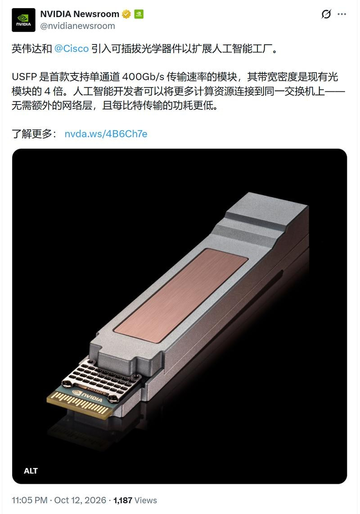
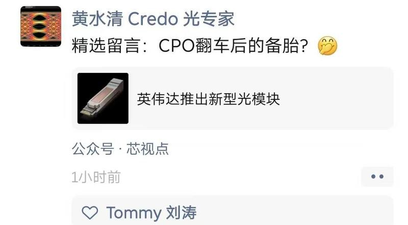

调研纪要 · 2026-10-13 新闻日报
星球 ID: 28855458518111 | 共 302 条帖子 | 精华 63 条
| 查看研究积累
强制同步到研究积累
全部 电子 计算机 机械设备 电力设备 非银金融 其他 汽车 医药生物 宏观策略 食品饮料 国防军工 基础化工 传媒 交通运输 公用事业 农林牧渔 有色金属 社会服务 建筑装饰 通信 建筑材料 商贸零售 轻工制造 房地产 煤炭 美容护理 纺织服饰 石油石化 银行
书签
1013更新part2：【华正新材】—继续PCB产业链业绩的确定性
1013更新part2：【华正新材】—继续PCB产业链业绩的确定性
1️⃣#Q3经营拐点确立： Q3是公司基本面关键转折点，7月单月盈利已经到2026Q2整季度水平，9月环比8月经营数据继续改善，同时Q4预计业绩环比继续向上。2025年高频高速占比9～10%，2026前三季度累计20%占比，全年预计30%，27年40～50%。
2️⃣#涨价持续韧性十足： 涨价持续，近几个月保持每个月10～15%增长，FR4目前毛利率40%，高端35～40%，PP 30～40%。行业正常DD能见度通常3周～1月，当前紧缺可以看3个月。
3️⃣#满产满销亟待新产能释放： 公司设计产能为360w张/月，但因m2,4,6热压时间长，PP占用产能（600wm），实际出货在260～280w张/月；珠海新增100w张，其中50w张2027Q1-2逐步释放，剩余50w张预计2028投放。
4️⃣#ABF&BT国产替代加速： ABF公司在SN，XS等载板测试推进，当前主要用于非民用及小批量工业应用，2026～2027是国产替代好窗口；BT材料进展快于ABF，SX通过验证，处于等待DD状态。
【长城机械 汪湛帆】鸿富诚调研要点20261013
【长城机械 汪湛帆】鸿富诚调研要点20261013
🧧导热材料石墨烯：
1、目前石墨烯主要用在TIM2上面，客户正在测试把石墨烯导入TIM1，主要是为了解决铟基金属受热容易鼓包，使得盖板鼓起导致漏液等一系列问题。TIM2单芯片价格130-150元，如果TIM1导入石墨烯，价值量接近TIM2
2、Rubin Ultra导热材料技术演变：Ultra导热材料有可能是石墨烯或者液态金属，但液态金属目前存在的漏液问题还没解决，公司同时深耕布局液态金属技术路线多年，如果液态金属路线跑通，公司的业务也可以及时跟上。同时公司有在尝试石墨烯材料、液态金属材料与金刚石颗粒融合去做导热材料，但没还未做出来，也未曾听说其余同行有做出来
3、石墨烯还可以应用在光模块导热材料：目前新易盛和索尔思都在测试把石墨烯作为1.6T光模块的散热解决方案，最终光模块企业会评估各个技术路线的成本来选择最优路线
🧧金属复合材料：
金属材料产品主要应用在晶圆产品封测和测试阶段，例如芯片的检测
【中信公用事业】川投能源3季报简评
【中信公用事业】川投能源3季报简评
[太阳]Q3业绩好于预期，单季度实现归母净利20.76亿元（+17.9%），业绩双位数增长主要受投资受益增长推动，Q3公司投资收益同比增长3.2亿元至20.8亿元。
[太阳]从高频数据看，Q3二滩、锦屏等电站的出库流量同比增加明显，推测雅砻江公司Q3电量或同比改善明显，进而提振核心参股公司雅砻江的业绩表现。2026年，我们预计雅砻江公司全年净利润规模有望达到95亿元，为公司贡献投资收益45亿元。
[太阳]公司核心参股水电步入产能扩张周期。2026年，参股20%的大渡河公司随着双江口等电站投产进入投产周期，参股48%的雅砻江公司也即将迎来新一轮的中游电站投产周期，参股公司大体量、高质量的水电资产释放，为公司业绩成长提供动力。我们预计公司2026~2028年归母净利润分别为49.0/58.1/61.2亿元。
[太阳]当前水电板块投资价值及成长属性均具备，配置首选具有装机投产催化的川投能源、国投电力、国电电力等，以及防御特征异常突出的长江电力等。
[太阳]欢迎交流（李想/苏雯婕）
【国金非银】中国船舶租赁信息跟踪笔记20261013
【国金非银】中国船舶租赁信息跟踪笔记20261013
投船逻辑：公司自2012年成立至今，始终坚持"逆周期投资、跨周期经营"的逻辑。当前船价处于高位，公司维持资产稳定、控制投资节奏，同时调整折旧年限（从30年调至25年）、压降负债率（约61%）、留存现金，为下一轮投资周期的扩表做准备。
航运市场展望：当前运价处于高位，预计2027-2028年会逐年回落，整体趋向均值复归。不同船型表现分化。预计油轮景气可持续至2027年初，但2027至2028年新增交付较多，运价将承压；散货船供小于求、未来看涨；支线箱船、LNG目前还是有比较好的空间。
经营策略：业务结构方面融资租赁比例下降，原因一是避免与银行系金租公司卷价格，二是船东因盈利充裕而大量提前回购。公司客户结构也有变化，有一部分客户转型为货主，能够跳过中间航运公司，由中船造船、中船租赁提供融资和服务、货主直接用船，是一种创新模式。船舶方面，母公司设计出了创新船型，例如以前只能单程运货收费的船升级为了往返都能运货收费的多用途船，未来能提升运营效率。
业绩展望：公司作为央企，利润不能有太大波动，希望这几年利润做到稳定增长。去年派息率约50%，今年预计能保持稳定。
假设分红率与去年持平（约54%）、净利润增长13%，则26E股息率约7.3%。
🌶晨光生物披露2026年前三季度业绩预告：
🌶晨光生物披露2026年前三季度业绩预告：
预计26Q1~Q3实现营业收入49~51亿元，同比变动-2.92%至+1.05%；归母净利润2.54~2.84亿元，同比下降约6.53%~16.40%；扣非净利润2.19~2.49亿元，同比下降约2.73%~14.45%。按预测区间中值测算，前三季度归母净利率约5.4%、扣非净利率约4.7%；回落约0.6和0.4pct。
公司实现营收17.41~19.41亿元，同比增长25.3%~39.7%；归母净利润0.75~1.05亿元，同比-15.1%~+18.7%（去年同期0.89亿元）；扣非净利润0.56~0.86亿元，同比-21.4%~+20.6%（去年同期0.72亿元）。按预测区间中值测算，26Q3归母净利率约4.9%、扣非净利率约3.9%；去年同期约为6.4%和5.1%。
业绩变动主要因素系：
1）前三季度辣椒红色素销量同比增长，但受市场影响毛利率同比下降2pct；辣椒精销量同比减少约19%。
2）第三季度叶黄素迎来经营拐点，产品销量、毛利率均同比增长。
3）棉籽类业务受季节间波动影响，实现的收入、利润同比增长。
4）受参股公司或联营企业经营业绩减少影响，公司投资收益同比减少约2,250万元。
1013更新part1：【金马游乐】交流反馈：文旅场景新变化——物理AI的具象化
1013更新part1：【金马游乐】交流反馈：文旅场景新变化——物理AI的具象化
#从机器人硬件→文旅场景数据打通→泛娱乐场景中的用户体感的二次深化，聚焦游乐、文旅、娱乐、商业几大场景。
依托自身机电一体化、高精度计算、数字孪生、运动控制技术积累以及文旅场景资源，延伸布局具身智能产品，协同原有文旅业务发展。公司的机器人有何优势？
1）首先，游乐场基建之后，IP差异之外亟待解决用户体验问题，公司是上海迪士尼、北京环球、上海乐高唯一的中国游乐设施供应商，拥有游乐场运营最核心数据。
2）机器人相关布局：上游产业链投资布局模组电机等，下游联合相关机器人企业、娱乐公司布局相关咖啡机人形机器人，公仔售卖机器人等。
3）公司相关机器人布局目前不同于其他服务类滚轮机器人，后续增强互动性依赖人形机器人（代工+文娱场景knowhow），#从单纯任务型机器人→物理AI互动式机器人（对话式），在消费者等待咖啡中引入明星公仔销售。#明年DD有望实现1.5～2w台单台价格10w+。
4）人形机器人上半年已实现千万收入，明年预计指数级增长。
【中信电子】星宸科技：Q3扣非环比增长34%~48%，继续强call业绩最好的端侧SoC龙头
【中信电子】星宸科技：Q3扣非环比增长34%~48%，继续强call业绩最好的端侧SoC龙头
#26Q3扣非环比增长34%~48%。根据公司业绩预告，公司预计Q3营业收入18.8亿～19.5亿元，同比增长146.35%～155.52%，环比增长12.98%～17.19%；归母净利润6.8亿～7.5亿元，同比增长726.73%～811.83%，环比增长5.80%～16.69%；扣非归母净利润6.7亿～7.4亿元，同比增长872.83%～974.47%，环比增长33.57%～47.53%。
#端侧业务前瞻布局+快速成长，乘风物理AI浪潮。公司端边侧AI SoC业务线（覆盖智能机器人、边缘计算等前沿赛道）出货量、营业收入持续走高，明确量价齐升格局；同时公司全新形态算力板卡实现技术突破并快速放量。我们继续看好公司逐步构建全栈端边侧AI芯片产品矩阵，在即将爆发的物理AI浪潮中乘风而起。
#我们继续看好公司26Q4及27年受益超级周期而实现持续的业绩释放。公司物理AI期权丰富，继续强call。
欢迎联系 中信电子
🧧【招商机械】日联科技收购菲莱测试更新公告——20261013
🧧【招商机械】日联科技收购菲莱测试更新公告——20261013
[烟花]#收购落地在即，#双方整合加速。今日公告主要更新内容：①收购菲莱99.8314%股权；②交易作价确定为9.33亿元。本次交易调整方案已获公司董事会会议审议通过，后续收购持续推进，预计10月底11月初完成交割和并表。
[烟花]#菲莱在手订单充裕，#并表后有望进一步增厚日联利润。2024、2025、2026H1实现营收1.19/1.75/1.38亿元，扣非归母-0.11/0.19/0.25亿元，呈现快速增长趋势。根据业绩对赌，2026-2028年净利润目标为4000/6000/8000万（26H1已完成全年承诺的62.5%，达成进度良好）。截至26H1末，在手订单5.88亿元，在手订单充足保障业绩快速增长。
[烟花]#国内老化测试Tier1供应商，#光相关新品持续开发迭代中。菲莱是国内光模块老化测试设备Tier1供应商，产品覆盖从晶圆、芯片、器件到模块的全链条测试，深度合作包括易中天、源杰、索尔思、Fabrinet、lumentum等头部客户，新品方面，2000瓦级老化系统、CPO光电耦合的测试设备、1.6T采样示波器等新品持续研发中。后续随着产能、管理、客户、供应链等协同效应释放，长期看具备再造一个日联的能力。
🌟观点重申：截至10/13，日联科技市值188e，当前位置只反应主业预期（X光检测设备），光模块+半导体（SSTI、赛美康、QES）提供期权，长期看平台化布局具备穿越周期能力，成长空间巨大。收购落地在即，解禁利空出尽，#我们在此位置再次推荐！
☎️招商机械 郭倩倩/陈之馨
华熙生物(688363)再生医美赛道Juvelook及ECM新品发布会重点🔥
华熙生物(688363)再生医美赛道Juvelook及ECM新品发布会重点🔥
[烟花]今日华熙生物为再生材料新品Juvelook以及润致ECM新品，于北京华熙五棵松举办主题为"换龄新生，科技逆龄"的大型发布会。华熙生物医美赛道布局进入全球化+科技化领先阶段。
#本次华熙生物新品发布会以ECM系统抗衰为顶层战略，核心落地成果为海外引进Juvelook与自研润致ECM针双产品亮相，正式补齐品牌再生医美系统化解决方案能力。发布会确立“系统性修复、稳态抗衰、安全医学优先”的新赛道逻辑，其中Juvelook作为本次对外引进的核心重磅单品，是华熙完善产品矩阵、接轨全球前沿再生技术的战略举措。
[烟花]1️⃣Juvelook拥有明确的海外技术背景与中国独家代理的战略定位，承担华熙“全球化技术引进”的布局使命。产品由韩国VAIM公司研发生产，依托双方长期商业合作基础，华熙生物成功拿下其中国区总代理权限。
2️⃣在双产品体系中，自研润致ECM针代表内生科研转化能力，而Juvelook则代表外部前沿材料创新能力，二者形成“自研补稳态、海外补再生”的互补格局，丰富了品牌再生医美工具库。
[烟花]Juvelook将纳入华熙“土壤疗法”体系，与自研ECM针形成联合治疗的新临床方案。未来Juvelook不再是单一单品使用，而是融入ECM微环境修复逻辑，与润致ECM针及品牌其他产品组合搭配。通过积累大量联合治疗临床数据，沉淀标准化、个性化治疗路径，落实抗衰“一人一策”的精准理念，同时以通俗的“土壤修复”概念完成市场科普，降低终端认知门槛。
[烟花]Juvelook的落地承载华熙医美赛道升级与国际化双向循环的长期产业目标。该产品的引进，标志着华熙正式从“单品成分内卷”迈入“系统组织抗衰”新阶段，推动国内再生医美从单点治疗转向全生命周期皮肤管理。同时这也是品牌国际化战略的第一步，未来将持续引入全球优质技术，同时输出自身合成生物研发优势，实现中外技术互通，让安全、合规、前沿的再生医美技术实现普惠落地，带动行业整体规范化升级。
杰创智能（301248）：前三季度预计净利润大幅上升，智算集群建设持续加码，算力资产变现进入加速通道【天风计算机团队】
杰创智能（301248）：前三季度预计净利润大幅上升，智算集群建设持续加码，算力资产变现进入加速通道【天风计算机团队】
10月13日，公司披露2026年前三季度业绩预增公告，预告中公司财务情况较去年同期显著改善，报告期内公司盈利增长提速，公司聚焦算力基础设施市场，智算云集群建设投资不断推进。
[太阳]#报告期同比利润增长迅速，受益于公司“AI+云计算”业务，新建智算云集群持续交付并进入计费周期，智算云服务收入环比持续提升，公司预计前三季度实现归母净利润3,670万-4,940万元（同比+61.16%-116.93%），EBIT（息税前利润）约 12,000万元，EBITDA（息税折旧及摊销前利润）约 31,000万元，扣非净利润2,570万-3,840万元（同比+70.90%-155.36%），其中Q3单季营业收入同比持平，环比增长约50%，归母净利润同比增长约1,000%、环比增长约300%。算力资产变现进入加速通道。
[太阳]#总资产较期初+130%，token工厂创新落地。公司坚定聚焦算力基础设施市场，持有的云计算、智能算力相关资产规模较上季度显著增长，总资产较预告期初增加约130%，同时推进token工厂业务创新落地，从基础设施不断向上发展，成长曲线进一步打开。
[太阳]#智算集群建设加速，设备资产额度超25亿。根据公司10月13日交易所互动平台回复：公司根据在手订单及项目实施计划，分批推进算力设备采购、部署和交付，已建成集群陆续进入运营计费阶段。截止半年报，公司已建成约9,000P（FP16）智算集群，形成设备资产超过25亿元，在建集群算力规模超过40,000P（FP16）。在建规模约为已建成的4.5倍，业务发展未来可期。
欢迎交流！
天风计算机 缪欣君/丁子惠
金盘科技26Q3点评：订单持续高增[庆祝]261013
金盘科技26Q3点评：订单持续高增[庆祝]261013
[太阳]26Q1-Q3实现营收61.0亿元，同比+17.5%，归母净利润5.4亿元(股份支付、可转债利息支出、外币贬值汇兑损失合计影响约1.7亿元），同比+12.0%，毛利率27.2%，同比+1.1pct；26Q3公司实现营收25.5亿元，同比+24.9%，归母净利润2.4亿元，同比+9.4%，毛利率26.9%，同比+0.5pct。
#海外&数据中心是营收增长的核心驱动 ①海外：前三季度营收25.1亿元，同比+58%，Q3营收10.3亿元，同比+45%；②数据中心：前三季度营收24.0亿元，同比+146%，Q3营收11.3亿元，同比+179%。
#海外&数据中心新签订单持续高增 前三季度新签订单111.2亿元，同比+82%，Q3新签订单36.2亿元，同比+116%，其中①海外：前三季度新签订单61.5亿元，同比+297%，Q3新签订单19.6亿元，同比+366%；②数据中心：前三季度新签订单56.8亿元，同比+472%，Q3新签订单18.1亿元，同比+1609%。
#公司在手订单充沛 截至三季度末，公司在手订单113亿元，同比+63%，海外在手69.8亿元，占比提升至62%；AIDC相关在手55.7亿元，占比提升至49%。
[红包]投资建议：公司海外&数据中心新增订单持续高增，看好后续在手订单进入密集交付期，业绩加速释放，持续推荐！
💵中信主题策略刘易团队-“SST主题”之【金盘科技688676】Q3业绩整体符合预期，海外&AIDC订单超预期[玫瑰]
💵中信主题策略刘易团队-“SST主题”之【金盘科技688676】Q3业绩整体符合预期，海外&AIDC订单超预期[玫瑰]
#AIDC&海外已成增长主驱动
1、Q3业绩符合预期：2026年前三季度实现营收61.04亿元（+18%），对应归母净利润5.44亿元（+12%）；单Q3营收25.49亿元（同比+25%），归母净利润2.41亿元（同比+9%），受铜价上行以及汇兑、股份支付、可转债利息等扰动。
2、AIDC&海外已成增长主驱动[烟花]：AIDC前三季营收23.98亿元（YoY+146%），Q3单季11.33亿元（YoY+179%） 。海外前三季营收25.14亿元（YoY+58%），Q3单季10.33亿元（YoY+45%）。
3、订单层面大超预期[烟花]：前三季AIDC新签订单56.78亿元（YoY+472%），Q3单季18.09亿元（YoY+1609%）；海外新签订单61.49亿元（同比+297%），Q3单季19.58亿（YoY+366%），持续提速。
#重视公司在北美电力大周期下的卡位优势
1、电力已成北美AI基建落地的核心硬约束，我们始终强调公司优势在于优质的客户资源（直接触达CSP需求）+海外产能布局（马来、墨西哥、美国本土），持续的大额订单落地便是最好验证。前期美国禁令核心底层逻辑仍在促使制造业回流，且重心预计在电网侧为主，公司仍是北美耕耘当地市场（产能、品牌、团队）最深的AIDC电力设备配套公司之一。
2、产品能力圈持续拓宽，打开远期TAM。高压直流配电（HVDC、SST）为AIDC配电关键升级技术方向，产品集成化趋势为原本电网侧的电力设备公司提供了切入至更高ASP领域的机遇。公司SST产品持续迭代适配新标准，后续在客户端送样、小批量等里程碑事件也值得持续关注。
☎欢迎来电探讨！中信主题策略 刘易/田鹏/王涛/白弘伟
【浙商大消费|马莉/钟烨晨】三年一倍股：古茗｜茶百道涉嫌IPO欺诈停牌，行业格局有望加速优化
【浙商大消费|马莉/钟烨晨】三年一倍股：古茗｜茶百道涉嫌IPO欺诈停牌，行业格局有望加速优化
[爱心]【行业格局再催化，竞争压力有望边际改善】
◾#茶百道遭港证监会指令停牌，涉嫌IPO招股需求人为操纵
◽今天香港证监会公告：茶百道IPO或被人为操纵，营造虚假认购需求，即日起上午9点起暂停股份交易，涉欺诈计划调查。
◾#外卖补贴影响逐步消化
◽外卖补贴收缩推动行业竞争回归理性，流量资源向头部品牌集中
◽公司市占率由2023年的2.3%提升至2025年的3.4%，稳居现制茶饮行业第二
◾#新品类拓展打开增长空间
◽咖啡、早餐等业务持续推进，丰富消费场景，有望成为长期同店增长增量
◽截至25年末，超12,000家门店配备咖啡机；截至26年8月，全国1.3万+门店将配备烤箱
[爱心]【开店空间充足，长期增长持续】
◾#门店扩张潜力仍大
◽开店节奏阶段性放缓主要源于加盟质量优化，不改长期扩张空间
◽公司仍有10+省份尚未进入，北京、上海、南京等高线城市仍具布局机会
◾#门店模型持续升级
◽年初至今六代店新店型净增3000+家，持续强化品牌势能
◽对标瑞幸，古茗门店规模仍有翻倍以上空间，长期有望依托规模及供应链优势提升行业地位
[爱心]【股东回报明确，长期价值凸显】
◾#分红比例保持高位
◽公司承诺未来年度分红率不低于50%，持续提升股东回报确定性
[太阳]【盈利预测及估值】
◾见报告
◾链接：#小程序://浙商证券研究所/wSZ0ZoAhVxAwXen
⚠风险提示：宏观经济波动、食品安全、股东减持风险、行业监管政策变化等。
🌹欢迎联系浙商大消费策略团队：钟烨晨18017203325/王宇阳
🍭【天风金属&新材料】金力永磁26Q3业绩预告：磁材龙头业绩向好，机器人业务持续兑现 20261013
🍭【天风金属&新材料】金力永磁26Q3业绩预告：磁材龙头业绩向好，机器人业务持续兑现 20261013
☀️事件：公司预计2026年前三季度实现归母净利润7.35-8.00亿元，中值7.68亿元，同比+48.9%。单26Q3预计实现归母净利润2.73-3.38亿元，中值3.05亿元，同比+45.0%、环比+13.3%。#业绩符合预期。
【价&盈利】氧化镨钕Q1/Q2/Q3均价分别为74.70/73.98/74.26万元/吨，Q3同比+37.5%、环比+0.4%，稀土价格整体高位企稳。Q3单吨毛坯净利润约3w+（自行测算，仅供参考），单吨盈利环比持续提升。
[烟花]投资建议：公司产能持续释放（现有4万吨/年、2027年底有望达6万吨/年），叠加稀土价格有望进入长周期上行通道，业绩有望持续上行。更重要的是，当前处于人形机器人产业化加速阶段，公司深度绑定机器人头部公司，具身机器人电机转子产品已有小批量交付（机器人及工业伺服电机领域26前三季度营收同比+100%），将充分受益机器人产业进展，预计26、27年利润11/13e，建议持续关注。
🔥深信服：AI安全与云共驱业绩拐点，持续推荐
🔥深信服：AI安全与云共驱业绩拐点，持续推荐
[红包]7月15日，我们外发深信服跟踪点评《
经营拐点已至 ↗ 》，给出目标价191元。8月21日晚公司披露半年报，业绩大超预期。本篇报告中，我们继续重申：公司有望依托#“安全+云+全球化”的能力组合，进入新的增长周期。
[红包]业绩拐点已至，业务结构与经营效率同步改善。
- 公司2025年起逐步进入经营修复期，2026年业绩拐点已至。上半年营收39.98亿元（+32.85%），归母净利润2.31亿元（上年同期-2.28亿元，扭亏，+201.58%）。其中，云计算收入同比增长58.60%，收入占比升至55.34%；企业客户收入占比首次超过50%。
[红包]安全业务反转，AI安全打开“存量升级+新增防护”空间。
- AI一方面提升漏洞发现、攻击自动化和安全运营效率，另一方面，大模型与Agent进入企业业务流程后，敏感数据泄露、提示词注入、工具权限越界等风险持续增加，安全边界由传统网络与终端进一步延伸至模型输入输出和Agent执行环节。
- 公司围绕“AI赋能安全+AI保护AI”持续扩展安全GPT、AI安全平台、大模型安全护栏及AI算力网关等产品，截至目前安全GPT已实现500+用户深度应用、50+高对抗攻防实战验证。
[红包]私有云与Agent趋势共振，云业务成为核心增长动力。
- 私有云：AI应用深入企业核心业务后，尤其是Multi-Agent架构下处理数小时至数天的长程任务时，涉及高密度的业务数据交互。另外，国产模型能力的提升与推理降本不仅降低了本地部署门槛，更使得在私有云环境中构建Multi-Agent操作系统成为可能，助力企业在保障数据安全的前提下实现系统级AI交付；
- AI Agent：Agent由内容生成向任务执行延伸，使基础设施需求由单纯GPU推理进一步扩展至CPU执行、沙箱隔离及存储侧，公司HCI、CPU沙箱及EDS有望受益于CPU资源池扩容、执行环境隔离和数据读写需求提升。
[红包]海外本地化持续深化，海外业务进入收获期。
- 业务覆盖全球30多个国家和地区，20余个海外分支机构，2025年海外收入5.99亿元（+24.49%），2022-2024年复合增速43.4%。
- 依托超融合、虚拟化及AI基础设施产品，公司已在多个国家推进VMware替代及本地化交付项目。公司有望进一步复制成熟产品能力，推动海外收入贡献持续提升。
[红包]投资建议：#从7月拐点判断、到中报逐项兑现、再到AI安全映射，我们持续核心推荐。上调目标价191元，较现价134.98元（10月13日收盘）空间约47%，维持“买入”评级。
🌊【国海电新 | 深度】诺德股份：锂电铜箔迎景气周期，算力升级带来增量机遇（10.13）
🌊【国海电新 | 深度】诺德股份：锂电铜箔迎景气周期，算力升级带来增量机遇（10.13）
#17万吨铜箔产能、高端电子铜箔认证突破
2026年底，公司铜箔产能有望达到17万吨，其中3万吨可专项生产高端电子电路铜箔。2026年8月HVLP1至HVLP3进入批量出货，HVLP4处于头部CCL、PCB客户验证阶段，HVLP5推进研发。同时，公司锂电铜箔加工费持续上调，盈利能力已进入修复通道，26H1实现营收同比+113.33%，归母净利润1.03亿元、同比扭亏。我们认为，公司未来两年，有望进入锂电、电子铜箔双轮驱动的高速增长阶段。
#AI升级拉动HVLP需求、高端电子铜箔进入放量期
随着AI服务器通信速率提升，倒逼PCB-CCL-铜箔产业链持续升级，电子铜箔向HVLP等高端铜箔升级，导致高端电子铜箔产能日益紧张。大陆主要CCL厂商已规划扩产约1.17亿平方米高等级CCL，海外台光电等ccl公司同样加速扩产，HVLP全球需求2027年有望增长50%以上。而日系、台系铜箔公司扩产节奏仍然较慢，导致HVLP加工费年内已有多轮涨价，H4、H5等级已供不应求，从而逐级挤压高端铜箔产能。
2026H1，公司RTF3、HVLP1/2已实现小批量供货，8月HVLP1至HVLP3进入批量出货，HVLP4处于头部CCL、PCB客户验证阶段，HVLP5推进研发，产品和产能同步升级。我们预计，公司2026-2028年电子铜箔出货量为1.72/2.39/2.51万吨，对应电子铜箔收入为22.02/37.07/40.72亿元。
#供需改善推动锂电铜箔加工费上行
今年以来，随着锂电排产逐月提升锂电铜箔加工费不断上涨，公司26Q1完成首轮加工费上调，Q2极薄锂电铜箔加工费阶梯上涨。我们发现，新一轮铜箔扩产厂商大多投向电子铜箔，锂电铜箔扩产相对较少，增速或不超10%，显著弱于下游扩产节奏，锂电铜箔加工费将持续维持高位甚至进一步上涨。公司目前是中创新航、比亚迪等公司的重要铜箔供应商，有望充分受益于这一轮锂电铜箔。
#销量、加工费与产品结构共同驱动利润增长
我们预计，公司2026-2028年铜箔出货量为12.45/16.39/18.61万吨，27-28年同比增长32%/14%，年实现营收175.46/248.02/281.17亿元，归母净利润4.62/12.26/17.39亿元，对应PE 40.67/15.32/10.80倍。首次覆盖，给予“买入”评级。
风险提示：下游需求和加工费上涨不及预期、高端铜箔认证放量不及预期、行业扩产超预期、产能爬坡及流动性风险等。
报告🔗：
国海电新 | 诺德股份深度：锂电铜箔迎景气周期，算力升级带来增量机遇 ↗
-------------------
【GHDX】邱迪、王刚、谭甘露、吴亦辰、王泽麟、张潇
🍁🍁🍁恩捷股份：Q3业绩超预期，隔膜满产满销，量价齐升趋势延续
🍁🍁🍁恩捷股份：Q3业绩超预期，隔膜满产满销，量价齐升趋势延续
📕公司预计26Q1-Q3实现归母净利润15.4-20.5亿元，同比扭亏；扣非净利润15.7-20.7亿元，同比扭亏。单Q3预计归母净利润7.2-12.3亿元，中位数9.75亿元，环比Q2增长约29%-120%，盈利弹性进一步释放。
🍁 Q3隔膜出货45亿平，环比增长约7%，目前处于满产状态，单月排产超过15亿平。对应Q3单平归母净利约0.16-0.27元，中位数约0.22元，较Q2明显改善。二季度的涨价订单在三季度完整体现，此外8、9月份又有新的涨价落地，叠加技改带来的降本超预期，Q3盈利明显改善。往四季度看，随着涨价订单全面落地，后续单平盈利仍具向上弹性。
☀当前满产运行、盈利持续改善，叠加海外停工费用扰动，实际经营弹性值得重视。我们预计公司26、27年归母净利润27、46亿元，对应PE 16、9.5倍，持续推荐。
【DW电子】当前位置#杰华特 怎么看？
【DW电子】当前位置#杰华特 怎么看？
📮业绩
公司Q3营收环比增速有望再提速，不光得益于Drmos（毛利率50%+）放量，同时也受益9月涨价。两大逻辑将在Q3业绩中体现，且带动Q3毛利率显著提升。而Q4是Drmos核心放量季度，加之Q4为首个完整反映涨价函的季度。Q4业绩也更加值得重视
📮逻辑
由于海外友商许可证陆续到期，公司Drmos明年在H份额有望提升至60-70%。其余国产GPU客户物料紧缺，导入同步加速。在产能先发储备，产品性能领先两大前提下，公司国产Drmos一供地位坚实。
📮估值
即使23-24年流动性匮乏叠加模拟下行周期，市场给予平台型模拟厂商的PS为7-12倍，且彼时模拟公司均无AI业务敞口。当下若以26/27年45/80亿营收测算，公司对应PS为8/5倍。即使不考虑AI业务放量、模拟涨价、Drmos先发卡位，#极限保守假设下公司当前估值亦极具性价比！
而对标海外，Drmos厂商MPS 26年PS约15倍。即使不考虑杰华特成长股估值溢价。27年80*15倍PS也是1200亿市值的公司。
[拳头]近期调整主因市场资金面及宏观叙事扰动，公司基本面持续向好，产业逻辑相继落地，#重视极具性价比的杰华特！
康耐特光学：千问AI眼镜新品发布，公司独家供应高端功能镜片，
康耐特光学：千问AI眼镜新品发布，公司独家供应高端功能镜片，
事件：10月13日，阿里巴巴旗下千问正式发布AI眼镜N1、N1 Pro两款新品，重点围绕影像拍摄、眼动交互、健康监测及AI主动服务等功能展开。康耐特光学为N1及N1 Pro两款AI眼镜提供定制镜片，并独家供应部分高端功能镜片。
#详情：千问AI眼镜新款发布，多模态感知及主动交互能力进一步升级。 1）N1系列均搭载5000万像素摄像头，支持4K视频拍摄、实时翻译及语音AI交互。2）其中，N1 Pro进一步加入眼动追踪、虹膜识别及体征监测功能，可实时监测心率、血氧、皮肤温度等指标，并结合视觉AI实现注视目标识别、实时翻译及虹膜核身支付。此外，依托低功耗感知芯片及端侧视觉理解模型，产品可持续感知外部环境，主动提供行程提醒等服务。N1/N1 Pro单价分别为2899/3399元，国补及优惠后到手价为2218/2600元。
#康耐特深度参与千问AI眼镜供应链，独家供应高附加值功能镜片。公司为N1、N1 Pro每款机型分别配套23款镜片SKU，覆盖不同折射率、防蓝光、智能变色及多彩功能镜片，并提供偏光光学片及多层功能镜面膜等解决方案，适配办公、骑行、高尔夫等多元场景。其中，公司为近视处方镜片核心供应商，并独家供应1.74高折射率镜片、高价值多彩镜片及智能变色镜片，进一步验证公司在高端光学镜片领域的技术积累及竞争优势。
瑞穗：SiPho 模块出货量将从 2025 年的 2300 万个增至 2026E 年的 4500 万个（同比增长 95%），并于 2029E 年达到 ~1.88...
瑞穗：SiPho 模块出货量将从 2025 年的 2300 万个增至 2026E 年的 4500 万个（同比增长 95%），并于 2029E 年达到 ~1.88 亿个。
Nomura--电线与电缆 光学器件
Nomura--电线与电缆 光学器件
1/6
AI 光学组件周期可能比市场预期的更强劲——并且持续更久。
Lumentum 的 CEO 表示，主动光学产品已完全售罄至 2029 年初，而一些客户已开始锁定 2030 年的订单。$LITE
2/6
供应缺口相当显著：
• 对于某些产品，Lumentum 可能无法满足 2027 年底前 70% 的需求
• 对于其他产品，约 30% 的需求可能在 2028 年底前仍无法满足
• 产能正在快速扩张，但仍远低于客户需求
3/6
下一波增长可能规模更大。
Lumentum 预计，用于下一代 AI 系统的激光器需求将在 2029 年左右加速增长，从而创造一个潜在市场规模“比今天大一个数量级”。
Nomura 认为，用于规模化 CPO 的超高功率激光器将是关键增长驱动力。
4/6
Nomura 强调住友电气 $5802 作为潜在受益者：
• CPO 激光器的 NVIDIA 认证进展预计在 FY3/27 实现
• 有意义的 CPO 激光器销售可能在 FY3/28 下半年启动
• 解决当前生产问题可能进一步释放盈利上行空间
• 通过 InP 衬底和其他供应链环节的潜在间接敞口
其中一些供应商关系是 Nomura 的估算，而非官方确认的安排。
5/6
古河电气 $5801 也可能受益：
• 光学器件良率正在稳定
• 其 FITEL 产品业务已转为盈利
• DFB 激光器销售预计将增加
• Lumentum 预计泵浦激光器产量将在未来五个季度内翻四倍
古河是与 Lumentum 并列的主要泵浦激光器供应商。
6/6
藤仓 $5803 不生产相关激光组件，因此在这一特定趋势中并非直接受益者。
涨价消息：
涨价消息：
1.全球硫磺争夺战白热化，价格暴涨近10倍
2.国巨规划10月底-11月启动新一轮涨价，其余厂商预计跟涨,预计高容调价50%或更多、中低容10-30%
3.松下发布电子线路板材料价格调整的通知，多种类覆铜板价+200%
最新与一线开发小伙伴交流分享20261013
最新与一线开发小伙伴交流分享20261013
1、Opus5.5非常聪明，断档式领先GPT6等其他模型。模型智能同时体现在完成同样任务消耗tokens少且完成度更高。Anthropic可能重新占上风
2、Haiku极其便宜，推测还是小模型参数上做了极大缩减。不过Haiku在长文档场景（>100k）后单价直接跳升五倍，不排除在100k以内的上下文，Anthropic做了整体集群冗余算力的调度。
3、就在上半年可能还是人指导Agent工作，现在一线科研领域基本是Agent指导研究思路。举例：医药领域博士伙伴，自年初安装AI后，以前一年发一篇上顶会的论文，现在agent指导下（帮你想出同等高质量的researchidea）一年能发4-5篇。AI4S应该持续会看到加速
4、海外与国模的差距进一步拉大，因为算力不足，国模此前选取性价比更高的蒸馏路径，当前蒸馏难度显著提升，重新搭建RL能力需要时间。
5、近期韩国多家银行遭到黑客攻击，据报道黑客使用多家中国的开源模型就能黑进传统金融体系。举这个例子只是想说明，模型进化的速度已经可能已经超过可控的范围。
6、暂且没有什么投资建议。欢迎讨论。交流最后的感受，只有做多身体，应对这个不可预测的时代。
【国泰海通医药】AIDD驱动研发范式变革，湿实验服务率先受益
【国泰海通医药】AIDD驱动研发范式变革，湿实验服务率先受益
AI制药迎来产业拐点，大模型入局重构行业范式。大语言模型的飞速发展，加速了包括生物医药领域在内的科研发现。我们认为，这一轮AIDD与上一轮的区别在于，AI从搜索效率工具，升级到能够执行一套完整的决策体系、从头设计分子，有望改变药物设计的底层逻辑。2026年以来，基础大模型厂商加大对医疗行业的投入，药企合作模式由项目制转向模型订阅、联合实验室等企业级深度共建，行业迈入临床验证与订单兑现的关键窗口。
AIDD有望提升候选分子成药性，拓展生物学假设空间。医药研发的核心痛点在于临床转化，经校正的药物-适应证项目成功率近年维持在约8%-9%的低位，约86%的临床沉没成本来自II期及以后终止的项目。我们认为，疗效不足与安全性问题大多根源于靶点和候选分子的早期决策。AIDD有望从两端破局，一方面同步优化多种分子性质、提升成药性；另一方面拓宽靶点、表位与分子形式的选择空间，扩大进入研发漏斗的项目数量。由此，市场空间存在双重增量，一是临床成功率提升有望重构研发成本模型，节省的研发费用可投向更多项目；二是可做项目数量本身扩容。
计算‑实验闭环形成，湿实验服务确定性受益。我们认为，小分子在已成药靶点上的开发相对充分，新增项目更多靠靶点与机制层面的突破；AI从头设计则让大分子可在已知靶点上依托表位与分子形式的拓展持续新增项目，而这些项目产出的实验标签数据（包含成功与失败样本），是当前大模型训练与迭代优化最核心的素材。由此，需求瓶颈将沿着“AI模型产生设计→DNA合成→蛋白生产→实验验证→临床前测试”的链条逐级向下传导。
AI湿实验订单逐步兑现，能力壁垒持续深化。具备真实标签的湿实验数据是当前确定性最强的需求，DNA合成和蛋白生产成为最直接的瓶颈节点，金斯瑞（Gene-to-Protein一体化交付）与Twist（规模化序列合成）率先受益。我们认为模型训练期，供应商的竞争聚焦交付通量、周转速度与数据质量，自动化设备成为当前扩产的主要制约因素；中长期竞争重心转向复杂靶点与创新模态的制备表征、以及全链条验证覆盖能力。此外，当前制药流程尚未被全面重构，产业链各环节需求将依次释放，药效、安评、CMC等后端环节有望随管线推进承接增量。
推荐：金斯瑞、百普赛斯、百奥赛图（H）、药康生物；相关公司：近岸蛋白、义翘神州、奥浦迈
风险提示：技术迭代不及预期的风险，订单与产能兑现不及预期的风险，行业竞争加剧的风险，数据与供应链安全的风险。
[礼物]【浙商社服】橡胶：极强厄尔尼诺+供需缺口延续+合成橡胶维持高位，天胶易涨难跌（20261013）
[礼物]【浙商社服】橡胶：极强厄尔尼诺+供需缺口延续+合成橡胶维持高位，天胶易涨难跌（20261013）
[玫瑰]天气：10月NOAA预测厄尔尼诺“极强”概率由98%上调至100%。目前干旱天气对印尼、印度有影响，泰国降雨偏多。
[玫瑰]原料：泰国杯胶、胶水价格维持高位。说明依然难以放量。产能缺口明显。
[玫瑰]需求：10月处于需求旺季，但轮胎开工率仍处于低位。关注节后需求环比变化。
[玫瑰]库存：处于中性偏低水平。
[红包]重点关注：海南橡胶，市值空间欢迎私信浙商社服满静雅15026413613。
Q4催化密集，看好军工主赛道行情
Q4催化密集，看好军工主赛道行情
10月13日，航展新闻发布会在北京举行，集中介绍航展亮点，本届航展参展装备超3000件，“首展”“首秀”展品占比10%。主展区飞机超170架，规模创历史新高，航展是我国国防军工实力的公开体现。
空军方面，多型主战装备和无人智能等新质战斗力将亮相，首次在空军展台设置“数智赋能”板块，运用人形机器人、虚拟数字人等，应用人工智能面试、数字化维修以及智能化检测等前沿设备，集中展示“数智空军”建设成果。海军方面，首次拓展海上维度，开辟高栏海上装备展示区，海军现役装备大规模亮相。
持续看好军工板块，行业进展和催化密集，航展亮相、十五五规划出台、国产大飞机发动机等。重点关注：
军工主赛道：洪都航空、国睿科技、中航成飞、中航西飞、中航沈飞、航天南湖、北方导航等。
大飞机发动机：航发科技、航发动力、中航重机、万泽股份、航材股份、航宇科技、图南股份等。
高景气度：中国动力、北化股份、国科天成、睿创微纳等。
风险提示：进度低于预期，市场波动。
陈果：
陈果：
A股资金面现状： 除了保险OCI是增量配置资金、其他有定价权资金，追涨杀跌属性比较重。
市场特征： 容易因资金负反馈循环产生短期超跌，而这种超跌又都会孕育着一波反弹机会。
经典案例： 6月红利股的错杀和Q3的反弹修复行情。
今日市场点评1013：A股上演深V逆转，韩股重挫5.5%
今日市场点评1013：A股上演深V逆转，韩股重挫5.5%
行情总览
A股低开深探后逆转，早盘创业板、科创50一度跌超3%,午后全线回升，沪指+0.10%收复3800点,深成指-0.25%,创业板指-0.18%,成交1.69万亿。科创50午后一度涨超1%;港股恒指午后转涨。
周边市场，韩国KOSPI-5.47%，盘中跌超7%触发熔断,SK海力士跌超10%、三星电子跌近6%,日经225收跌1.8%。
商品与债市方面，避险资金涌入黄金，现货黄金突破4200美元/盎司。债券型ETF成交额突破3407亿元创历史新高,避险与流动性管理需求同步放量。
核心事件与观点
英伟达砍单传闻下韩国KOSPI两连跌且跌幅扩大，与A股科创50深V与PCB涨停潮对比，亚太两市表现出当前情绪在于筹码出清而非逻辑破坏，存储链短期仍需消化韩股杠杆出清的余波，但PCB/覆铜板业绩验证下，资金在恐慌并不怵于接筹。
A股的深V的另一面在于盘面上的结构性换防，有独立催化的PCB、CPO、军工、冰雪经济领涨，成交量温和放大下，结构显著而非宽基ETF放量式拉升；同时，防御端债券ETF天量与股市逆转并存，风险偏好并非完全修复，但权益端已兑现业绩的定价锚属性仍在。
IMF发布《
世界经济展望 ↗ 》，为AI经济对冲能源冲击的“分子vs分母”宏观框架提供背书，也进一步提示当前分母端财政/主权债是最大风险。往后看，市场情绪博弈AI对冲滞胀主题下，相比分母端主权财政恶化的相对慢节奏，较为高频的业绩指标和经济预测数据或将继续成为全球市场波动率的锚点。
风险提示：中东及俄乌乱局烈度加剧风险；全球收益率同步失控风险；各央行集体超预期转鹰风险；AI应用端营收及盈利能力不及预期风险。
欢迎大家与我们讨论，请联系国联民生宏观团队陶川/林彦
[红包]浙商机械 邱世梁|王华君【具身智能】小鹏机器人量产启动，人形机器人产业、政策、资本共振，持续推荐！
[红包]浙商机械 邱世梁|王华君【具身智能】小鹏机器人量产启动，人形机器人产业、政策、资本共振，持续推荐！
一、国内：小鹏人形机器人27年有望全球推广，人形机器人产业、政策、资本共振
1）产业：小鹏机器人量产启动。目标2026年底IRON机器人月产能1000+台，#2027年开始全球推广（应用于导购、讲解等商业场景），2030年前实现年产100万台。
优必选万台级工业机器人投产，#每10分钟可下线1台工业人形机器人。可实现用机器人造机器人的智造模式。
2）政策：上海新一代智能制造行动计划，目标到2028年，#推动8000台人形机器人进工厂，智能制造系统集成产业规模达1000亿元。
3）资本：宇树8月19日登陆科创板，智元启动赴港上市，8月7日云深处IPO状态变为已问询。
二、海外：特斯拉新一轮审厂启动，Optimus量产加速。
特斯拉Optimus产量已在近几个月提高了约十倍，8月机器人周产量达数百台。据观点网，#2026年Optimus有望下线约5万台，应用于特斯拉内部超级工厂。
9月17日，特斯拉团队开启新一轮机器人审厂工作，#有望向供应链企业下达相关订单。
国际巨头特斯拉量产在即，国内巨头产业、政策、资本共振，人形机器人产业化进展加速。
🚀【具身智能】重视：
1、确定性强的零部件供应商：恒立液压、三花智控、拓普集团、浙江荣泰、汇川技术、双环传动、绿的谐波、五洲新春、金沃股份、奥比中光、中大力德、雷迪克等
2、整机及应用场景：杭叉集团、中力股份、杰克科技、咸亨国际、杭州柯林、新时达、横河精密、中坚科技、优必选、安徽合力等
3、新技术或低估值转型标的：涛涛车业、上海沿浦、华翔股份、峰岹科技、安培龙、柯力传感、汉威科技、福莱新材、日盈电子等
风险提示：AI发展不及预期等
🔗浙商机械【具身智能】60多篇深度报告合集：
浙商机械【人形机器人】系列深度 ↗
浙商机械 邱世梁/王华君18610723118/蒋逸18158576706/秦乐恒15221680140
[红包]【申万宏源家电】扫地机9月数据更新：#行业高基数承压、上市公司仍有份额集中趋势
[红包]【申万宏源家电】扫地机9月数据更新：#行业高基数承压、上市公司仍有份额集中趋势
#行业线上销售数据：
#同期高基数压力致行业销额同比下滑： 据奥维云网数据，2026年9月扫地机器人线上市场销额同比-20.2%，销量同比-12.4%。
#公司份额及销额变化：
市占率方面，9月线上石头/科沃斯/云鲸/追觅/大疆销额市占率同比
+5.6/+1.0/-8.1/-0.5/+2.2个百分点，
达33.2%/31.6%/7.8%/7.1%/4.6%；
石头/科沃斯销售额同比-4%/-18%。
#9月去年同期基数仍较高，行业销额、销量同比承压；#上市公司中石头科技份额高基数下仍有明显提升，追觅份额小幅回升，但全年趋势来看仍压力较大。
#新品及大单品份额：
石头科技：9月线上销额冠军单品P30 PRO（上下水版），份额6.04%；P30 PRO上下水+标准合计份额约10.9%，占石头品牌约33%。
科沃斯：T90 Pro上下水+标准合计约7.0%，T90S Pro系列约8.2%，T80S Plus上下水+标准合计约4.7%，多系列接续支撑科沃斯线上份额31.6%。
[發]详细交流及数据欢迎联系【申万家电团队】刘正17316395519/刘嘉玲15221561909/沈呈熹15026575335/程恺雯18502163860
无源布局正当时
无源布局正当时
[礼物] MPO订单大增：AI数据中心布线密度激增，推升连接器及光纤跳线需求。PH客户披露订单量已超5亿美元（实际需求或更高）；除PH外，布线商还包括康宁、康普、藤仓、住友、莫仕、泛达等，市场规模随光互联需求演进持续扩容。
[礼物] 本轮业绩核心驱动力来自Scale-out侧需求；无源器件（FAU、MMC、Shuffle等）在NPO/CPO时代单位价值量提升更为显著。重点关注连接器小型化进程与FAU价值量提升逻辑，MPO+FAU双布局企业迈入长周期高增长通道。
#蘅东光: MPO为藤仓一供，新客户加速导入；MT-FA在DR/FR光模块中持续放量；FAU在Coherent进展加速，具备无源全周期增长潜力。
#致尚: MPO+连接器+MPC全布局，MPO产能逐季爬坡，匹配客户需求指引；连接器背靠Senko专利，明年有望上量；MPC贡献远期增量。
#其他无源厂商：仕佳、杰普特、汇聚、太辰光等 均有望承接下游客户海量MPO订单，业绩有望环季高增！
📑📈高盛港股市场收盘简报
📑📈高盛港股市场收盘简报
📊恒生指数上涨 0.3%｜恒生中国企业指数上涨 0.1%｜恒生科技指数下跌 0.8%｜总成交额 1870 亿港币
📈领涨板块：材料板块上涨 1.1%，地产板块上涨 1.1%，能源板块上涨 1%
📉领跌板块：医疗保健板块下跌 1.3%，信息技术板块下跌 0.6%，可选消费板块下跌 0.4%
🤔港股走势具备韧性，同一时段人工智能风险偏好回落，对韩国、中国台湾地区存储龙头企业形成明显压制。
⚠️市场担忧长鑫存储等国内芯片厂商带来日趋激烈的行业竞争，叠加投资者对市场波动感到疲惫，韩国综合指数跌破 6000 点关口。
🌞港股及内地市场早盘表现平淡，午后重拾上涨动力，尾盘大幅走高，最终收红。
🔍虽然没有明确的直接驱动因素，但部分观点认为内地 ETF 资金放量是推手之一。
💴值得留意的是，南向资金今日小幅净卖出，意味着港股的支撑力量来自外资买入；与之相反，韩国、中国台湾市场出现大规模外资流出。
📊资金流向方面：我们交易台卖出订单规模是平时的 1.5 倍，动力电池赛道持续有卖盘，宁德时代出现供给抛压。
📉快手等科技标的出现卖出，联想等硬科技标的同样存在抛压。
🏦金融板块方面，友邦保险尾盘遭遇抛售；中国人保、平安的抛压短暂停歇。
🔄海尔智家等消费家电标的资金多空双向交易。
🎮买入资金集中在网易等游戏板块。
💊我们持续买入国药控股；消费板块中，看到资金买入申洲国际这类运动服饰标的。
🏅黄金走强带动材料板块成为盘面领涨主线。
🏠地产标的当中，房地产投资信托基金表现稳健，领展房产基金上涨 6.4%，该标的收到另一家机构上调评级。
🎲其他上涨标的中，澳门相关板块上涨 2.8%，扭转前一日的下跌行情。
💊医疗板块持续遭遇获利了结，金斯瑞生物科技下跌 15%，对板块拖累最大；该股港股盘中最大跌幅达 19%，创下 2025 年 4 月以来最大单日回撤，分析师指出 Twist Bioscience 业务疲软，叠加板块在三季度大涨之后，全板块出现兑现盈利的操作。
💻科技板块内，半导体板块拖累整体表现，长鑫存储下跌 2.8%，尽管公司对外公布芯片架构研发取得进展；人工智能模型以及自动驾驶等相关主题同步走弱，小马智行下跌 9%。
📑📉高盛韩国收盘简报
📑📉高盛韩国收盘简报
📊行情数据：
韩国综合指数（KOSPI）：-5.46%，收盘 6035.4 点，成交额 199 亿美元，外资净卖出 33.57 亿美元
韩国创业板（KOSDAQ）：-1.43%，收盘 837.0 点，成交额 51 亿美元，外资净买入 1.04 亿美元
市场复盘
🤔韩国综合指数跌破 200 日均线支撑，盘中最大跌幅一度达到 7.4%，在 6000 点关口附近才获得支撑。地缘政治风险、费城半导体指数走弱，叠加市场在美国 CPI 数据公布前主动降风险，共同压制市场情绪。
💸外资是主要净卖出方，抛压集中在科技板块（净卖出 32 亿美元），韩国综合指数整体外资净卖出 34 亿美元。境内机构、个人投资者与其他企业资金（三星回购计划已结束、海力士回购临近尾声，回购资金供给收缩）为净买入方，但买入规模不足以对冲外资大规模流出。
📉绝大多数行业普跌：韩国半导体指数下跌 3.8%、韩国电气设备板块下跌 7.6%、韩国公用事业板块下跌 1.2%、韩国汽车板块下跌 6.6%、韩国医疗板块下跌 2.2%、韩国酒店休闲板块下跌 6.8%、韩国电力板块下跌 2.8%、韩国消费板块下跌 4.7%、韩国银行板块下跌 0.2%，全线收跌。
📈市场成交量放大，较 20 日均值高出 56.4%，但仅为年中年内峰值水平的一半左右，说明下方买盘支撑偏弱。韩元贬值 56 个基点，汇率来到 1 美元兑 1343.2 韩元。
核心热点
🔻半导体板块（下跌）：SK 海力士 (000660) 下跌 10.1%，三星电子 (005930) 下跌 7.4%，三星电子优先股 (005935) 下跌 6.7%。海力士与三星电子均在 200 日均线附近获得支撑，外资持续净卖出两只标的，海力士外资净卖出 18 亿美元、三星电子外资净卖出 10 亿美元。
本次抛售主要由资金流动驱动，叠加地缘担忧以及费城半导体指数持续走弱；企业回购资金逐步枯竭（三星电子已于 10 月 6 日完成回购，海力士回购也临近尾声），市场缺少买盘支撑。
我们交易台订单以卖出为主，交易活跃度明显抬升。抛压同时来自长线资金与短线交易资金，集中抛售海力士、三星电子。境内机构与散户逢低买入，海力士境内机构买入 4.62 亿美元、散户买入 8.39 亿美元；三星电子境内机构买入 1.85 亿美元、散户买入 8.77 亿美元。
🔻化妆品板块（下跌）：在全市场普跌环境下，化妆品板块大幅下挫，爱茉莉太平洋 (278470) 大跌 19.6%。今日并无突发消息，但多家本土券商隔夜下调目标价，其中一家机构指出，公司三季度营业利润预计低于市场一致预期，持续的物流成本压力对盈利的拖累会超出此前预期。
与此同时，GIR 机构提示，爱茉莉太平洋 2026 年三季度营收增速有望好于此前指引，但盈利展望偏弱；指引营业利润率 21%-22%（在 IFRS18 汇率影响前原预期 23%-24%），反映汇率波动不利、欧洲物流成本走高。
📑是什么驱动了市场行情？
📑是什么驱动了市场行情？
🤔亚洲股市收盘表现分化，受美国科技板块走弱以及长鑫存储相关消息影响，北亚区域半导体与 AI 硬件板块遭遇抛售。韩国股市领跌，在美国 CPI 数据公布前外资大规模流出、市场风险规避情绪升温；中国台湾地区与日本股市同样大幅下挫。资金转向金融、防御类板块以及软件板块，对冲其他板块的下跌。中国内地与香港股市扭转早盘弱势，收盘上涨；印度股市受益于 IT 服务板块走强表现占优；澳大利亚股市基本持平。印尼股市持续受到监管层面担忧带来的压力；泰国当日休市。
🌏各区域市场复盘
🇦🇺澳大利亚：标普 / 澳交所 200 指数上涨 0.01%。
📈该指数基本持平，收于 8783.90 点，相对区域其他市场表现更强；能源、金融板块涨幅均超 1%，11 个行业中有 7 个板块收涨。信息技术板块下跌超 4%，跟随美股同业走势，市场担忧中国在 AI 芯片领域带来的竞争。联邦银行上涨 2.3%，是指数最大贡献个股；AGL 上涨 4.1%。NEXTDC 下跌 6.5%，报 9.49 澳元，AI 数据中心市场情绪转弱，高盛开启覆盖并给出中性评级。锂矿相关标的持续承压：IGO 下跌 5.9%，MIN 下跌 6.7%，PLS 下跌 8.2%，成交量达到均值两倍。澳洲航空下跌 4%，原因是航班停飞事件，该事件与床虫疫情相关；SKS Technologies 下跌 16%。澳大利亚储备银行公布 9 月议息会议纪要，主权债券收益率基本不变，10 年期国债收益率为 5.29%。
🇨🇳中国台湾地区：台股加权指数下跌 1.95%。
📉指数今日明显回调，跌破 49000 点关口。科技大盘股领跌，半导体细分赛道遭受更大冲击，包含晶圆、片式多层陶瓷电容器、存储芯片。场外市场指数一度下跌 4%，多只个股单日跌幅超 5%。非科技板块相对跑赢大盘。市场成交额显著放大，较前一交易日上升 26%。
🇰🇷韩国：韩国综合股价指数下跌 5.46%。
📉指数跌破 200 日均线，盘中最大跌幅 7.4%，在 6000 点附近获得支撑。地缘政治担忧、费城半导体指数走弱，叠加美国 CPI 数据发布前的避险操作压制市场情绪。外资净卖出 34 亿美元，其中 32 亿美元集中在科技板块。本土机构、个人投资者以及其他公司为净买入方，但买入规模无法覆盖大额外资流出。企业回购带来的买盘支撑减弱，三星回购计划结束，SK 海力士回购接近完成。成交量高于 20 日均值 56.4%，但仅为年内年中峰值的一半左右，说明下方支撑力度有限。韩元贬值 56 个基点，至 1343.2 韩元兑 1 美元。
🇯🇵日本：日经 225 指数下跌 1.82%。
📉受美股走弱、长鑫存储相关消息带来的资金调仓影响，半导体板块遭遇抛售；东证指数上涨 0.14%。高盛 AI 一篮子指数、半导体一篮子指数分别下跌 6.2%、6.8%，NT 比率回落至 16.5。东芝下跌 7.2%，软银集团下跌 8.5%，爱德万测试下跌 2.9%，铠侠下跌 13.3%，Ibiden 下跌 7.8%，以上个股贡献了指数全部跌幅。防御板块（+0.74%）、价值板块（+0.27%）跑赢周期板块（-1.1%）、成长板块（-0.83%）。银行、证券、保险板块上涨 2.1%，市场静待美国银行财报；综合商社上涨 2.5%，公用事业板块上涨 1.8%。软件板块小幅上涨 0.93%，三桑虽然财报超预期，但股价下跌 8.8%。安川电机财报亮眼，上涨 1.2%，带动工厂自动化板块跑赢大盘，但市场对需求的担忧依旧存在。豪雅上涨 1%，受益于东芝相关消息以及自身防御属性。交易席位资金整体为净卖出，反映的是财报前的仓位调整，并非恐慌性抛售。成交量高于 20 日均值 4.7%，午后交易活跃度回落，整体成交额持平。
🇨🇳中国内地：沪深 300 指数下跌 0.29%。
📊主要指数早盘走弱，临近午盘翻红，午后涨幅继续扩大。创业板从 3.48% 的跌幅回升至接近平盘；上证综指一度下探至 7 月前低 3742 点，随后反弹。ETF 成交量有所放大，但没有出现极端放量。市场传闻围绕北京即将举办的金融街论坛存在政策预期，但暂无实质落地信息。长鑫存储股价反弹行情结束，下跌 2.79%。光通信板块回暖，天孚通信上涨 1.45%，中际旭创上涨 1.06%，终结连续九日下跌行情。电动车出口退税下调消息落地，锂与电池板块承压；宁德时代下跌 3.11%，天赐材料下跌 5.58%。全天成交额达到 1.7 万亿元人民币，略高于午盘预估水平。
🇭🇰中国香港：恒生指数上涨 0.31%。
📈港股扭转开盘弱势，收盘 24345.22 点，创下 9 月 30 日以来最高收盘点位，连续第三个交易日收涨。市场上涨个股占比向好，95 只成分股当中 62 只上涨，四大板块中有三大板块收涨。恒生科技指数盘中一度下跌 2%，随后修复，半导体与硬件标的遭到抛售；金融、软件板块提供支撑。汇丰控股上涨 1.8%，对指数贡献最大；申洲国际上涨 3.9%。金蝶国际最高上涨 7%，看涨期权成交量创纪录，达到 6800 张合约，是 20 日均值的 12 倍。海底捞向董事长借出 1 亿人民币之后，股价创历史新低，引发市场对股东资金的担忧，多家券商下调评级。朗新科技、快手同样触及历史低点。港股相对韧性和区域 AI 硬件板块走弱形成对比，但个股层面不断创出新低，反映底层市场情绪依旧偏弱。
🇮🇩东盟：印尼雅加达综合指数下跌 0.47%。
📉继周一 2.6% 大跌之后，印尼股市持续承压，市场猜测监管层会对大型上市公司出台重大监管政策。外资在本周前半段净卖出 13.7 亿美元。印尼央行下调 2026 年末通胀目标，从 7000 下调至 7300，理由是市场信心偏弱。富时罗素确认印尼新兴市场指数地位，但会持续监控改革进展，MSCI11 月市场状态决议、可信刺激政策落地是需要重点跟踪的催化因素。印尼证交所收紧 IPO 要求。
🇹🇭泰国：市场休市。
🇮🇳印度：NIFTY 指数上涨 0.76%。
📈IT 服务板块领涨大盘，对冲区域 AI、半导体相关个股的抛售压力。NIFTY 指数再度站上 22500 点，当日上涨 0.8%。印度卢比走强（过去两日升值 1.6%）同样支撑市场。板块层面，信息技术板块领涨，其次是快速消费品、地产板块；能源、医药板块表现垫底。大盘指数上涨，但中小盘指数走弱。印度 VIX 指数下降 7%，至 14.2。
📑TrendForce OCP 2026 峰会 800VDC 相关内容
📑TrendForce OCP 2026 峰会 800VDC 相关内容
📌在 2026 年 OCP 全球峰会上，800 VDC 是一个反复出现的话题，NVIDIA 的路线图说明了背后原因：机架功率从配备 GB200/GB300 时的 145 kW，上升到配备 Vera Rubin NVL72 时的 330 kW，下一代则达到 570 kW，并计划在 2028 年推出原生 800 VDC 机架。
📌在一场联合会议上，NVIDIA 和台达强调，在过渡阶段交流电（AC）和直流电（DC）将会共存，并且依据数据中心现有基础条件，推出基于 NVIDIA 800 VDC 框架下的三条落地路径：
📌・选项 A，电力机架（Power Rack），作为每台计算机架旁侧挂式外挂供电单元，适合中小型企业部署。该方案现已可用。
📌・选项 B，电力中心（Power Center），从机柜行尾为整个集群集中供电，可满足托管机房、新型云厂商等场景，对机房灰区 / 白区改造量最小，灵活性更强。计划于 2027 年第二季度推出。
📌・选项 C，Power Block，从中压交流电直接转化为 800V 直流电，为整栋建筑供电。目标落地时间为 2028 年第一季度。
随着存储芯片股暴跌，人工智能行业裂痕加剧。
随着存储芯片股暴跌，人工智能行业裂痕加剧。
人工智能抛售拖累新兴市场股票下跌，并对货币指数构成压力
人工智能抛售拖累新兴市场股票下跌，并对货币指数构成压力
消息人士称，随着稳定性担忧加剧，银行业监管机构加大了对人工智能的审查力度
消息人士称，随着稳定性担忧加剧，银行业监管机构加大了对人工智能的审查力度
村田考虑进一步扩大产能以满足巨大的AI需求
村田考虑进一步扩大产能以满足巨大的AI需求
小鹏汽车力争在2030年前超越福特和欧宝，成为欧洲汽车市场的新霸主
小鹏汽车力争在2030年前超越福特和欧宝，成为欧洲汽车市场的新霸主
[玫瑰]【中金汽车】固德电材（301680.SZ）3Q26预告净利同增88.7%-135%，环比Q2增57%
[玫瑰]【中金汽车】固德电材（301680.SZ）3Q26预告净利同增88.7%-135%，环比Q2增57%
[太阳]经测算，3Q26公司预计实现归母净利润0.7-0.9亿元，同增88.7%-135.0%；按中值测算，3Q26预计实现归母净利润0.8亿元，同增111.8%，环比Q2增长56.9%。
[庆祝]根据公司公告，1-3Q26利润增长主因：1）电力装备与储能市场高景气，下游需求旺盛；2）铜铝复材业务持续放量，规模效应显现；3）公司成本管控能力持续优化。
[太阳]川投能源Q3业绩点评
[太阳]川投能源Q3业绩点评
2026Q1-3公司实现归母净利润44.05亿元（同比+4.36%），其中Q3归母净利润20.76亿元（同比+17.91%），业绩大增主要系Q3雅砻江流域来水显著改善，叠加去年同期基数偏低，带动Q3投资收益同比明显增长。
雅砻江去年Q3来水偏枯电量低基数，今年来水恢复正常预计Q3发电量同比提升12%左右，当前流域锦屏、二滩电站水位同比偏高，#Q4电量有望维持高增长。2025-2026年雅砻江来水偏枯导致电量均处于低基数状态，#来水恢复后明年电量存在提升可能。同时江苏2027年年度长协电价预期提升，#雅砻江外送电价将随之提升，量价齐升下业绩有望维持稳定增长。
#大渡河双江口等四座电站在今年完全投产，2027-2028年将陆续释放业绩，贡献投资收益。此外，公司拟投资远安、屏山、兴马三个抽水蓄能项目合计380万千瓦，是接下来资本开支主要方向。公司承诺分红率不低于50%，对应2026年股息率约3.0%。
鸿富诚调研要点20261013
鸿富诚调研要点20261013
1、募集资金从7.7亿上调至12.2亿，募投项目投产节奏快于预计，对应3.6万平石墨烯垫片、1万平复合金属垫片
2、澄清了招股书中2026 年 1-9 月业绩预计情况（归母净利润2.45-2.68亿元同比+29-41%），主要由于申报IPO给出的保守预期，实际增速更快，但不超过3位数
3、TIM1 是公司重要战略目标，目前处于有序推进阶段。目标客户包括AI终端、晶圆制造、封装封测。已与新易盛、索尔思探讨DSP裸die封装场景。石墨烯垫片主要优势在于TIM 1盖上后压缩应力可调，可充分填充芯片翘曲后的缝隙
4、AI产品方面，供应链主要通过品牌端直采，价格体系由终端客户决定，而非ODM厂
5、光模块散热中，石墨烯垫片成本可能低于VC+凝胶，最终采用概率较大
6、公司与客户紧密沟通，在液态金属路线亦处于前沿水平，只要客户给机会，也很有希望跑出来
7、公司以人为本，对技术员工非常重视，对资深元老员工退休返聘，在公司立了雕像
完整纪要欢迎交流~
【GFDX】鸿富诚更新：26Q3业绩高于此前预告，致力于成为热管理材料领域的隐形冠军20261013
【GFDX】鸿富诚更新：26Q3业绩高于此前预告，致力于成为热管理材料领域的隐形冠军20261013
[發]#26Q3业绩高于此前预告。公司预告为上市前的保守估计，考虑26Q3实际情况，我们预计26Q3业绩实现同比增长。
[發]#致力于成为热管理材料领域的隐形冠军。公司关注热管理材料中具备垄断属性的细分领域，不盲目追求营收规模，而是追求高毛利和高净利。除了Rubin的石墨烯垫片之外，未来重点关注：1）石墨烯垫片在ASIC、CPU、其他芯片以及交换机散热中的应用；2）液态金属和金刚石的技术路线布局；3）石墨烯、VC+凝胶方案等路线在1.6T和3.2T光模块散热中的应用。
[發]#募投项目扩产和下游客户验证顺利。募投项目原定27年3月投产，实际进展有所提前；公司TIM1.5材料在下游封装厂验证进展顺利。
[發]#盈利预测与投资建议。25年公司收入7.07亿元，同比+114%，归母净利润2.64亿元，同比+277%。考虑热管理材料及器件高速增长（主要是石墨烯垫片跟随Rubin实现快速放量，B公司、C公司贡献增量，以及拓展其他国内客户），屏蔽材料和吸波材料维持稳定，我们预计26/27年公司实现收入10/16亿元，归母净利润4/8亿元。公司是TIM材料中产业卡位稀缺、盈利能力突出、成长性较高的核心标的，建议重点关注！
欢迎索取近期资料~
【联动科技】调研更新：功率测试设备龙头，进军Soc 和存储测试设备
【联动科技】调研更新：功率测试设备龙头，进军Soc 和存储测试设备
#深耕半导体测试设备，订单高增。受益于AI发展+周期上行+功率器件要求提升，2026年订单预计10-11亿，较25年翻倍，预计27年增速50%以上。26年营收预计6-7亿（25 年 3.5 亿），27年预计11-13亿。净利率持续修复，26年预期15%-20%，未来稳态30%。公司功率测试设备市占率领先，设备性价比高，海外收入占比30%。
#收购northstar，存储测试机业务进展快。公司收购了菲律宾northstar，核心技术人员来自泰瑞达。技术进展快，现有产品对标magnum 2水平，预计2027-2028年推出J800 omega，对标magnum 5/7。收购性价比高，2026年顶单预计800-1000万美金，收购估值约1倍ps，预计2027年有望受益于存储测试市场的高增+国内市场开拓，预计收入有望翻倍。
#soc测试机积极对接客户验证，预计27年实现批量订单。公司已推出液冷QT-9800EXA的soc测试机，第一代速率800兆，第二代速率1.6G。与天数深度合作，推进大GPU和端侧芯片验证测试，预计26年年底完成端侧产品验证。目前价格是国外的6-7折，预计2027年有望拿到批量订单。
[玫瑰]相关资料可联系
浪潮信息：Q3业绩乐观预增80%，符合预期 【国海计算机】
浪潮信息：Q3业绩乐观预增80%，符合预期 【国海计算机】
＃Q3业绩预增34％~80％
2026年10月13日，浪潮信息发布业绩预告称，＃前三季度预计净利润38亿元-41亿元，同比增长156.4%-176.64%。预计扣除非经常性损益后的净利润33.1亿元-36.1亿元。
预计Q3扣非后净利润8.9~11.9亿元，同比增长34.4~79.8%。＃业绩符合预期。
报告期见人工智能产业快速发展，服务器市场需求旺盛，公司紧抓行业上行机遇，完善产品线布局，持续致力于产品技术创新和提升客户满意度，努力提升产品附加值，增强供应保障能力，有力地促进公司经营业绩大幅增长。
＃Q3业务一定程度受到技术与政策等环境影响、看好Q4放量增长
三季度国产AI算力进入超节点新品转换期，公司业务基础进一步夯实。通用及全球AI稳中向好，＃看好四季度国产超节点全面放量、及全球化业务持续环比高增，公司全年业绩维持高增预期不变。
业绩端：我们预计Q3盈利能力同比仍处于提升趋势，展望四季度该趋势仍有望维持。
低估值超节点OEM龙头·建议重视！＃国海计算机
【兴证医药】大睿生物与罗氏达成11.6亿美元ALK7 siRNA全球授权合作
【兴证医药】大睿生物与罗氏达成11.6亿美元ALK7 siRNA全球授权合作
10月13日，大睿生物宣布与罗氏签署全球独家许可协议，授权罗氏开发其基于肝外递送平台的ALK7靶向siRNA候选药物，用于肥胖及代谢性疾病治疗。
大睿生物将获得最高1亿美元的首付款及近期里程碑付款，并有资格获得最高10.6亿美元的潜在里程碑付款，潜在交易总金额达11.6亿美元，此外还将获得全球净销售额的分层特许权使用费。
ALK7主要在脂肪组织中表达，通过靶向脂肪细胞抑制ALK7，有望选择性减少内脏脂肪，同时保留瘦体重，并有望与GLP-1等肠促胰岛素类减重药物形成互补。
#ALK7 siRNA竞争格局：
1/2a期：ARO-ALK7（Arrowhead）、ALN-2232（Alnylam）；
1期：SA030（时安生物/GSK）；
早期布局：大睿生物/罗氏、礼来、恒瑞医药、中国生物制药、石药集团、信达生物、舶望、瑞博生物、圣因生物、博瑞医药、成都先导、长春高新、安龙生物等
资料来源：大睿生物官方公众号、医药魔方；
注：仅为公开资料整理，不构成投资建议
联系人：孙宋暄15121161179/杨希成/黄翰漾/孙媛媛
【兴森科技】Q3大超预期，观点如下：
【兴森科技】Q3大超预期，观点如下：
1、前期提示兴森一定到了经营上的重大拐点，逻辑在于AI用的PCB不断往高端化走，兴森之前的问题不在于技术，而在于国产的需求没起来。现在载板/光模块mSAP的需求增量巨大，公司积累多年的高端工艺载板和mSAP工艺必然迎来放量。
2、公司单季度净利润Q1（1874万），Q2（9176万），Q3预告2.89e~3.19e。
Q3受益于：CSP基板量价齐升/mSAP一线客户突破
3、载板和mSAP全球的玩家也没多少，国内能做ABF的更是凤毛麟角。下游需求确定性高，公司ABF/mSAP均开始新一轮扩产，AI埋容产品顺利推进有望27Q1放量。
看好兴森的业绩持续加速！
风险提示：需求不及预期；市场竞争加剧。
[烟花]【中信电子】兴森科技业绩预告点评：载板/mSAP加速放量，Q3业绩超预期
[烟花]【中信电子】兴森科技业绩预告点评：载板/mSAP加速放量，Q3业绩超预期
[礼物]10月13日兴森科技发布26年前三季度业绩预告，预计实现归母净利润4.0~4.3亿元，同比+204~227%，扣非净利润4.2~4.5亿元，同比+182~203%，其中26Q3预计实现归母净利润2.89~3.19亿元，同比+182~211%，环比+215~248%，扣非净利润2.95~3.25亿元，同比+190~219%，环比+206~237%，单季扣非净利润创历史新高。
[礼物]业绩超预期主要系：PCB需求高景气，载板、光模块业务快速增长，产品结构持续优化：1）BT载板：存储景气叠加主要客户份额提升，业务迎来量价齐升；2）光模块mSAP基板：突破行业一线客户，在手订单饱满，良率和交付维持高水准，单月收入已破亿元；3）宜兴硅谷：单价提升、结构优化，同比扭亏为盈。
[礼物]扩产与新品接力，后续成长动能充足。1）mSAP：拟投入定增募资20亿元扩产，产能快速释放，我们估测27年底年化产值有望超30亿元；2）BT载板：扩产加速落地，同时涨价落地推动盈利能力进一步提升，27年产能有望扩至7万平/月+；3）ABF载板：重点客户导入顺利，有望加速迎来全面放量，全年收入有望数倍增长、显著减亏；4）埋嵌算力板：深度配合海外大客户研发打样，27年有望小批量供货。
[礼物]我们认为后续应重点关注：mSAP扩产及海外大客户放量节奏、ABF载板放量进展、埋嵌算力板产品进展，#26Q3作为公司业绩释放的第一个季度，后续业绩弹性、催化均有望走强，我们持续看好公司作为国内领先的平台型高端载板厂商未来的发展潜力及市值弹性，持续推荐。
欢迎联系 中信电子
【兴证电子】兴森科技：Q3业绩超预期，BT/ABF基板+mSAP齐头并进
【兴证电子】兴森科技：Q3业绩超预期，BT/ABF基板+mSAP齐头并进
[太阳]10月13日兴森发布26年前三季度业绩预告，预计前三季度归母净利润4.00-4.30亿元，同比+204%-227%；其中26Q3单季归母净利润2.89-3.19亿元，同比+182%-211%、环比+215%-248%。业绩高增主要受益于AI基础设施景气，CSP封装基板量价齐升、订单饱满，光模块mSAP基板突破一线客户并贡献增量，宜兴硅谷实现扭亏为盈。
🔥封装基板：BT景气延续，27年ABF供需有望进一步趋紧！
🔸#行业 ：9月欣兴/景硕/南电营收分别同比+64.7%/+44.5%/+57.8%，其中欣兴连续6个月创单月营收新高；景硕26Q4指引BT仍有提价，高阶ABF供不应求至少延续至27H2，台系厂商指引充分显示封装基板行业高景气仍在持续！
🔸#兴森 ：1）BT载板当前已满产满销，26Q1-Q3价格累计上涨30%-40%，存储类产品约占BT收入六成并已向国内/韩系核心客户批量供货；2）ABF方面，26H1起公司已获得国产算力核心客户16层AI载板订单，国内外CPU/GPU核心客户导入顺利。3）公司6月公告在珠海兴科投资19.8亿元、新增2.5万平/月封装基板产能，在现有BT持续满产、ABF加速放量背景下，新项目进一步打开中长期成长空间！
🔥mSAP：公司当前在手订单饱满，珠海扩产打开成长空间。BT与ABF基板需要msap/sap工艺，公司深耕msap多年并拥有丰富的量产经验，此前在广州/北京兴斐拥有高端PCB与mSAP产能，6月公司公告拟在珠海投资约20亿元扩产mSAP，此次扩产#投入产出比或将达到1：2 ，设备采买顺利预计将于27年开始贡献营收，进一步提升公司在高端PCB竞争力！
【九州一轨】硅光芯片激光隐切加速落地，金刚石芯片基板潜力可期，持续推荐
【九州一轨】硅光芯片激光隐切加速落地，金刚石芯片基板潜力可期，持续推荐
核心逻辑：一体两翼布局新业务，通用半导体设备优势筑基，硅光芯片激光隐切、金刚石芯片基板空间广阔。
一、一体：依托通用半导体设备优势，开展半导体新业务。
通用半导体：国内领先的激光隐切设备商，半导体激光隐切设备关键性参数国际领先。
陶为银获聘公司副总裁，并增持公司股份6.6万股，约占公司总股本的1.8%。
陶为银：通用半导体和通创九州法定代表人、晶禧半导体原法定代表人、江南大学客座教授。
8月20日，公司增资通用半导体6999万元，持有其6.5%的股权。
二、两翼之一：激光隐切加工服务。硅光芯片激光隐切需求放量、晶禧业绩有望爆发。
晶禧半导体：国内领先的硅光芯片激光隐切服务提供商。技术：切割良率99.8%；客户：包括苏州旭创、新易盛、羲禾科技等。
2026年5月31日晶禧并表（公司持股100%），6月晶禧收入1062万元，净利润596万元，净利润率56%。晶禧承诺：26-28年实际净利润分别不低于3000、4000、5000万元。
激光隐切产能将于27Q1投产，后续业绩有望加速：晶禧拟投资不超过6.3亿元建设激光隐切产业化项目，提供硅光芯片切割等服务，预计27Q1投产。
三、两翼之二：金刚石芯片基板。金刚石散热产业化提速、空间广阔。
金刚石散热：已被写入国家规划，美国热管理公司已发布金刚石冷板方案，台积电有望导入高端AI芯片散热。已落地十万卡AI超集群曙光8000、H200服务器。
公司与通用半导体合资成立通创九州（公司持股40%），布局单晶、多晶金刚石片。通用半导体激光隐切设备可用于金刚石切割。
风险提示：新业务放量不达预期；高管及股东减持；短期股价上涨过快；信息披露风险
【浙商机械王华君18610723118/蒋逸18158576706/秦乐恒15221680140】
【#弘信电子 】：签署29.83亿元算力芯片采购合同【浙商化工&算力‖杨占魁】
【#弘信电子 】：签署29.83亿元算力芯片采购合同【浙商化工&算力‖杨占魁】
公司全资子公司安联通近日分别与供应商A公司、B公司签署采购合同，#向其采购高性能服务器算力芯片，#合同含税总金额分别为21.31亿元、8.52亿元，进一步完善AI算力布局。
公司持续搭建“五层蛋糕”AI生态，依托庆阳绿电资源夯实低成本能源底座，#同时深度绑定英伟达、华为、燧原科技等芯片厂商，构建多元异构芯片供给体系。
截至2026H1，公司累计签约算力订单达97亿元，订单储备充足；同时公司无锡、厦门Token工厂相继落地，#具备规模化算力出海交付能力。
报告：
【浙商化工‖杨占魁】弘信电子：Q2业绩同环比高增，算力订单累计签约近100亿 ↗
风险提示：下游需求不及预期风险、行业竞争加剧风险等
欢迎联系：浙商化工&算力杨占魁
浙商机械【华测检测】Q3扣非归母净利润略超预期，国际化进程加速推进，持续推荐
浙商机械【华测检测】Q3扣非归母净利润略超预期，国际化进程加速推进，持续推荐
根据公司业绩预告：
#2026年前三季度 预计实现归母净利润9.55-9.67亿元，同比增长17.6%-19.1%；扣非归母净利润9.1-9.2亿元，同比增长18.6%-20.2%。
#2026Q3 预计实现归母净利润3.9-4.0亿元，同比增长13.5%-17%；扣非归母净利润3.8-3.9亿元，同比增长16.4%-20.1%。
我们认为，2026Q3 扣非归母净利润略超预期，内生外延共促业绩持续稳健增长。内生：前期投资布局业务效益逐步兑现，驱动业绩增长；外延：并购及国际化布局项目开始贡献业绩。经营现金流持续向好。
[礼物]核心逻辑：综合性检测龙头，管理能力卓越，国际化进程加速，加码布局高附加值科技赛道，长周期中速增长可期！
#公司估值处于历史低位，管理能力远超国内同业，国际化进程加速，经营拐点向上，持续推荐！
风险提示：海外并购整合进展不及预期
☎浙商机械 邱世梁/王华君/陈姝姝18810356992
中国东方教育更新[庆祝][庆祝]
中国东方教育更新[庆祝][庆祝]
[玫瑰]招生情况符合公司预期：年初至今整体招生+6%，新生收款同比增长12%-13%，符合公司预期。2026年秋季招生已基本结束，国庆假期受世赛2金1银的宣传带动，招生表现较好，增速较2025年同期进一步提升；7-9月招生符合预期，因2025年同期基数较大增速有所放缓，但仍保持正向增长。
[玫瑰]汽车事业部招生表现最优，各赛道均实现大个位数增长：汽车事业部招生人数接近10%的双位数增长；其余事业部均维持大位数个位数增长。美业作为新板块增速较高，2025年共运营8所学校，2026年已扩展至12所，收入增速突出。
[玫瑰]分学制表现：三年制专业受初中生源总量减少影响，2026年秋季招生仍处于下降态势，但降速略有收窄，未来将维持震荡态势，大概率持平或小幅波动。15-18个月高客单专业（以四校生源为主）保持50%以上增长，截至9月招生人数已超12000人，2026年15000人的招生目标预计可顺利完成。12个月以下成人短期培训招生同比增长约5%；其中6-12个月课程保持10%-15%的双位数增长。
[玫瑰]全年业绩指引不变：全年指引维持收入+10%、利润+20%不变。2026H1毛利率为58%，受下半年成本较高影响，预计全年毛利率约为55%，下半年较上半年低2-3个百分点。
[玫瑰]营销费用率预计持平或收窄，拓展多元获客方式：2026年营销费用有所增加，未来销售费率将不再增加，2027年费用有望下降。营销费用绝对值将维持现有较高强度不再增加，未来将拓展渠道招生、线下品牌宣传等多元获客方式，减少对互联网流量的依赖。
[玫瑰]宠业学校扩张顺利，已有学生在学：首所宠业学校于2026年8月底取得办学许可，9月启动招生，目前已有十余名学生入校学习；配套宠物医院牌照正在申请。首校盈亏平衡点为在校生约500人、年收款约1000万元，正常爬坡周期约2年可实现现金流打平；目前招生进展顺利，咨询量充足，预计2027年春季招生将实现快速增长。。2027年将全年验证运营模型，若进展顺利，2027年下半年至2028年将启动连锁化复制，新增更多宠业学校。
[玫瑰]2026年美业已有12所运营学校，目前另有5所学校处于筹备阶段，其中2所接近筹备完成，力争2026年底运营学校数达到13-14所，最晚2027年春季一定会完成该目标。预计2028年实现20所美业学校运营。以轻资产租赁为主，仅当区域生源规模足够、盈利可覆盖重资产投入的折旧摊销时，才会考虑自建校区。
[玫瑰]分红政策：每年分红率不低于60%，分红绝对值不低于上一年度。预期2026年分红情况较好
中国东方教育大涨：重视历史估值底部+高股息配置机会
中国东方教育大涨：重视历史估值底部+高股息配置机会
#就业导向逻辑支撑高课单专业高增
年初至今15-18个月专业（高中与中职生）高课单专业新招生同增超50%已基本达到此前全年目标，3-6个月精品短训（大学生）新招生同比亦大幅增长，充分验证就业导向优势，高增长有望延续。
#结构性盈利改善延续
26H1 平均学费同增约6.0%，核心受益于上述专业高增长结构性带动，趋势可以延续，同时校园利用率稳步提升、区域中心高折旧阶段过渡等因素叠加，#毛利率持续提升确定性强。
#三年制有望稳步过渡
26H1烹饪赛道在高基数基础上仍维持3年制招生正增长，万通阶段性影响因素消除后有望重回稳健表现，同时行业层面普高扩招逐渐进入平稳阶段，预计影响与竞争逐步趋缓，有望支撑#3年制招生人数与投放费用同步优化。
#重视近期系统性超跌底部机会
前期系统性与流动性因素导致股价深度调整，目前对应年内业绩预期仅8xPE，按照70%分红比例对应约9%股息，#处于历史估值最低位、股息接近最高位，性价比突出，重视底部机会！
【中泰电新】三季报跟踪#金盘科技：海外及AIDC交付加速、订单持续高增、重点关注
【中泰电新】三季报跟踪#金盘科技：海外及AIDC交付加速、订单持续高增、重点关注
#Q3表观稳健增长、股份支付费用+可转债利息+汇兑较大、加回后增速可观。26Q1-3，公司实现营收61.04亿元，同增17.52%；归母5.44亿元，同增12.02%；扣非归母5.19亿元，同增13.79%。26Q3实现营收25.49亿元，同增24.92%；归母2.41亿元，同增9.36%、环增26.86%；扣非归母2.32亿元，同增10.71%。26Q1-3，公司股份支付费用0.52亿元、可转债利息支出0.38亿元及外币贬值汇兑损失0.76亿元。
#海外及数据中心交付加速。26Q1-3，海外收入25.14亿元，同增58.05%，超过去年全年；国内收入35.90亿元，同比基本持平。26Q3海外收入10.33亿元，同增45.36%，海外交付加速；国内收入15.16亿元，同增14.01%。#Q1-3，AIDC领域收入23.98亿元，同增146.24%；Q3收入11.33亿元，同增179.41%；AIDC交付加速。
#Q3毛利率同比提升。26Q1-3，销售毛利率27.19%，同比+1.11pct；销售净利率8.84%，同比-0.45pct。Q3，销售毛利率26.90%，同比+0.51pct，环比-1.76pct；销售净利率9.40%，同比-1.36pct，环比+0.15pct。前三季度电解铜平均价格同比上涨32.47%，铜制品采购成本同比增加约4.11亿元，公司通过数字化智能化降本、优化客户结构和订单质量，并叠加美国CBP退税，毛利率仍实现同比提升。
#费用率整体稳定，财务费用率因股份支付转债利息等增加。26Q1-3，期间费用率16.39%，同比+1.85pct；其中销售/管理/研发/财务费用率分别为4.10%/5.44%/4.51%/2.34%，同比-0.46/+0.39/+0.20/+1.72pct。Q3，期间费用率14.48%，同比+1.19pct，环比-3.17pct；其中销售/管理/研发/财务费用率分别为3.53%/4.40%/4.55%/2.00%，同比-0.79/+0.06/+0.73/+1.19pct。
#海外及AIDC订单持续高增。26Q1-3，累计新签销售订单111.18亿元，同增82.26%；其中海外订单61.49亿元，同增296.54%，占比55.31%。26Q3新签销售订单36.24亿元，同增116.48%；#其中海外订单19.58亿元，同增366.09%。#前三季度数据中心领域新签订单56.78亿元，同增471.96%；其中Q3新签订单18.09亿元，同增1609.25%。
#在手订单充足、合同负债高增。截至26Q3末，公司在手订单113.00亿元，同增62.70%；其中海外在手订单69.81亿元，占比61.78%；AIDC相关产品在手订单55.65亿元，占比49.24%。#合同负债9.66亿元，较年初+84.98%。
#投资建议。公司海外及数据中心交付加速，新签及在手订单保持高增，后续业绩释放有望进一步提速。#建议重点关注。
风险提示：需求不及预期、原材料价格及汇率波动等。
【中泰电新曾彪团队】曾彪/徐梦超15216717289
金盘科技3Q26业绩速览
金盘科技3Q26业绩速览
[玫瑰]1-3Q26收入61.04亿元，同比+17.52%，归母净利润5.44亿元，同比+12.02%（其中股份支付、可转债利息支出、外币贬值汇兑损失影响合计约1.66亿元）。#3Q26： 收入25.49亿元，同比+24.92%，归母净利润2.41亿元，同比+9.36%，毛利率26.9%，同比+0.51ppt。
[玫瑰]1-3Q26新签订单111.18亿元，同比+82.26%（3Q26单季度新签36.24亿元，同比+116.48%）；截至期末在手订单113亿元，同比+62.70%。
[玫瑰]#海外： 1-3Q26新签61.49亿元，同比+296.54%，占销售订单总额55.31%，其中3Q26新签19.58亿元，同比+366.09%；1-3Q26海外收入25.14亿元，同比+58.05%，占总收入41.19%，其中3Q26海外收入10.33亿元，同比+45.36%。期末海外在手订单69.81亿元，占在手订单总额61.78%。
[玫瑰]#AIDC： 1-3Q26数据中心新签订单56.78亿元（其中3Q26为18.09亿元），同比+471.96%；收入23.98亿元（其中3Q26为11.33亿元），同比+146.24%；期末AIDC相关产品在手订单55.65亿元，占在手订单总额49.24%。
1013🥕罗博特科调研：
1013🥕罗博特科调研：
1️⃣Q3已收到ins3批量订单；
2️⃣光模块系统级测试年底交付；
3️⃣台湾新客户框架需求巨大，前期少量订单已下；
4️⃣北美新客户（基石的交换机客户）光模块+NPO项目落地中；
5️⃣NPO目前看到不止NV还有其他家在进行3D设计，需要公司双面晶圆测试设备；
6️⃣星间激光通信耦合设备前期少量订单已下，明年需求数百台，单台价格及毛利率均高于光模块耦合（200w～500w人民币）；
7️⃣Semicon提到的未来1.5年出货1000台主要为ins2+3测试，3多于2；
8️⃣马来西亚产能将迅速爬坡，覆盖ins3等生产；
zttx Stella
🍁🍁🍁振华股份：收储开标在即+燃机SOFC放量，金属铬进入量价共振期
🍁🍁🍁振华股份：收储开标在即+燃机SOFC放量，金属铬进入量价共振期
🍁#国储开标在即，现货供给进一步抽紧。各厂商已准备报价开标，1-2万吨金属铬收储计划自2025年底启动执行，本应在2026年上半年完成，实际节奏有所延后，开标落地后将进一步抽紧现货供给。
🍁#SOFC订单从“预期”进入“交付验证”。 公司已与BE供应链企业建立稳定合作关系，BE计划2027年产能向5GW扩张，仅此一家将带来约4-5万吨金属铬增量，#约占全球年产量40%。
🍁#燃机高景气看到2030年，支撑金属铬需求韧性。燃机新机交付从25年60GW增长至30年100GW+，年化增速10%，按单GW燃机金属铬用量250吨测算，#预计至少拉动2.5万吨需求，叠加热部件维修可达3万吨。
🍁从结果来看
#短期，#收储催化价格涨幅超预期。
据Mysteel数据，10月初金属铬实重报价环比上涨1万元/吨，两周内累计涨幅达2.4万。昨天银河化学#进一步发布2万提价函，振华明年预计重铬酸钠产量37万吨，金属铬3万吨，#重铬酸钠每涨1000对应约3.7亿利润，#金属铬每涨1万对应3亿利润。
#中期，#金属铬上游铬绿已获海外客户锁单。海外金属铬大厂为确保稳产，已向国内铬盐厂家锁定氧化铬绿产能，且同时向两家锁单，紧缺压力已明显开始由外向内、由下至上传导。
#长期，#SOFC所需高纯铬溢价40-50%。
普通金属铬纯度95-99%，sofc连接体所需高纯低气铬纯度要求99.9%以上，溢价40%以上，且产能集中在振华、中信等少数企业手中，合计产能不足2万吨。
🍁短期收储，中期SOFC，长期燃机+航空航天两机支撑，振华作为全球铬盐龙头，是金属铬卡口逻辑最直接受益方，预计27年净利润24亿元，pe 14x，建议持续关注！
三季度有业绩的液冷票（2）：博杰股份重点推荐
三季度有业绩的液冷票（2）：博杰股份重点推荐
#三季度业绩同比/环比有望持续高增，全年预计5亿利润，27年预计9亿利润，当前仅20x。
#磷化铟子公司鼎泰芯源三季度已实现盈利，客户进展非常顺利。
具体细节欢迎联系，MJ
海外存储跌，外国投资者和我说是因为看到cxmt的进度
海外存储跌，外国投资者和我说是因为看到cxmt的进度
Cxmt称年底推出4F² DDR5 RDIMM：下一代DRAM架构，第一仗打在服务器内存上
4F² 的论文CXMT 2023年就发表了
今天的暴跌并不是因为他们要开发这件事本身是什么新消息，而是因为他们透露研发已经取得了显著进展。大家担心他们可能会更快进入服务器市场，所以纷纷抛售[凋谢]
❗️【天风汽车】MLCC观点更新：国巨规划新一轮涨价，产业趋势依旧向好 - 1013
❗️【天风汽车】MLCC观点更新：国巨规划新一轮涨价，产业趋势依旧向好 - 1013
———————————
✅国巨规划10月底-11月启动新一轮涨价，其余厂商预计跟涨
1、当前市场高容料号仍然紧缺，据产业消息，部分下游客户已开始下28年的订单指引，国巨预计#新一轮涨价在26年10月底-11月落地，时间覆盖26年内以及2027Q1，预计高容调价50%或更多、中低容10-30%。
2、国巨产品性能当前略优于大陆头部企业，且原厂直供率较高，产品有一定溢价。但国巨自7月正式涨价50%后未持续调价，导致大陆、台厂出厂价有明显收敛，此次调价后能够#拓宽其他厂商的调价空间，预计其他厂商会跟涨。
✅股价与基本面表现背离，实际产业趋势向好
1、近期MLCC板块股价调整幅度明显，与实际基本面表现背离。已知三季度板块业绩表现出色，且三环10月份对代理商涨价10-30%、村田对小客户涨价均已落地，原厂侧四季度业绩仍将环比上升。
2、我们仍然看好MLCC板块，标的首推国产替代领军+自身强α的【三环集团】，例如三环27年利润120e利润，对应仅17XPE，当前股价不到2100e，低于公司回购均价（2200e），股价回调后龙头标的性价比凸显。其次关注【风华高科】、【火炬电子】、【昀冢科技】等。
———————————
欢迎交流：孙潇雅/李俊漾
【浙商计算机 刘雯蜀/郑毅】从Anthropic自我复制研究看AI安全与端侧机遇
【浙商计算机 刘雯蜀/郑毅】从Anthropic自我复制研究看AI安全与端侧机遇
#AI安全风险正从云端调用延伸至设备自主执行。Anthropic于10月12日发布研究，关注模型在设备上部署权重、本地运行并继续传播的潜在风险。这类复制体一旦形成，难以仅靠停用账户或关闭单一服务清除，防护需同时覆盖模型、网络与终端。
#小模型已具备复制链条中的多项关键能力。研究团队用15台低价电视盒子协同运行26B模型；9B模型在9类硬件中的8类上成功搭建推理服务。GLM-5.2在简化入侵环节、驱动模型独立运行的实验中完成复制流程。模型在真实物联网中的完整自主传播仍待验证，但环境适配与推理部署等关键能力已获得实验支持。
#环境适配与经验复用提升部署成功率。实验中，新实例继承前序笔记后，推理部署成功率由45%提升至后续各代的61%—84%，排错经验可被后续任务复用。潜在AI蠕虫由执行固定脚本向适配不同环境延伸，对跨设备行为识别提出更高要求，有望拓展网络检测、终端防护与自动化安全运营的协同需求。
#端侧部署自动化与安全管理有望协同发展。小模型参与环境识别、依赖配置和故障排查，有望减少人工适配；低成本设备协同推理则为利用分散算力提供了实验路径，应用方向可延伸至模型部署、推理调度与设备运维。同类能力也可能被恶意Agent利用，防护需从数据与账户扩展至计算资源、执行权限及设备间通信，将模型加载、工具授权与运行监测纳入管理。
风险提示：安全需求及产品落地不及预期；端侧商业化不及预期；行业竞争加剧。
欢迎联系浙商计算机刘雯蜀团队
ASIC 更新：TPU v9 时间表 & v10 机会
ASIC 更新：TPU v9 时间表 & v10 机会
• 我们将 TPU v9 Humufish 预期推迟一个季度
Core A 延迟约 3 周 → MTK Core B/I/O 修改。采样仍为 11 月；预计 2027 年 1 月流片，MP 流片 2Q27，出货 1Q28。
• 对 EMIB-T 持建设性看法：基板良率（45-50%）的根本原因已确认 → 潜在重新加速。
• Google 仍无法满足其自身模型的需求。Gemini 4 在约 20 万个 TPU v7 上训练，但 1H26 外部分配量大（尤其是 Anthropic）。2H26 内部需求增加有所帮助，但计算差距仍在扩大——Anthropic + OpenAI 各自在 2027 年增加 5–10 GW，而 Google 仅为几 GW。
• Broadcom 无变化：2027 年 46 万片 CoWoS 晶圆，出货于 2026 年末。
MTK Zebrafish 产量在 2027–28 年更高，部分抵消 v9 时间表影响。
• TPU v10（4Q28/1Q29）：Icefish（MTK + GUC 3DIC on A14）是唯一确认的主流 SKU。Merope 不确定；Broadcom 面临 AMD+Marvell 竞争。EMIB-T 在 v10 的势头正在上升
• MTK 短期面临逆风；中期/长期仍看好 MRVL、MTK（100% v9 + 潜在新 DC 客户）和 Intel（EMIB-T）。
📌 GS CHINA WRAP 高盛中国收评
📌 GS CHINA WRAP 高盛中国收评
📊 上证综指 +0.10%，科创 50 +0.03%
📊 上证 50 -0.43%，创业板指 -0.18%
📊 沪深 300 -0.29%，中证 500 -0.11%
💰 总成交额（万亿人民币）1.69，环比 +8.91%
📈 中国市场再次上演大反转，主要指数在上午收盘前摆脱早盘弱势，午后主要指数继续飙升。
📉 创业板指一度下跌达 3.48%，但最终近乎平收。
📉 上证综指再次测试 7 月份的前期低点，触及 3742 点水平。
💡 关于此次反转，ETF 成交量有所放大，但并未出现巨幅激增。
🗣️ 另一方面，市场传闻对即将举行的北京金融街论坛有政策预期，尽管尚未得到证实。
📌 板块方面，彭博社将半导体板块的区域性走势疲软归因于长鑫存储（CXMT）的最新消息，这引发了韩国存储芯片股的抛售。
📉 然而，长鑫存储（688825.SH）在反弹后也震荡走低，收跌 2.79%。
✨ 光网络板块迎来久违的反弹，中际旭创（300308.SZ）+1.45%，新易盛（300502.SZ）+1.06%，结束了九连跌。
🔋 其他方面，在电动汽车出口退税削减的消息传出后，锂电 / 电池板块持续承压。
📉 宁德时代（300750.SZ）-3.11%，天赐材料（002709.SZ）-5.58%。
💰 全天成交额最终定格在 1.7 万亿人民币，较中午的预测略有上升。
💸 资金流向：卖盘是买盘的 1.05 倍。买入金融、半导体设备和 CPO，同时卖出医疗保健、机械和存储芯片。
💡开源权重模型本地部署会成为值得重点跟踪的趋势吗？
💡开源权重模型本地部署会成为值得重点跟踪的趋势吗？
💡一个核心议题：公司 AI 业务会持续完全依赖公有云，还是开源权重模型会推动一部分 AI 负载回流本地机房？越来越多企业案例证明，本地部署开源权重模型可以提升投资回报：
📞美国电话电报公司披露，开源权重模型支撑 40% 员工 AI 查询，未来几年会提升至 60%‑70%；使用 Nemotron、Llama、Gemma，部分负载本地运行，原因是本地部署比租用公有云服务器成本更低。
💾Nutanix 投入 2000 万美元搭建自有集群跑开源权重模型，覆盖自身 80% 业务需求；不再支付按 token 计费的费用，投资回报表现优秀，预计一年之内收回部分投入成本。
🌐Globant 表示，大量 token 流量跑在自有基础设施，使用开源权重模型，不少客户主动提出该类部署需求。
💱洲际交易所采购英伟达 GPU 自建机房，本地运行开源权重模型处理客户数据，规避数据泄露风险。
📋2026 年第三季度硬件行业调研显示，45% 硬件行业专家认为，未来 12 个月会有部分 AI 负载回流本地机房；三大主要驱动因素：1）安全隐私；2）数据主权；3）借助开源权重模型降低 token 开销。调研同时显示，60‑70% 受访者预计 AI 会带来增量本地计算、存储需求。
🔭该趋势值得持续观察，背后两大催化：1）企业公有云、新型云合约到期，续约价格上行；2）模型体积持续小型化，降低本地硬件门槛。
❓如何看待美国公司采用中国开源权重模型这件事？
❓如何看待美国公司采用中国开源权重模型这件事？
❓市场很多人关心，美国公司是否愿意部署来自中国的开源权重模型。我们的判断是：只要运行在美国本土基础设施（本地机房或者 Bedrock 这类托管服务）之上，很多美国公司愿意使用中国开源权重模型。Pinterest、Match Group 已经公开提及使用中国开源权重模型；美国电话电报公司表示正在评估中国模型，但现阶段只落地美国本土开源权重模型。欧洲、日本市场调研反馈情况相近。
⚠️风险客观存在：企业如果基于中国开源权重模型做微调，用于核心业务，一旦政策限制出台，业务连续性将受到冲击；如果是通过模型路由调用，模型可以快速替换，风险会小很多。
📌我们并不认为会出现大范围针对开源权重模型的禁令，但是企业普遍会关注地缘政策风险。市场担忧中国模型厂商能够读取企业业务数据，我们认为该风险并不成立。
🏛️主权 AI 浪潮之下，美国本土开源权重生态价值进一步凸显，美国政界高层也公开表态支持本土开源权重模型生态。现有玩家包括 Meta、谷歌、英伟达 Nemotron。同时市场也会迎来一批全新本土独立模型厂商，例如 Thinking Machines（Inkling），我们会持续跟踪生态演进。
pogopin：鸿腾目前为fsk独家，当前1条产线，明年扩至38条，爬坡完成后年产能可满足英伟达80亿个PogoPIN的需求。
pogopin：鸿腾目前为fsk独家，当前1条产线，明年扩至38条，爬坡完成后年产能可满足英伟达80亿个PogoPIN的需求。
【国联民生电子】 科技反弹选什么？
【国联民生电子】 科技反弹选什么？
新叙事持续显现（RSI、企业级Agent、AI4S、AI2C等方向都是已经在加速落地的宏大叙事场景），#A股科技经历调整后反而是布局良机！ 方向上看，我们依然坚定认为海外算力产业链（光、PCB、ODM 等）、国产AI 芯片/核心设备、后周期位置模拟等赛道会在下半年有明显超额！另外，#新技术作为结构性增量，对于 AI Capex 增速的敏感度不高，有望持续引领阶段性行情，看好 NPO/CPO （散热、保偏、FAU、检测设备等）、OCS、玻璃基板、M10、PTFE 等细分领域表现突出！
1）PCB：看产能弹性和高端份额预期带来的业绩弹性：#景旺电子/胜宏科技/南亚新材/华正新材；
2）光：看光模块->NPO->CPO持续通胀逻辑的细分环节：#光智科技/源杰科技/中际旭创/炬光科技；
3）电源和液冷：主要看上游核心高壁垒品种，持续供应海外整机厂商：#纳芯微/威尔高/江南新材；
4）新技术：聚焦筹码和位置好的结构性增量：#东材科技/京东方/腾景科技/富乐德。
风险提示：AI需求与资本开支不及预期；新技术产业化、技术路线变化及上游供应链风险。
☎️请联系：国联民生电子团队 薛宏伟/李静远/范晓康
恳请各位领导鼎力支持国联民生电子薛宏伟团队！
【天风电子团队】NV线缆背板方案更新，看好连接器方案厂和pogopin市场规模扩容
【天风电子团队】NV线缆背板方案更新，看好连接器方案厂和pogopin市场规模扩容
nv推出新的cable cartridge方案，连接器由aph独家paladin方案，变化为Voronoi（Nv专利方案），全新命名为ultra dense Interconnect cable cartridge；预计主要应用场景为NVL72方案和后续推出的tachyon（72*8互联机柜），新的机柜方案单U高度由原来的1U下降为0.75U，因此需要更小更高密的连接器配合；根据产业链了解，#Voronoi连接器应用了我们此前持续推荐的pogopin方案，实现了更精密和更好的自动化组装。该方案的应用，打破了先前pogopin主要应用为正交背板的缺陷，cable cartridge的应用场景将有望显著提升连接器方案商和pogopin零部件供应商市场规模
投资建议：
#Voronoi连接器：立讯精密、鸿腾精密
#pogopin：电连技术、福立旺
CCL与PCB行业涨价及传导
CCL与PCB行业涨价及传导
非AI类产品涨价延续：上游电子布 10月价格环比提升 13%-16%，紧缺度高，新产能预计 2027年 方能陆续释放。预计四季度 CCL 和 PCB 将继续涨价并溢价传导成本。
本轮周期与上一轮核心差异：
FR4 产能未大幅新增，与 2021 年情况不同。
PCB 成本传导能力显著增强：在 CCL 板材紧缺背景下，向下游传导更为顺畅。以汽车板占比高的企业为例，普通板毛利率已提升至 17% 以上，环比和同比均提升接近 10 个百分点。二季度提价部分有望在三季度体现。
PCB 公司业绩预期：景旺电子 已发布三季度预告，利润在 10 亿以上。预计崇达、奥士康、四会富仕等公司业绩均有望实现环比改善。
AI PCB与载板估值及标的：市场回调后，沪电、景旺、生益科技、深南电路、生益电子等 2027 年 PE 已回到 17-18 倍。考虑到 2026 年四季度至 2027 年 英伟达 GB200 机柜持续放量及 AMD、谷歌需求上量，2027 年海外链 AI PCB 龙头业绩确定性高。推荐 生益科技、生益电子、沪电股份、鹏鼎控股。
航发科技涨停，西飞 国睿 江航 航材 航宇等我们深度覆盖的多标的大涨
航发科技涨停，西飞 国睿 江航 航材 航宇等我们深度覆盖的多标的大涨
继续强调观点
#华创交运|航空强国：继续看好“国产大飞机+两机配套出海+军贸”三期共振的产业向上机遇。
1、国产大飞机，大国重器；商用发动机，皇冠明珠
2、两机配套出海：出海乘风，我国两机产业链配套出海的历史性机遇
3、军贸：我们继续看好军贸改变部分公司估值体系
#核心标的
1）国产大飞机及两机相关：
环锻件基础件核心供应商：#强推航宇科技、推荐应流股份、万泽股份、 关注航亚科技；
高温合金材料：#推荐航材股份、关注隆达股份。
发动机核心配套商：关注航发动力、航发科技，推荐航发控制；
机载装备：#推荐江航装备、 关注中航机载；
机体结构：#推荐中航西飞；
航空服务：关注润贝航科；
2）军贸方向，重点推荐#国睿科技、 航天南湖、中航西飞、江航装备，
无人机方向推荐#宗申动力，建议关注中无人机、航天彩虹。
下周二我们#组织图南股份调研@江苏丹阳
欢迎联系华创交运吴一凡梁婉怡
基本面企稳向上，配置军工最佳窗口
基本面企稳向上，配置军工最佳窗口
[玫瑰]军工基本面筑底企稳，行业配置比例当前处于历史低位，考虑“十五五”规划有望落地并带动内需订单持续兑现，板块有望持续上行，军工或迎来最佳配置窗口期，建议加大军工行业关注度。
[玫瑰]重视军工出海带来的投资机会。建议关注军机、防空预警系统、高端无人机、激光装备等军贸订单的推进及落地情况带来的主题性催化；以及红外、消耗类无人机、硝化棉等产品带来的业绩持续性兑现。此外26年珠海航展内容落地官宣，多型主战装备将首次亮相，看好军贸板块关注度持续提升。
[玫瑰]关注商发、商业航天等军工外延板块催化。成长性方面，重视商业航天、两机产业（燃气轮机与商发）、AI外延、可控核聚变产业等领域投资机会。考虑后续CJ系列商发取证以及星座组网招标等事件催化，建议加大核心产业链相关公司配置。
[礼物]推荐板块及标的：
1）内需装备：中航沈飞、中航西飞、航发动力、华秦科技等
2）军贸出海：中航沈飞、国睿科技、航天南湖、锐科激光、国科军工等
3）国产大飞机&商发：航发动力、航发科技、航宇科技、航亚科技等
ZX军工‼️看好军工板块11月投资机会
ZX军工‼️看好军工板块11月投资机会
————————————————————-
⭕️珠海航展12月初，往年航展前板块表现优异。
⭕️年初至今军工板块调整30%，跌幅排名第1。机构H1低配（2.3%），近6年最低水平。
⭕️航展方向：
‼️1、大飞机：航发科技、航发动力、万泽股份、航亚科技、航宇科技、派克新材。
‼️2、军贸：洪都航空、中航沈飞、中航成飞、国睿科技、航天南湖、国科军工、理工导航、内蒙一机。
🚩【长城 邓宇亮】T链跟踪261013
🚩【长城 邓宇亮】T链跟踪261013
1⃣️供应商交付的量：核心单家供应商这周的周度交付平均在800台级别，别的也有600的、1200的周交付。如果到T这边汇总的话，应该在1200-1500台级别。
2⃣️T自己的量：这周T自己工厂的本体下线在400-500台级别，上个月月初还在100-200台级别的周度生产。跟踪来看，T自己生产的台数是落后于供应商交付台数大概1-2个月。
3️⃣其他的一些信息：这周T亚洲sie，全员出动，走访到了tier2，要求tier2的供货满足t1的需求。这周是亚洲sie出来，下周是美国的sie过来。T对于上量的急迫程度挺高的，亲自抓产能、亲自督促。
[红包]浙商机械 邱世梁|王华君【金刚石散热】台积电或将导入单晶金刚石，金刚石散热产业化提速，持续推荐！[福][福][福]
[红包]浙商机械 邱世梁|王华君【金刚石散热】台积电或将导入单晶金刚石，金刚石散热产业化提速，持续推荐！[福][福][福]
1️⃣台积电或将导入单晶金刚石，用于芯片背面散热
1）台积电已完成CVD单晶金刚石与碳化硅的AI芯片散热对比测试，单晶金刚石方案的芯片热阻，较碳化硅方案可降低60%以上，#有望导入其高端AI芯片背面散热。
2）目前金刚石散热已被#写入国家级规划，美国热管理公司Frore Systems已发布金刚石冷板方案，#我国十万卡AI超集群曙光8000采用金刚石铜散热方案，全球首批搭载金刚石冷却技术的英伟达H200服务器也已交付印度主权云服务商。
2️⃣我们预计单晶金刚石、金刚石铜有望率先产业化
1）单晶金刚石：#热导率最高，长晶速度快，可用于Chip-to-Wafer键合。
2）多晶金刚石：目前散热片尺寸可达8英寸以上，可用于Wafer-to-Wafer键合。
3）金刚石铜：#相较纯金刚石可加工性更优，成本更低。目前已落地我国首个全国产十万卡AI超集群曙光8000、联想部分型号笔记本等。
3️⃣头部企业产业化进展加速，未来有望“订单为王”，例如：
①九州一轨：投建金刚石芯片基板建设项目（一期），产品覆盖单晶、多晶金刚石片，#项目部分分包合同已经落地。
②国机精工：金刚石铜、单晶、多晶金刚石均已向重点客户送样验证，#年内有望获小批量订单。
③四方达：#金刚石散热片已取得小批量测试订单，控股子公司天璇半导体（合计持股50.3%）拟投资4.5亿元扩产CVD金刚石散热片，#达产后可实现年产2.5万片4英寸级CVD金刚石散热片。
④斯莱克：#与北科大联合开发的金刚石复合材料热沉样品已进入测试阶段，未来有望在AI光模块领域取得突破。
⑤杰美特：子公司戴尔蒙德（持股52%）拥有全国最大的CVD纳米金刚石涂层产业化基地，#CVD金刚石涂层成本、交付优势显著。
⑥宏昌科技：拟收购昆吾半导体和尤品新材料各45%股权，#标的公司核心产品包括金刚石散热材料。
⑦沃尔德：投资5.2亿元扩产金刚石散热衬底，#达产后年产能65万片。12英寸多晶已实现高平整度、高良率的稳定生长，#目前处于小批量验证阶段。
⑧黄河旋风：拥有国内首条8英寸金刚石热沉片生产线，#大尺寸热沉片已经通过华为、中芯国际等头部企业验证。
[太阳]投资建议：推荐九州一轨、国机精工、四方达、斯莱克、杰美特等；关注宏昌科技、沃尔德、黄河旋风、晶盛机电、中兵红箭、力量钻石、惠丰钻石、恒盛能源等。
风险提示：市场需求不及预期、技术迭代不及预期、市场竞争加剧
☎【浙商机械 邱世梁/王华君18610723118/蒋逸18158576706/秦乐恒15221680140】
Q4雪季临近冰雪经济升温，政策+项目共振提振板块
Q4雪季临近冰雪经济升温，政策+项目共振提振板块
📈今日冰雪经济板块走强，截至目前， 长白山、大连圣亚、天府文旅涨停，其他旅游标的跟涨。
[玫瑰]今日，"冰雪之冠 龙江有约"黑龙江省冰雪旅游发展促进会2026—2027冰雪季推介会暨启动仪式在广州举行，第二十八届哈尔滨冰雪大世界园区占地面积创造历届规模新高。叠加此前文旅消费政策持续加码，冰雪经济中长期政策支持，冰雪旅游关注度升温，推荐重点关注！
[玫瑰]中国旅游研究院预测，2025—2026年冬季冰雪旅游休闲人数将达3.6亿人次，休闲收入有望突破4500亿元；到2027年，冰雪经济总规模预计达到1.2万亿元，2030年进一步攀升至1.5万亿元。
[太阳]重点标的：
#长白山： 坐拥景区核心资源，高铁+冰雪双轮驱动。沈白高铁开通后首个暑运发送旅客175.2万人次，并加开北京、长春至长白山方向列车，交通改善持续释放客流增量；同时火山温泉部落二期预计年底投运，进入冰雪旺季后，高铁引流叠加新项目投运。
#大连圣亚：海洋+冰雪双IP联动，旗下哈尔滨极地公园及大连圣亚海洋世界直接受益东北冰雪旅游热度，冰雪主题弹性较强。本次哈尔滨冰雪大世界扩容，将带动哈尔滨极地公园客流外溢。
#天府文旅：西南冰雪核心平台，所属西岭雪山是南方稀缺的同时拥有国家级滑雪旅游度假地、旅游度假区双认证景区；2026年7月1日鸳鸯池索道改造完成后运力翻倍。公司以1.74亿元取得毕棚沟34.30%股权，布局川西另一大冰雪目的地，Q4雪季有望迎来客流催化。
联系人：嵇文欣/包晗
【国泰海通通信】OCP观点更新: 新产品批量官宣，多技术联盟持续推进1013
【国泰海通通信】OCP观点更新: 新产品批量官宣，多技术联盟持续推进1013
事件点评：10月13日，OCP全球峰会正式开幕。新技术话题Agent AI CPU、CPO、Scale Up Optics、XPO吸睛，同时新产品发布也较多。首日主要是演讲和keynote，次日将同步开放展台。
#Nvidia和Cisco联合发布USFP新型光模块。该方案采用16通道单波400G，初期可以实现6.4T，未来可以实现32通道，从而实现12.8T，模块尺寸接近现有OSFP，效能提升1.3倍，散热能力最高100w。
#Nvidia首次发布CPO scale up版本的Rubin Ultra NVL 576概念图，真正产品详情预计在明年正式发布。
#AMD宣布 Helion（Helio的cousin？） Agentic AI Rack，高达32768个 ZEN 6核心，高达102.4Tbps Networking，符合ORv3 44OU rack。有Hyperscale/Enterprise/ Config。同时有Venice CPU和Verano CPU。
#旭创：展示了OpenCPX、XPO、SDM4 MSA等项目进展和成果。
#天弘、OpenAI、博通：展示了2027-2030年OCI 、Scale Up Optics等相关的未来Rack架构探讨
【国盛通信】ocp首日更新：
【国盛通信】ocp首日更新：
1. 英伟达正在从 GPU 供应商转向 AI 工厂的全栈系统供应商。
2. Spectrum-X Photonics 说明光子技术正在更深入地参与 AI 网络架构设计，同时出于成本与效率的考虑。光铜并行仍将维持。
3. MaxLPS 和 DSX 体现了一个重要方向：未来 AI 数据中心不仅要增加电力，还要提高每 MW 电力对应的有效算力。
4. Vera CPU 和 Vera Rubin NVL72 说明 Agent AI 正在提高 CPU、内存、网络、缓存管理和系统调度的重要性。
5.800 VDC、液冷和模块化机架，意味着 AI 基础设施的竞争正从芯片延伸到供电、散热、网络和交付能力。
6.英伟达和思科推出USFP标准的可插拔模块，可插拔生命力再次被验证
OCP更强调整体克服算力建设中的瓶颈，更务实地推动集群交付、技术演进。投资上看，调整三月有余，不宜继续悲观[抱拳]
风险提示：AI算力发展不及预期；市场竞争加剧
🍁🍁🍁思摩尔国际：Q3业绩环比改善，HNB新客户突破，出口退税26年4月已经取消过，全部传导需求增长
🍁🍁🍁思摩尔国际：Q3业绩环比改善，HNB新客户突破，出口退税26年4月已经取消过，全部传导需求增长
📕Q3业绩环比改善，核心盈利持续修复。 公司26Q3实现收入39.46亿元，同比-6.0%、环比+17.7%；净利润3.65亿元，同比+15.2%、环比+18.0%；经调整净利润4.52亿元，环比+10.4%。剔除医疗业务后经调整净利润4.95亿元，环比+17.3%。
🍁HNB新客户突破，全球化平台价值持续提升。 Q3 HNB收入3.97亿元，环比+33.2%。公司给新增客户韩国烟草开始提供全面HNB解决方案，有望由单一核心客户驱动转向多客户共同放量，长期受益于全球HNB渗透率提升及国内产业化进程。
🍁美国电子雾化新品贡献增量。 Q3 To B电子雾化收入26.51亿元，环比+16.4%，美国核心客户口味电子雾化新品开始交付；自有品牌收入8.03亿元，环比+13.0%，经营持续向好。
🍁出口退税分阶段取消，本轮新增影响集中在专用的电子雾化烟具。 2026年4月已取消24041200（含尼古丁烟油 / 一次性电子烟等含油成品）、8543400090（其他#通用型个人电子雾化设备 ）退税；2027年4月进一步取消8543400010（用于雾化24041200产品的设备，无论是否配有烟弹）退税，主要电子雾化耗材及设备税号基本覆盖。#新增风险主要在此前仍享受退税的电子雾化烟具（专用雾化烟具）。据公司反馈，#HNB相关退税影响已在首轮体现，本次预计不重复冲击。
海外需求回升，国内hnb即将爆发，继续看好。
仁东控股设立产业基金简评：联合中信资本布局国产AI算力芯片，深化第二增长曲线【方正金融】
仁东控股设立产业基金简评：联合中信资本布局国产AI算力芯片，深化第二增长曲线【方正金融】
#事件: 10/12晚，公司公告与星火聚信、水木同德签署《合作设立投资产业基金的意向协议》，拟专项投资太初（杭州）集成电路有限公司（太初元碁）；同日与汇智聚信（中信资本体系）签署附条件生效的《
基金认购协议 ↗ 》。
1️⃣联合中信资本设立产业基金、专项投资国产AI算力芯片标的。①基金规模：投资规模不超过15亿（仁东控股等不超过1亿、水木同德等不超7亿，剩余部分向符合条件投资者募集）；②投资标的：太初元碁系国家超级计算无锡中心孵化的高性能AI芯片公司，太初与摩尔线程、沐曦、壁仞科技等同属国产算力领域头部创新企业，基金向标的公司增资不超过15亿元，投前估值80亿元。
[太阳]【太初元碁】采用fabless模式，主要从事国产高性能计算芯片研发、算力系统集成服务与软件生态搭建，是国内领先的能提供高效系统级、软硬生态纯自主可控HPC+AI解决方案的厂商，产品形态覆盖芯片、加速卡模组、服务器、超节点。
2️⃣深化“支付+AI”双轮战略、第二增长曲线加速落地。继1亿战略投资江原科技（专注国产AI芯片开发）、收购清源智契（上海）科技有限公司75%股权之后；本次布局国产AI算力芯片（太初元碁），有助于AI全产业链布局持续深化。
3️⃣公司兼具稀缺三方支付牌照+布局国产AI芯片属性，维持推荐评级。预计26-28E归母净利yoy+16.7%、+10.8%、+41.0%，对应26-28E动态PE分别30.7x、27.7x、19.6x。
【浙商AI战队冯翠婷】行云科技重要点评：VB客户年内二次提价，固定Token分成+210%，租金中枢再上修
【浙商AI战队冯翠婷】行云科技重要点评：VB客户年内二次提价，固定Token分成+210%，租金中枢再上修
🚀 事件：10月12日晚披露《关于全资子公司深圳行云签订重大合同的进展公告》，公司与VB客户重新签订《算力服务协议》《
补充协议 ↗ 》并解除原合同，服务期限5年不变，含税总金额由30.53亿元提升至33.57亿元（+9.96%），较6月16日初始合同10.14亿元累计+231.13%。
1️⃣二次提价，租金中枢继续上修：距7月29日首次补充协议（总金额+201.14%）不到3个月再度提价。我们测算，新合同每单元年租金（含Token）约266万元，较此前约239万元（计算见行业深度报告《算力租赁：供需两旺下迎来估值重估》）进一步上行，高端算力供不应求下行业租金定价中枢持续抬升。
2️⃣涨价结构变化显示"算力租赁→Token工厂"模式再进一步：剩余216个单元收费结构调整为固定服务费-11.11%、固定Token收入分成+210%。我们测算Token固定分成总额由约3亿元升至约8.5亿元，占月度服务费比重由约10%升至约28%。公告明确Token分成为固定金额、不随客户实际Token业务收入增减而调整——收入确定性未受影响，但收入结构与客户Token业务深度绑定。
3️⃣交付持续验证，提价仍为客户主动：已交付算力服务单元由7月末的8个增至40个，8个月交付256单元的硬约束正常推进。原合同明确"服务期间价格不变、乙方擅自涨价按未执行金额100%赔付"，两次提价均系客户基于自身需求增加及对公司交付能力认可而协商达成，印证供不应求格局。
风险提示：合同履约周期长、实际业绩贡献存在不确定性；设备采购及供应链稳定性、资金筹集不及预期风险；算力租赁/Token价格波动及行业景气变化风险。
☎️详询浙商AI战队冯翠婷17317141123。
【XN高端制造团队】侨源股份：工业气体赛道隐形选手
【XN高端制造团队】侨源股份：工业气体赛道隐形选手
1.深耕高纯空分气体二十余年，西南液态气体产能龙头。
2.液氧液氮液氩打底，产品覆盖半导体、新能源、生物医药、军工多赛道。
3.川渝五大基地+福建产能布局，管道气锁长期大客户，通威、士兰微、万华化学都是伙伴。
4.业绩稳步上行，产能持续扩建，工业气体刚需永续生意。
5.主业稳定利润，27年预计6e利润，并且公司积极布局特气赛道，带来新的成长曲线，重点关注！
【长江电子杨洋团队】持续看好PCB板块：Q4顺价延续有望驱动业绩高增，关注新技术催化及份额突破
【长江电子杨洋团队】持续看好PCB板块：Q4顺价延续有望驱动业绩高增，关注新技术催化及份额突破
[太阳]涨价链条：顺价延续与订单增长共振，看好板块四季度盈利能力持续提升。我们了解到，步入四季度传统旺季后，PCB在Q4的价格传导有望进一步提速，叠加旺季订单加速交付、产能利用率提升及产品结构持续优化，主业盈利修复有望持续兑现。重点关注顺价能力较强、订单增长能够转化为利润增量的弹性标的，同时跟踪RCC新材料、电源PCB等业务进展，把握主业改善与新业务拓展的双重机会。#坚定看好：迅捷兴（目标市值300e）、威尔高（目标市值300e）、超声电子（目标市值200e）
[太阳]AI链条：份额突破与产能放量协同，技术进展强化成长预期。该链条中，我们看好mSAP PCB与AI服务器PCB需求释放，客户导入、高端产能爬坡及供应份额提升有望共同推动季度业绩加速，增强增长持续性。此外，四季度还可重点关注正交背板方案验证及客户反馈，若取得积极进展，有望进一步打开高端PCB、CCL及新材料的价值量空间，为板块提供新增催化。#重点看好：景旺电子（目标市值1500亿）、方正科技（目标市值900亿）。
[烟花]欢迎联系长江电子杨洋团队
小PCB大阳线，一定不要认知停留在PCB没有议价权，已经缺到卖方市场，缺到主机厂到上游驻点保供。
小PCB大阳线，一定不要认知停留在PCB没有议价权，已经缺到卖方市场，缺到主机厂到上游驻点保供。
世运电路：Q4大超预期，明年涨价+特斯拉超高指引
景旺电子：全球汽车板龙一+AI/mSAP
奥士康：汽车板占比迅速提高+北美客户放量
Q3产业链调研后密集路演，九月新增推荐标的【世运电路】
中国将收紧对期货量化交易的监管，以遏制股市暴跌带来的风险
中国将收紧对期货量化交易的监管，以遏制股市暴跌带来的风险
🏆 🏆【招商航空航天及国防|深度】商用发动机：国产商发势在必行，进入适航取证收尾阶段
🏆 🏆【招商航空航天及国防|深度】商用发动机：国产商发势在必行，进入适航取证收尾阶段
———————————
[烟花]产业变化：CJ1000A进入适航取证收尾阶段。
据上观新闻报道，2026年9月2日，记者从“开物·时代智造——为国担当，勇为尖兵”先进事迹报告会经信专场上获悉，国产商用航空发动机研制取得重要进展，C919配套的长江‑1000A发动机已进入适航取证收尾阶段。
[礼物] 最“卡脖子”环节，需求紧迫：大飞机提速交付关键掣肘，国产商发势在必行。
当前C919订单端、产能端、运营端及海外取证均在稳步推进，影响其提速交付的关键掣肘在于海外供应链的稳定性，国产化迫在眉睫。25年5月受地缘政治动荡影响，美国政府一度对商飞断供C919发动机，这一限制措施于7月被解除，这一定程度导致了商飞被迫下调交付目标的结果，行业人士统计，2025年全年商飞共新交付了约15架C919，但离年初75架的预期相去甚远。当前C919产业链呈典型 “金字塔” 结构：塔尖航空发动机是最核心卡脖子环节（价值量占比25-30%）。
[太阳] 市场空间：年均超千亿。
根据中国商飞公司发布的《
中国商飞公司市场预测年报（2025-2044） ↗ 》预测，预计将有9,736架飞机交付中国市场，其中单通道喷气客机7,250架，占二十年交付总量的 74.46%；若按照航空发动机占价值量比例25-30%的高值计算，未来20年国内民用航空发动机市场总量将达到4440亿美元。对应到 CJ1000A来看，全寿命周期中，维修后市场空间基本等于新装市场空间，并随着存量发动机的增加而扩大。预计CJ1000A的未来二十年年均市场空间将达到1764亿人民币。
[红包]建议关注：
航发动力、航发科技、航发控制、航材股份、中航高科、航亚科技、应流股份、万泽股份、图南股份、隆达股份、三角防务、派克新材、西部超导、中航重机等。
风险提示：1、发动机整机适航认证进度等不及预期2、飞机交付进度延误风险等
———————————
联系人：
王超 /战泳壮 18810753295
持续强call#拓荆科技：①26年订单上修最明显的龙头，我们预计订单有望达到200亿！②27年存储扩产翻倍大趋势下，新接订单完全可以展望到400亿级别！③此外，...
持续强call#拓荆科技：①26年订单上修最明显的龙头，我们预计订单有望达到200亿！②27年存储扩产翻倍大趋势下，新接订单完全可以展望到400亿级别！③此外，考虑到公司节后第一时间完成股权激励授予，已经是明显信号！
半导体设备反弹，首选【中科飞测】
半导体设备反弹，首选【中科飞测】
近期交流，普遍对目前设备的反馈：1）找不到超越前高的预期；2）没有超强的个股逻辑；3）对科技资金面普遍无信心。❗️但当公司出现明确的积极变化，在最消极的时间和位置，飞测应该重点关注。
#飞测：1）Q3业绩同比环比都会积极；2）明场在存储两家订单进展超预期。
浙商机械 10月金股【华通线缆】非洲电解铝龙头，阿尔法属性将呈现，持续推荐！
浙商机械 10月金股【华通线缆】非洲电解铝龙头，阿尔法属性将呈现，持续推荐！
[太阳]核心逻辑：非洲电解铝项目开始放量，新兴业务打开成长空间！
1、公司在非洲安哥拉水电成本优势突出，一期电解铝项目（年产12万吨）已于今年1月顺利投产，二期项目（年产电解铝24万吨）正常推进中，计划2027年建成；未来规划电解铝产能合计达52万吨。当前铝价、中性假设下公司非洲电解铝吨铝利润约9000元。
2、公司“线缆、油气、铝业”三业鼎立，并积极布局新兴业务，未来不仅仅是电解铝，估值有进一步提升潜力。
3、预计2026-2028年公司归母净利润为7.9、20.2、30.8亿元，同比增长176.6%、155.9%、52.3%，对应PE分别为22、8、6倍。如考虑未来项目，业绩有望进一步超预期。
4、检验与催化
1）检验的指标：氧化铝、电解铝现货价格；安哥拉电解铝二期项目建设进度等
2）催化剂：氧化铝价格下跌；电解铝价格上涨；电解铝二期项目试生产等。
风险提示：电解铝价格大幅波动
☎浙商机械 王华君18610723118 /陈姝姝18810356992
各位领导，珍惜光通信小光中#东田微 回调机会！光模块光学从元件向下游组件延伸，并且NPO、OCS、CPO，以及TGV新品同步布局，且预计Q3/Q4业绩持续高增长...
各位领导，珍惜光通信小光中#东田微 回调机会！光模块光学从元件向下游组件延伸，并且NPO、OCS、CPO，以及TGV新品同步布局，且预计Q3/Q4业绩持续高增长，持续推荐！
重点推荐【宏润建设】：逆势翻红，目标市值250亿看翻倍以上
重点推荐【宏润建设】：逆势翻红，目标市值250亿看翻倍以上
1、主业长三角基建+盾构制造，净现比远超1倍，回款良好，历史上从未亏损过，账上现金超30亿。业绩3亿给20x，对应60亿
2、已落地新业务，高密度固液电池供货海外客户大单已收预付款（反路演指引27-28年利润为3亿/5亿），火箭甘肃酒泉+宁波象山两大基地工位建设（甘肃订单已公告，对应5kw以上利润），四足/双足机器人先不计利润。合计业绩3亿给30x，对应90亿
3、未来潜力业务，详情私信交流，预期空间超100亿
联讯仪器2026年三季度业绩预告点评：光通信测试仪器设备放量，Q3利润同环比跨越式增长
联讯仪器2026年三季度业绩预告点评：光通信测试仪器设备放量，Q3利润同环比跨越式增长
✨前三季度利润已达去年全年十倍以上。 公司预计2026年前三季度实现归母净利润19–21亿元，同比增长1866%–2073%；扣非归母净利润18–20亿元，同比增长1837%–2052%。中值20亿元约为2025年全年归母净利润（1.74亿元）的11倍。Q3单季实现归母净利润13.3–15.3亿元，环比Q2的4.48亿元增长197%–242%，约为去年同期（0.40亿元）的33–38倍；扣非归母净利润12.4–14.4亿元，环比增长178%–223%。
✨增长来自下游扩产带动的测试设备放量，经营杠杆持续释放。 业绩增长主要来自AI算力需求提升带动数据中心建设加速，高速光通信需求保持较快增长，光模块与光芯片厂商持续扩产，进而拉动通信测试仪器和光电子器件测试设备的销售。仪器设备企业前期研发和制造投入相对刚性，收入快速放量后利润增速显著高于收入增速。我们预计三季度公司利润率同比改善趋势延续（26H1营收同比增长209%，归母同比增长903%），但由于利润基数抬升有效税率亦有所提高，利润率环比改善幅度料低于Q2（26Q1有效税率0.48%，26Q2有效税率9.4%）。
✨全年盈利预测有望进一步上修。 我们此前报告预测公司2026年归母净利润为25.00亿元，前三季度中值20亿元对应完成度约80%，wind一致预期为13.7亿元，考虑到四季度光模块相关仪器出货有望环比进一步加速，盈利预测有望上修。Q4 重点关注 2.4t/3.2t 相关采样示波器送样进展、存储相关高速测试机验证进度以及 CPO 相关环节海外客户进展等。
具体情况欢迎进一步交流～
[玫瑰]#本川智能 连续逆市大涨，市场高度认可业绩线，关注Q3业绩炸裂的功率半导体龙头：#富满微！-1013
[玫瑰]#本川智能 连续逆市大涨，市场高度认可业绩线，关注Q3业绩炸裂的功率半导体龙头：#富满微！-1013
#富满微 Q3业绩单季1.5e，环比增长超250%，功率半导体板块高景气延续，Q4还将提价。10月份是Q3业绩集中披露期，优质基本面标的被市场错杀，可左侧关注。详情欢迎联系对口销售咨询~【HYDZ】
源杰科技26Q3业绩：Q3延续高增，CPO/NPO高功率光源进展顺利
源杰科技26Q3业绩：Q3延续高增，CPO/NPO高功率光源进展顺利
[太阳] 26Q3 持续高速增长
[玫瑰] 26Q3 预计营收 6.50-7.00 亿元，同比 + 264.56%-292.60%，环比 + 14.04%-22.81%；归母净利 4.03-4.53 亿元，同比 + 578.85%-659.70%，环比 - 5.84%~+5.84%；扣非归母净利 4.00-4.50 亿元，同比 + 678.44%-775.74%，环比 + 18.69%-33.53%。
[玫瑰] 公司数据中心业务收入大幅增长，CW 产品出货旺盛；高毛利数据中心产品占比维持高位，叠加规模效应，盈利能力持续提升。
[太阳] 积极扩产应对强劲需求
[玫瑰] 行业需求旺盛，海外光芯片龙头 Lumentum 表示其光器件产能已售罄至 2029 年初。
[玫瑰] 公司积极推进产能扩张，26 年 2 月公告计划建设光电通讯半导体芯片和器件二期项目（总投资 12.51 亿元，建设期 18 个月），8 月公告计划建设半导体科技产业园（总投资 42.68 亿元，建设期 24 个月），持续打开长期成长空间。
[太阳] NPO、CPO 等产品进展顺利
[玫瑰] 公司 70mW/100mW CW 激光器芯片已实现批量出货，100G PAM4 EML 产品已批量出货，200G PAM4 EML 产品客户验证稳步推进。
[玫瑰] 面对 NPO、CPO 路线，公司同步研发 120mW/200mW/300mW/400mW 等高功率 CW 芯片，产品行业进度领先。整体来看，高功率产品有望 27-28 年形成重要的增量贡献。
[太阳] 持续推进全球产能布局
[玫瑰] 公司持续推进海外市场布局，2024 年 11 月公司公告向源杰新加坡增资不超过 5000 万美元，用于源杰美国建设美国生产基地，项目建设持续推进。
[玫瑰] 公司积极拓展海外目标客户市场，提升海外客户交付能力与服务响应速度，落实全球化市场战略。
❗【天风汽车】继续推荐中原内配，低估值高成长强兑现-1013
❗【天风汽车】继续推荐中原内配，低估值高成长强兑现-1013
———————————
往年Q3由于海外高温假，导致业绩一般为全年最弱。但今年由于下游需求旺盛，高温假基本取消，#Q3经营端业绩预计环比持平，同比50-60%增长。
利润端考虑股权激励后，预计26年5.3e（扣非），27年7e，对应27年仅9x，而后续有望利润增速保持20%+。
公司SOFC产品预计于近期送样国内大客户，27H1预计正式量产供应；缸套在卡特康明斯上半年持续去库后，预计H2出货量有望明显增长；活塞则先送样国内客户，预计27年初量产供应。#27年缺电利润有望再上新台阶。
主业端保持微增：国内由于头部效应，份额增长对冲总需求下滑，增量主要由海外的欧洲出口提供。
以目前公司业绩增速及估值看，仍处于低估区间。作为进可攻（缺电SOFC）退可守（低估值安全边际高）的标的，继续重点推荐，看翻倍以上空间。
———————————
欢迎交流：孙潇雅/董振
[烟花]【华创计算机｜AI 】金蝶国际：AI签约超过10亿，驱动ARR加速 20261013
[烟花]【华创计算机｜AI 】金蝶国际：AI签约超过10亿，驱动ARR加速 20261013
💡 事件：10月12日公告，截至26Q3末，集團ARR約爲人民幣46.04億元，同比增長約19.3%；26Q3单季淨新增ARR同比增長約46.9%，当日股价收报8.105港元、上涨3.45%。
点评：
1️⃣ 订阅换挡进入约19%平台期，但“量”订阅拐点已现。#集团ARR同比增速自2023年+33.1%逐级回落至2024–2026年约19%中枢（2024年+20.0%、2025年+19.2%、2026Q3末+19.3%）。但结构上，#单季净新增ARR从2025Q1-3的1.3–1.7亿（2025Q4为年末冲量高点2.3亿）抬升至2026Q2的1.93亿、Q3的1.91亿；昨日公告 #26Q3单季净新增ARR同比增长46.9%（1.91亿 vs 1.3亿），#是"AI驱动订阅净新增加速"首个可定量验证信号。
2️⃣ AI商业化呈"签约先行、收入跟进"节奏，2026年签约目标已提前达成、收入递延待验证。#AI签约金额从2025H1首次披露1.5亿元，到2025年3.56亿元，再到2026Q1-3 10.02亿元（Q3单季 3.97亿、环比+5.9%），9个月签约已达2025全年2.8倍。但AI原生产品收入2026H1仅2.96亿元（占总收入8.2%），签约到收入存在1–2年订阅递延确认周期，公司"2026年AI套件收入超10亿元"指引，签约口径已兑现，收入口径需观察报表兑现。
3️⃣ AI+延续云转型路径，盈利拐点已现。云转型阶段，公司以2020年主动停售部分ERP许可产品，#带来ARR从约10亿元（2020）到34.3亿元（2024）跃迁，并在2025年扭亏（归母净利0.93亿元）。AI转型阶段：公司2025年10月品牌升级为"金蝶AI"、同年5月发布企业AIOS"灵基"、#提出2030年"用AI再造一个金蝶"（AI原生与AI+SaaS收入各占50%）。同时，202605被剔除恒科指数（6月8日生效），年内股价一度跌逾四成——集团基本面改善与估值重估背离，构成当前最大预期差。
AI 企服龙头，重点关注！
❗️（详细解读pdf报告）
☎️ 华创计算机 吴鸣远 15601668682/周志浩/杨玖祎
【国盛计算机】金蝶Q3业绩加速兑现，看好公司价值重估
【国盛计算机】金蝶Q3业绩加速兑现，看好公司价值重估
[太阳]#订阅ARR加速兑现。截至3Q26末，订阅ARR为46.04亿元，同比+19.3%（截至2Q26末为44.13亿元，同比+18.3%，Q3提速）；3Q26净新增ARR同比+46.9%。
[太阳]#AI业务签单提速。截至3Q26末，AI原生产品签约合同金额10.02亿元（截至2Q26末为6.05亿元）。
[太阳]#AI+SaaS产品稳步增长。截至3Q26末，星瀚、星空、星辰的净金额续费率NDR分别为101%、97%、95%。
[太阳]#AI优先战略加速落地、公司预计2030年AI原生业务占比50%。1）AI原生产品：围绕企业AI转型、AI原生ERP等需求加速迭代，客户对金蝶 AI 套件及灵基的需求高速增长；2）AI+SaaS产品：灵基改造SaaS产品，AI在企业管理领域的应用持续深化。
我们认为，当前公司估值处于低位，美股CRM、SAP等因悲观叙事反转、估值修复行情已率先启动，基于#产业侧模型性价比提升利好应用、#市场端硬件交易向软件演绎、#叙事角度美股向A/H进一步外溢，看好公司迎来价值重估。
风险提示：技术迭代不及预期风险；经济下行超预期风险；行业竞争加剧风险
☎详情欢迎联系：孙行臻/徐瀚
中谷物流跟踪点评：红海线延续景气，关注风格和业绩双催化
中谷物流跟踪点评：红海线延续景气，关注风格和业绩双催化
[Rose]最新量价数据：
2026.10.3~10.9当周SCFI波斯湾红海同比#+562%至6452美元/TEU，战争及燃油附加费形成价格端支撑，成为运价同比高增主要助力；我们预计公司2026/27/28年实现归母净利润27.6/27.8/30.2亿元，2026年同增37.8%，对应#股息率7.7%。
[Rose]三季度业绩前瞻：
#国际自营：据SCFI红海，假设中谷物流国际自营运价5397美元/TEU，即使不考虑新投船舶，我们预计外贸自营贡献利润2.5亿左右；
#国际期租：据Clarksons，假设4650TEU大船国际期租租金5w美元/天左右，对应国际期租净利4.5亿元
#其他业务：综合考虑政府补贴、资产处置损益等陆续确认，料中谷物流3Q26净利润8~9亿元，同比#+136.0%~+165.5%
[Rose]#投资建议
中选前争端或难快速解决形成运价支撑背景下，重视3季度业绩弹性释放及红利风格切换带来的布局机会，利润增长大幅提速或为估值端催化，继续推荐。
宏昌电子 ，AI 卖膜人（树脂膜）--AI 新材料更新1013
宏昌电子 ，AI 卖膜人（树脂膜）--AI 新材料更新1013
（1）主业叙事：主业是 CCL，二线 ccl 走势强、行业整体上行
1️⃣单月出货120万张CCL，PP单月出货200万米，PP折算考虑合计出货估计150万张/月，在大陆是覆铜板第二梯队。
2️⃣FR-4 新产能恰逢其时。珠海新项目已投产、正在爬坡。爬坡后满产CCL单月出货180万张，此外，定增项目投产后、产能进一步上修至300万张/月（不含 pp）。
3️⃣10月 ccl 继续涨价，理论上 q3 利润弹性更大。
（2）AI 叙事：参与 RCC 方案，供应 1.6T光模块的【树脂膜】
1️⃣什么是树脂膜：宏昌、迅捷X、诺沛3者合作，宏昌（角色是CCL+膜）、迅捷兴（PCB）、诺沛（方案设计），推出树脂膜方案用于1.6T光模块，14层保留2层core层为M8、其余替换为RCC，核心在树脂膜+压贴。
2️⃣10 月能有初步进展：1.6T明年交期很紧，下游大小客户都有兴趣尝试。
3️⃣产品升级路径清晰：本轮定增规划GBF 384万平，按照接近300元/平价格对应10E以上满产产值。公司提供RCC-CCL，假设GBF膜占RCC-CCL成本占比35%，对应25E RCC-CCL产值。
4️⃣期权：载板膜（abf 膜），趋势是国产渗透。
交流笔记/测算🉑私
-------
（一马平川）
鹏鼎这个位置，我要再给各位 call 一下！胜率很高，位置空间也还行。
鹏鼎这个位置，我要再给各位 call 一下！胜率很高，位置空间也还行。
请相信我的审美～公司前面发了定增，Q3 不会压业绩的，Q3 收入 120e，消费 90+e，AI 算力 hdi+msap 25-30e，公司的良率水平大家有目共睹，净利率🉑自行估算！就算把公司汇兑 1-2e，投资损失几千万算上，
～20e 完全有可能！（就纯自己算一下，十大几亿估计没啥问题）
景旺依旧是我的心头好～[拳头][拳头][拳头]
二三线 PCB，走势强不强自有分辨，参看我之前的观点吧！【超声、奥士康、澳弘、崇达、世运、满坤等】这些[爱心]
CCL 也可以关注 Q3 业绩的释放
【用强 alpha 去对抗短期的负 beta！】
长鑫科技声称其存储器技术领先于三星和海力士。
长鑫科技声称其存储器技术领先于三星和海力士。
大摩——科技焦点 | 亚太：存储芯片——周期与超级周期
大摩——科技焦点 | 亚太：存储芯片——周期与超级周期
摩根士丹利指出，存储投资的核心并非精准择时或挖掘数据拐点，而在于市场奖励那些率先定价的投资者。AI既是一个算力问题，也是一个存储问题，因此本轮周期在结构上截然不同；但进入后期，其周期性本质仍存，获利难度加大。
基本面坚如磐石，股价却需更为谨慎
AI存储超级周期已然确立，但市场有意识地拒绝为前所未有的盈利支付全额倍数。正如过往周期，市场怀疑高盈利的暂时性——存储股在周期顶部往往看似最便宜，因为分析师会将繁荣期的价格线性外推。超级周期的逻辑建立在“这次结构不同”之上，万亿市值已印证这一点；但股价自周期启动（2025年9月）以来已上涨9倍，区分资产质量与资产价格（即股价）变得至关重要。
结构性更高的AI长期增长叠加周期……本质仍是周期
不同之处在于，本轮周期斜率更陡峭（当前$/Gb较历史峰值高出近7倍）。市场可能出错，但市场价格本身是判断存储周期如何被感知的证据之一。两种看似矛盾的观点实则共存：一是“这次并无不同”；二是“下一轮下行幅度可能远小于以往，且底部高于2023年”。两者皆可能成立，因为存储超级周期真实存在，但并非周期性终结。因此，结构性更优的存储周期与具吸引力的股价未必同步，简单获利阶段已过。
周期导航：历史虽不简单重复，但常押韵
终结本轮超级周期的或许并非AI需求软化，而是供应追赶和/或需求消化。尽管增速放缓，存储价格在2027年前料保持坚挺，精确预判拐点不切实际。投资组合应构建足够的持久性，以抵御不可避免的周期性转折。
投资法则
• 上行阶段，估值宜慷慨；下行阶段则反之。
• 盈利预期宜乐观而非保守——涨价幅度在超级周期中常被严重低估；反之亦然。
• 在周期拐点前寻找退出点时，逆向思维至关重要。
超级周期≠周期性终结
三星3Q26E营业利润达800亿美元，为全球最高，超越英伟达（640亿美元），作为大宗商品销售商却占据AI服务器最昂贵组件（非逻辑芯片），实属罕见。然而三星与海力士股价较峰值低35%，以峰值盈利计算的远期市盈率仅3-4倍，低于历史峰值4倍，表明市场并不确信“这次不同”。尽管长期协议（LTA）承诺及周期性减弱预期存在，但盈利预测模型仍沿用旧有的盛衰周期。需求驱动的超级周期中，超额利润终将吸引新供应，对回报和股价产生必然影响。
“好、坏、现实”三重叙事
• 结构性差异：AI数据中心支出主导需求，端侧AI、物理AI、人形机器人、自动驾驶及太空AI数据中心接棒；产能数年售罄，多数锁定长期合同且含价格下限，部分LTA附带保证金；HBM市场2028年料增至1000亿美元。
• 供应回归风险：新产能终将到来，全年设备拉货与出货数据持续攀升。计算成本下降，竞争驱动成本曲线下移，均值回归在过往周期中从未缺席。中国是关键变量：长鑫存储（CXMT）快速扩张DRAM与HBM3，预计占中国HBM市场20%份额；长江存储（YMTC）全球NAND市占约12-13%，月产能20万片，国产设备占比45%。
• AI服务器内容量变化：GPU约占Vera Rubin集群成本一半，内存29%，网络/电源/散热等23%。向多机架扩展时，网络价值量显著提升，内存占比承压。
“两者皆可成立”的务实结论
股价9倍涨幅已定价绝大部分超级周期预期。当前亚洲存储股平均盈利上调幅度达432%，一致预期已按“前所未有的周期转折”定价。尽管超级周期真实，但股价与结构性改善的存储周期不再亦步亦趋。
后续推演
历史表明，存储公司自身极难预测拐点，管理层指引往往确认已知趋势。终结周期的总是供应追上或需求消化——当HBM、ABF、CoWoS封装产能足够，晶圆厂产出由缺转盈，超大规模企业暂停采购以消化库存（类似2000、2016、2019、2022年）。鉴于新产能建设周期，2026全年及2027大部分时间难现此景。
当前股价盘整符合超级周期后期特征。要实现持续上行，DRAM合约价需从当前水平再涨约70% QoQ，看似遥不可及；市场转而关注巨额资本回报。盈利修正广度（3个月平均）显示DRAM率先转弱，但AI计算板块仍强劲。
历史超级周期解剖
• 周期顶部估值反而低：4Q17 MSCI亚洲半导体12个月远期PE为13.3倍，4Q18跌至10倍。
• 股价“便宜”无法阻止强制卖出；板块见顶远早于盈利峰值。
• 当前PE较2018/19峰值高34%（半导体）和39%（硬件），但较2023/24周期峰值低14%和25%。
• 盈利上调周期不均：AI计算强劲，存储减速需数月。当前资产负债表与ROIC结构性优于2018/19。
繁荣的悖论
市场行为难测——无论最终结果如何，市场可能在不等待确认的情况下提前定价“峰值→新下行”。这种背离创造选股机会，也是该行股票推荐的基础。估值非未来回报良策，风险回报边际改善。管理层普遍乐观，依靠其预警下跌无效。半导体与存储永远具周期性。在利好下股价反复下跌时，宜退后一步重估。
股票策略
• 偏好：相对更看好AI计算与网络供应链，而非存储。选股标准：高质量特质、早周期商品（同比加速）、内容增长（新规格）或产品/单位增长。具体偏好：HV/DC、CCL、ABF、功率半导体等定价权强的领域。
• 回避：下游硬件股，因过度建设风险及输入成本（存储涨价）挤压毛利，且估值偏高。
渠道调研精要
• HBM：2027年价格大幅上涨，混合ASP预计同比+121%。HBM4约3.0-5.0美元/Gb，HBM4e超5美元/Gb。Rubin HBM爬坡慢于预期，Blackwell占2026年英伟达高端GPU出货78%。良率为硬约束，8-high较12-high良率高5个百分点，2027年将成主流配置。
• DRAM：4Q26合约价QoQ上调至10-15%（原3-8%），服务器需求为主驱，PC DRAM 2027年供应或降20%+，DDR4供应最紧。2026年DRAM资本开支约980亿美元（+82% YoY），2027年1500-1600亿美元（+60%），新产能2H27才释放。
• NAND：4Q26合约价QoQ上调至15-20%，eSSD加速至23-28%，QLC SSD因AI推理KV缓存需求扩大而普及。2027年eSSD与消费NAND分化加剧。
核心结论
存储超级周期由AI结构性需求驱动，但周期性并未消亡。当前股价已充分反映乐观预期，简单赚钱阶段已过。建议相对超配AI计算与网络，对存储股保持谨慎，精选具备定价权及早周期特征的标的。
瑞银——中国覆铜板（CCL）行业：周期更新——上调FR4 ASP；PTFE进度提前
瑞银——中国覆铜板（CCL）行业：周期更新——上调FR4 ASP；PTFE进度提前
瑞银基于亚太区PCB/CCL供应链密集调研，上调FR4 CCL价格预测，并将生益科技（SYT）及建滔积层板（KBL）12个月目标价分别上调9%和14%至209元人民币及75港元，重申“买入”评级，列为行业首选标的。核心逻辑：传统FR4 CCL正经历超预期的可持续上行周期，供给端受电子玻纤布（E-glass）及铜箔瓶颈约束，新增产能有限；需求端汽车/高端消费电子客户将供应安全置于成本之上，价格传导顺畅。同时，AI服务器驱动的高速CCL升级及PTFE（聚四氟乙烯）混合方案在Nvidia下一代Rubin Ultra架构中的渗透，为生益科技打开额外盈利空间，而建滔积层板凭借垂直整合及织机资源成为传统周期最大受益者。
一、FR4 CCL：上调价格预测，供给约束支撑周期延续至2027年下半年
• 价格与利润率：继建滔（KBL）8月底再提价10-20%、生益（SYT）9月跟涨后，当前FR4 CCL税前均价已突破340元/张。产业链反馈价格月环比上涨将延续至2026年底，并大概率持续至2027年上半年。瑞银将FR4 CCL价格预测上调至2026年12月383元/张、2027年6月443元/张。每10%的ASP上涨约可带动毛利率扩张2个百分点。二三线厂商（如南亚新材、金安国纪）因订单溢出，FR4毛利率已达35-40%，净利率从8%跃升至21%。
• 供给瓶颈：2027年全球FR4 CCL有效产能增量极为有限（仅建滔有边际扩张），核心制约在于上游电子玻纤布。织机（尤其是丰田织机）交付周期长达2-3年，行业电子布供需缺口超10%。即使台光电子（ITEQ）等一线厂商也因玻纤短缺仅能维持70-75%的产能利用率。建滔凭借锁定丰田近50%新增织机产能，成为“拥织机者得天下”的最大赢家。
• 原材料：电子玻纤布价格9月涨10-15%后，10月预计再涨10-15%，2026年底厚布（7628）价格将突破15元/米，薄布（1080）因产能挤出效应涨幅更快，年底看23元/米。铜箔加工费年内已上调2-3次，高端HVLP3及以上铜箔供需趋紧。
• 需求结构：传统家电/手机需求疲软，但汽车电动化/智能化（单车PCB用量提升）及高端消费电子（苹果/华为高端机）支撑结构性需求。客户优先级从“降本”转向“保供应”，PCB厂商自7月起对非AI产品逐步提价且接受度高，CCL订单能见度达2-3个月。
二、PTFE混合方案：进度提前，生益科技有望主导Nvidia下一代架构
• 应用节点提前：原预期PTFE随Kyber背板在2029年放量，现因Nvidia Rubin Ultra（VR300）NVL576机柜的交换机托盘采用32层PTFE混合设计（8-10层信号层用PTFE，其余核心层用M8/M9），PTFE CCL贡献将提前至2027下半年/2028年。
• 份额与盈利：生益科技是当前唯一通过终端客户认证、兼具M9与PTFE量产能力的CCL厂商，且其柔性CCL产能（可转产PTFE）充足。尽管EMC与台虹（Taiflex）结盟试图成为第二供应商，但终端客户偏好“一站式”解决方案（便于故障归因），瑞银预计生益将获取2027/28年PTFE主要份额（交换机托盘80%/70%，Kyber背板80%/70%）。
• 盈利弹性：基于NVL576交换机托盘及Kyber背板PTFE渗透率的情景分析，2027/28年可为生益科技带来额外净利润1.37亿元/26.35亿元，相当于瑞银基础预测的1%/16%上行空间（基础预测尚未计入PTFE贡献）。
• 设备壁垒：PTFE需340-380℃高温层压，传统CCL设备（上限235℃）无法复用，高温压机交付周期已延长至20-24个月（部分超30个月），生益在柔性/高温产能上的先发优势构筑护城河。
三、CPO/NPO：降规担忧过度，CCL内容价值仍呈上升趋势
• 短期风险有限：市场担忧CPO（共封装光学）普及将导致CCL规格从M8/M9降至M4，但瑞银认为近2-3年NPO（近封装光学）将是主流，且CPO全面渗透需至2029-30年。即便在CPO方案中，ASIC间连接器、通孔及其他高速链路仍需M6-M8级CCL。
• 内容价值提升：在NVL576架构中，机柜间互联通过NPO/CPO实现，单Oberon机柜的交换机托盘数量从GB300/VR200的9个翻倍至18个，且主板面积扩大、层数增加（交换机板至32层，正交背板78-100+层），NPO模块PCB规格（18-24层，mSAP工艺）及翘曲/热要求更严苛，均驱动CCL单柜价值量上升。
四、AI CCL升级路线图：M9量产在即，M10与PTFE之争持续
• M9：目前仅EMC和生益通过Nvidia认证，用于Rubin计算板。生益M9产品已完成认证，预计2027年渗透率达20%。EMC预计M9 ASP较上一代高30%以上。
• M10：处于送样阶段，需采用Q-glass、纯碳氢树脂及HVLP5铜箔。因M10的Df（耗散因子）水平可能无法满足NVL576交换机托盘的≤0.0004要求，PTFE方案仍具竞争力，两者之争将延续至2027年。
• 传统高速CCL（M2-M6）：受通用服务器升级及低轨卫星需求支撑，需求保持韧性。生益、建滔的M4/M6产品ASP开始补涨，追赶FR4涨幅。
五、盈利预测与估值调整
• 生益科技（600183.SS）：微调2026/27/28年净利润预测至+3%/-1%/+9%/+2%（2027年净利润126.28亿元，对应EPS 5.23元）。目标价从192元上调至209元，基于2027年预期40倍PE（不变），对应2026-29年EPS复合增速40%。当前股价对应2027年23.7倍PE，估值具备吸引力。预计CCL/半固化片板块收入2026/27年分别增长69%/75%，毛利率受益于FR4涨价及AI CCL占比提升而扩张。
• 建滔积层板（1888.HK）：上调2026/27/28年净利润预测0%/31%/11%至92.33亿/183.58亿/191.62亿港元（2027年EPS 5.78港元），较市场一致预期高39%。目标价从66港元上调至75港元，基于2027年预期13倍PE（此前17倍，因盈利基数上修而下调倍数）。当前股价对应2027年8.4倍PE，处于历史均值上方1.3个标准差，但考虑到传统周期持续性及AI玻纤布/铜箔的增量，风险回报比依然诱人。瑞银同时给出盈利敏感性分析：在2027年FR4 ASP上涨68%、CCL毛利率44%的中性假设下，EPS为5.79港元；若涨价82%、毛利率48%，EPS可达6.78港元。
• 行业估值：Wind CCL指数自6月高点回落46%后已反弹30%，市场过度悲观。瑞银覆盖的CCL标的2025-28年盈利CAGR达82%（高于2019-21年周期的57%），且AI驱动的服务期PCB需求扩张达5-10倍（高于4G到5G的2-3倍），本轮上行周期更长、受益面更广，当前估值尚未完全反映结构性转变。
六、主要风险
上行风险：FR4价格涨幅超预期、AI服务器出货量上调、PTFE渗透速度快于预期。
下行风险：电子布/铜箔产能释放快于预期导致价格回落、Nvidia架构迭代延迟或规格降级、宏观经济拖累传统需求、原材料成本通胀无法传导。
高盛——比亚迪电子（0285.HK）：存储成本趋稳或支撑业绩复苏；维持卖出评级
高盛——比亚迪电子（0285.HK）：存储成本趋稳或支撑业绩复苏；维持卖出评级
高盛认为存储芯片价格企稳将改善智能手机及PC终端需求，叠加公司产品结构升级（苹果与比亚迪业务占比提升）及向AI服务器供应链（液冷、电源）的扩张，预计2027年起营收恢复增长，毛利率持续修复至2028年。基于估值调整，将12个月目标价从22港元微上调至22港元（原为21港元），但当前股价22.80港元已高于目标价，隐含3.5%下行空间，故维持“卖出”评级。
盈利预测修正
本次下调2026-2028年净利润预测40%/3%/32%，主因消费电子收入假设调低（反映高存储成本下温和的终端需求），同时新增AI计算基础设施收入以体现公司向AI数据中心的拓展。尽管收入端遭削减，但考虑到存储成本趋稳将带动EV及消费电子市场需求回暖、季节性改善及更多旗舰机型发布，仍预计2026年下半年环比增长24%。
关键财务预测（2026E-2028E）
• 营收：1,845/1,995/2,198亿元人民币，增速1%/3%/8%；
• 净利润：21.1/45.8/55.3亿元人民币，净利率1.1%/2.3%/2.5%；
• 毛利率：5.6%/6.5%/6.8%，经营利润率1.6%/2.5%/2.7%。
估值与目标价推导
沿用近期市盈率法，目标价基于同业2027年预测市盈率与2028年净利润增速及经营利润率的平均比值（0.4倍）推导。BYDE的2028年净利润增速预计21%（此前19%），经营利润率2.7%（此前2.5%），对应目标市盈率10倍（此前9倍），处公司历史平均及平均减一倍标准差区间内，反映对高存储成本及饱和市场下智能手机需求放缓的担忧。以2027年预测每股收益2.04元人民币（折合港元）为基准，给予10倍市盈率，得出目标价22港元。
同业比较
BYDE目标市盈率10倍显著低于同业平均16倍；同业2028年平均净利润增速25%，平均经营利润率14.5%。公司估值折让体现其盈利增速与回报率相对落后。
主要风险
上行风险包括：智能手机终端需求强于预期；汽车电子领域竞争好于预期；AI服务器零部件扩张快于预期。
高盛——中国PCB：宏和科技（603256.SS）管理层电话会——AI驱动高端电子布与电子纱需求；产能持续扩张
高盛——中国PCB：宏和科技（603256.SS）管理层电话会——AI驱动高端电子布与电子纱需求；产能持续扩张
高盛近期与宏和科技（Grace Fabric，603256.SS，未覆盖）管理层进行交流。宏和科技提供覆盖通用与高端领域的完整电子布产品组合。管理层对AI服务器应用快速放量、带动电子布向更高功能性升级（典型如低介电常数/低损耗因子 low Dk/Df、低热膨胀系数 low CTE）持明确乐观态度。管理层强调，公司在高端电子布领域具备长期技术积累与工艺经验，并拥有电子纱—电子布一体化自产能力，可更灵活地匹配客户在AI服务器、高速CCL、先进封装等场景下的定制化管理需求。高盛由此交叉验证：CCL客户对高端电子布采购意愿强劲，AI PCB/CCL产业链上游材料景气持续向上。
市场规模与产业逻辑
受AI服务器机架出货放量、板材层数提升、材料规格升级共同作用，全球AI服务器PCB与CCL市场进入高增阶段。高盛预计：AI服务器PCB市场由2026年约270亿美元增至2027年约380亿美元、2028年约840亿美元；AI服务器CCL市场由2026年约190亿美元增至2027年约220亿美元、2028年约480亿美元。2026—2028年AI PCB/CCL TAM复合增速分别约148%与161%，增长并非单纯靠量，而是“出货量扩张 + 单平米价值量提升”双轮驱动，低端电子布与高端low Dk/Df、low CTE、石英布的价值差将进一步拉开。
公司要点
1. 产能扩张对接AI材料瓶颈
宏和科技在上海、黄石布局生产基地，正持续扩充高端电子布年产能。黄石基地推进特种电子纱新产线建设，战略上优先保障低CTE电子布的自给供应，降低对外部高端纱依赖。管理层同时强调良率提升、损耗控制与运营效率改善，说明扩产不是简单加设备，而是围绕“高端化+稳定性+客户认证”做供给能力升级。
2. 产品矩阵宽，结构向高附加值倾斜
公司产品从通用电子布（厚布、薄布、超薄布、极薄布）延伸至特种电子布（low Dk/Df、low CTE、石英布），并可根据订单结构灵活调配产能以最大化单位产值。随着AI硬件对信号完整性、热稳定性、介质损耗的要求提高，公司今年以来持续放大低CTE产品产量，并拓展下游客户覆盖，从传统消费电子/数据中心客户进一步贴近AI服务器CCL与封装基板链条。
投行解读
宏和科技所处环节是“AI PCB—CCL—电子布—电子纱”价值链中容易被市场低估的上游材料层。市场通常先交易PCB与CCL，再向玻纤布、电子纱、低CTE/low Dk材料扩散。宏和科技的一体化能力意味着：在AI板材从FR-4向高速高频、低损耗、低膨胀材料迭代时，公司具备从纱到布协同开发、缩短客户验证周期的护城河。高盛虽未给予评级（Not Covered），但将其管理层反馈作为验证AI PCB/CCL TAM扩张的重要上游样本。
投资含义
• 对PCB/CCL板块：上游电子布需求紧俏，是AI服务器链条景气的领先确认信号。
• 对宏和科技：核心看点是低CTE/low Dk电子布放量、黄石新产线良率、以及能否进入全球一线CCL厂AI料号供应链。
• 对材料链：高端电子纱自给、石英/低膨胀布工艺、客户认证壁垒，将决定谁能从“周期扩产”走向“结构溢价”。
主要风险
AI服务器出货低于预期；CCL厂压价导致电子布ASP不及预期；高端产线良率爬坡慢于规划；行业同质化扩产引发中低端电子布价格战；消费电子需求疲软拖累通用布盈利；原材料与能源成本波动。
有领导问ODM验到的RUBIN预期应该是从富联以外的ODM验证的（丢单企业一般会把原因推给行业），产业仍然比较火热
有领导问ODM验到的RUBIN预期应该是从富联以外的ODM验证的（丢单企业一般会把原因推给行业），产业仍然比较火热
10月金股~光智科技：AI算力金属之王——铟、锗，全球龙头
10月金股~光智科技：AI算力金属之王——铟、锗，全球龙头
一、先导科技集团：AI时代的小金属之王
1、先导科技集团掌握AI算力底层材料：硒、碲、铋、铟、镓、锗产量全球第一，其中硒、碲、铋、铟全球市占率超50%；并掌握钪、铬、镍、钇、锆、铌、钽等战略资源。
2、全球最大的实现 “上游小金属材料-核心器件-系统”的稀散金属全产业链高科技企业。
二、光智科技：重点布局锗、铟两大金属产业链，打造AI光产业链平台
1、锗
1）产量，全球第一：全球锗储量8600吨（可开采量约55%），集团获得乌兰图嘎锗煤矿（全球最大锗伴生矿）20年产品销售权，占全球总储量的38%。光智科技向集团采购褐煤粉承担锗提纯业务，预计新增80-100吨/年的锗产量（占全球产量1/3）。
2）技术，13N锗单晶提纯/量产国内领先：打破海外垄断，是国内首家自主研制超高纯锗单晶材料并掌握其规模化制备技术的企业。
3）市场，锗金属有望迎来量价齐升：AI（如光纤用四氯化锗等、锗烷）、商业航天（锗衬底材料）、军工红外等高景气赛道拉动锗需求。
4）红外业务：军工/无人机等拉动红外高景气增长，公司红外主业已连续两年实现业绩高增长；光智科技是国内最大的红外材料供应商，红外探测器持续扩产，有望迎来快速放量，预计2027年继续实现高增长。
2、铟
1）产量，全球第一：集团铟年产量800吨（全球市占率60%），是国内最早生产出8N高纯铟的企业。
2）集团铟全产业链布局：铟/红磷（国内少数高纯红磷自供）-Inp衬底-外延片-光芯片全产业链布局，打造AI光的IDM模式。
3）lnp衬底卡位优势全球突出：2-6英寸lnp衬底全部资产已置入上市公司，目前，已向源杰科技、三安光电、Coherent等客户大批量出货。
资源优势，集团拥有全球70%以上的铟储量，拥有国内稀缺的6N级高纯红磷的保供优势；
技术优势，公司Inp衬底核心设备自研，是国内首批推出6英寸InP衬底的厂家之一，并已获得海外大厂批产订单。我们非常看好当前到明后年6寸Inp衬底大规模应用的趋势，需求快速增长而供给壁垒极高，公司于今年Q4即有望迎来高成长阶段。
3、投资建议：光智科技公司布局锗+铟，是两大AI算力金属领域的重要龙头，掌握全球稀缺的6英寸Inp衬底技术，我们预计公司2026-2028年归母净利润分别为1.96/17.29/24.97亿元，对应PE估值分别为202X/23X/16X。
风险提示：红外光学主业订单不及预期，锗相关业务进展不及预期，磷化铟衬底订单不及预期，产能释放不及预期，测算误差风险。
中谷物流跟踪点评：红海线延续景气，关注风格和业绩双催化
中谷物流跟踪点评：红海线延续景气，关注风格和业绩双催化
最新量价数据：
2026.10.3~10.9当周SCFI波斯湾红海同比#+562%至6452美元/TEU，战争及燃油附加费形成价格端支撑，成为运价同比高增主要助力；我们预计公司2026/27/28年实现归母净利润27.6/27.8/30.2亿元，2026年同增37.8%，对应#股息率7.7%。
三季度业绩前瞻：
#国际自营：据SCFI红海，假设中谷物流国际自营运价5397美元/TEU，即使不考虑新投船舶，我们预计外贸自营贡献利润2.5亿左右；
#国际期租：据Clarksons，假设4650TEU大船国际期租租金5w美元/天左右，对应国际期租净利4.5亿元
#其他业务：综合考虑政府补贴、资产处置损益等陆续确认，料中谷物流3Q26净利润8~9亿元，同比#+136.0%~+165.5%
[Rose]#投资建议
中选前争端或难快速解决形成运价支撑背景下，重视3季度业绩弹性释放及红利风格切换带来的布局机会，利润增长大幅提速或为估值端催化，继续推荐。
华盛锂电更新20261013
华盛锂电更新20261013
VC价格坚挺程度可能超预期
VC价格6月初起从13万/吨涨到7月中旬24万/吨高位并维持至今。下半年行业单月需求1.0-1.1万吨、有效供给仅0.9-1万吨，供需缺口持续存在。7月1日起，新一轮动力电池新国标执行，VC添加用量翻倍提升。供给侧各企业扩产进度慢，缺口可能扩大，VC高价坚挺程度可能会超预期。
公司VC新工艺大幅领先行业
湖北6万吨VC产能采用新工艺，历经5年打磨，预计11月投产，克服了焦油凝固、强酸腐蚀等工程化难题，万吨投资及满产后全成本均显著低于同行，是行业内少数新工艺规模量产企业。后续将有序推进6万吨产能建设，并将现有老工艺产能会逐步转向其他添加材料生产，对于VC价格及行业盈利的支撑将大有裨益。目前，公司市场化订单比例60%，也会充分受益于VC价格弹性。
卡位固态硫化锂，有较强稀缺性
公司已掌握硫化锂固相及液相制备等多种路线，目前公司已建设2吨/年中试线，处于调试及下游样品验证阶段。卡位有稀缺性，已有电池厂反馈纯度、性能优秀。液相法具备能耗低、可连续化生产的优势，理论上成本优势明显，如果纯度问题解决，可能复刻液体6F的发展路线，有规模应用潜力。
欢迎交流，联系人：蒋国峰13671882095
【开源通信】PH需求正提速
【开源通信】PH需求正提速
2026年10月12日，杰普特发布公告称，公司自2026年1月1日以来持续收到北美V客户采购订单，累计金额约1.63亿美元（折合人民币约11.10亿元，约为2025年全年营收的53.52%），对应业务类型为光纤连接器产品。
无独有偶，致尚科技于2026年9月30日宣布与PH客户签署《2027年度需求预测合作备忘录》，约定PH客户预计2027年度向公司采购光纤连接器，总需求预测目标金额为5亿美元（折合人民币约33.65亿元，约为公司2025年营业收入的3.37倍）。
MPO产业量价齐升逻辑强化，AI算力扩张与高密小型化共振。AI算力集群正从十万卡向百万卡规模演进，推动服务器与交换机间光纤布线密度急剧攀升，持续拉动MPO用量需求；从价格层面看，MPO插芯正从12芯向24/48/64芯高密升级，并朝着MMC/SN-MT等小型化连接器方向演进，推动产品价值量相应提升，器件小型化与芯数多元化正是助推光器件价格通胀的主要幕后推手。
CPO/NPO驱动MPO新增长，重视PH&Senko链相关投资机遇。NPO方面，随着国内超节点迈入新时期，NPO作为核心器件的战略地位日益凸显，MPO用量有望显著抬升，华为于9月17日发布全球首个采用NPO技术的超节点、阿里巴巴3.2T NPO已完成Beta版本测试等产业事实，已充分印证这一论点；CPO方面，Quantum 3400 X800 IB交换机外置144个MPO光接口，未来随着交换机出货放量，将对MPO市场产生直接且显著的催化作用。
建议重视PH&Senko链投资机会。推荐标的：杰普特；受益标的：致尚科技。
我们建议高度重视MPO相关核心标的，把握量价齐升带来的投资机遇。
1、【senko三兄弟】推荐标的：杰普特、仕佳光子，受益标的：致尚科技；
2、【保偏MPO】受益标的：长盈通；
3、【MPO优质企业】推荐标的：天孚通信，受益标的：长芯博创、太辰光、蘅东光、光库科技；
4、【光纤&MPO】推荐标的：亨通光电、中天科技、远东股份，受益标的：永鼎股份等。
开源证券通信蒋颖/杨昕东/杜致远/马堉博团队
伯恩斯坦——中国汽车｜另一只靴子落地——出口增值税退税削减确认。清盘事件将至？
伯恩斯坦——中国汽车｜另一只靴子落地——出口增值税退税削减确认。清盘事件将至？
中国财政部与国家税务总局正式公告，新能源汽车（含纯电动BEV及插电混动PHEV）出口增值税退税率将由13%下调至9%，自2027年4月1日起生效，确认了市场流传数月的政策猜测。该政策变动叠加近期中欧贸易谈判达成“共识”，行业两大政策不确定性已基本出清。尽管单项政策本身偏负面，但伯恩斯坦认为不确定性消退正推动板块接近“清盘事件”（clearing event），剩余关键变量为国内需求复苏——目前尚未走出困境，但自2026年12月起销量同比基数压力将逐步缓解，2027年一季度将全面重置。在估值受压的背景下，这或为投资者逐步建仓提供窗口。
出口退税率调整细节
调整幅度：新能源汽车出口增值税退税从13%降至9%，降幅4个百分点。生效时点：2027年4月1日。政策依据为财政部与国家税务总局联合公告。
车企海外新能源销售敞口
按海外新能源销量占总体比例排序：比亚迪（BYD）以约45%位居首位，其次为奇瑞（Chery，36%）、上汽（SAIC，27%）、吉利（Geely）与零跑（Leapmotor，各24%）。长城（Great Wall）出口销量占比亦居前列。实际有效敞口低于上述名义比例，因统计包含海外工厂生产的车辆。以比亚迪为例，随着泰国（15万辆）及巴西（15万辆，可扩至30万辆）工厂产能释放，以及匈牙利工厂预计2026年底前投产，其有效海外新能源敞口有望降至40%以下。
利润率影响与成本传导
行业竞争格局激烈，伯恩斯坦预计整车厂（OEM）难以实质性提价。在与比亚迪及吉利管理层近期沟通中，双方均表示4个百分点的退税降幅可主要通过成本优化与效率提升吸收；仅当退税进一步大幅削减时，涨价才会成为现实选项。因此，短期冲击将主要体现在毛利率压缩而非终端涨价。伯恩斯坦构建的“熊市情景”量化分析显示：以出口占比45%、出口ASP 20万元、单车净利润2万元为假设，退税削减带来的额外成本（按FOB值4%计）将拖累合并净利润约27%，出口业务净利润降幅可达30%。但该分析未考虑本土化加速及成本优化，实际影响大概率小于该极端情景。
进一步退税削减的可能性
历史先例显示，出口退税率调整往往分阶段推进：电池产品于2024年12月从13%降至9%，2026年4月再降至6%，并计划于2027年1月完全取消；光伏产品亦于2024年12月从13%降至9%，2026年4月起完全取消；铝铜产品出口退税亦于2024年12月取消。尽管当前无进一步调整信号，但先例表明本次新能源汽车退税削减未必是终章，尤其当政策制定者意图将支持从成熟产业移出时。据伯恩斯坦与产业政策专家沟通，退税削减的核心目的在于遏制行业“内卷”、推动整合，利好实力更强且纪律更严的头部OEM；同时亦反映更广泛的地缘政治考量，有助于减少中国出口扩张带来的贸易摩擦。
投资启示与标的评级
在出口前景转弱的背景下，伯恩斯坦偏好具备实质海外制造产能的车企。比亚迪虽直接敞口最高，但其通过加速本土化（泰国、巴西、印尼、乌兹别克斯坦工厂已运营，匈牙利工厂2026年底投产，2027年海外总产能可达约95万辆，相当于其250万辆海外销售目标的40%）具备最强对冲能力。此外，比亚迪凭借超快充技术驱动的产品周期提振国内份额，并受益于全球储能（ESS）市场的结构性增长，仍是伯恩斯坦在中国汽车板块的首选超配标的（Outperform）。吉利（Geely）与小米（Xiaomi）亦获超配评级。小鹏（XPeng）、理想（Li Auto）、蔚来（NIO）、长城（Great Wall）、广汽（GAC）及上汽（SAIC）均评级为市场表现（Market-Perform）。关键数据：比亚迪（1211.HK）当前价74.35港元、目标价130港元；吉利（175.HK）当前价15.11港元、目标价25港元；小米（1810.HK）当前价24.52港元、目标价35港元。
配置策略总结
政策利空（出口退税率削减）与贸易摩擦风险（中欧谈判）两大压制因素已阶段性落地，板块估值处于历史低位。清盘事件的逻辑在于：不确定性消除后，盈利预期将完成最后一次下修并触底，随后基数效应（2026年12月起）与潜在需求刺激政策或共同驱动估值修复。建议聚焦具备海外产能落地能力及产品周期优势的头部企业，逐步布局。
风险提示
退税率存在进一步削减风险；海外本土化进度不及预期；国内汽车需求复苏弱于预期；全球利率上行及地缘政治紧张局势升级；贸易壁垒（如欧盟对中国混动车型加征关税）超出预期；行业价格战加剧导致利润率持续承压。
大摩——美国半导体：开放计算项目（OCP）大会应厘清800伏争议
大摩——美国半导体：开放计算项目（OCP）大会应厘清800伏争议
摩根士丹利指出，市场对800VDC（800伏直流）电源向AI计算机架渗透的时间预期，此前跑在了实际部署节奏之前，但近期“全面延迟”的叙事亦夸大了现实变化。随着预期重归理性，下周举行的全球OCP峰会将成为800V主题相关股票的潜在正面催化剂。
核心分歧：800V部署节奏的再校准
市场对800V供电时点的争论已持续数月。年初的乐观情绪曾推动相关标的重估，但随后出现明显回调。核心变化在于：原生800V机架的交付时间已右移。英伟达最初计划在Rubin Ultra世代（2H27）通过Kyber机架形态引入原生800V，但据该行7月NDR（非交易路演）反馈，Kyber已不再是Rubin Ultra的预定机架形态，已被替代。英伟达最新行业路线图显示，其约570kW的第三代机架仍采用54VDC配电，这与Rubin Ultra的配置一致。路线图中首个明确的原生800V机架架构，要等到后续的约1MW世代（Feynman，预计2028年）。
架构演进：并非全貌延迟，而是分步推进
摩根士丹利强调，需将“深度原生机架内转换”与“更广泛的电源架构过渡”区分开来。原生机架的推迟，主要影响第一级/高频DC/DC转换的增量机会（GaN在此杠杆最大），但其他环节仍在推进：800V电源侧车（sidecar）已按计划开始出货；英伟达预计2027年推出Power Center（电源中心）；上游转换可独立进行；第二级/VRM（电压调节模块）内容量将随XPU功率密度上升而持续扩大。因此，该行认为斜坡上升的形态已变，但转型方向未改——深度原生机架采用右移，而架构其他部分继续演进。
市场定价：估值已回吐涨幅，基本面未遭下调
近期路线图的不确定性令800V相关股票承压，但估值收缩是主因，盈利预期并未被下调。在英伟达GTC大会后，800V股票群体的EV/NTM（未来12个月企业价值/销售收入）倍数一度攀升约50%，6月中旬见顶，与费城半导体指数（SOX）基本同步。此后该群体跑输指数，当前交易于约6.5倍，接近GTC前水平；SOX相对该群体的溢价从约12%扩大至约25%（vs 2025年4月以来均值17%）。
然而，盈利预期并未因“延迟”叙事而恶化。该群体NTM销售增长率从GTC时的约12%加速至当前的约27%；一致预期NTM销售收入自最初延迟报道以来上调了约11%，无一标的被下调。这表明800V时间线之争并未实质影响近期基本面，盈利修正反映的是更广泛的模拟芯片复苏及数据中心需求的持续强劲。
OCP 2026：下一个行业校验点
下周举行的OCP全球峰会是该主题的下一个重大行业 checkpoint。近年来，电源/数据中心设施相关议程显著增加，相关会议场次自2024年以来几乎翻了三倍，目前占技术议程的约16%。今年议程涵盖大量800V/HVDC、机架/设施供电、直流配电及储能的专门会议。去年大会恰逢英伟达扩大800V生态名单并发布原始800VDC架构白皮书，令OCP成为今年进一步更新路线图和部署进展的自然场所。
目前，英伟达、谷歌和微软均强调在下一代800VDC配电上达成更广泛的行业共识。英伟达称已有80余家设备制造商和基础设施公司正按规范构建产品。发展正向上游延伸，基于SST（固态变压器）的解决方案通过行业联合开发推进。摩根士丹利重点关注：行业是否继续支持一条渐进但完整的部署路径——800V电源侧车持续进展（渠道调研显示已按2H26计划广泛出货）、2027年Power Center兑现、深度原生机架交付时点的清晰度，以及生态进展速度快于或慢于当前预期的证据。
对股票的影响：模拟群体系最大受益者
最直接受益的个股多不在摩根士丹利覆盖范围内，但拥有电源管理或功率分立器件敞口的股票均为受益标的，包括ADI、TXN、ON、WOLF及NVTS。更大的影响在于推高成熟制程（trailing edge）晶圆厂的产能利用率。该行预计明年将出现短缺，因当前全球成熟制程产能利用率（除中国和TI外）已处于高位，而800V为已然强劲的模拟数据中心增长提供额外动力，可能将供应链推向红线。摩根士丹利对模拟芯片板块整体持建设性态度。
核心结论
800V向AI数据中心的渗透虽较年初预期更为渐进，但并非方向性逆转。市场已过度折现“全面放缓”的悲观情景，而OCP峰会可能成为预期修复的催化剂。建议投资者关注电源管理/功率半导体标的，并警惕明年可能出现的成熟制程产能瓶颈。
📰高盛中国午评
📰高盛中国午评
📊上证综指 -0.27%，科创 50 -0.68%
📊上证 50 -0.59%，创业板指 -0.95%
📊沪深 300 -0.57%，中证 500 -0.70%
💰总成交额（单位：万亿元人民币）1.02，较昨日持平
📝亚太市场整体走弱，半导体个股在全市场遭到抛售。科创 50、创业板指开盘一度各下跌 3%，随后跌幅收窄。上证综指早盘最大跌幅达 1.4%，点位仅略高于 7 月前期低点 3741 点。所有指数在午盘收盘前反弹走高，暂未出现明确的触发利好消息。指数 ETF 交易活跃度高于前几日，但没有出现大幅激增。
📝行业层面，彭博将芯片股抛售归因于 AI 板块过热，叠加长鑫存储最新消息带来的 “中国竞争加剧” 预期。市场情绪偏弱，长鑫存储 (688825.SH) 早盘一度大跌 5%，最终收跌 0.52%，临近午盘小幅回升。
📝长光华芯 (300308.SZ) 下跌 0.31%，光迅科技 (300502.SZ) 上涨 0.66%，两只个股本有望连跌 10 个交易日，尾盘反弹后价格接近持平。
📝受电动车退税下调消息（明年 4 月起税率由 13% 降至 9%），以及欧盟针对混动汽车出口配额的近期关注影响，锂矿与电池板块延续弱势，锂期货价格再度下跌约 4%（前一日跌幅约 11%）。
📝其他板块方面，防御类板块持续获得资金买入，需要观察下午反弹行情能否延续。
💸资金流向：在名义交易规模萎缩的环境下，卖出力量是买入的 1.2 倍。资金买入金融、半导体设备板块，卖出医疗、机械、存储板块。
💬过去两周，市场围绕联发科产生多项讨论：1）市场重新担忧来自博通的竞争；2）若谷歌在算力领域推进更多客户自有工具（COT），并引入 GUC 等新专用集成电路（A...
💬过去两周，市场围绕联发科产生多项讨论：1）市场重新担忧来自博通的竞争；2）若谷歌在算力领域推进更多客户自有工具（COT），并引入 GUC 等新专用集成电路（ASIC）合作方，v10 产品的内容与毛利率或将存在潜在风险；3）TPU v9 流片与 EMIB-T 良率问题；4）v8t 放量进度推迟。
💬我们看好这些议题背后的机会，并且持续认为，随着联发科推进落地，股价具备可观上行空间。联发科 v8t 项目进展符合预期，预计 2026 年第四季度销售额超 20 亿美元，2027 年预估销售额可达 180 亿美元。
💬对于 v9 产品，我们认为 11 月初完成流片交付的目标仍在正轨。若谷歌决定推迟项目，我们判断其需要在未来 2 至 3 周内通知联发科与台积电。即便项目出现延期，只要股价出现回调，我们仍维持买入评级，因为联发科在 TPU 赛道具备结构性机遇。
💬联发科整体 TPU 产品路线清晰，谷歌已于 2025 年下半年敲定 v9 TPU 规格（N2 工艺 + EMIB-T），体现谷歌对联发科合作关系持续加码。EMIB-T 的落地表现也好于市场此前担忧。
💬正如我们此前提示，Ibiden 的良率改善进度优于计划，已经达到约 50% 的量产目标。针对 2029 年上半年放量的 v10，联发科仍将是谷歌主要的 ASIC 供应商，TPU 销售额有望持续增长，在 2029 至 2030 年突破 500 至 600 亿美元。
预计 2027 年第一季度移动 DRAM 售价将大幅上涨
预计 2027 年第一季度移动 DRAM 售价将大幅上涨
TrendForce：
TrendForce：
两个组成部分反映了消费端的一些情况。
在 DRAM 方面，供应商正将更多位元供应从 PC DRAM 转向服务器 DRAM。交货周期仍然极为紧张，达到 20 周，而平衡水平为 8 周
对于 MLCC，智能手机和笔记本电脑 ODM 厂商正在放缓库存建设。交期仍然紧张，达到 35 周，而均衡水平为 12 周。
消费端出现了两种不同的信号，都值得关注。
建滔今日涨价函落地，#对使用2116(含)以下薄布为生产原材料的板料和PP之销售价格上调15%。
建滔今日涨价函落地，#对使用2116(含)以下薄布为生产原材料的板料和PP之销售价格上调15%。
关于为啥只涨了薄布的板子，我们沟通下来主要是#公司在主动控制减少做低端的消费类板子，基本不太做了，主要在接薄布产品的单子。目前厚布也还在缺，而薄布缺的程度更甚。
往后看，预计今明年产业趋势继续向好，叠加Q4圣诞季预计涨价将继续维持。薄布产品在AI服务器中也须配套使用，我们认为薄布及相关CCL紧缺程度或有继续超预期的空间。
#风险提示： 产业预期未跑赢市场预期等。
报告发现，英伟达在华 AI 芯片份额下滑，正在缩小差距
报告发现，英伟达在华 AI 芯片份额下滑，正在缩小差距
今日牧业公司调整较大，可能系市场担忧9月去化不及预期以及短期散奶价格回落较多。
今日牧业公司调整较大，可能系市场担忧9月去化不及预期以及短期散奶价格回落较多。
我们认为目前牧业基本面整体依然是朝着符合预期的方向推进：
1）之前头部乳企说年底合同奶价涨到3.1元，结果9月底就涨到了3.1元，考虑到原奶供给持续改善以及后续旺季需求回升，年底奶价预计会超过3.1元，所以9月奶价表现是超预期的。
2）散奶价格节后跌到了3.2~3.3元，属于正常季节性价格回落，去年节后同期散奶价格直接回落到2.6~2.7元，目前看今年散奶价格比去年同期要坚挺多。
3）而且随着奶价上涨，未来去化一定是会越来越慢，不可能奶价又在涨、养殖盈利改善，散户还在积极淘汰牛群，行业还在持续去化，这不符合常理。建议逐步淡化去化数据交易驱动，而是聚焦牛群结构的变化。只要后背牛补栏数量可控，而21~23年进口补栏合计~86W头奶牛在未来2~3年生命周期结束逐步退出，成乳牛缺口扩大将有助于推动原奶供给持续收缩。
我们依然看好原奶周期才刚刚启动，未来2~3年奶价温和上行周期。
【国金电新】光伏主产业链排产跟踪_1013：中下游排产预期上调，InfoLink预计10月组件排产约50GW、环比+3%
【国金电新】光伏主产业链排产跟踪_1013：中下游排产预期上调，InfoLink预计10月组件排产约50GW、环比+3%
InfoLink预计，10月硅料/硅片/电池片/组件产出10.78万吨（56-57GW）、57/54/50GW，环比-11.0%/+3.3%/-2.5%/+3.0%，硅片、电池片、组件较前次（9月8日）预测上涨，硅料下调。
9月硅料/硅片/电池片/组件实际产出12.11万吨、55/55/49GW，环比-0.2%/+7%/+5%/+1%。
硅料：9月产出环比减少0.21%至12.11万吨/约63GW，丰水期结束，供给收缩幅度明显扩大，预计10月硅料整体产出环比减少11%至10.78万吨左右。
硅片：9月产出环比增加7%至55GW左右，随着下半年部分项目需求释放，大尺寸产品排产提升，预计10月产出环比增加3%至57GW左右。
电池片：9月产出环比增加5%至55GW左右，虽大尺寸产品受国内集中式项目支撑，但美国追加232防囤货政策后，232带动的海外需求受阻，预计10月产出环比减少3%至54GW左右；东南亚方面，印度放宽ALMM电池清单限制后，部分厂家获得出货窗口。
组件：9月产出环比增长1%至49GW左右，海内外市场持续分化，中国市场产出增长，海外市场维稳，预计10月产出环比增加3%至50GW左右；海外市场表现分化，印度组件排产受政策影响普遍下调，东南亚受美国政策不确定性及关税风险影响，多数出口厂家降低排产，美国在MIP规范下，组件价格有望进一步上调，本土组件需求将增加。
投资建议：持续推荐经营拐点确认、改善加速、产业地位跃升中的BC龙头，同时继续看好具备二曲线放量机会的材料与设备龙头；SpaceX及国内商业航天持续推进发展，太空光伏关注度或有回暖。
1011周报：重视锂电、风电底部机会，BE买地再验SOFC需求高景气
【国金电新 周观点】重视锂电、风电底部机会，BE买地再验SOFC需求高景气 ↗
详细数据库欢迎联系：姚遥/张嘉文/曾爽
持续看好药房板块龙头公司经营及业绩改善
持续看好药房板块龙头公司经营及业绩改善
[玫瑰]国内连锁药房行业连锁化率不断升高，中小连锁出清为头部连锁带来加盟/并购机会及份额提升；上市公司前期门店结构优化、提质增效举措及品类调整的成效渐显，为公司带来经营指标及业绩上的逐季改善，头部重点公司Q3同店增速环比继续攀升，全年有望实现同店中高个位数增长，叠加外延并购项目不断落地，我们持续看好药房板块龙头公司未来经营及业绩上的复苏。
[红包]建议关注：益丰药房、老百姓、大参林等。
[红包]AIDD速评
[红包]AIDD速评
[玫瑰]今日AIDD板块调整幅度较大，近期科技也有调整，我觉得AIDD调整主要因为获利盘这轮已经很多，twist之前YTD 7倍，金斯瑞也有5倍涨幅，这一波行情启动核心因素也是因为Anthropic大力投入湿实验，所以目前股价算是price in进去了当前的预期，所以行情在情绪比较极致+高位之后就会波动较大。
[玫瑰]但是，我觉得AIDD这个产业趋势是确定的，后续产业进展可能会打破当前的预期（比如AI4S在中美均已上升为国家级战略，Anthropic上市以及后面又取得某些我们现在还不知道的突破、别的大厂或mnc也积极投入等），或者验证不确定性（金斯瑞和twist给大家的产能订单和收入增长的验证等），这些因素会成为下一阶段的上涨因素。
[玫瑰]像金斯瑞这波800亿港币是有估值支撑的，明年15-20亿美金收入，其中AIDD收入5-10亿美金，净利润3-3.5亿美金，给30倍pe，再加上其他业务加股权价值，上一波的调整区间我们认为是有支撑的。再加上英矽的疼痛、眼科管线和ADC平台；晶泰的双多抗大分子管线；剂泰的mRNA编码TCE，这些都是公司潜在预期差。短期看调整，后续等产业催化，AIDD将还是会是进攻型极强的板块。
[玫瑰]核心观点：前有Anthropic等AI巨头抬高行业天花板，后有国内AIDD产业链公司百花齐放，我们看好AIDD行业走在持续进化的道路上，建议持续关注AIDD行业和大厂动作，从而布局下一波投资机会，相关重点公司，AI平台【剂泰、英矽、晶泰】、卖铲人【金斯瑞、华大智造及CXO各环节龙头】等。
再强调# 光互联的简单题，重视磷化铟4寸与6寸的黄金时代❗
再强调# 光互联的简单题，重视磷化铟4寸与6寸的黄金时代❗
❗需求端的公约数——# 最紧俏（头部大厂CEO可证）；
❗供给端的瓶颈点——# 错配严重（猛扩6寸产能是最好佐证）；
海外向6寸，国内向4寸➡确定性趋势
重视# 【光智科技】，InP海外6寸订单➕锗的巨大弹性，目标市值1000亿不变❗
【华福空天&科技】20261013
重视工程机械反弹修复机会
重视工程机械反弹修复机会
近期板块受出口退税取消担忧、油缸双反调查等影响回调较多。当前股价和估值低位，行业积极因素改善，重点推荐！
1）财政部、税务总局发布关于新能源汽车、电子烟设备的出口退税调整政策，工程机械不在其中，市场最大担忧和压制消除！
2）Q3板块业绩增速拐点向上，汇兑亏损影响同环比减少；
3）9月挖机内外销增速好于此前悲观预期，9月挖机内销、出口销量同比分别+7%、21%延续较好趋势。
看好板块低位修复机会，26年三一、徐工估值已不到16X、11X，明年龙头中性经营性利润同比有望20%+。
重点推荐：三一、徐工、恒立、中联、山推、柳工。
【海外每日评论（10/13）】
【海外每日评论（10/13）】
政策：地缘政治方面，沙特正面临新一轮无人机和巡航导弹袭击，近日至少十艘空载超级油轮避开波斯湾航线。泽连斯基威胁继续对俄远程打击，特朗普批评俄乌均违反“能源停火”。联储方面，克利夫兰联储主席哈马克主张对货币政策小步快调，以保持通胀预期稳定，避免日后大幅纠偏。欧洲方面，德国劳工部长兼社民党联合主席巴斯突然辞职，执政联盟陷入更深动荡。科技方面，Meta发布新模型MuseWonder，扎克伯格暗示未来进一步增加支出以加快模型开发。
股市：周一美股三大股指涨跌不一，标普、纳指分别下跌0.1%和0.4%，道指上涨0.4%。分行业看，医疗、油气等板块上涨，通讯、半导体等板块领跌。
债市：周一美国债现货市场休市，国债期货基本持平。市场定价联储2026年剩余累计加息幅度为20bp。
汇市：周一美元指数上涨0.3%，报102.6；欧元下跌0.4%，报1.12；日元下跌0.2%，报158.6。
商品市场：周一大宗商品涨跌不一。布伦特原油期货上涨1.8%，报106.7美元/桶；WTI原油期货上涨2.1%，报93.7美元/桶；黄金现货下跌0.5%，报4172.2美元/盎司；白银现货下跌0.9%，报60.3美元/盎司；LME期铜上涨0.5%，报14618.5美元/吨。
今日关注：日本9月生产者价格指数同比（预估为7.6%，前值为7.6%）；美联储理事沃勒讲话；美国芝加哥联储行长古尔斯比讲话；美国里士满联储行长巴尔金讲话；美国波士顿联储行长柯林斯讲话。
PCB电镀设备：交期从2026年上半年的6个月左右拉长至9个月以上。
PCB电镀设备：交期从2026年上半年的6个月左右拉长至9个月以上。
由于30层以上、6毫米厚度的算力PCB和交换PCB深孔需求增加，单块板电镀时间从几十分钟拉长至2-3小时，电镀设备产能消耗提升3倍以上，后续PCB厂商资本开支中电镀设备投入占比将从10%提升至15%甚至更高，重点关注三孚新科，其电镀相关产品预计1-2个月内在大客户处取得导入进展。
[礼物]影视飓风Tim演示出圈，字节世界模型近期有望发布——261013锐度建议关注Ai interactive应用内容
[礼物]影视飓风Tim演示出圈，字节世界模型近期有望发布——261013锐度建议关注Ai interactive应用内容
1️⃣#在昨日抖音《2026美好奇妙夜》现场，影视飓风Tim公开演示字节跳动世界模型（底层基于Seedance视频大模型迭代，字节暂未正式发布产品），#核心能力是文字生成可自由探索、可实时交互的三维虚拟世界，区别于传统2D视频生成，初步应用场景指向直播、短剧和轻量游戏，世界模型的迭代也将让AI生成更为以假乱真的视频。
2️⃣字节世界模型近期已在产业端放出演示，我们看到核心要点如下：1）#实时生成，挖掘互动内容 ，#探索更高质量的电影级影视生成 ；2）游戏化视频体验；3）辅助物理ai&vr内容开发训练。#世界模型被列为字节2026年AI四大重点方向之首，#字节创始人张一鸣正亲自督战这款新模型的开发，仅需约0.05秒的延迟就可实时生成可交互的虚拟空间。
[玫瑰]#核心标的
✅丝路视觉：数字孪生、实时 3D可视化；子公司承接虚拟场景、元宇宙空间项目，为世界模型提供渲染落地，#字节跳动为公司渲染计算客户之一
✅凡拓数创：核心定位：AI 3D数字孪生+物理AI服务商，自研FT-E三维引擎
✅掌趣科技：联合悠米打造AI游戏创作平台，AI生成可漫游开放世界、AI 数字人；英伟达技术支持；间接参股 MiniMax
建筑优选高股息或经营好转的低估值公司。在国内低利率和传统产业投资低迷的背景下，高股息标的配置价值凸显，建议积极关注中国建筑、精工钢构、四川路桥、江河集团、隧道股...
建筑优选高股息或经营好转的低估值公司。在国内低利率和传统产业投资低迷的背景下，高股息标的配置价值凸显，建议积极关注中国建筑、精工钢构、四川路桥、江河集团、隧道股份、中材国际、中国中铁、中国铁建等。中东冲突推升全球能源价格，建议关注投资运营海外电力与煤炭贸易的北方国际，以及在煤化工工程市占率领先的中国化学。钢结构行业在经历过去2-3年价格竞争与供给侧出清后，国内行业生态显著改善，逐步从低价内卷转向聚焦产品品质、交付能力与综合服务的价值竞争阶段，建议关注积极布局智能化产线的鸿路钢构。
重视军贸带来军工行业突破，军转民打开广阔空间
重视军贸带来军工行业突破，军转民打开广阔空间
🔥对外军贸市场有望打开，军贸产品对利润高，且具备涨价预期。
全球军贸交付总额超1200亿美元，中国目前占比约5.8%，从结构上来拆分，军贸占比中航空装备占比达40%以上，直升机10%，防空反导及导弹占比为10%，航空装备占比高，我国有人机、防空反导装备市场后续突破空间巨大。市场近期不断有国外媒体报道反应出对中国装备的关注。
后续关注方向&标的
✈️主战装备多方向相关标的处于阶段性低点：
1）航空装备：中航沈飞、中航成飞、中航西飞、中直股份、国睿科技、航发动力、洪都航空、航天南湖等。
2）远火&弹药耗材放量：北方导航、洪都航空、中兵红箭、国科军工等
3）新域新质战斗力：中无人机、航天彩虹、航天电子、宗申动力、纵横股份、晶品特装等
⚡️燃机方向（AI数据中心缺电持续，燃机需求旺盛）：应流股份、万泽股份、隆达股份、三角防务、西部超导等
🔥商发方向（适航取证收尾阶段，国产替代势在必行）：航发科技、航发动力、航材股份、隆达股份、航亚科技、图南股份等
🚀商业航天（可回收火箭进展超预期&发射加速）：西部材料、航天电子、广联航空、陕西华达、航天智装、成都华微等
风险提示：订单下达不及预期、产业发展进度不及预期等
9月数据跟踪，持续更新ing🔥🔥
9月数据跟踪，持续更新ing🔥🔥
【比音勒芬】26Q3延续上半年增长势头。赞助高尔夫国家队9月出征爱知·名古屋亚运会，男团、女团均首夺亚运金牌，创造历史。9月Snow Peak上海青浦奥莱、武汉万象城开店，国庆期间Venis四店齐开，势能向上，期待比音10·18品牌日再创佳绩，坚定首推！
【李宁】9月线下趋势改善（中秋拉动），全渠道与8月趋势相近，折扣仍有加深。
【安踏】中秋增长较好，国庆相对普通，整体三季度延续二季度趋势。
【江南布衣】9月流水增长中单位数，国庆期间增长10%以上。
【地素时尚】9月全渠道流水高单位数增长，国庆期间增长高双位数。
【歌力思】9 月 IRO 和 laurel 双位数增长，SP 高基数上个位数下滑，歌力思品牌因主动收折扣小幅下降，跌幅环比 8 月收窄。
【罗莱生活】9月家纺业务持平，线下、线上均持平。
【水星家纺】9月略有压力，备战双十一大促季开启。
【海澜之家】9月国内主品牌线下+低单，国庆期间+15%，受益于：1）国庆满500赠50活动效果；2）快闪店增量贡献；3）天气降温配合。
【森马服饰】9月流水，整体同比-4.8%，分拆森马-12.4%，巴拉-7.4%。其他+23.7%。1-9月累计流水，整体同比+5.6%，分拆森马+1%，巴拉巴拉+3.7%。其他+29.7%。分渠道看，线上9月-10.3%，1-9月累计+9.3%，线下9月-1.1%，1-9月累计+2.71%。
[烟花]国庆期间，整体+高双位数增长；9/1~10/7期间，整体+中个位数增长。
【报喜鸟】9月流水，HAZZYS+高单，其中线下+双位数、线上+低单；报喜鸟-低双；Lafuma+低单；恺米切-低双。
[烟花]国庆期间，HAZZYS+20-25%；报喜鸟+低单；Lafuma+30-40%；恺米切-低双。
[烟花]9/1-10/7累计，HAZZYS+10-15%；报喜鸟-高单；Lafuma+10-15%；恺米切-低单。
【太平鸟】9月持平略增，10月低双位数增长。
【锦泓集团】9月总体流水-个位数下滑，其中TW-低双位数下滑，VG+高个位数增长，云锦+高个位数
【伟星股份】9月接单+10%以上，预计26Q3营收增速高于期间接单增速。
【新澳股份】9月羊毛纱接单、出货均持平，ASP+双位数，羊绒纱接单、出货均+高双位数，ASP+低双位数。
【百隆东方】9月1-21日，总接单量-20%，总出货量-10%，其中色纺纱接单、出货均+10%，主要为坯纱下滑，平均ASP同比+4.6%。预计26Q3营收下滑，但利润释放有望环比扩大。
风电板块最新观点及基本面更新
风电板块最新观点及基本面更新
【近期板块表现】近期风电板块波动较大，我们认为主要与AI板块资金分流、市场寻找新的低位布局方向有关，风电板块前期调整较充分、估值相对较低，受到资金关注。
从基本面来看，板块持续上涨仍需业绩或需求端催化。
各板块基本面及股价核心矛盾分析：
（1）国内海风：江苏、浙江等地项目仍受涉海审批及军事协调等因素制约，福建情况相对特殊，【后续核心关注相关制约因素解除及项目审批恢复】。若审批恢复推进，我们认为东方电缆弹性最大，天顺风能、海力风电也会受益。
（2）主机板块：前期股价调整充分，【后续核心观测各家主机企业业绩拐点】，如果盈利改善得到验证，板块预计会迎来较大股价弹性。
（3）零部件：当前相对看好新强联，主要考虑到【26年预测PE约12–13X，TRB主轴承渗透率提升及齿轮箱轴承国产化Alpha较强】，公司盈利能力已得到验证。
（4）欧洲海风：预计26年招标需求见底、27年逐步恢复，但明年单桩供需是否趋紧主要取决于德国市场。当前需要关注欧洲贸易保护，中欧10月贸易谈判取得正式成果，国内相关企业面临的宏观贸易风险边际有一定缓和。
【总结】#现阶段优先推荐低估值、业绩确定性较强的【新强联】（无贸易风险敞口，公司后续有定增计划）。
其他：#主机板块核心观测业绩拐点，相关标的：金风、三一、运达；#国内海风事件性跟踪东部地区审批进展，核心标的：东方电缆；#欧洲海风关注德国需求恢复及贸易风险变化，相关标的：大金重工、海力、天顺。
[烟花]【长江电新】深度：关于宁德时代需求、盈利、格局的三问三答
[烟花]【长江电新】深度：关于宁德时代需求、盈利、格局的三问三答
宁德时代估值处于历史低位，反应市场存在分歧，我们更新的深度报告主要回答中期需求增速、短期排产波动、电池供需趋势、税收退坡影响、高端车电池格局演绎等市场核心关注点：
1、#需求方面，1）本轮锂电景气周期的需求结构是多元化的，争议较大的国内大储、国内动力分别占总需求的13%、25%，欧洲动力、国内商用车、新兴市场动力、非美储能对需求的影响力在强化，且是政策托底和经济性驱动共振，增长趋势明确。预计到2030年锂电需求复合增速仍将维持在20%以上。2）短期排产出现波动，更多是企业对库存策略的调整所致，由于库存策略调整导致的排产波动，静待碳酸锂价格逐步进入成本支撑区间后库存策略趋稳，以及27Q1淡季景气验证。
2、#盈利方面，2025Q4以来锂电池企业的资本开支有显著提升，扩产规划也在陆续发布，对此我们认为：1）折旧对锂电池企业盈利的影响有限，且锂电池产线多为客户定制，多数时期保留一定的产能冗余是合理的。2）锂电池是差异化、市场分层的行业，中低端市场容易同质化价格竞争，宁德时代产品结构更偏高端、海外市场，影响则相对有限。3）更重要的是，锂电池的产能无序扩张已引起政策制定部门的关注，后续若限制产能扩张、反内卷的政策持续推进，锂电池供需关系将持续好转。
对于政策退坡的影响，我们认为各场景的传导和承担比例将有不同：1）储能电池新项目预计传导难度不大；2）动力电池出口退税退坡影响预计也相对可控；3）国内动力消费税或有传导压力。但同时也需关注企业的结构改善，一是从锂电需求增长的区域结构看，未来几年海外的占比将持续提升；二是公司系统级产品占比有望提升；三是资源品的成本压力将得到缓解。
3、#格局方面，汽车作为To C的消费品，动力电池又是影响新能源汽车使用体验的重要零部件，中期看取决于动力电池是否存在差异化和To C的品牌认知度。经过多年的市场培育，消费者对于动力电池的品牌有一定的认知度。同时，应看到近些年出现了重新强化与宁德时代合作，带动销量提升、品牌升级的案例，典型的是吉利星愿、零跑等。宁德时代持续推动品质战略，从宣传到服务网络，一是加大拳头产品的品牌宣传力度，二是切入汽车后市场服务领域，三是加码全球补能基础设施建设。
4、预计公司2026、2027年归母净利润940、1100亿元，对应PE仅为15、13X，市场分歧已充分定价，继续推荐。
【天风电子】世运电路：更紧密绑定T公司，顺价落地拐点显现，AI5成长主线清晰
【天风电子】世运电路：更紧密绑定T公司，顺价落地拐点显现，AI5成长主线清晰
🥇#T公司供应链地位显著抬升-在周期中证明自己
T公司对世运电路的供应链依赖度持续提升。公司是经过长期周期验证的核心PCB供应商，也是能够全力支撑T公司后续新品研发与全球扩产的唯一PCB 大厂，供货份额稳步上行，供应链绑定持续加深。
🥈#盈利拐点确立（Q3单季反转）-满产释放明年盈利空间
上半年业绩承压，根源在于原材料成本高位，且对大客户调价存在滞后，成本无法及时向下转移。当前顺价关键节点已确认，成本传导通道打通，产品价格修复。净利润自Q3迎来明确拐点，三四季度弹性显著。
公司产能稼动率已打满，今年四季度、明年业绩可按满产口径测算。按600万㎡产能、单平米2000元测算，对应百亿收入；若净利率达到20%，明年利润空间可观。顺价逻辑确定性强。
🥉#AI5向蓝海启航：绑定物理AI-建议紧密跟踪泰国产能新变化
AI5是公司中长期不可忽视的第二增长曲线，深度绑定物理AI产业大趋势。我们观察到T公司在新品研发环节对公司协同依赖持续提升，公司得以深度介入AI5相关新产能建设。产品份额有望持续抬升，T公司给出清晰产能指引与扩产规划，机器人大脑等应用场景落地路径逐步明晰。我们建议紧密跟踪公司泰国扩产规划，把握本轮产业红利。
[玫瑰]路演欢迎联系对口分析师冯浩凡
❗❗❗芯源微基本面重大更新-1013
❗❗❗芯源微基本面重大更新-1013
➡公司产能端迎来重大变化，现有沈阳+上海临港工厂总规划约100亿产值；在此基础上，#公司与上海签约新的土建规划，面积超220亩地（此前临港厂约40亩地，对应40亿产值）❗
➡重视公司经营重大拐点，下半年新签订单环比大幅加速，明年高端Track贡献大的订单增量，预计今年55～60亿新签，明年100亿以上新签订单，看1500亿目标市值！
❗️更新英唐智控1013
❗️更新英唐智控1013
1、近期新增索尔思、H客户合计百余台OCS整机订单；其中索尔思主要为小端口32x，用于光模块测试环节；H客户主要为64x端口，用于昇腾超节点。
2、10月光隆集成开始批量交付64x端口OCS整机给国内光模块大厂，OCS整机爬坡顺利，目前稼动率满产，预计年底月产能实现100台+；另外新品方面，128x 端口OCS整机同步送测客户，320x端口OCS整机预计Q4末送测。预计26/27年扩产后，光隆对应OCS产能分别为1k/3k台，#OCS产能不输德科立；当下位置显著低估，建议各位领导重视！
⭕豪鹏科技业绩预告点评：Q3业绩超预期，关注AI端侧及AIDC布局放量进展
⭕豪鹏科技业绩预告点评：Q3业绩超预期，关注AI端侧及AIDC布局放量进展
#公司发布业绩预告，预计26年Q3实现营收19.69-20.87亿元，同比增长20.89%-28.13%，实现归母净利1.1-1.18亿元，同比增长40.17%-50.57%。
按中值计算公司Q3归母净利约1.14亿元，同/环比增长46%/37%，对应净利率5.6%环比增长1.1pct。#业绩超预期，考虑到存在费用端的影响经营性业绩1.3-1.4亿（汇兑损益影响估1500-2000万元）。
➡AIDC/储能业务快速放量，已具备3GWh电芯产能，未来规划新产能将随AIDC业务验证节奏释放，已深度洽谈TD、WD、YD等客户，样品内测已完成，预计年内将向头部客户送样，2027年下半年量产。
➡消费电子电池业务的AI化、大客户化、高毛利化支撑主业稳步增长。受益于大客户的份额提升和AI眼镜等端侧产品的放量，未来几年可保持15%左右的收入增长，叠加机器人电池系统业务头部客户增量预期，AI端侧能源“卖铲子”公司市场地位进一步巩固。
🚀展望Q4，新产品放量及大客户份额提升将部分抵消消费电子季节性需求回落影响，预计26-27年PE约19.7X/12.6X。
兔宝宝：兼具稳健增长和高分红，当前位置性价比高，继续强call
兔宝宝：兼具稳健增长和高分红，当前位置性价比高，继续强call
[礼物]高切低优选标的，公司经营稳健向上，Q3板材发货保持10%以上增长，属于地产链少有的具有α的企业，同时具备高分红，股息率近5-6%。
[太阳]板材业务稳健增长：H1板材需求较为稳定，公司家具厂、零售以及家装公司三大渠道齐发力，我们判断，公司上半年收入收入保持15-20%的增长，预计Q3延续2位数以上的增长，根据克尔瑞数据，2026前三季度，全国重点20城市二手房成交面积合计约1.39亿平方米，同比增长6.5%，地产进入到存量房市场，二手房需求边际好转。
[太阳]卸下包袱，轻装上阵：25年公司针对裕丰汉唐应收账款等做了专项计提，26年工程端将卸下包袱轻装上阵，26H1公司信用减值损失同比减少约7000万元，经营质量将进一步提升，预计2026年信用减值风险将大幅降低，将进一步增厚利润。
[太阳]维持高分红，股息率超过5%：公司2025年度利润分配预案拟派发现金红利金额约为1.08亿元（2025年半年度利润分配已分配股利2.29亿元）；公司2026 年上半年利润分配预案每10股拟派现金红利3元（含税）；而根据公司未来三年（2026-2028年度）股东回报规划，公司固定分红金额分别为5、5.5和6亿元（含税），同时根据归母净利润增速情况实施特别现金分红计划，公司维持高分红回馈股东，按当前市值测算，股息率超过5-6%。
[太阳]我们认为，兔宝宝板材销售比较稳定，家具厂渠道需求有支撑，同时渠道下沉乡镇市场快速开拓，而26年裕丰汉唐工程端的影响基本消除，公司卸掉包袱轻装上阵。同时近期原油价格的上涨对成本端扰动比较大，但是兔宝宝板材原材料基本不受原油端的影响，盈利能力较为稳定，预计全年业绩维持高增长，当前估值仅10倍左右，估值处于低位，向上空间十足。
#惠泉啤酒市场看一倍空间，小票最近有变化的公司
#惠泉啤酒市场看一倍空间，小票最近有变化的公司
❗️公司看点：
1、管理层调整，新任管理层均来自于燕京体系
2、产品结构优化，打造大单品惠泉1983提升产品结构
3、报表兑现，上半年量价、中高端产品占比、净利率均有明显提升
[红包]观点: 市场没主线，资金驱动型，有变化就能涨，尤其是有业绩支撑的变化
【国联民生计算机】‼️独家标的【多点数智】底部涨幅近三倍：个人Agent商业化大幕开启
【国联民生计算机】‼️独家标的【多点数智】底部涨幅近三倍：个人Agent商业化大幕开启
[太阳]我们自底部阶段持续推荐多点数智，公司股价自底部累计涨幅已近三倍。继续坚定看好国内大模型商业化与全球共振，公司卡位头部大模型Agent调用核心节点的重要价值。
[太阳]Muse引领海外个人智能体，国内大模型商业化有望同步加速
Meta Muse上线5天下载量突破73万次，登顶美国苹果应用商店免费榜；OpenAI亦推进个人智能体布局。
豆包入口商业化落地在即，公司卡位Agent调用核心节点：国内连锁Top100渗透率25%、覆盖门店超万家；与豆包合作打造的“多点闪购”已完成内测并即将上线。
[太阳]多轮驱动变现，中报业绩验证良好基本面
AI to C：超万家门店有望通过MCP化接入AI大流量入口，中性情景收入空间有望达123亿元。
AI to B：全链路Agent能力已落地十大应用场景，中性情景收入空间有望达150亿元。
2026H1经调整净利润1.18亿元（同比+52.7%）；海外收入同比增长84.8%，净收入留存率112%。
风险提示：AI商业化进展不及预期；核心假设对应的风险。
联系人：国联民生计算机吕伟/郭新宇
🧧华盛昌：1.6T采样示波器进入订单窗口，后续硅光晶圆检测设备、CDR等高端设备接力放量
🧧华盛昌：1.6T采样示波器进入订单窗口，后续硅光晶圆检测设备、CDR等高端设备接力放量
🚀1.6T示波器产品光博会正式展出，目前在多客户验证进展顺利，10月完成验证并获取订单。公司四季度目标实现示波器订单200台，单台100多万（价格较竞争对手有显著优势），对应2亿元级别订单，除lx正式产业化的国产替代公司。公司光功率计等产品本身就性价比取胜，示波器有望复制伽蓝特主业成功路径。
🚀除示波器外公司高端化升级路线明显，硅光晶圆检测设备、CDR等高端设备接力放量，CDR已经放量，27年高端产品几个亿订单可期。传统产品2个亿单月订单，交付已经接近，明年30亿以上订单规模。
【华泰电子】立讯精密：估值处于历史低位，端侧+算力有望迎双线爆发
【华泰电子】立讯精密：估值处于历史低位，端侧+算力有望迎双线爆发
事件: 9 月初，电源厂商 Vicor 向美国国际贸易委员会（USITC）发起337 专利调查，一口气起诉立讯精密、台达、富士康等 20 家公司，指控他们的垂直供电系统 VPD、零部件以及装了这套供电方案的服务器算力设备，侵犯 Vicor 的电源专利；10 月 9 日这个案子正式立案。
核心解读
1. Vicor 不是第一次这么干: Vicor 在 2023、2026 年 1 月都发起过数据中心电源相关 337 调查。2023 年那次 Vicor 赢了，最后结果是各家交钱做专利授权和解；2026 年 1 月那宗案子还没判，推进不顺。所以这是 Vicor 的惯用打法。
2. 这次起诉几乎把行业所有主要电源厂商全部拉进来，本质目的不是彻底禁掉对手，而是卖专利授权收钱 : 还有一个关键信号：9 月 17 日 Vicor 已经允许某 OEM 厂商，向没有拿到专利许可的供应商采购 VPD 模块。结合过往历史，判断：Vicor 的核心诉求是逼迫行业企业买它的专利许可，赚取专利费，不是要把所有厂商赶出市场。
3. 对立讯精密短期财务冲击很小，反而是个侧面利好信号: 立讯自家的 VPD 电源产品现在还在客户测试验证阶段，还没大规模出货，不会影响当下业绩。 反过来想：能被 Vicor 点名起诉，侧面证明立讯在算力电源这块技术已经做到行业靠前，产品进展超出预期，才会被盯上。
立讯的两条增长主线：端侧 AI + AI 算力（双线增长逻辑）. 立讯本身业务板块很多：消费电子、汽车、通信都在增长。
• 端侧 AI（消费电子）：明年苹果会有比较大的产品创新，加上行业多款端侧 AI 硬件推出；立讯和头部大厂深度绑定，可以分到这波订单红利。
• AI 算力（服务器 / 数据中心）：立讯在铜、光、电、热（服务器全套硬件）都提前布局，通信相关业务马上会大规模出货，拉动利润加速增长。
估值: 按市场一致预测，现在市值对应明年净利 PE 不到 13x, 在历史区间里面属于很低的位置。值得关注。
高盛称市场低估了人民币的升值空间
高盛称市场低估了人民币的升值空间
⭕台系AIDC产业链月度跟踪：9月收入同比高增、环比分化，关注OCP大会后续催化【中信建投电新·AIDC】
⭕台系AIDC产业链月度跟踪：9月收入同比高增、环比分化，关注OCP大会后续催化【中信建投电新·AIDC】
🚀核心观点：
#9月服务器ODM、液冷产业链表现较好，收入延续同比高增；电源相对偏弱，主要因高功率器件短缺、Rubin切换节奏等。
#Q3为英伟达GB系列全年出货高峰，Q4受GB系列退坡、VR系列尚处爬坡影响，英伟达链部分环节业绩环比或阶段性承压。
#近期台系AI产业链股价走弱，主要受OpenAI披露年化收入低于此前市场预期影响，美股AI硬件调整并带动台股AI产业链估值回落。
#关注近日OCP大会对电源、液冷、光通信等方向的进一步催化。
🚀 9月服务器ODM：
#收入增速： 鸿海、广达、纬创、纬颖9月收入同比/环比分别 +38.4%/+25.7%、+76.7%/-23.3%、+87.2%/-17.2%、+100.0%/+19.6%。
#GB系列向VR系列切换：GB系列机柜26/27年预计约7.5万/2万柜，VR系列约0.3万/7.5万柜，27年关注英伟达Vera Rubin机柜放量。
🚀 9月液冷：
#收入增速： 奇鋐、双鸿、健策9月收入同比/环比分别 +44.9%/+7.9%、+23.2%/-8.2%、+80.0%/-5.3%。
#ASIC已成为液冷重要增量： 除英伟达VR NVL72外，AMD推出Helios 72卡整机柜，AWS Trainium3、Google TPU、Meta MTIA等ASIC机柜同步升级，推动27年液冷需求进一步增长。
🚀 9月电源：
#收入增速： 台达、光宝9月收入同比/环比分别 +14.6%/+1.3%、+22.1%/-3.8%。
#产品向Rubin切换：新一代高功率机柜带动PSU、二三次电源功率和价值量升级，但因切换节奏和功率器件短缺影响同环比增速弱于液冷、服务器ODM。
---------------
#中信建投电新 雷云泽/朱玥
【国信食饮】新的交易窗口临近
【国信食饮】新的交易窗口临近
[礼物]（重发10.11）我们认为现在正处于#内需新叙事的酝酿期，预计内需公司基本面将在#2027年下半年逐步体现，市场可能#提前交易；考虑到在业绩兑现前、会有表观数据恶化扰乱预期（切换必要阵痛）。为了更好跟踪相应政策和梳理优质白马，我们将在周日给您推送#《
内需新叙事 ↗ 》和《信食角：周观点》，如需要底稿或路演可以及时联系我们。
[拳头]Q4策略：四季度是政策密集落地阶段，推荐供给端改善且对#政策敏感度高的白酒和乳品，弹性标的关注#泸州老窖/古井贡酒，另外也建议关注有#热点或改善逻辑的个股，比如卫龙美味、惠泉啤酒、泉阳泉、妙可蓝多、宝立食品等。。
[玫瑰]优先推荐白酒：
[太阳]#加速出清（筹码和报表），不少酒企2026年报表比动销差，27年将环比改善，比如茅台/古井/老窖/五粮液等，交易难度小且胜率高，对政策敏更感度。
[太阳]投资建议：短期（半年）交易#政策预期，首推业绩即将转正的#古井/老窖等，节奏上超额或将出现在#10月中旬到12月中旬
【天风医药杨松团队】和铂医药持续推荐：多重催化临近落地，股价受制于宏观扰动
【天风医药杨松团队】和铂医药持续推荐：多重催化临近落地，股价受制于宏观扰动
⭐️公司基本面扎实，多重催化剂已落地/临近落地：和AZ、BMS等MNC合作稳步推进，多个合作开发项目预计明年交付；AI平台首个自研分子LET003近期进临床；HBM9378海外合作方Windward哮喘数据亮眼，加速推进全球III期；HBM4003年内启动全球II期mss crc新辅助治疗；HBM7575哮喘/特应性皮炎双适应症入组顺利。公司在手现金近4亿美元，约占市值一半，多年持续盈利、现金流优质。
🔥此前公司进通后股权表现相对较弱，系宏观经济因素，基本面表现非常强劲，Q4预计有催化落地：我们看好#高需求下诺纳生物的抗体发现业务维持高速增长，#平台授权/分子授权催化持续落地，CRO+Biotech业务齐头并进。
更多：天风医药 杨松/刘一伯
【GHHG】振华股份：涨价只是开始，稀缺性重估才是主线
【GHHG】振华股份：涨价只是开始，稀缺性重估才是主线
🔥9月底以来，行业金属铬累计提价2.4万元/吨。今日行业金属铬报价上调2万元/吨，叠加节前上调4000元/吨，累计涨幅达2.4万元/吨。按“金属铬每涨4000元/吨，对应铬盐折重铬酸钠涨1000元/吨”测算，本轮涨幅对应重铬酸钠价格空间6000元/吨。
🔥2027年年化利润空间约25亿元。涨价前折重铬酸钠单吨盈利2000元；公司2027、2028年产能分别按37万吨、40万吨测算，铬盐每涨1000元/吨，对应年化利润增量3亿元以上。2027年年化利润约为：37万吨×2000元/吨＋3亿元×6＝25.4亿元。
🔥本轮行业提价态度明显更坚决，主要由于涨价趋势将与SOFC需求端共振。7、8月份金属铬出口数据环比翻倍（淡季不淡），叠加行业边际变化推动价格上移，后续持续新增需求支撑价格中枢。
传导路径清晰：SOFC放量→连接体+HotBox用金属铬增加→铬绿及上游铬盐需求提升→铬盐强约束带动价格中枢持续上移。本轮提价将从阶段性催化，真正走向更持久的供需错配大周期。
🔥 SOFC：缺电是入口，技术替代才是长逻辑
SOFC不只反应缺电逻辑，核心关键点是供电技术替代。快交付、低排放、低噪声是打开客户入口的敲门砖，规模制造与技术迭代继续降本，2027年重点看向燃机成本平价推进；2027年底前解决“有没有电”，2028年后比拼“谁的电更划算”。SOFC行业的核心逻辑在于不吃AI需求增长，而吃供电份额提升，当前市场渗透率仅个位数。
🔥如何看估值？按2027年25.4亿利润，当前PE仅12.3倍。若折重铬酸钠价格到历史前高1.9万元/吨，较26年9月涨价前价格提高9000元/吨，按40万吨对应年化利润约40亿，对应PE仅7倍+。我们判断，历史前高并非价格高位，而是起点。SOFC需求叠加供给约束将使供需缺口持续增加，打开超越前高的价格空间。近期提价打开盈利弹性，新增需求强化明年价格中枢上移。继续看好振华铬盐—金属铬一体化卡位。#本次涨价是铬盐景气大周期启动的开始。接下来，敬请期待铬盐行业的盈利中枢持续抬升与稀缺性重估。
[拳头]迪哲医药：舒沃替尼将迎来全球商业化收获期，再次重申400亿目标价，
[拳头]迪哲医药：舒沃替尼将迎来全球商业化收获期，再次重申400亿目标价，
舒沃替尼携手阿斯利康出海，随着海外商业化26H2步入收获期，公司有望迎来BD许可收入和商业化分成的兑现。此前公司于2026年9月30日公告已收到阿斯利康6亿美元首付款，我们对公司三季度业绩充满信心（此前我们的业绩前瞻存在不准确之处，欢迎联系我们索取最新版）。
#目标估值400亿人民币
🔸舒沃替尼：我们认为既往文献或低估了EGFR Exon 20 ins突变比例，预计舒沃替尼全球销售峰值15亿美元，1X PS，对应100亿人民币市值
🔸戈利昔替尼：PTCL适应症独家品种，mDoR极长，预计血液瘤中国适应症销售峰值20亿人民币，3X PS，对应60亿人民币市值，肺癌适应症和海外血液瘤适应症都是大期权
🔸DZD6008：潜在最优的四代EGFR抑制剂，预计国内销售峰值20亿元，3X PS，海外销售峰值15亿美金，1X PS，合计160亿人民币市值
🔸DZD8586：FIC双靶点BTK抑制剂，DLBCL差异化适应症近期持续读出数据验证疗效，保守给予国内20亿人民币市值，3X PS，海外商业化价值作为期权，对应60亿人民币市值。
[红包]若考虑近期收到阿斯利康支付6亿美金现金价值，公司目标市值超过400亿人民币。当前股价隐含回报率超过50%，建议重点关注！
配置华盛昌的理由:
配置华盛昌的理由:
1.行业趋势好，业绩好，行业和公司未来三年都是高增属性
2.珈兰特龙头技术储备，母公司入场好补齐资金短板，业务和订单不断超预期
3.筹码好，没什么对手盘，股价弹性足。
4.跌的时候抗揍，涨的时候也不落后
#智谱更新 发布GLM-Legal，向法律专业工作流拓展。
#智谱更新 发布GLM-Legal，向法律专业工作流拓展。
👉我们认为，再次体现大模型落地趋势之一：从通用到更专精的垂类行业。GLM-Legal有望助推公司拓展律所及企业法务客户。
🔥事件：10月12日，公司发布GLM-Legal，基于GLM-5.3-Flash，当前已开放API申请，后续计划接入AutoClaw。
#法律领域评分高。Harvey LAB评测、LegalBench、PLawBench评分均超过kimi k3、Fable 5和GPT 6 Astra。其中，Harvey LAB评测超过严格全通过率达19.2%，较GLM-5.3-Flash提升12.5pcts，较Kimi K3高6.3pcts。
#从法律问答走向端到端完整任务交付。覆盖合同审查、诉讼材料梳理、证据分析、法律检索、合规研究和尽职调查等实际工作流。
该模型中训练环节增加高质量法律语料；后训练在数万个真实法律任务环境强化学习。
#性价比突出。Vals AI（法律AI模型评测平台）披露该基准单任务成本约0.15美元，为同等评测水平下的最低价。
【提示：估值处于低位】按年底30亿美元ARR指引测算，目前约12.6x P/ARR。
建投AI互联网 杨艾莉/杨晓玮/马晓婷
【兴证医药】九芝堂发布2026年前三季度业绩预告
【兴证医药】九芝堂发布2026年前三季度业绩预告
预计2026年前三季度实现归母净利润2.94-3.12亿元，同比增长94.02%-105.90%；扣非归母净利润2.66-2.84亿元，同比增长103.24%-116.99%；基本每股收益0.35-0.37元。
26Q3单季度预计实现归母净利润0.44-0.62亿元，同比增长467.01%-698.97%，扣非归母净利润0.34-0.52亿元，实现扭亏。
吉象隆2025年11月并表贡献带动利润同比增长。原有主营业务板块的架构优化调整与营销体系变革已逐步显现成效，大部分产品销量提升，同时通过深化精益管理、加强成本管控等多项举措，运营效率与管理水平提高，整体经营业绩实现增长。
资料来源：公司公告。注：仅为公开资料整理，不具备投资建议。
联系人：董晓洁18505105527/黄翰漾/孙媛媛
🚘🚘新能源汽车出口退税调整落地 关注海外本地化布局【国联民生汽车 崔琰团队】
🚘🚘新能源汽车出口退税调整落地 关注海外本地化布局【国联民生汽车 崔琰团队】
——————————
🚘政策内容：新能源汽车出口退税率下调，覆盖乘用车及商用车。
1、调整幅度及时间：2027年4月1日起，清单内新能源汽车增值税出口退税率由13%降至9%，下调4个百分点。
2、覆盖范围：包括纯电、插混乘用车，以及电动货车（含重卡）、电动半挂牵引车和电动客车等商用车型（HEV及燃油车型不受本次退税调整影响）。
3、执行口径：以报关单注明的出口日期确定适用退税率，消费税出口退（免）税政策不变。
🚘新能源乘用车出口占比过半，头部车企成本传导能力强。
2025年我国乘用车出口603.8万辆，同比+21.9%，其中新能源乘用车253.2万辆，占比41.9%；2026年1—9月乘用车出口716.7万辆，同比+70.6%，其中新能源乘用车（不含HEV）391.3万辆，占比升至54.6%。短期车企可通过终端调价、渠道分担传导成本，政策窗口期或带来排产及出口前置；中长期关注降本、海外本地生产及采购对成本压力的消化。
🚘海外产能逐步落地，本地制造与采购支撑长期发展。
比亚迪五个已开展本地生产的主要海外基地，设计年产能合计至少51万辆，约相当于2025年海外乘用车及皮卡销量的49%；吉利巴西、印尼已开展本地生产，奇瑞2026H1末拥有3个主要海外生产基地。海外制造布局正逐步转化为供给能力，产能爬坡与本地采购深化有望缓解成本压力。
🚗商用车：纯电客车、重卡纳入调整，燃油客车、重卡不受影响。
公告明确含纯电动客车，纯电货车、电动牵引车亦在列；2026年前8月大中客出口3.9万辆（+7.4%），其中新能源1.2万辆（+23.4%）、占比约30%，其中纯电占比更低，直接受冲击体量有限；龙头宇通2025年海外毛利率29.6%、远高于国内19.1%，顺价能力强，板块利润边际影响可控。今年M1-7我国出口电动牵引车超过2,500台，同比增长超过870%，占整体重卡出口比例较小，燃油重卡出口不受影响。
🚘投资观点：政策落地，关注海外本地化带来的盈利韧性。
比亚迪、吉利海外生产持续落地，产能释放与本地采购深化有望支撑海外增长；长城、零跑兼具海外制造基础与多动力产品布局，应对政策变化更灵活。推荐【比亚迪、吉利汽车、中国重汽H、宇通客车】，建议关注【奇瑞汽车、零跑汽车】。
🚘风险提示：海外需求不及预期；行业竞争加剧；海外产能爬坡不及预期；关税及贸易摩擦风险。
—————————————
📞欢迎联系国联民生汽车：崔琰15800865715/杜丰帆/白如/姜煦洲/完颜尚文/杨睿
巴黎车展 & 中欧混动车贸易 & 出口退税退坡观察 -20261013
巴黎车展 & 中欧混动车贸易 & 出口退税退坡观察 -20261013
#巴黎车展
#总体观感 中国车企出海展示更加精细，针对在欧洲更加有差异化的智驾、座舱、舒适性进行了丰富的展示。巴黎车展受到欧洲政、商的高度关注，大众、雷诺、STLA、奔驰等欧洲主流车企也发布了大量新能源车型。同期欧洲智驾的法规制定也有进展。安全、经济性、智能化是欧洲媒体、用户关注的重点。车展现场比亚迪、吉利、小鹏、零跑的关注度都非常高
#小鹏集团 展会期间进行了巴黎市区NGP展示，与特斯拉是仅有的大范围展示的两家车企。小鹏汽车已准备好在2027年与特斯拉FSD同步于欧洲推出NGP，并计划通过海外软件订阅进行单独定价以实现变现；与全球车企的技术授权收入有望进一步扩大。G9L全球上市，后续将在欧洲试生产，法国7.5万欧元左右起。
#吉利汽车 吉利品牌Monjaro EM-i（星越L插混海外版）欧洲首秀，另外推广E5/E2。领克主要在宣传08/01/02插混，极氪是9X/7X/001/007。吉利集团在欧洲研发机构较多是重要优势。
#比亚迪 发布了ATTO8（唐L）、腾势的新车，展示了首款专为欧洲开发的车型Dolphin G DM-i。比亚迪针对智能化在欧洲的优势，进行了重点宣传。展示了欧洲首款插混皮卡Shark
#零跑 B03、D19欧洲首发。后续B10、B05将开启欧洲本土化量产，工厂安排推进顺利。欧洲在售车型还有B03X和C系列
其他问界、理想、奇瑞、长安、广汽、上汽大通、福田也做了很多展示。其中问界是首次海外大规模展示
#中欧PHEV贸易
措施相对缓和。欧洲对进口自中国的插混车将实施限额，纯电政策暂不变。26M1-7中国出口欧洲PHEV约22万。如限额35万，对总量或有影响，但企业会重点推广高端PHEV。从本次展会看，中国高端PHEV在欧洲正在变得越来越丰富，企业也更加注重电动智能车性能的比较优势，因此推测对主流企业实际利润影响不大。后续如本土化顺利推进，中企在欧的长期天花板也不变
#出口退税退坡
与贸易政策类似，退税退坡也较为缓和，27年4月开始从13%退到9%，且仅针对新能源车。对车企的影响，取决于车企是否传导这个成本（实际为现金流）。理论上，结合目前欧洲购买力尚可、中国电动智能车产品力突出的现状，如车企对中高端车型选择传导，最后利润/现金流可能是没有影响的
综上，两个政策都较为缓和，市场担忧点初步落地。出口(尤其是中高端车出口欧洲)占比较高的车企，仍值得进一步关注
【华源农业】生猪交流会核心要点—假期表现及后续展望20261012
【华源农业】生猪交流会核心要点—假期表现及后续展望20261012
1、#猪价观点：短期Q4承压、双节库存尚未消化、成交与出栏未见止跌信号。判断10月或为四季度低点，9.6—9.7元/公斤附近可能接近阶段底部。#27Q1或仍在12元/公斤成本线附近运行；Q3、Q4逐季度改善。
2、#26Q4尤其9月产业乐观预期落空，核心在于低估生猪绝对量。仔猪仅3月明显减量，前后月份增量叠加局部压栏，单月供给缺口被高位活体库存对冲。
3、#产能持续去化、市场端主导。若低价延续，折算效率后有效产能去化幅度可能接近8%，明年猪价可以更乐观。
4 、#养殖效率继续提升：规模场PSY由26—27头提升至28—29头，效率提升约3%-4%，部分对冲产能去化。今年低价期未再见到高效母猪置换，明年效率提升可能有限。
5、#疫病影响整体有限：江西疫情主要集中于二次育肥场，自繁自养场整体稳定，尚未对行业产能形成明显冲击。
6、#需求端：整体不弱，只是阶段性波动较大。
7、#期货建议：暂时不建议操作，近月下跌空间有限，远月估值输时间、会受短期猪价地位震荡压制。
☎️以上系专家个人观点，详情欢迎联系华源农业李冉15818590866/冯佳文18862106472
碳酸锂：下跌时间和空间的思考
碳酸锂：下跌时间和空间的思考
昨日碳酸锂主力合约大跌11.79%，收于10.47万/吨，价格已经逼近10万的关口。消息层面：主要为欧洲对中国混动车的限制、下游大厂排产下修和江特茜坑矿的批复，市场选择性忽略了津巴布韦对禁矿的严肃表态。
供需：假期产量有所下降，去库速度保持。如前所述，当前库存和去库速度难以单独支撑价格走强。在预期悲观的情况下，碳酸锂价格走弱趋势持续。
需要注意：1）由于跌幅较大且价格逼近10万，跌幅已经超过市场之前的预期（路演了解）。2）情景假设27年价格回归6-8万，价格是直接在26年剩下的3个月跌到位，还是逐步回落，对应不同操作。3）10万以下的价格，仅凭预期继续下跌的难度越来越大，需要看到基本面的恶化才能继续。价格先到10万，库存去化明显放缓或者累库后，价格再探到10万以下。27年供需格局确认恶化后，才回归到部分生产商的成本之下。操作上空单继续持有不变，前期的价差策略表现一般，卖call基本止盈（末日期权可玩性逐步上升）
#OCP及硅谷访谈
#OCP及硅谷访谈
1）AMD推出CPU rack，支持agent业务自由搭配，基本配置102.4T总带宽，适配1.6T LPO。
2）Meta在推进新方案想把AIDC建设缩短至5个月，类似ocp现场的大帐篷。
3）ARM预估2030年全球AI datacenter和基础设施上花费将达到7万亿美金。CPU用量大幅提升。
4）微软单季度企业级AI的收入达到100亿，季度收入年化ARR400亿美金。其中头部模型厂商的token占比并不高。
#市场忽视了云平台的ARR。 #CPU用量被低估，CPU rack对scale out网络（交换机、光模块）需求被忽视。
【盘前1013】PH解盘追踪#上证指数增强ETF鹏华认购代码562713！正在发售中！
【盘前1013】PH解盘追踪#上证指数增强ETF鹏华认购代码562713！正在发售中！
1、昨晚美股芯片股再度下跌，推动资金转向其他板块，市场正在聚焦即将到来的财报季。整体成交清淡，费半前期还是积累了比较多盈利盘，最近因为OpenAI收入可能不及预期，热情有所退坡，今天日韩也大幅低开。能源股大涨，主要是中东方面胡赛和沙特冲突加剧，而乌克兰对特朗普宣称的能源停火协议提出质疑，油价继续攀升，此外美国金融股也比较坚挺。美债有一笔交易值得关注，资金开始押注长端利率走低。明天晚上要披露CPI数据了，除非明显高于预期，否则美联储应该还有耐心。
2、上周五重要宽基ETF的确有净流入，尤其是双创相关的流入量更多点，但是整体规模不大，市场怀疑不是维稳资金出手，反而融资盘净卖出了近150亿，进入平台期。而且周末JG开会，部委密集发声，市场昨天也没有买账，盘后也传金融街论坛会出台一系列发展政策，但参考过往两次的效果也有限。关于本轮卖出力量的猜测，周末也在行业群里分享过，昨天传播挺广，都觉得是机构和固收+做主力，目前确实已经形成资金流出和股价下跌的负向螺旋，上周五的长下影线反弹变成了破位后的弱反抽，指数结构还没有边际改善，要打破这个局面，除非等机构出清，或者外力出手了。在今天外围的情绪拖累下，可能还有明显杀估值的压力。
3、技术上，上证指数跌破3800点，不过在这个位置还有抵抗力量，暂时不看做有效跌破。昨天午后单边回落，主要也是看成交量大幅萎缩后，没有买盘承接的信心，量能又到了1.55万亿，沪深300也已经连续9周调整，在牛熊市场里面都属于少见的，柳暗花明又一村，这可能也是一种规律的机会。目前上证的支撑是比较明朗，上证综指增强ETF鹏华#认购562713 也算是时候，双创指数跌得比较多，但也没有跌破上周五下影线，希望能够守住这个位置，这两天盘面再看下。
4、昨天也觉得前两天不是那么重要，毕竟情绪有延续性，下半周可能看看有没有一些边际变化，如果跟随外围跌得比较多，那资金又会有一点主动性。结构上没太多好说的，银行创新高，银行ETF鹏华#512730，香港银行LOF#501025 又遇事不决了。传媒ETF鹏华#159805 短剧继续走强，贡献局部投机热情。科创半导体设备ETF鹏华#589020 盘中拉起来，也算在前低附近抵抗下，创业板算力ETF鹏华#158057 博弈活跃。科技有筹码压力，只能先多看看宽基，慢慢低吸科创100ETF鹏华#588220，科创综指ETF鹏华#589680，创业板50ETF鹏华#159681 之类。
（仅供内部参考，不做投资建议，基金投资需谨慎）
【中信证券】2026年10月13日晨会精选
【中信证券】2026年10月13日晨会精选
1【汽车及零部件：出口退税下调，自主出海趋势不改】
自2027年4月1日起新能源汽车增值税出口退税率由13%下调至9%，市场对此已有预期。参考光伏、电池经验，退税率下调后龙头公司90个交易日股价普遍回调，短期或扰动情绪；我们预计头部车企可通过终端涨价、经销商分担、海外建厂对冲影响。长期看2026H1汽车出口531万辆（同比+53%）、8月单月出口101万辆（同比+65.3%），新能源出口占比连续三月超50%，税收政策不改优质自主车企全球竞争力，持续推荐比亚迪、奇瑞汽车、吉利汽车、长城汽车等。
2【宏观经济：化债收官在即，下半场的改革与影响】
我国10年化债将于2027-2028年收官验收，化债支持政策相继到期，地方需自主腾挪更多资金滚续债务，预计中央适时动用地方债结存限额缓解压力，城投融资成本整体低位、结构或分化。下半场两条主线：清欠账款预计加速，中小企业及建筑、环保、医疗受益较多；盘活国资收益，若"十五五"国企ROA修复至去产能后水平，财政贡献或达1.5万亿元、相当于宏观税负率提高约1个百分点。宏观方面中欧就混动汽车贸易达成谅解。
3【量化策略：港股打新收益下滑，精选项目仍是关键】
2026Q3港股IPO发行仍高热度：截至9月共114个项目、募资3856亿港元，同比分别+70%、+105%，A2H占比升至33%；但打新收益显著下滑，季度破发率达45.2%，首日收益均值、中位数降至17.8%、0.0%，主因发行估值走高叠加二级市场偏弱。当前排队项目386个（A2H 131个），储备仍丰富。我们认为二级市场弱势下打新难度上升，但精选项目仍有较好收益：锚定投资者重在项目情绪，基石投资者重在个股深度研究。
4【银行业：稳市信号明确，板块资金面乐观】
国庆节后首周避险资金流入银行，板块逆势跑赢主要指数；证监会召开资本市场和金融形势专家座谈会，稳市机制建设、中长期资金入市与分红回购释放明确稳预期信号。资金面上，重点宽基ETF已连续四周净申购、累计约266亿元，南向资金节后两日净买入57.8亿元。基本面看三季度及全年息差与资产质量有望保持稳定；中期看板块步入风险周期尾部，ROE一阶导已改善，预计今明年ROE企稳于8-9%，有望从"高股息防御资产"向"高确定性权益资产"重估。
【华创机械】强call工程机械：出口退税扰动消除，外销强劲利润修复板块重估
【华创机械】强call工程机械：出口退税扰动消除，外销强劲利润修复板块重估
#压制股价最大外部因素消除、板块或迎估值修复。出口退税调减政策落地，工程机械不在讨论范围之内，此前市场预期过于悲观，当前有望进入快速修复阶段。我们曾多次态度鲜明地表达对于退税的观点，一方面，政策是贸易谈判的筹码，且仅当#在欧美市场存在贸易摩擦的时候才会使用； 另一方面，中资主机厂既不存在严重内卷，也没有在全球市场绝对领先，#与光伏、锂电、汽车、家电等在全球范围内的行业地位尚且不同，因此我们认为在未来一段时间内都不会成为调整对象。
#三季度收官、挖机外销超预期。协会发布9月数据，内销同比+7.2%，增速环比向好，出口同比+20.7%。Q3内销同比+5.2%，淡季实现平稳过渡，出口同比+24.5%，在相对高基数背景下延续高增，超此前市场预期！Q3汇兑影响减弱，#且海外提价将逐步在报表体现，海外利润率或将提升，板块将迎来确定性利润增速的拐点！
[红包]投资建议：工程机械#有望出现业绩与估值双击机会，目前具备较高安全边际和可观的弹性空间！建议重点关注三一重工、恒立液压、徐工机械、中联重科、柳工、山推股份等。
[礼物]华创机械：范益民/陈宏洋19901608931
【国金机械】工程机械：景气延续向上，重视底部布局机会
【国金机械】工程机械：景气延续向上，重视底部布局机会
[庆祝]国内更新周期向上叠加海外市场扩张，我们继续看好工程机械主机厂销量增长及盈利修复延续，重视板块布局机会。
#销量及开工数据依旧强劲，行业景气趋势延续。9月挖机、装载机销量分别同比+14.4%/+17.9%，其中国内分别同比+7.2%/+14.3%，出口分别同比+20.7%/+21.3%，内外销延续增长。9月工程机械平均工作时长同比+3.3%、环比+8.5%，开工率环比+1.48pct，终端施工活跃度持续改善。
#本次出口退税政策调整未涉及工程机械。10月12日财政部、税务总局发布公告，自2027年4月起，新能源汽车出口退税率由13%下调至9%，取消电子烟设备装置等产品出口退税。此次调整未涉及工程机械整机，前期市场对行业出口退税下调的担忧有望缓解。
#26Q3汇兑影响同比有望大幅改善，主机厂盈利修复可期。上半年汇兑损失对主机厂利润形成较大拖累，预计三季度起汇兑影响有望边际改善。
重点推荐：徐工机械、三一重工、柳工、中联重科。
🌹欢迎联系国金机械团队 满在朋/刘民喆/郑秀秀
我们认为当前时间点#一定要重视【鸿路钢构】，经营拐点明确，未来弹性显著，按明年15-20xPE，还有50%以上显著空间。
我们认为当前时间点#一定要重视【鸿路钢构】，经营拐点明确，未来弹性显著，按明年15-20xPE，还有50%以上显著空间。
公司明确提到不会因为转债结束出现经营变脸的情况，当前订单非常饱和，广泛承接先进制造类订单，Q3创下了历史最高产量，预计吨盈利也能维持在高位！
昨天我们跟公司实控人进行了交流，详细情况欢迎沟通～(长江建筑)
和顺石油：现价安全边际夯实，奎芯业务进展乐观，重点把握！【天风计算机团队】
和顺石油：现价安全边际夯实，奎芯业务进展乐观，重点把握！【天风计算机团队】
核心五句话：
1、短期波动主要与前期较大涨幅夏，9月底以来AI风险偏好和流动性相关。
2、公司中报明确合同负债大幅增加与奎芯相关，我们预计Q3景气持续提升。
3、奎芯与两家TOP国产芯片公司Q3进入量产阶段，我们跟踪10月进展顺利。
4、国产算力瓶颈HBM>晶圆>其他（电源芯片 载板），奎芯产业链价值凸显。
5、参考上半年业绩，仅考虑主业即有明确价值，目前60亿具备极高性价比。
祝好！
天风计算机团队
汇报❗️【天风电新】云意电气调研后更新：SOFC的核心优势及与SuperX AI的渠道协同-1012
汇报❗️【天风电新】云意电气调研后更新：SOFC的核心优势及与SuperX AI的渠道协同-1012
————————————
1、为什么云意能从汽车零部件切入SOFC？
昨天已经汇报，SOFC与氮氧传感器HTCC陶瓷芯同属于高温电化学体系，材料、工艺同源。其中最重要的还是电化学体系。虽然国内能做陶瓷管壳的公司比较多，材料、工艺体系也类似，但是并非电化学过程。不是所有公司都具备将材料、工艺体系迁移到SOFC的能力。
2、云意做SOFC的核心优势在哪？
云意的阴极采用Sr/Co基钙钛矿材料，国内阳极支撑普遍采用LaSrMn、LaSrCo、LaSrCoFe等材料。Sr/Co基钙钛矿材料具有负膨胀系数的新型材料，高温之下能够和电解质更好结合，可有效缓解LaSrCo长期高温工作下与电解质分层问题，并解决LaSrMn材料低温长期稳定运行的问题。
与光伏钙钛矿类似，Sr/Co基钙钛矿并非单一材料，而是材料体系。需要找到适合SOFC的合适配方，竞争对手无法轻易COPY。针对该材料体系，云意已经在国内外申请专利，构成云意的核心优势。
3、云意与SuperX AI如何协同？
SuperX AI是NV的GPU分销商和服务器OEM供应商，业务覆盖亚太、北美、澳洲等地区。SuperX AI为客户提供集装箱式组件化AIDC模块，未来将集成云意电气SOFC电堆模块、中恒电气800V高压直流产品，为东南亚、北美客户提供分布式AIDC解决方案。借助其全球渠道网络，SuperX AI将帮助云意率先在东南亚落地MW级示范项目，共同探索SOFC产品的北美应用场景。
4、后续项目进展云意如何规划？
导入期（0~1年）：国内完成500kW示范项目，成本实现1.5万元/kW；
成长期（1~2年）：实现百MW中试线量产+海外标杆项目落地，成本1.0万元/kW；
扩张期（3~5年）：实现GW级产线量产，成本<6000元/kW。
🌟投资建议：汽车零部件业绩承压，但是收入端预计保持增长，26Q4业绩有望看到拐点。预计26、27年规模净利润分别4亿、5亿。目前市值主业有支撑，SOFC提供向上期权。100MW SOFC订单即可再造一个云意，重点推荐。
————————————
欢迎交流：孙潇雅/敖颖晨
韩国芯片股因中国竞争对手担忧及博通言论下挫
韩国芯片股因中国竞争对手担忧及博通言论下挫
【中信证券前瞻】Meta发布Muse Wonder速评：前沿模型落地，Agent与订阅变现有望提速
【中信证券前瞻】Meta发布Muse Wonder速评：前沿模型落地，Agent与订阅变现有望提速
【事件概览】
10月12日，Meta超级智能实验室（MSL）发布Muse Wonder系列，包括Muse Wonder与Muse Wonder Full两款模型。这是公司AI业务重组14个月以来的首款前沿模型，在吉瓦级Prometheus数据中心训练，主打个人与专业Agent任务，核心能力为跨会话记忆和长任务持续执行。Muse Wonder已通过Meta Model API与Muse Code开放，支持100万token上下文，API定价为每百万token输入4美元、输出20美元；Wonder Full仅向50/200美元月费的Muse Code订阅用户提供。两款模型后续将率先在Muse付费版（20/100美元/月）上线。
【影响分析】
在公司公布的14项基准中，Wonder系列拿下7项第一，其中长程编码、法律Agent和业务流程自动化的领先幅度较大。第三方Artificial Analysis指数中，Wonder Full（未正式上线）得分56，位居第三；Wonder Max得分52分，位居第七，均跻身第一梯队。我们认为此次发布有两点意义：1）MSL重组后首次交付前沿能力，验证了算力与人才投入的研发转化；2）Wonder仅向付费用户开放，以前沿能力带动订阅转化；3）Meta内部此前较多使用第三方模型，自有模型在工作场景可用后也有望摆脱外部依赖，减少费用压力。
【投资观点】
我们认为，Muse Wonder标志着Meta在基础模型层面跻身第一梯队，与Muse Agent、AI眼镜等入口形成"模型+应用+终端"的完整布局。公司依托超30亿用户的社交平台，能较快把前沿模型能力转化为用户规模和订阅收入；核心广告业务也持续受益于AI推荐与投放效率提升，高强度资本开支的回报路径有望逐步清晰。
欢迎联系中信证券前瞻团队！
【东吴电子陈海进】OCP全球峰会开幕在即，AI互连成头号议题，关注开放Scale-up路线对国产交换芯片的映射
【东吴电子陈海进】OCP全球峰会开幕在即，AI互连成头号议题，关注开放Scale-up路线对国产交换芯片的映射
🧨事件：2026年OCP全球峰会于10月12—15日在美国圣何塞举行，主题为''Scaling Innovation for the AI Era''。峰会设22个技术分轨，覆盖AI互连、800VDC供电与液冷等方向；AMD CEO、NVIDIA超大规模与HPC副总裁、Broadcom核心交换事业部SVP等将发表开幕主旨演讲。
📍Scale-up互连是本届核心议题
从公布议程看，OCI、XPO等多源协议与UALink、ESUN等加速器互联方案是焦点，如何突破铜缆物理限制成为核心命题；在英伟达NVLink封闭体系之外，开放以太网Scale-up路线（AMD Helios已采用）正获得越来越多产业共识，与华为开放灵衢2.0、阿里磐久解耦架构形成全球呼应。
📍互联供应已成为瓶颈环节
Lumentum CEO Michael Hurlston 近期在东京接受彭博采访时表示，公司光器件产能已 “完全售罄”，订单排至 2029 年初；部分产品明年约 70% 需求无法满足。英伟达于今年 3 月向 Lumentum、Coherent 各投资 20 亿美元。市场认为，高速光互联正在成为 AI 数据中心建设的硬约束；本届峰会22条技术分轨覆盖兆瓦级机柜、1.6T网络、NPO/CPO、可组合内存（CXL）等方向，与华为NPO超节点、阿里SNPO光互连路线同频。
👊观点重申：重视超节点产业趋势，重点推荐：
1️⃣ AI互连芯片：#盛科通信 公司是国内稀缺的以太网交换芯片规模量产厂商，短期看Scale-out（12.8T、25.6T放量）、中期看Scale-up（关注51.2T产品进程）、长期看独立第三方定位。
2️⃣ 服务器ODM：#华勤技术 受益超节点与交换机双轮驱动，超节点26Q2小批量发货、26H2批量交付，全年收入预计超100亿元。
⚠️风险提示：海外技术路线演进存在不确定性；国产替代进度不及预期；下游需求波动。
欢迎联系东吴电子：陈海进/刘玥娇
#光模块
#光模块
1）大的客户对fcc rule很有意见，基本确定是上有政策下有对策，政策配合度低，会配合厂商绕过fcc限制，大客户觉得不会很难。
2）dsp产能受限，half dsp的LRO，no dsp的LPO需求快速增长。
3）agentic对增加了cpu与gpu之间的互联需求，目前大多走scale out网络。
4）half dsp、no dsp等方案对技术要求高，目前在1.6T各类产品里，早期验证结果比较好的，旭创 新易盛 cohr 联特。1.6T LPO目前联特走得较快。
【申万非银】券商观点：下半年券商板块有望迎来业绩和政策双重催化，板块当前估值安全垫充足，看好券商板块。
【申万非银】券商观点：下半年券商板块有望迎来业绩和政策双重催化，板块当前估值安全垫充足，看好券商板块。
1、关注三季报业绩催化窗口：10月下旬的三季报披露为优质券商估值修复提供基本面基础。
2、四季度政策催化窗口期：五中全会及政治局会议将先后召开，券商板块作为政策敏感性板块有望率先受益。
我们推荐盈利稳定较好且当前明显被低估的中信证券、广发证券、国泰海通、华泰证券、招商证券、中信建投。
【东吴电新】中欧贸易战缓和，出口退税调整催化抢出口，锂电需求影响有限，继续看好锂电反弹！
【东吴电新】中欧贸易战缓和，出口退税调整催化抢出口，锂电需求影响有限，继续看好锂电反弹！
[太阳]事件：
1）中欧混动：双方在2025年30.2万辆的基础上达成向上安排，确保中国企业的出口空间和稳定增长。
2）出口退税： 27年4月1日起新能源汽车出口退税率由13%降至9%，以报关日期为准。
#中欧混动出口增量或受配额约束、对锂电需求影响有限。中欧双方就混动具体政策仍在磋商，我们预计或采用配额限制进口增量（以25年销量为基数），超过部分采取征税方式，总体影响可控。26年1-8月，中国车企在欧洲新能源注册量约58万辆，同比+134%，市占率18%；其中纯电约31万辆，插混约26万辆，插混销量同比+220%，插混占中国车企在欧洲新能源销量46%左右；插混中比亚迪、奇瑞、上汽占比约48%/31%/11%，三家合计约90%。从出口角度看，预计26年中国出口欧洲混动80万辆，若27年配额40万辆，极限情况下，对应相应6-8GWh电池需求，且插电需求或被纯电替代，总体影响有限。
#退税调整催化27Q1抢出口、成本转嫁后盈利影响可控。26年1-9月电动车出口420.6万辆，同比+130%，全年出口或超600万辆，同比130%+增长。此次出口退税退坡已有预期，且政策留有近半年过渡期，按单车出口价格15万元测算，退税影响约6000元/辆；考虑海外定价、渠道分担及供应链降本，若消化75%，车企承担约1500元/辆，按照海外单车利润2-3万，盈利影响总体可控，且车企均加速海外产能建设，本土化亦可对冲部分影响。
[爱心]观点重申：龙头公司对应27年估值10-12x，低估明显，继续重点推荐格局和盈利稳定龙头电池（推荐宁德时代、亿纬锂能、蔚蓝锂芯、鹏辉能源、比亚迪、中创新航、欣旺达）、以及具备涨价弹性和优质锂电材料龙头，推荐隔膜、铝箔、铜箔、六氟、结构件等环节（推荐璞泰来、恩捷股份、鼎胜新材、佛塑科技、尚太科技、天赐材料、科达利、湖南裕能、诺德股份、富临精工、星源材质、华友钴业、嘉元科技等，关注海科新源、德福科技等）。
风险提示：价格竞争超市场预期。
🕵♂中信主题策略刘易团队-“主题双周聚”重磅发声📯：交易热度反转，聚焦衍生新方向
🕵♂中信主题策略刘易团队-“主题双周聚”重磅发声📯：交易热度反转，聚焦衍生新方向
🌟上周A股市场节后首日全线补跌、次日普遍企稳，风格转向大盘防御。
1）外部环境：输入性通胀与美债高利率延续扰动。
2）内部环境：存量政策落地与增量储备并举，国庆假期出行消费总量平稳。
3）资金面：市场流动性延续偏低，缩量整固特征延续。
☝聚焦4大主题方向：
1️⃣AI散热：液冷为确定性最高主线，陶瓷基板国产替代空间广阔
2️⃣载板：Agentic AI拉动新增需求，AI封装瓶颈向材料可得性迁移，国产替代窗口硬性打开
3️⃣AI4S：政策资金共振，中国AI4S有望迎来自己的DeepSeek时刻
4️⃣网络安全：AI重塑攻防格局，安全需求由合规驱动向实战驱动升级
【投资组合】
✨AI散热主题，推荐标的【旭光电子、金洲管道、捷邦科技、国瓷材料】
✨载板主题，推荐标的【平安电工、生益科技、深南电路、南亚新材】
✨AI4S主题，推荐标的【朗坤科技、蔚蓝生物、药康生物、皓元医药】
✨网络安全主题，推荐标的【中控技术、亚信安全、启明星辰、天融信】
☎ 详情欢迎联系本团队！中信主题策略 刘易/田鹏/王涛/白弘伟
【国泰海通食饮】消费价值凸显，重视高股息和成长
【国泰海通食饮】消费价值凸显，重视高股息和成长
消费整体平稳略弱，但负面预期已经充分反应，必选消费见底趋势明确，可选消费结构性见底。展望Q4，我们认为消费有望温和回升，27年有望延续弱震荡态势。
白酒悲观预期反应，报表调整比较充分，最大下降幅度阶段过去，动销部分高端和地产酒龙头开始企稳，进入去库存阶段。股价调整充分，估值和机构持仓均处于历史偏底部位置。食品饮料板块连续6年下跌，创历史之最，估值处于历史15%分位，机构持仓1.49%，白酒机构持仓跌破1%，创历史新低。
投资建议：1）白酒加速调整，地产酒率先见底，重点配置：贵州茅台、迎驾、今世缘、古井贡酒等；2）大众品平稳增长，但成本压力开始显现，重视龙头高股息标的：海天味业、伊利股份、安琪酵母、宝力食品、安井食品等；3）成长聚焦健康消费及出海，建议重点布局：百龙创园、西麦食品、妙可蓝多及功能性保健品龙头。
国泰海通 訾猛18616629689
🐴【建投食饮||杨骥】2026秋糖王朝成演讲更新（20261012）
🐴【建投食饮||杨骥】2026秋糖王朝成演讲更新（20261012）
[玫瑰]中秋双节表现：#双节动销同比下跌15-20%，量价利齐跌，低于此前预期，主要系经济驱动，政策端稳中有松，消费档次下降。Q3呈现惯性下跌态势，#预计Q4表现是Q3的惯性延续。Q3百元以下价位表现平稳，主要系承接更高价位的降档，次高端价位塌陷，高端价位缩量，其中茅台的企事业单位团购直销表现较好，五粮液在800元宴席表现一枝独秀。
[玫瑰]茅五大动作本质：1）茅台此轮市场化改革的本质是为了上市公司利润保持稳定做的暂时性优化，淡季i茅台部分货物流向批发渠道，#关注明年茅台业绩表现，预计价格端操作空间有限。2）五粮液真实消费量预计略小于茅台，#有市场需求支撑的合理销售数据预计约600-800亿元，报表端调整后今年以比较轻松的心态应对库存去化。
[玫瑰]产业趋势：1）产业周期4阶段为价低量增-量价齐升-量减价增-量价齐跌，若类比啤酒，啤酒在13年量见顶调整后在19-24年迎来价格上涨，白酒目前情况较啤酒更加复杂和艰难，#预计白酒未来量较难恢复向上、价格修复空间亦有限、集中度提高的空间有限。2）黄酒和新酒饮：黄酒的高端化路径正确，#但对黄酒而言全国化比高端化更加重要，且高端黄酒的价格不能太贵，注重消费者的粘性和复购；新酒饮对创业者而言是大机遇，对头部酒企而言是长期培育过程。
[玫瑰]酒企成长路径与周期：1）高端和低端更易全国化，典型代表为茅台、五粮液、玻汾、牛栏山，主要系不需要投钱做渠道，#全国性酒企相对稳定、与行业β相关性更高；2）地产酒基数小、成长性强，#目前尚处市场扩张期的包括迎驾、今世缘、金徽等，一定程度对冲了行业下行的负β。
[玫瑰]逆周期策略：1）顺势降价稳份额：#典型代表为1935、红花郎等，只有茅台可以抗住价格，其他酒企需认清产业形式；2）系列下延抢份额：#典型代表为国缘淡雅；3）用户运营挤份额：次高端未来会有一个品牌做的非常大，但需要长期的消费者培育和市场建设，宴席是收割性场景而非培育性场景，酒企应当坚持做用户运营；4）创新品类育份额：白酒要做有边界的创新，38-39度是低度化较为可行的度数。
建投食饮杨骥团队
非法私烟、电子烟执法趋严，HNB合规放开蓄势待发【西部新消费及创新】
非法私烟、电子烟执法趋严，HNB合规放开蓄势待发【西部新消费及创新】
[玫瑰]10月12日集中销毁电子烟5.5万余支。今年以来国家烟草专卖局、公安部、海关总署等13个部门联合开展“清源断链”专项行动，集中打击各类涉烟违法犯罪活动。10月12日，广东、广西、云南、新疆等多地12日同步开展罚没走私烟草集中销毁，共计销毁走私卷烟1.88亿支、电子烟5.5万余支、烟丝2.7吨。
[玫瑰]处理非法电子烟既是为HNB正式放开铺平道路，也侧面反映当下消费者有未被传统烟草满足的较大需求：1）据产业专家反馈，iqos在海外免税渠道经国人刷卡的金额年化近百亿元；2）非法电子烟较大程度挤兑了传统烟草的空间，如近期添加“六甲基尼古丁”的新型VAPE非法销售火热，成瘾性是同尼古丁含量的数倍（我也不幸中招、深有体会）。
[玫瑰]27年首批任务已给到各省级烟草工业公司：国标落地、烟具规格落地、烟弹则会较快推出，最快明年Q2有望看到新烟弹的小范围试点。
重点推荐关注:
[庆祝]薄片产线稀缺卖水人+烟草工业/商业智能化物流：昆船智能
[庆祝]烟纸（及潜在新拓烟标）：恒丰纸业
[庆祝]烟具：盈趣科技（菲莫）、思摩尔科技（英美烟草）、比亚迪电子（英美烟草）
[庆祝]香精香料：华宝国际（薄片）、华宝股份
【开源计算机】AI医疗专家交流：美年AI增收降本推进，检后健管与数据价值持续挖掘-20261012
【开源计算机】AI医疗专家交流：美年AI增收降本推进，检后健管与数据价值持续挖掘-20261012
[太阳]增长逻辑由体检量价向会员经营延伸
近年体检客单价约650元、年服务约2500万人次，传统量价增长承压。公司重点将团检客户及家属沉淀至私域，探索全年健管，增长指标转向会员数量、单客年消费及续费。
[太阳]AI检查已形成收入，差异化产品提升客单价
2026H1主营收入中结合AI技术取得的收入约2.19亿元，主要来自肺结节、骨骼健康、冠心病风险评估及胰腺癌早筛等检查项目，价值体现为提升客单价及产品差异化，并非独立AI软件收入。
[太阳]自研衰老评估已收费，合作与自研产品并行
生物学年龄评估产品挂牌约399元/份，累计销售接近10万份，目前交付评估报告，未来可能结合Agent探索年费服务。
[太阳]风险分层承接检后需求，Agent探索持续服务
自研模型已用于内部风险标签和客户分层，可识别指标未超参考范围、但连续多年变化提示风险的人群。个性化干预仍在研发，专病Agent有望针对血糖、抗衰等细分需求提供增值服务；全年会员制尚在探索，重点验证付费、续费和交付利润。
[太阳]主检与超声推动提效，连锁场景拓展降本空间
AI已用于主检报告解读、超声质控及重要异常客户随访。超声医生紧缺、检查耗时及排队是体检中心的重要瓶颈，公司正探索自动扫查、辅助诊断等应用，核心价值更多体现为内部效率和成本改善。
[太阳]纵向多模态数据积累，前瞻性队列拓展应用
部分客户拥有8—10年连续体检记录，叠加CT、超声、心电等数据，支持健康预测。公司拟招募50万—100万人建设前瞻性队列，补充随访结局、生物样本及组学数据，探索药企合作和AI制药。当前数据更适合风险分层，诊断结局仍需补齐，商业化尚待验证。
[太阳]达摩院早筛合作落地，大厂合作看线下转化
达摩院提供胰腺癌AI早筛技术，美年提供体检场景，高风险人群转诊长海医院进一步确诊。“一扫多查”适配机会性筛查，但单病种准确性未必达到专门垂类AI水平。抖音私域合作已开展，深层模型合作仍在探索，线下检测与服务触点是重要合作基础。
[太阳]医疗AI核心看商业闭环，行业赛道成熟度分化
AI制药热度较高，但仍需高质量数据和实验验证；医疗服务AI更需验证付费与交付。美国病历生成、循证检索应用较成熟，国内院端受采购周期等因素制约，生成式AI目前更多用于科研。后续重点跟踪健管付费转化、续费及AI降本兑现。
☎详细交流纪要欢迎联系：开源计算机团队获取
📈【招商电子】看好半导体设备中长期发展前景
📈【招商电子】看好半导体设备中长期发展前景
[礼物]拓荆科技、华海清科股权激励节后相继完成授予，重点覆盖核心管理及技术业务人员。拓荆科技将收入、扣非共同纳入考核目标，华海清科考核营收及EPS、同时设置研发投入增长考核，有望强化核心人才长期绑定，推动新产品研发及产业化落地。
[礼物]国内存储原厂扩产趋势持续强化，带动设备订单持续增长。盛美上海披露9月底在手订单170.73亿元、同比+88%，经计算可知新签订单同样大幅增长，隐含可以预期其他半导体设备公司订单业绩持续向好。近期长鑫G5制程突破、4F² DRAM架构研发取得进展，长存持续强化Xtacking工艺，短期随着框架协议逐渐转化为有价订单，陆续兑现为收入利润；中长期随着存储新品突破及量级持续增长、逻辑产能扩张并伴随国产化率提升，半导体设备市场空间有望持续扩容，龙头公司充分收益。
[礼物]从估值维度看，各家公司订单PS及稳态利润率PE已经回到合理区间，未来国内存储、逻辑及先进封装等有望持续提升全球竞争力，设备公司中长期产业趋势积极向好，建议把握产业趋势，关注龙头公司发展前景。
[礼物]建议关注设备龙头：拓荆科技、北方华创、中科飞测、华海清科、中微公司、芯源微、盛美上海、屹唐股份、先导基电、精测电子、长川科技、华峰测控、矽电股份、联动科技、金海通、精智达等。
[太阳]相关跟踪报告：
【招商电子】半导体自主可控跟踪报告：需求旺盛带动国内外产能持续扩张，设备材料等订单及业绩趋势向好 ↗
📞我们近期对多家半导体设备公司及下游做了深度产业跟踪，欢迎大家约更新交流。
联系人：鄢凡/谌薇/王焱仟13269767866/汤云鹏
🔥【开源电子】估值冰点+扩产显著上修，强推半导体设备板块
🔥【开源电子】估值冰点+扩产显著上修，强推半导体设备板块
#存储扩产持续上修、千亿美金WFE市场即将到来
近期我们与半导体设备公司交流发现设备公司订单持续超出我们预期，背后原因是：1、长鑫上海VPA兑现持续上修，甚至今年已经将部分产品全部下单。2、长存从最开始的一二厂小批量下单转向3厂的批量订单。3、二线存储厂商加大投入+推进进度。
针对明年，不仅长鑫针对新厂的VPA提前开始进入谈判，长存也给出类似的需求前置指引，量级不低于前者。#结合我们模型测算、我们认为26-28年国内WFE将达到586/892/1115亿美金，千亿美金WFE市场有望提前预期2年来到。
#设备公司估值已处于冰点、赔率胜率凸显
结合当前市场总量测算，我们认为当前各公司订单隐含的动态PS估值已经低于历史中枢下沿，例如我们回测北方华创当年市值/订单倍数在约95%情况下在4-7倍波动，当前公司市值/订单倍数已经来到3.6倍，因此，我们认为此刻布局设备具备高胜率。
赔率而言，若设备公司交易到明年估值中枢，我们认为几乎所有设备公司市值都有望超过6月新高，换句话说#【EPS的超预期上行带来的分子端影响将会超出杀估值带来的分母端影响】，根本无需博弈是否有超预期的边际变化来重新带动估值上修。
#投资建议
➖ 设备：拓荆科技、中科飞测、华峰测控、芯源微、北方华创、中微公司、华海清科、精测电子
➖ 零部件：高凯技术、正帆科技、恒运昌、腾信精密
➖ Fab：长鑫科技
☎️陈蓉芳/向俊儒
【长江交运 | 油运点评】效率损失不可逆，看好国内龙头兑现高景气能力
【长江交运 | 油运点评】效率损失不可逆，看好国内龙头兑现高景气能力
#油轮股国内外冰火两重天。今天，A股油轮股回调明显，招商轮船、中远海能、招商南油录得-9.38%、-7.83%和-8.37%；然而美股油轮公司（DHT、FRO、ECO）夜盘普遍录得~5%涨幅。前者或交易地缘缓和预期下效率损失缓解：周末1）美俄达成协议，增加俄柴油出口；2）伊朗愿促成沙特&胡塞武装对话。后者主要交易Q4高景气兑现：10月12日DHT发布公告，Q4即期市场运营天数中约50%已锁定50.9万美元/天运价，环比+205%。
#地缘缓和存疑；效率损失不可逆。无论从俄乌表态（乌克兰指责俄违反停火）还是伊朗警告加大对于霍尔木兹海峡油轮打击来看，地缘缓和预期存疑。在中东原油出口量接近冲突前的背景之下，“暗航穿梭”和红海绕行导致有效运力大幅收紧，地缘风险缓解和新船大规模交付之前（明年VLCC有效新增供给仅30艘），效率损失不可逆。
#看好中国油轮龙头兑现高景气的能力。DHT公告反映两个事实：1）Q4油轮公司受益于即期市场高景气；2）DHT期租比例过高，经营和业绩兑现显著弱于国内龙头。根据公告，DHT即期运价高于50万美元/天，但即期市场敞口仅51%，船队整体运价仅为22.5万美元/天（即期&期租）。国内公司无论从船队规模（VLCC均50艘+）还是经营能力（即期敞口90%+）看均处于头部梯队，具备兑现高景气的能力。招商轮船年初公告称， VLCC船队期租租出比例低于10%，继续以现货经营为主。
#投资上，地缘缓和之前效率损失或不可逆，同时国内龙头油运企业具备稳健兑现高景气的能力，重申看好#中远海能、招商轮船、招商南油。
202601012复盘
202601012复盘
宏观：
1. 金融街论坛年会将于10月19日至22日举办。
2. 沙特输油管道扩建计划有望将输油能力提升至1000万桶/日，2-3年完成总目标。
3. 2027年4月1日起，将新能源汽车的增值税出口退税率由13%下调至9%。取消电子烟设备装置等产品增值税出口退税。
人工智能：
1. Anthropic将于10月14日与潜在投资者举行Pre-IPO投资者日。
2. 海外 AI 逆向狂飙，二进制可被 AI 反编译还原，闭源软件壁垒形同虚设。
3. 预计10月下周至10月底发布的中国模型：DeepSeek V4.1 Pro、GLM 5.5、Kimi K3.1。
新能源：
彭博：中国和欧盟已同意讨论欧盟对逆变器进口的限制。
半导体：
1. 卖方：半导体设备将是未来几年AI发展的瓶颈，无论是存储，还是CPU，瓶颈矛头都在指向半导体设备。capex上修、订单超预期、价格上涨的正循环正在形成。
2. 新凯来10月14日将亮相2026湾芯展。
农业：
10月12日三氯蔗糖生产企业集中将部分报价调升至9.5万元/吨，厄尔尼诺极端天气推升原糖成本。
市场相关：
卖方：保险和固收+的新增科技仓位可能尚有约20%至30%待消化。
策略观察：
1. 今日成交15509亿，缩量3659亿。指数上午小幅抵抗后，下午单边回落，也没有太大意外，底部最确定的上证跌的最少，最不确定的双创跌多些，但也没跌破下影线，希望能守住周五下影线吧，但确定性未知，需要这两天盘面确认。
2. 板块方面，银行、传媒和食品饮料领涨，两个防守，一个题材。海外科技还在出清中，国内科技被动跟着也回调，等这波出清后+三季报落地后，期待国产科技会更强吧。
3. 题材方面，短剧今天负责继续走强，其他几个农业固态啥的轮动题材就纠结了些，知道要轮动，所以跌了就有资金拉起来，但又被按下去，搞得乱七八糟。九阳股份这是冲着九阳预期去了，乳酸金丹没什么潜伏盘顺利涨停。情绪低迷，没啥可写，不硬凑字数了。
应用材料公司预计未来几年收入将翻一番，但招聘人数不会相应增加，因为该公司更多地依赖人工智能工具进行产品开发和质量控制等工作。
应用材料公司预计未来几年收入将翻一番，但招聘人数不会相应增加，因为该公司更多地依赖人工智能工具进行产品开发和质量控制等工作。
Genies 签署协议，将 UTA 旗下好莱坞演员转化为 AI 化身
Genies 签署协议，将 UTA 旗下好莱坞演员转化为 AI 化身
大型科技公司的 AI 竞赛如何助长了借贷热潮
大型科技公司的 AI 竞赛如何助长了借贷热潮
Meta Platforms Inc. 周一发布了期待已久的人工智能模型，这一里程碑将检验该公司斥资数十亿美元重建人工智能组织的举措是否已使其技术得到足够改进，...
Meta Platforms Inc. 周一发布了期待已久的人工智能模型，这一里程碑将检验该公司斥资数十亿美元重建人工智能组织的举措是否已使其技术得到足够改进，从而能够在行业领先者中竞争。
小鹏汽车的目标是到本十年末在欧洲实现年销量 50 万辆，其中欧洲销量将占其全球 100 万辆总销量的一半。
小鹏汽车的目标是到本十年末在欧洲实现年销量 50 万辆，其中欧洲销量将占其全球 100 万辆总销量的一半。
🔥#智谱发布法律专业模型GLM-Legal（1013）@华泰计算机
🔥#智谱发布法律专业模型GLM-Legal（1013）@华泰计算机
🌟#智谱 发布基于GLM-5.3-Flash的法律专业模型GLM-Legal，采用“#领域中期训练 +强化学习”，并通过 Agent Harness协同优化，提升合同审查、证据分析、跨境合规等复杂法律任务的执行能力。Harvey LAB覆盖24个法律领域，GLM-Legal全任务通过率达19.2%，#较基座模型提升12.5pct；LegalBench、PLawBench分别得分86.2、77.3，#接近海外前沿闭源模型水平。
🌟商业化方面，定价未公布，已开放Beta测试申请，#支持企业API接入 ，后续将集成至AutoClaw。轻量基座模型叠加领域强化学习，有望成为 #垂直专业Agent的重要发展路径。
☎️From 华泰计算机 郭雅丽/范昳蕊/袁泽世/岳铂雄/王浩天/徐诚伟
🌀【天风汽车】澄天伟业、鼎阳科技调研要点-1012
🌀【天风汽车】澄天伟业、鼎阳科技调研要点-1012
————————————
【澄天伟业】
1、液冷产能：自Rubin 起切入NV，现有液冷模组产能2万套/月，26年底目标达到4万套/月，同时配套1万套/月Inner Manifold产能，年底产值有望达20亿+。一个液冷模组300美金，一个inner manifold 1k美金。
2、液冷客户：主要配套健策，健策第一阶段规模8万套/月的需求，公司承接大部分份额。
3、MLCP进展：采用电镀+蚀刻工艺，流道可做到30–50微米，今年1月已给NV送样，是否采用尚未确定。健策核心优势在于绑定台积电。
4、液冷收入节奏：预计四季度液冷开始披露出货，液冷业务毛利率40%以上、净利率十几个点，后续毛利率预计有所下降。明年收入及利润兑现主要看Rubin交付节奏。
5、与SuperX合作： SuperX 为英伟达 NPN 认证方案合作伙伴，澄天有望负责后续SuperX项目中的液冷散热环节。
【鼎阳科技】
1、市场空间：
（1）PCB：主要对应矢量网络分析仪，测试由抽检转向全检、仪器由研发设备转向生产设备，板层及测试点增加进一步拉动需求，PCB矢网市场有望达几十亿元；
（2）光：光模块测试示波器市场约200亿元。源表单价数十万元，单客户潜在需求数千台，主要用于光芯片测试。
2、交期：海外交期半年至一年以上，鼎阳2至3个月。
3、订单和收入落地节奏：
（1）矢网26年预计交付大几千万元，27年预计数亿元；
（2）采样示波器26年内推出65GHz产品，验证2–3个月，预计27年年中接单、下半年量产。110-120GHz 采样示波器预计27年初推出整机。
新剑传动招股书信息更新-1012
新剑传动招股书信息更新-1012
#产品单价
1）线性执行器：24、25、26H1均价在1.85w/个、1.5w/个、1.02w/个；
2）行星滚柱丝杠：24、25、26H1均价在1.7k/个、0.8k/个、0.8k/个；
3）滚珠丝杠24、25、26H1均价在2.2k/个、0.7k/个、0.6k/个
#产品销量
1）线性执行器：24、25、26H1销售175、903、1331个；
2）行星滚柱丝杠：24、25、26H1销售0.17、1.25、0.16万个；
3）滚珠丝杠24、25、26H1销售0.03、1.13、0.23万个；
#盈利能力
1）线性执行器：24、25、26H1毛利率60.69%、50.1%、49.83%；
2）行星滚柱丝杠：24、25、26H1毛利率77.07%、66.03%、52.9%；
3）滚珠丝杠24、25、26H1毛利率89.36%、67.94%、50.06%；
#针对海外客户
从表述看对应招股书A客户，其中：
1）收入：23-26H1实现收入6.83、294.01、1658.75、152.38万元，7-8月实现22.44万元；
2）针对后续A客户收入，招股书明确公司已收到较大金额的量产订单，从市场反馈看订单时点在8月中下旬，关注后续业务收入增长情况
LVMH集团26Q3业绩概况：亚太及核心时装皮具部门明显弱于预期
LVMH集团26Q3业绩概况：亚太及核心时装皮具部门明显弱于预期
🔺总览：LVMH集团26Q3总营收185.0亿欧元，有机增长+1.0%，弱于市场一致预期（vs. 彭博一致预期为+1.5%）。26M1-9集团累计营收571.5亿欧元，同比-2.0%，有机增长+2.0%。
🔺分业务：26Q3葡萄酒烈酒/时装皮具/香水化妆品/腕表珠宝/精选零售部门分别营收14.3/82.5/20.1/25.0/40.7亿欧元，有机增速+6.0%/-5.0%/+1.0%/+6.0%/+8.0%。其中核心时装皮具部门明显弱于市场预期（vs. 彭博一致预期为-1.6%），较Q2的+1.0%明显转弱，主要受中国市场需求放缓影响。葡萄酒烈酒及精选零售部门表现好于预期（vs. 彭博一致预期分别为+0.3%/+4.6%），腕表珠宝部门略低于预期（vs. 彭博一致预期为+7.7%）。品牌方面，Dior受益于Jonathan Anderson新系列的成功推出，Loro Piana延续出色表现，丝芙兰继续保持强劲增长。
🔺分地区：26Q3美国地区有机增长（下同）+5.0%（vs. 彭博一致预期+4.3%）；亚太（除日本）地区-5.0%（vs. 彭博一致预期-1.3%），明显弱于预期，较Q2的+4.0%大幅放缓9Pcts，主要受到中国市场需求疲弱影响；日本地区+6.0%（vs. 彭博一致预期+5.4%），较Q2的+14.0%放缓；欧洲地区+4.0%（vs. 彭博一致预期+2.0%），整体好于市场预期。
🔥【天风通信】源杰科技业绩点评：Q3业绩快速增长，高功率CW明年有望出货
🔥【天风通信】源杰科技业绩点评：Q3业绩快速增长，高功率CW明年有望出货
[庆祝]事件：公司发布2026年第三季度业绩预告，符合我们之前的预期，Q3营收为6.5-7亿元，中位数为6.75亿元，环比增长18%；归母净利润为4.03-4.53亿元，扣非归母净利润为4-4.5亿元，中位数为4.25亿元，环比增长26%（Q2非经常性损益为0.91亿元，主要为投资收益）。按照中位数计算，Q3扣非净利率为63%，环比提升3.95个百分点。
[礼物]公司先发优势显著，行业马太效应愈发显著。公司在产品研发、产能扩张和客户导入均建立了显著的先发优势，由于高速率光芯片产品壁垒高，客户导入周期长，产能扩张存在较大的瓶颈，公司优势有望持续扩大。展望后续，公司订单能见度已到2028年，且客户结构呈现多元化态势，积极融入北美算力生态圈。此外，公司100GEML产品已批量出货，用于NPO、CPO产品的高功率CW光源产品明年有望批量出货，带动产品ASP增长。
[烟花]公司前瞻布局北美工厂，全方位保障产能安全。公司目前业务和订单并未受到任何影响，公司此前已在北美提前布局，目前已完成厂房和洁净室的装修，部分设备也已陆续入场，全方位保障产能安全。
[红包]公司在产品研发、产能扩张和客户导入均及建立了显著的先发优势，展望后续，公司100G EML、高功率CW光源均有望实现批量出货，贡献弹性利润，建议投资者持续关注。
☎天风通信🥇王奕红/康志毅*/张建宇*/唐海清
[玫瑰][玫瑰]现价强#call拓荆科技：新接订单将大幅上修，ALD等产品快速放量【华西机械】
[玫瑰][玫瑰]现价强#call拓荆科技：新接订单将大幅上修，ALD等产品快速放量【华西机械】
#1、26年新接订单超预期，预计将大幅上修！1）设备超级订单大年正在兑现，#我们跟踪到26H1公司新接订单翻倍以上，推测Q3环比提升明显，大幅超市场预期！2）产业跟踪下来：26H1 CC订单以一二期技改为主，26H2三期订单开始批量落地；26年CX上海框架协议订单大部分将转化为PO订单，北京厂等持续下单；26年晋华等H系存储保守3-4w招标订单量级；同时考虑到先进逻辑、成熟制程以及先进封装等订单将显著提升，#我们预计26H2公司新接订单环比仍将显著提升，参考盛美全年订单体量，26年公司签单将好于我们先前乐观预判（150亿），有望大幅上修！
#2、存储扩产加速，27年订单将延续高增势头！1）27年大陆存储扩产加速，以框架协议口径看，两存合计框架协议订单口径有望达到40W片级别！叠加CC三期、CX上海厂剩余PO订单，同时考虑到晋华等H系持续大扩产，#我们判断27年存储端实际落地PO订单预计呈现翻倍增长势头！2）公司PECVD、ALD、SACVD、HDPCVD 以及 Flowable CVD等在存储客户已拿到领先市场份额，#我们预计NAND/DRAM单万片的订单量级可达12亿/8亿，同时考虑逻辑、先进封装等积极扩产规划，#我们预计27年公司新接订单将延续高增势头，目前市值对应估值已经不到5PS。
#3、ALD等产品份额大幅提升，先进封装市值期权并未体现！1）26年预计新接订单ALD 占比超过10%：#其中PEALD份额大幅提升，推测26年其存储端份额已经达到40-50%；#Thermal ALD已经拿到批量订单，且在DRAM客户实现快速导入，而CX的4F2架构，将显著提升PEALD机台用量，市场显著低估公司ALD成长斜率！2）国内首条3D先进封装量产线（星辰技术）通线、华为τ定律芯片已经量产，先进封装产业趋势确定！#公司产品涵盖W2W、D2W、熔融键合等先进键合及配套的量检测等九类产品，收购尚积半导体，#形成覆盖薄膜沉积、刻蚀、键合、检测的成套三维集成设备产品线，未来有望再造一个拓荆！
[玫瑰][玫瑰][玫瑰]投资建议：现价建议各位领导重点布局，维持目标市值4000亿！
联讯仪器Q3业绩高增
联讯仪器Q3业绩高增
公司发布业绩预告，预计Q1-Q3实现归母净利润19.0-21.0亿元，同比+1866%-2073%；预计实现扣非归母净利润18.0-20.0亿元，同比+1837%-2052%。对应Q3单季度归母净利润约13.3-15.3亿元，同比+3224%-3723%，环比+197%-242%，单季度业绩大幅增长。
公司逐步形成“电子测量仪器+半导体测试设备”双轮驱动格局，下游应用逐步拓展至功率器件/集成电路及正在布局的存储行业。随着光模块加速放量、3.2T/CPO 持续导入、测试环节价值量提升，公司持续受益于下游扩产、技术升级和国产替代进程，后续有望保持快速成长。
【微导纳米】拟定增募资49亿，加码薄膜沉积设备扩产研发！
【微导纳米】拟定增募资49亿，加码薄膜沉积设备扩产研发！
#拟定增募资49亿，落地武汉协同存储核心客户
——公司拟定增募资不超过49.44亿元，分别投向无锡先进半导体设备产业化升级迭代项目（7.29亿元）、华中先进半导体设备产业化项目（2.89亿元）、尖端薄膜沉积技术研发中心项目（32.25亿元）及补充流动资金（7亿元）
——无锡项目及华中项目（位于武汉，面向3D NAND等存储制造领域）建设周期均为36个月，建成后公司将提升规模化生产及交付保障能力，并更贴近先进存储核心客户以开展协同研发，加快设备验证迭代及量产导入。尖端薄膜沉积技术研发中心项目为前二者的子项目，与华中项目实施主体同为武汉子公司。
#深度绑定存储核心客户、充分受益扩产大趋势
——公司新增订单主要来源于 NAND 和 DRAM 头部客户，深度受益于国内存储芯片的扩产浪潮。2026上半年，新签订单规模再创新高，半导体占全部新签订单比重达85%，且增量主要来自存储领域客户；截至2026年6月，#公司半导体设备在手订单达26.98亿元。
——公司ALD产品涵盖主流 ALD 薄膜材料及工艺，在高介电常数材料、金属化合物薄膜等领域实现产业化应用，CVD设备在硬掩膜等关键工艺领域已实现产业化突破。2026上半年，公司多款ALD和CVD设备获得重点客户验证和量产导入，核心产品的量产规模持续扩大。
#光伏业务筑底
光伏行业在政策引导与技术创新等带动下，逐步筑底，公司加速现有技术升级和 XBC、钙钛矿、钙钛矿叠层等新型电池技术研发，把握市场机遇。
风险提示：行业景气度不及预期；下游扩产不及预期。
【杰普特】MPO/MMC/Shufflebox加单，在手订单饱满，业绩持续高增
【杰普特】MPO/MMC/Shufflebox加单，在手订单饱满，业绩持续高增
[玫瑰]事件：公司公告2026年1月1日至今，公司收到北美客户V的采购订单，累计订单金额约1.6亿美元（RMB 11亿+），产品包括MPO/MMC光纤跳线、Shuffle Box
[玫瑰]我们的观点：
1）光通信：今年全年订单提前交付完成，不排除继续加单；明年光通信V客户及C客户订单更值得期待，预计明年收入倍增至40亿+，且Shuffle/FAU占比提升，盈利能力更强（净利率或35%）
2）PCD钻针：测试验证顺利，最小直径可达0.1mm；针对0.2mm规格的常用钻针，长径比可稳定达到30-35倍，目前公司正在向40倍长径比的技术方向突破；2026年底产能目标达月产万支级，2027年达月产十万支级，2028年月产百万支级
[玫瑰]盈利预测：预计26-27年利润6e、15e+（未扣激励费用，费用约今年1.6、明年1.4亿），不排除继续上修的可能
【杰普特】自愿公告简评：MPO/MMC/Shufflebox加单，在手订单饱满-20261012
【杰普特】自愿公告简评：MPO/MMC/Shufflebox加单，在手订单饱满-20261012
公司公告2026年1月1日至今，公司收到北美客户V的采购订单，累计订单金额约1.6亿美元（RMB 11亿+），产品包括MPO/MMC光纤跳线、Shuffle Box。
————
#乐观展望杰普特光连接业务放量、业绩兑现曲线陡峭、行业景气+客户份额提升+公司产品结构优化同步进行。1）MPO/MMC：向高密度发展高芯数发展，ASP同步提升；2）Shuffle业务预计需求提振，且盈利能力强；3）FAU向高精度发展（通过控股矩阵光电切入传统FAU/FA-MT赛道），北美大客户验证顺利，明年有望取得规模突破。
#公司光通信业务差异化优势在于：1）优质大客户深度绑定；2）具备关键设备能力（如MPO后端检测，FAU微通道切割），有望实现高度自动化水平；3）批量化生产能力强，或高质量快速扩产。
#此外、公司近期PCB设备/PCD钻针亦有进展，长期布局从柔性FPC切入，逐步形成超快激光PCB精密钻孔解决方案。
【华创食饮】安井食品收购点评：海外再次落子，短期催化充足攻守兼备
【华创食饮】安井食品收购点评：海外再次落子，短期催化充足攻守兼备
[玫瑰]事件：公司拟以现金方式收购IFC 6.95万股，占IFC股本的60%。IFC整体对价5078.95万美元，交易完成后将并表。
[玫瑰]标的介绍：IFC总部位于新加坡，主要从事冷冻蛋糕、面包及其他烘焙食品的研发、生产和销售。
[玫瑰]财务信息：25年营收9863万新元，净利润550万新元；26年1-7月营收5599万新元，净利润300万新元，对应PE 12x，净利率约5.5%。
[玫瑰]业绩承诺：1)26-28年三年归母净利润复合增长率不低于8%；2）三年任一年度收入收入和归母利润均不低于2025年。
[庆祝]我们认为这是公司在与三林集团合作后出海的又一落子，叠加安斋业务海外有望成为公司的增长新驱动。9月公司动销数据亮眼，10月提价正式落地，短期催化充足；中长期市占率持续提升成长稳健。我们预计26年利润17e+，对应PE 15x，叠加5%股息率，攻守兼备持续推荐！
——————————
欢迎交流：欧阳予/黄欣培
【东吴电新】新宙邦2026Q3预告点评：电解液盈利稳定，电子信息化学品增量显著
【东吴电新】新宙邦2026Q3预告点评：电解液盈利稳定，电子信息化学品增量显著
#业绩符合市场预期。公司预告26Q1-3归母净利15.3-15.8亿元，同比+105-111%；扣非净利15.3-15.8亿元，同比+114-121%，对应Q3归母净利中值5.7亿，同环比116%/+14%，扣非中值5.9亿，同环比122%/17%，同环比高增符合市场预期。
#电解液销量高增、单位盈利维持。我们预计26Q1-3电解液出货35万吨，其中26Q3电解液出货13.5-14万吨，我们预计26/27年电解液出货约50/70万吨，维持高增长。盈利端，我们预计26Q3单吨净利0.18万左右，环比基本稳定，合计贡献2.4-2.5亿利润，看明年，石磊新产能投产，六氟预计出货6-7万吨，VC出货2万吨，自供比例进一步提升，27年电解液单吨盈利预计可维持0.1万元+。
#氟化工及电子信息化学品环比显著增长。我们预计氟化工及电子信息化学品26Q2贡献3.2-3.3亿利润，环增10%+，其中26年公司半导体冷却液开始放量，且电容器化学品需求高增，预计贡献主要增量；全年看，随着26年海德福减亏，半导体冷却液出货同比翻倍，及电容器化学品收入同比增速提升至30%+，预计电子信息化学品收入同增40%，贡献6-7亿利润，叠加氟化工，预计合计贡献13-14亿利润，27年有望提升至18-20亿，其中预计氟化工9亿+，电子信息化学品9-10亿，弹性显著。
#盈利预测与投资评级：我们预计公司26-28年归母净利润22.3/30.0/37.6亿元，同比+103%/+34%/+25%，对应PE为20/15/12x，给予27年25xpe，目标价99.5元，维持“买入”评级。
[爆竹]风险提示：销量不及预期
【信达消费-点评】思摩尔国际：新产品&新客户落地，成长加速可期
【信达消费-点评】思摩尔国际：新产品&新客户落地，成长加速可期
[太阳]事件：公司发布2026Q3财务更新。26Q3公司实现收入39.46亿元（同比-6.0%），期内溢利3.65亿元（同比+15.2%），还原股份支付费用后净利润为4.52亿元（同比+1.8%），还原股份支付+医疗后净利润为4.95亿元（同比-4.6%）。
[太阳]点评：收入承压主要系HNB同期基数较高，且雾化口味新品仍在导入阶段，但前期退税等影响已逐步趋弱、Q3收入环比+19%。我们预计Q4受益于新产品&新客户放量，收入有望环比延续向上、同比重回增长；盈利能力方面，还原股份支付&医疗亏损后公司净利率实现12.54%（同比稳步提升），我们判断公司盈利低点已过，后续伴随HNB烟弹占比提升&雾化结构持续改善、盈利能力有望加速提升。
[太阳]拆分来看：1）企业客户：Q3整体ODM实现31.43亿元（同比-8.4%），其中雾化&特殊用途为26.51亿元（同比+1.8%）、医疗为0.96亿元（同比+40.6%）、HNB为3.97亿元（同比-47.8%），HNB业务下降主要系去年同期大客户新进入市场备货所致；2）零售客户：Q3整体OBM实现8.03亿元（同比+4.8%），其中欧美APV为7.92亿元（同比+4.7%）、中国美容业务为0.11亿元（同比+16.5%）。
[玫瑰]美国政策优化，份额有望提升。根据我们跟踪，公司核心客户英美烟草四款果味产品已正式上市，计划9月向约2.5万家零售网点铺货、11月再增约2.5万家。我们预计公司Q3已实现新品交付，后续收入&盈利结构均有望持续改善。展望未来，龙头烟草公司本身渠道&品牌优势显著，受益于果味新品上市、产品力大幅改善，整体雾化份额有望加速提升，思摩尔作为核心供应商有望充分受益。
[玫瑰]HNB多元客户逻辑兑现。同比承压主要系25Q3起公司向核心客户大规模出货导致基数较高，实际26Q3环比增长高达33.2%。根据公司公告，公司已在Q3开始向新客户提供全面HNB解决方案，我们预计实际增量有望在Q4进一步释放；新客户落地再次验证思摩尔在全球HNB赛道的深厚底层研发&产品开发能力，未来客户矩阵有望持续扩容。此外，英美烟草HNB在26年1-7月核心市场份额为13%，高端产品HILO持续放量、未来规划HYPER走量、并通过HILO持续抢占高端市场份额，且将在26Q4推出HILO 2代，未来有望稳步为思摩尔贡献增量。
[太阳]盈利预测：我们预计公司2026-2028年归母净利润分别为13.2、21.1、29.9亿元，对应PE估值分别为35.8X、22.5X、15.8X，维持“买入”评级。
[月亮]风险提示：全球监管趋严，新型烟草渗透率提升不及预期，国际贸易摩擦加剧。
[红包]联系人：姜文镪18817619332、李晨13994673909
思摩尔国际：发布26Q3业绩，美国雾化业务修复，HNB推进多客户合作
思摩尔国际：发布26Q3业绩，美国雾化业务修复，HNB推进多客户合作
[玫瑰]26Q3收入39.46亿元，同比-6.0%，环比+17.7%，经调整利润4.52亿元，同比+1.8%，环比+10.4%，剔除医疗亏损后经调整利润4.95亿元，同比-4.6%，环比+17.3%
[庆祝]26Q1-3收入111.55亿元，同比+9.3%，经调整利润12.09亿元，同比+2.3%，剔除医疗亏损后经调整利润13.84亿元，同比+2.6%
[玫瑰]26Q3公司2B收入31.43亿元，同比-8.4%，其中电子雾化收入26.51亿元，同比+1.8%，其中美国市场表现强劲，#Q3公司开始交付口味电子烟； HNB收入3.97亿元，同比-47.8%，环比+33.2%，#Q3新切入KT&G客户； 医疗收入0.96亿元，同比+40.6%
[玫瑰]26Q3公司2C收入8.03亿元，同比+4.8%，其中电子雾化收入7.92亿元，同比+4.7%，雾化美容收入0.11亿元，同比+16.5%
[强]美国FDA放行口味电子烟，助力合规市场份发展 （美国电子烟合规市场份额仅占20%-30%，其中BAT份额超50%），9月BAT已在终端推出四款Vuse Pro调味烟弹，#看好公司美国雾化业务修复；HNB业务持续推进多客户多产品合作
【浙商轻纺 史凡可/马莉/詹陆雨】思摩尔国际26Q3：美国口味产品放量、利润率提升，HNB新客户可期
【浙商轻纺 史凡可/马莉/詹陆雨】思摩尔国际26Q3：美国口味产品放量、利润率提升，HNB新客户可期
#Q3利润率提升
-26Q3收入39.46亿元，同比-6.0%（Q2为+1.9%），主要系HNB收入同期基数高、下滑幅度较大（26Q3 HNB收入-48%），其他业务趋势向好。
-26Q3经调整期内溢利4.52亿元，同比+1.8%（Q2为-3.3%），利润率表现优于Q2，主要系盈利能力更强的美国区雾化业务占比提升。
-26Q3医疗亏损0.43亿元（同比-43%），持续减亏。
#雾化：美国市场为核心增量
1）Q3雾化业务收入26.51亿元，同比+1.8%，增长主要来自美国市场，开始为核心客户交付口味电子雾化产品、在终端上市，老产品预计去库中、去库结束后整体增长有望提速。
2）Q3自有品牌业务收入8.03亿元，同比+4.8%，在开放式产品中份额持续提升。
3）Q3雾化医疗业务收入0.96亿元，同比+40.6%，继续推进其外部股权融资。
#HNB：新客户落地、客户结构多元
1）Q3HNB产品收入3.97亿元（-48%），主因去年同期对BAT大规模出货形成较高基数。
2）期内与新客户建立合作，开始提供全面HNB解决方案，HNB业务Q4预期向好。
[太阳]展望Q4，美国口味烟放量+HNB新客户带动下收入增速有望向好，同时高毛利产品占比提升下利润率预期持续提高，国内HNB市场推进、公司作为业内领袖未来也有望在产业链中受益，成长路径清晰。
风险提示：HNB业务不及预期、海外烟草监管风险
[玫瑰]欢迎联系：史凡可18811064824/傅嘉成13161688452/曾伟/褚远熙/曹馨茗
【国信电子|捷捷微电】预计3Q26归母净利润中值环比增长约48%，量价驱动业绩环比上行
【国信电子|捷捷微电】预计3Q26归母净利润中值环比增长约48%，量价驱动业绩环比上行
公司发布业绩预告，1-3Q26预计归母净利润5.55亿元至6.24亿元，同比增长60%–80%，中值环比增长约48%；扣非后净利润5.53亿元至6.23亿元，同比增长60%–80%，中值环比增长约46%。
量价双轮驱动，盈利加速释放。行业景气持续，公司在手订单显著扩容，产能利用率满载；此外，产品价格实现部分上调，叠加产品结构优化，利润端环比加速增长。
我们看好行业景气回暖背景下，公司量价齐升与产品结构优化带来的增长机遇，维持"优于大市"评级
欢迎联系国信电子团队
⭐⭐【国金金属｜神火股份】煤价回升叠加丰水期降本，Q3盈利环比增长
⭐⭐【国金金属｜神火股份】煤价回升叠加丰水期降本，Q3盈利环比增长
公司前三季度预告归母74亿元，Q3盈利继续提升。公司预计2026年前三季度归母净利润74亿元，同比+112.05%；对应Q3归母约26.19亿元，同比约+65%、环比约+5.1%。煤炭价格回升与云南丰水期降本，共同支撑季度盈利增长。
丰水期电价下降，对冲铝价回落。26Q3铝价均值约2.37万元/吨，较26Q2下降约521元/吨。云南电价按上半年约0.44元/度、Q3约0.33元/度测算，吨铝电力成本下降约1,295元，对冲铝价回落；新疆自备电成本相对稳定，两地低成本优势延续。预计26Q3新疆/云南成本 1.19/1.2万元/吨。
煤炭价格修复贡献利润增量。按Q3煤炭销量170万吨、完全成本~780元/吨、资产减值2亿元测算，煤炭不含税价~1,166元/吨，较266H1的844提高约36%，单季度贡献3.4亿利润。加工业务税前利润~0.6亿，较为稳定。
成本左侧电解铝+煤炭被忽视。即使27年铝价回落至2.2万，若煤炭贡献12亿业绩，利润~80亿，目前市值589亿，后续分红值得期待。铝板块26Q3业绩稳健，低估值+高分红，在当前市场风格下防御价值凸显。
联系人：黄泽浩 18575892374／吴晋恺／王钦扬／金云涛／覃雨阳
🇨🇳强现实、低估值的#中国动力
🇨🇳强现实、低估值的#中国动力
🚀#民船订单高景气： 据Clarksons，1-9 月累计新船订单 2.1 亿 dwt，#同比+104%，创下本轮历史新高；造船价格指数 186.59点，同比+0.55%、环比+0.13%，造船周期的景气度持续超市场预期，今年的供需缺口或将比 24 年更大，船价有望进一步创新高。
🚀技改&统管有望推动公司产能进一步上修，#重视公司半年报公告交付/新签低速柴油机台份数等数据隐含的产能上修预期。报告期内，船用低速柴油机完新接订单413台套、1079万马力（#分别同比增长16%和43% ），交付323台套、740万马力。
🚀重视公司船舶订单高景气+提质增效产能上修+#维修维保加速布局 （需注意该业务偏新增业务）+燃气轮机景气配套等能源视角成长潜力，#积极增配。
------------
🇨🇳广发军工&化工
【东方甄选】26M9月自营再提速
【东方甄选】26M9月自营再提速
[太阳]自营：26M9（9.01~9.30）东方甄选抖音实现销售额7.10亿元/+137%（M8增速为+94%）。其中销售量949万件/+91%，均价68.9元/同比+8.4元。
[太阳]主号：根据三方数据，26M9（9.01~9.30）东方甄选抖音实现销售额3.41亿元/+16.8%（M8增速为-2.1%）。
[太阳]矩阵号：26M9东方甄选自营产品账号实现销售额0.98亿元/-31.6%；26M9东方甄选美丽生活账号销售额2.0亿元/-33.3%；26M9东方甄选生鲜账号销售额1.35亿元/+57.8%；26M9东方甄选家居馆账号销售额0.53亿元/上年同期仅7万元；26M9东方甄选亲子成长账号销售额0.28亿元/+617%。
携程近期交流增量要点：
携程近期交流增量要点：
[太阳]国庆情况及Q4景气度预期：
1 国庆长假期峰值降低，但长途订单占比明显提升。
2 国庆期间平台ADR同降。
3 今年全年出境游表现受油价影响和日本影响较大，但国庆期间受益假期窗口期所以高增长。
[太阳]监管影响及佣金率：
1 存在原独家酒店在其他平台商家情况，但并未大量抢占份额。
2 酒店佣金率短期波动，长期稳定8-10%，不会低于8%（净佣金率口径），短期不会在营销投流收入上做激进推广。
3 交通业务：国内机票0佣金对收入会有影响，国内机票高铁主要靠附加服务。
4 其他美团等平台近期也被立案调查，所有平台预计后续业务均同步调整。
[太阳]盈利能力和Q4预期：
1 今年及明年在成本费用端会加强控制，会员权益下滑也因控制费用。
2 26Q4压力会较大，业务调整的完整影响会在Q4体现；27Q1春节依然高基数。
3 在26Q2因成龙作为入境游代言导致营销费用提高，后续无上述因素影响。
[太阳]国际化业务空间：
1 依然增长优先，盈利不是KPI，但汇报时候开始看回报率。
2 国际业务的目标是东南亚市场份额，最终做到亚太份额第一。
3 人员配置：海外客服人员已达5000人，海外团队主要是BD和PR/GR团队做本地化，技术团队复用国内。
[太阳]AI影响：
1 收钱预订自动化率达到80%，但仍需人工客服参与。
2 国内AI搜索流量占比较低，海外AI是新流量渠道，新增渠道能带来有效流量就可以适配现有运营体系。
汇嘉时代2026Q3预告点评:降本增效+超市业态调改红利释放
汇嘉时代2026Q3预告点评:降本增效+超市业态调改红利释放
[玫瑰]业绩简述:2026年前三季度业绩预增公告，预计归母净利1.35-1.43亿元，同比+67.88%-77.83%；扣非净利1.19-1.25亿元，同比+60.58%-68.68%。
2026Q3归母6794.76 ~7594.76万元/+408.59% ~ +468.47%，2026Q3扣非5825.33 ~6425.33万元，2同比增速+336.03% ~ +380.94%
[玫瑰]超市调改红利兑现+降本增效，利润弹性高增。公司持续推进降本增效，强化全流程费用管控，财务费用同比下行，在营收保持平稳的背景下释放利润弹性；同时超市业态调改红利逐步兑现，通过优化商品结构、夯实供应链及品类运营能力，实现收入与毛利同步改善，支撑业绩高增。
[玫瑰]持续推进线上线下融合，AI即时零售打造第二增长曲线。九大核心档期+抖音/视频号直播矩阵拉动全域转化，22家超市完成数字化升级，打通多平台线上渠道，乌鲁木齐市区覆盖率超70%，获美团闪购年度体验提升奖项，线上履约能力得到验证；线下门店转化为即时履约网点，拉动单店经营效率。AI深度赋能招商、供应链、财务、配货全流程，持续优化内部运营。
国机精工披露26Q3业绩预告，26Q1-3实现归母净利润0.75-0.95亿元，同比-63.62%~-53.91%，扣非归母净利润0.65-0.85亿元，同比-...
国机精工披露26Q3业绩预告，26Q1-3实现归母净利润0.75-0.95亿元，同比-63.62%~-53.91%，扣非归母净利润0.65-0.85亿元，同比-58.67%~-45.96%。
单三季度，归母净利润0.26-0.46亿元，同比-18%~+45%，扣非归母净利润0.03-0.23亿元，同比-84%~+8%。
从收入端看，26Q1-3公司营业收入实现小幅增长，其中超硬材料业务板块营收增长，轴承业务板块营收下滑。分季度，26Q1、26Q2收入分别同比-9%、-1%，Q3收入同比回正。
从利润端看，26Q1-3利润下滑的主要原因是期间费用的增长和非经常性损益的减少，具体来看：
1）26Q1-3公司期间费用同比增加约8700万元，主要由于公司超硬材料业务板块处于规模扩张和新业务拓展期，研发费用投入较大，管理费用和销售费用随其业务规模的增长而增加。
2）公司持有的苏美达股票产生的公允价值变动收益，26Q1-3同比减少1101 万元，属于非经常性损益
3）去年同期处置中浙高铁股权确认投资收益4000万元，当期无此特殊事项，属于非经常性损益。
金蝶国际：AI订单签约超过10亿，驱动ARR净增长加速 20261013
金蝶国际：AI订单签约超过10亿，驱动ARR净增长加速 20261013
💡 事件：10月12日公告，截至26Q3末，集團ARR約爲人民幣46.04億元，同比增長約19.3%；26Q3单季淨新增ARR同比增長約46.9%，当日股价收报8.105港元、上涨3.45%。
点评：
1️⃣ 订阅换挡进入约19%平台期，但“量”订阅拐点已现。#集团ARR同比增速自2023年+33.1%逐级回落至2024–2026年约19%中枢（2024年+20.0%、2025年+19.2%、2026Q3末+19.3%）。但结构上，#单季净新增ARR从2025Q1-3的1.3–1.7亿（2025Q4为年末冲量高点2.3亿）抬升至2026Q2的1.93亿、Q3的1.91亿；昨日公告 #26Q3单季净新增ARR同比增长46.9%（1.91亿 vs 1.3亿），#是"AI驱动订阅净新增加速"首个可定量验证信号。
2️⃣ AI商业化呈"签约先行、收入跟进"节奏，2026年签约目标已提前达成、收入递延待验证。#AI签约金额从2025H1首次披露1.5亿元，到2025年3.56亿元，再到2026Q1-3 10.02亿元（Q3单季 3.97亿、环比+5.9%），9个月签约已达2025全年2.8倍。但AI原生产品收入2026H1仅2.96亿元（占总收入8.2%），签约到收入存在1–2年订阅递延确认周期，公司"2026年AI套件收入超10亿元"指引，签约口径已兑现，收入口径需观察报表兑现。
3️⃣ AI+延续云转型路径，盈利拐点已现。云转型阶段，公司以2020年主动停售部分ERP许可产品，#带来ARR从约10亿元（2020）到34.3亿元（2024）跃迁，并在2025年扭亏（归母净利0.93亿元）。AI转型阶段：公司2025年10月品牌升级为"金蝶AI"、同年5月发布企业AIOS"灵基"、#提出2030年"用AI再造一个金蝶"（AI原生与AI+SaaS收入各占50%）。同时，202605被剔除恒科指数（6月8日生效），年内股价一度跌逾四成——集团基本面改善与估值重估背离，构成当前最大预期差。
AI 企服龙头，重点关注
❗️（详细解读pdf报告）
☎️ 华创计算机 吴鸣远 15601668682/周志浩/杨玖祎
🔥【金蝶国际】Q3 ARR超预期，持续推荐
🔥【金蝶国际】Q3 ARR超预期，持续推荐
[玫瑰]灵基带动，公司Q3 ARR超预期
截至2026年9月30日，集团订阅服务年经常性收入(ARR)约为人民币46.04亿元，同比增长约19.3%。公司持续推进「AI优先、订阅优先、全球化」核心战略。第三季度单季净新增ARR 1.91亿，同比增长约46.9%，主要受益于AI在企业管理领域的应用持续深化，带动客户对金蝶AI套件及灵基的需求高速增长。
[玫瑰]AI原生产品快速增长，灵基走向深度整合与AI原生
截至2026年Q1-Q3，集团AI原生产品签约合同金额达人民币10.02亿元。我们认为，未来伴随AI原生产品渗透率持续提升，其有望再造一个“金蝶”。
公司聚焦以ERP为核心的AI原生场景，已形成“灵基+金蝶AI套件+KingdeeAISuite”的AI原生产品体系，灵基定位企业级AI统一入口，独立于星云、星瀚、星辰等既有产品线，能够拉动星云星瀚星辰的换代。未来，公司计划通过灵基实现对AIERP的完整操控，推动企业管理从“人操作ERP”向“AI驱动ERP”全面演进。
[玫瑰]AI+SaaS产品稳步增长
AI+SaaS(金蝶AI星瀚、金蝶AI星空及金蝶AI星辰)截至2026年9月30日的净金额续费率(Net Dollar Retention，NDR)分别为101%、97%及95%。截至2026H1，公司的订阅收入占比已达到60.3%，经营质量持续提升。
========================
🔥金蝶国际Q3业绩加速，关注高兑现度应用 from 华泰计算机
🔥金蝶国际Q3业绩加速，关注高兑现度应用 from 华泰计算机
1. 订阅ARR加速增长
公司前三季度订阅ARR为46.04亿元，同比+19.3%（中报为44.13亿元，同比+18.3%），其中#26Q3净新增ARR同比+46.9%。ARR加速主要受益于AI套件及AI原生应用在企业端的加速落地。
2. AI签单快速放量
公司前三季度AI原生产品签约合同金額为10.02亿元（中报为6.05亿元），其中26Q3签约金额约4亿元，签约节奏持续向好。
🔥我们认为，公司凭借产品力及AI产品成熟度，正进入AI商业化加速期，看好全年业绩放量。
🔥公司市值240亿元，对应26E 2-3xPS，美股对标Salesforce估值区间4-6xPS。
☎️华泰计算机 郭雅丽/范昳蕊/袁泽世/岳铂雄17816861195/王浩天/徐诚伟
🚀🚀磁谷科技（688448）：携手易普集参展DCWA，下一代 AeroLev 1850磁悬浮冷机平台全球首发
🚀🚀磁谷科技（688448）：携手易普集参展DCWA，下一代 AeroLev 1850磁悬浮冷机平台全球首发
1⃣易普集展出预制模块化数据中心方案，战略携手国际合作伙伴
易普集携预制模块化数据中心方案 AI Core、预制化边缘数据中心方案 Edge POD 亮相DCWA 2026。公司认为AI CORE 和All-in-One 一体集成将是行业趋势，预制模块化 AI 数据中心方案向标准化、集成化演进：面向边缘与快速部署场景，把 IT、供电、散热集成于模块化空间，无需传统主建筑即可户外部署。AI Core 单 POD 提供 2–4MW、8–10MW、12.5–15MW 三档容量，标准化复制可扩展至 GW 级。公司与Socomec、SGB-SMIT 等国际伙伴签署战略合作协议，围绕AI数据中心规划、建设与交付展开深度协作。
2⃣磁谷科技AeroLev1850全球首发，绑定易普集布局全球数据中心市场
2026 年 5 月易普集与磁谷科技合资成立磁普科技，打通“预制化建设 → 高效制冷”产业链。9月DCWA会上，磁普科技首发 AeroLev1850——1.85MW 级风冷磁悬浮冷水机平台：最高出水 45℃，专为水资源匮乏 + 高环境温度的下一代数据中心设计：无需冷却塔，融合无油磁悬浮技术与智能控制，显著降低用水量；综合能效较传统最高 +40%、故障率最多 -8%、维护成本最多 -10%；原生兼容芯片直冷与浸没式液冷，模块化快速部署。
3⃣ Q4进入订单兑现期，27 年机头+冷机指数级增长看3倍空间
磁谷已与易普集和比泽尔成立合资公司，分别覆盖冷机和机头业务。27 年机头出货约 1 万台（收入约 20 亿元）＋冷机约 1000 台（收入约 30 亿元），合计并表利润贡献约7.5–10亿元；叠加主业约 0.5 亿元，整体归母约 8–10.5 亿元，27年不到10倍 PE，看3倍以上空间。
[红包] 中国电影（600977）双重事件催化！进口大片 + 短剧业务双主线共振
[红包] 中国电影（600977）双重事件催化！进口大片 + 短剧业务双主线共振
核心催化
漫威史诗大片《复仇者联盟 5：毁灭之日》官宣内地 12 月 16 日上映，比北美档期提前 2 天！中国电影作为国内进口分账片核心发行主体，承担本片国内发行工作。全球罕见的内地优先上映，引爆全网热度，有望冲击超高票房，直接给公司带来业绩弹性。
同时公司已布局微短剧赛道，参与出品《我叫赵甲第之锋芒》《神都狐探》等多部微短剧，已在腾讯视频上线，短剧 IP 内容持续落地，叠加进口大片事件催化，双重题材预期拉满。
投资亮点
✅亮点 1：进口片发行龙头，直接分享复联 5 票房红利。国内进口大片实行 “一家引进、两家发行” 机制，中国电影是进口片核心发行方，《复联 5》票房收入将带来稳定发行分账收益。
✅亮点 2：短剧业务落地，新增内容增长曲线。公司参与出品多部微短剧上线播出，兼具影视制作能力与 IP 开发能力，踩中短剧内容风口，打开新的内容变现渠道。
✅亮点 3：顶级 IP 重磅回归，年末观影热度有望爆发。罗素兄弟回归执导，复联系列国民度极高，叠加内地抢先看的独家优势，预售、票房爆发力可期，带动全产业链。
✅亮点 4：全产业链布局，充分享受贺岁档红利。公司覆盖电影制片、发行、院线、影视制作全链条，影片落在 12 月中旬贺岁档窗口，带动全国影院客流回暖，院线端同步受益。
✅亮点 5：IP 衍生空间广阔。影片上线后，短视频宣发、IP 周边、营销推广需求提升，公司具备影视内容制作能力，可联动短剧、长视频内容进行 IP 二次开发。
超级 IP 大片定档落地叠加短剧题材加持，中国电影这条事件线重点把握！
野村——亚洲洞察：中欧贸易紧张局势暂获喘息
野村——亚洲洞察：中欧贸易紧张局势暂获喘息
一、核心结论：阶段性缓和，结构性矛盾未解
• 10月9日中欧经贸对话（TIC）第二次部长级会议发表联合声明及16点成果清单，最受瞩目的是在WTO框架下就混合动力汽车贸易达成共识。欧盟贸易委员塞夫科维奇称，若无政策调整，该安排或使未来四年中国对欧混动车出口较基准情景减半以上；同时，中方同意下调部分欧盟商品关税，并放宽稀土及永磁体出口管制。
• 野村认为结果温和偏正面，降低了短期紧张升级风险。但混动安排的法律机制、产品覆盖范围（是否含配额及超配额关税）均未披露，双边贸易失衡及摩擦的结构性驱动因素基本未触及。
• 展望：取决于10月15-16日欧洲理事会评估及后续执行进展。预计在明年1月部长视频会及2027年3月第三次TIC会议前，双边将维持相对稳定期，为落实共识争取时间，但特定行业限制仍可能出台。
二、混动车：谈判核心战场，范围超预期扩大
• 联合声明表述分歧：欧方强调抑制进口、保护本土产业；中方强调非歧视、WTO合规，避免升级并保障出口利益。两者可共存——布鲁塞尔获得增长约束，北京保留实质市场准入。但文本未设数量上限、参考期或执行工具。
• 机制细节关键：①“减半”是相对无政策调整下四年预测出口量，非当前出货量减半，且基准未公布；②涵盖插混（PHEV）与非插混（HEV），而纯电（BEV）反补贴案的企业价格承诺及审查程序单独继续，BEV关税未全面取消，不应假设BEV机制覆盖混动或提前推断配额水平。
• 非插混纳入大幅拓宽范围：2026年1-7月，欧盟自华进口混动车37.8万辆（同比+172%），占欧盟外来源份额升至41.3%（7月达51.7%）。其中HEV进口16.1万辆（同比+184%），占中国混动出口欧盟总量的42.5%。若仅覆盖PHEV，将留下快速增长且竞争压力巨大的漏洞。
三、市场格局：南欧成主要入口，德国压力骤升
• 2026年1-7月，德、法、意、西四国吸收了中国混动车出口的64%及净增量的68%。意大利（8.2万辆，+254% y-o-y）和西班牙（8.0万辆，+98%）为最大入口；德国进口从4,715辆飙至39,345辆，份额从6.7%升至36.0%；法国、波兰分别进口3.9万、3.4万辆，HEV占比达77%和57%。比利时（5.5万辆）多作转口。压力向核心成员国蔓延，强化了达成广泛协议的政治必要性。
四、欧盟对中国HEV出口至关重要
• 2026年1-8月中国混动车出口181万辆（同比+111%）。1-7月欧盟到港量约占中国混动总出口的25%及增量的29%；对HEV而言，占比更高达34%和45%（PHEV仅20%和23%）。这解释了中方谈判动力——保护欧洲市场准入。
五、市场准入与出口管制：有限互惠，供应链不确定性略降
• 关税减让：双方同意在WTO规则内探索特定商品关税削减。欧委会称涉及汽车零部件、橄榄油、鞋类等，覆盖近40亿欧元现有欧盟出口，年省关税至少2.25亿欧元（约5-6%贸易额，但仅占欧盟对华出口2%）。中方强调对等开放与“向上平衡”。完整税目及实施日期未公开。
• 出口管制：中方继续通过快速通道便利对欧稀土及永磁体许可；欧盟则推进对华特定优先两用物项许可。双方同意预警、提高列单/除名透明度，并在各自法律框架下推动实体除名。欧方侧重关键材料供应，中方未提稀土，强调对等及制裁相关实体除名。这被视为适度降低供应链不确定性，但非自动审批或永久保护，持久性取决于行政执行。印证了野村7月判断：稀土许可是北京有效谈判筹码。
六、结构性摩擦与展望：短期平静，中长期调整持续
• 未解难题：其余条款（外资补贴条例技术对话、投资合作、知识产权、WTO改革等）多属沟通渠道，未撤销欧盟现有措施或提供新市场准入担保。贸易监测机制保留，双方执法工具依然可用。
• 三阶段展望：
1. 未来1-2季度：谈判路线降低PHEV关税升级及报复风险，相对稳定是基准情景，但贸易防御或经济安全活动不会全面暂停。
2. 6-12个月：特定行业限制仍可能累积（含协商安排及单边行动）。法德正推动新工具（除非特定多数反对，否则可限制单一市场准入）；中方在会谈前对欧盟对硝基甲苯发起反倾销调查，显示校准式信号持续。混动模式或成其他争端管理模板。
3. 长期：宏观影响暂不调整，欧洲本土化生产才是缓和摩擦根本路径。10月进展赢得调整时间，但结构性摩擦源头基本未动，慢火燃烧仅是暂时降温，而非熄灭。
七、历史镜鉴（日本自愿出口限制）
• 1981年日本对美汽车自愿出口限制（VER）表明：限制数量会改变价格、产品组合及收入分配，出口额未必同比例下降。当前欧中不同侧重点（布鲁塞尔强调降进口，北京强调保利益）潜在兼容——若准入稀缺，保留准入的企业可能以更高单价抵消销量下降。但收益分配（制造商、分销商或进口国关税）取决于未公开机制，不能预设中方利润上升或欧企获得成比例缓解。WTO现行规则已禁止经典VER，故本次安排需具可识别的WTO合规法律基础。评估应兼顾数量与单位价值，区分价格变动与车型组合变化。
📌📰GS CHINA OPEN 高盛中国市场开盘
📌📰GS CHINA OPEN 高盛中国市场开盘
📌💡情绪 Sentiment
📄📉A 股市场再次出现银行股跑赢大盘而科技股持续承压的局面，市场情绪依然偏弱。
📄👀市场关注点正转向下周在北京举行的金融街论坛（10 月 19 日至 22 日），将其视为潜在的政策催化剂，中国证监会主席吴清预计将在开幕式上发表主旨演讲。
📄🚗在有关欧盟对中国混合动力汽车进口配额的新闻传出后，电动汽车和可再生能源板块仍是关注焦点。
📄📢隔夜中国宣布将新能源汽车的出口退税率从 13% 下调至 9%，2027 年 4 月起生效。
📄🤔然而，鉴于此前市场对政策逐步退出的预期，这不应令市场感到意外。
📄💾存储芯片方面，有关长鑫存储（CXMT）下一代 DRAM 架构的消息增多，据报道该架构将提升 30-50% 的存储密度，但相关报道大多围绕存储领域的 “中国竞争” 展开。
📄📊股价走势可能仍很大程度上取决于科技板块的整体情绪。
📌📰市场新闻 Market News
📌🏛️资本市场 Capital Market
📄📢中国证监会主席吴清定于 10 月 19 日在北京举行的金融街论坛上发表主旨演讲。
📌🚙电动汽车 EV
📄1 / 据财政部和国家税务总局消息，中国将从 2027 年 4 月 1 日起，将新能源汽车的增值税出口退税率从 13% 下调至 9%。
📄2 / 江淮汽车 (600418.SH) 否认了有关华为支持的尊界（Maextro）将放弃 SUV 计划并转投赛力斯 (601127.SH) 的报道。赛力斯昨日收盘涨停，而江淮汽车下跌 3.08%。
📄3 / 比亚迪计划大规模招聘，拟将欧洲员工人数增至 4 万人。
📌💻TMT
📄1 / 长鑫存储 (688825.SH) 计划在年底前推出采用其全新 “4F²”DRAM 架构的下一代 DDR5 服务器内存，目标是将存储密度提高 30%-50%。
📄2 / 精测电子 (688808.SH) 预计前三季度净利润为 10 亿至 21 亿元人民币，同比增长 18766%-22073%，隐含第三季度净利润为 13.3 亿至 15.3 亿元人民币，环比增长 197%-241%。
📄3 / 源杰科技 (688498.SH) 预计第三季度净利润为 4.03 亿至 4.53 亿元人民币，同比增长 579%-660%，但环比基本持平（-5% 至 + 5%）。
📌🏠房地产 Property
📄1 / 高盛研究：中国房地产周报：第 41 周总结 - 成交量随领先指标改善而继续扩大；截至目前已有 5 个城市公布了 “828” 新政实施细节。
📄2 / 高盛研究：建筑材料 2026 年第三季度前瞻：需求持续疲软，平均售价（ASP）前景分化及成本通胀压力。
📌🪨稀土 Rare Earth
📄1 / 北方稀土 (600111.SH) 预计前三季度净利润为 36.2 亿至 36.8 亿元人民币，同比增长 135%-139%；其中第三季度单季净利润预计为 15.7 亿至 16.3 亿元人民币，环比增长 37%-43%。
📑美股盘面要点：年内最低成交量交易日
📑美股盘面要点：年内最低成交量交易日
📊 标普 500 收盘下跌 6 个基点，报 7807 点，收盘指令有 30 亿美元买盘；纳指下跌 71 个基点，报 30664 点；罗素 2000 下跌 41 个基点，报 2795 点；道琼斯指数上涨 38 个基点，报 51850 点。
📌 全美股票交易所合计成交 126.5 亿股，而今年以来日均成交为 185.77 亿股。VIX 恐慌指数上涨 256 个基点至 15.22；WTI 原油上涨 152 个基点至 93.25 美元；黄金下跌 61 个基点至 4168；美元指数上涨 36 个基点至 102.58；比特币下跌 98 个基点至 82760。
📰 今日是本年度成交量最低的交易日。正如预期，市场交投清淡，假日期间缺乏可驱动交易的消息（交易所成交量相对 20 日均值下降 20.7%）。
📌 市场亮点与变动：半导体板块走弱，存储芯片领跌板块，下跌由多重因素共同驱动：1）国内存储技术取得进展；2）韩国市场的联动影响（韩国综合指数下跌 365 个基点）；3）资金流向持续转向，交易台在上周末末看到存储 / 硬盘相关资产大量卖出。
📌 除此之外，美股七大科技巨头维持强势，今日 Meta 上涨 4%，上涨动力来自新品 “Muse Wonder” 的发布，叠加资金持续转向优质资产的轮动行情。
📌 其他品种方面，受中东局势在周末升级影响，原油价格继续走高。
📌 从整体交易活跃度来看，交易台将今日市场活跃度打分为 2 分（满分 10 分），客户整体持仓偏向温和。
📅 下周展望：周三 CPI 数据是核心事件，市场一致预期总体 CPI 同比上涨 0.6%，核心 CPI 上涨 0.2%。如果核心 CPI 低于预期 10 个基点，将会对利率产生显著影响。
📌 周二开启银行股财报季，周三阿斯麦发布财报，周四台积电发布财报，此外还有 PPI、零售销售数据，周五沃什发表讲话。
📈 衍生品：固定收益市场因节假日休市，波动率交易台交投冷清。尽管本周存在多项催化事件，包括财报季开启、周三 CPI 数据以及多位美联储官员讲话，但上周标普 500 截至周五收盘的一周隐含波动幅度仅为 1%（今早约 96 个基点），属于近 6 年以来最低的一周隐含波动水平之一。
📌 资金流方面，受债市休市影响，客户转向 HYG 看空保护，市场成交 5 万手 1 月 77/73 看跌期权价差组合（今日期权总成交量接近 30 万手）。
📌 当前市场缺乏坚定信心、情绪低迷、行情宽度较窄，交易台认为标普 500 月末上行保护成本偏低。我们倾向于持有 10 月 30 日到期的标普 500 / 纳指 100 期权伽马敞口，用来获取财报行情收益，规避中期溢价，同时覆盖美联储相关事件与标普 500 中 65% 市值公司的财报披露。标普 500 明日的隐含波动幅度为 34 个基点。（TY Shayna Peart）
美国芯片股下跌后亚洲股市料走低：市场综述
美国芯片股下跌后亚洲股市料走低：市场综述
长江银行马祥云团队 | 本周科创50指数基金加速净流入
长江银行马祥云团队 | 本周科创50指数基金加速净流入
9月下旬市场调整以来，沪深300和中证1000指数基金净流入力度加大，科创50指数基金明显加速净流入，节后两个交易日连续单日流入50亿以上。
截至10月9日，基于跟踪的248只产品数据测算，沪深300指数基金总规模3976亿元（2025年末13457亿元）。三季度以来银行股估值修复，在沪深300的权重回升至12.5%，测算沪深300指数基金持有银行股规模约497亿元（2025年末1619亿元）。目前持股单只银行占自由流通股比例保持1.5%~2.0%。
数据库详询长江银行团队马祥云/盛悦菲/谢金彤/李雨昂
市场情绪接近本轮牛市以来低位
市场情绪接近本轮牛市以来低位
英伟达和Cisco引入可插拔光学器件以扩展人工智能工厂。
英伟达和Cisco引入可插拔光学器件以扩展人工智能工厂。


2 图
Rubin 发货预期已从大约 10,000 台系统下调至约 5,000 台，主要由于影响 GPU、垂直母板、电源系统及相关组件的良率和产能限制。
Rubin 发货预期已从大约 10,000 台系统下调至约 5,000 台，主要由于影响 GPU、垂直母板、电源系统及相关组件的良率和产能限制。
我们与 ODM 的核查证实，Rubin 发货量确实低于预期。
DeepSeek 计划领投机器人 AI 初创公司 Winverse AI 的种子轮融资，融资金额达数千万美元。
DeepSeek 计划领投机器人 AI 初创公司 Winverse AI 的种子轮融资，融资金额达数千万美元。
NVIDIA和Cisco推出新型可插拔光模块，以扩展AI工厂规模
NVIDIA和Cisco推出新型可插拔光模块，以扩展AI工厂规模
微软准备在数据中心部署千兆瓦级自有芯片
微软准备在数据中心部署千兆瓦级自有芯片
博通 CEO 将许多 AI 投资者比作赌场赌徒
博通 CEO 将许多 AI 投资者比作赌场赌徒
🔥【国联民生能源】全球煤炭发运到港量周环比上升，中国到港量周环比上升
🔥【国联民生能源】全球煤炭发运到港量周环比上升，中国到港量周环比上升
截至10月4日当周（前一周数据进行了追溯调整）：
🌟全球的周度煤炭发运到港量为2249万吨，周环比+121万吨。主要出口国中，印尼周度发运到港量周环比+45万吨，澳大利亚周环比-7万吨，俄罗斯周环比+20万吨。主要进口国中，中国周度到港量周环比+94万吨，印度周环比+61万吨，欧洲周环比+106万吨。
🌟中国的周度煤炭到港量为591万吨，周环比+94万吨。其中，印尼发运到港量周环比+78万吨，俄罗斯周环比+33万吨，澳大利亚周环比-29万吨。
⏰发布日期：2026年10月12日
⚠风险提示：基于公开资料信息整理，可能存在信息滞后或更新不及时、不全面的风险；任何情况下，不构成投资建议。
☎联系人：国联民生能源开采团队 周泰/李航/王姗姗
【国联民生化工】全球大化工装置减产及不可抗力梳理
【国联民生化工】全球大化工装置减产及不可抗力梳理
[太阳]【晚间信息】
[太阳]【晚间信息】
1、芯片——新凯来10月14日将亮相2026湾芯展，以及近期ASML将上调在韩零部件报价
2、医药、健康——联播头条-健康中国。10月17日至18日，2026世界传统医药大会将在北京举行
3、电力——大摩：美国AI供电缺口或达77GW，有望催生2400亿美元市场
4、汽车测试——汽车研发测试拟设准入硬要求：至少3万公里、“两冬一夏”，问题未解决不得申报。新车准入拟全面收紧，研发验证必须前置
[拳头][拳头]#纷扰迭起、摒弃杂音
[拳头][拳头]#纷扰迭起、摒弃杂音
----------------------------
[玫瑰]自煤价9月初破900以来，市场看空作文频出
👉900看空没对，那1000再看空，若还没对，那1100继续看空，1100不对，1200呢，1300呢，反正总有一次会对。
👉但这途中只要有一次因担忧煤价而下车，大概率是很难重新上车的。
----------------------------
[玫瑰]之前担心666号文，现在担心产能核增，皆是杂音（#具体参考昨晚周会）。
👉对于政策，我们一直说#“不做预判、只做应对”，#紧盯市场见顶反转的必要条件，摒弃杂音，抓核心矛盾。
[玫瑰]不如看看今天群里转发的#《关于强化信息化手段打击煤矿非法违法行为的通知（征求意见稿）》：
👉从"人查"到"机查"
👉从"点查"到"线查"
👉从"督矿"到"督商"
🔥🔥全部直击行业沉疴，#其标志着煤矿监管范式的重大转变，影响极其深远，#市场生态必将重塑。
盛初王总演讲要点20261012：
盛初王总演讲要点20261012：
1、中秋双节白酒行业下滑15%，量价利齐跌，3季度没有改善。价位上，低价稳，中间塌，高端量缩。四季度预计仍是惯性下滑。
2、从行业发展趋势来看，白酒未来很难在销量继续下跌的过程中提价。
3、黄酒。比黄酒高端化更重要的是全国化，黄酒的高端化不能太贵，要对酒精度的定价有敬畏之心，要努力做消费者培育工作。
2026年10月第2周酒店数据跟踪
2026年10月第2周酒店数据跟踪
🔺 本周（10月5日~10月11日）由于假期错位，简单同比数据可参照性较低。综合看，四季度（QTD）RevPAR同比+2.6%（三季度为同比+1.1%）。国庆假期酒店行业公司均反馈RevPAR持平到微增。目前看四季度开局表现稳健。后续关注各地秋假政策对酒旅出行的拉动作用、商旅需求趋势，关注天气、油价等外部因素的扰动。
🔺 供给：截至10月第2周，OTA平台上酒店数量104.2万家，同比+24.8%，环比-1.0%，比年初+24.0%。酒店客房2,335.4万间，同比+5.2%，环比-0.9%，比年初+5.8%，比疫情前+14.7%。连锁酒店数量6.7万家，比年初+3.2%，连锁门店占比10.7%。
🔺 头部酒店集团：截至10月第2周，华住/锦江/首旅/亚朵/君亭/金陵酒店境内门店数量分别为13,712/10,675/7,749/2,280/119/111家，分别较上周-46/-17/-14/-3/0/0家，分别较上季度末+66/+25/+29/+18/+2/0家，分别较年初净开1,154/141/566/278/11/15家店，门店数量较年初净变化+9.2%/+1.3%/+7.9%/+13.9%/+10.2%/+15.6%。
2026年冬航季时刻计划详解
2026年冬航季时刻计划详解
#核心结论： 1、整体时刻量同比下降，民航局控总量进一步优化航线网络质量，提升航网效率，国内协调与非协调机场时刻均有出现时刻减少。
2、国际市场继续拓展复苏，国内外航司整体恢复率为80%（25冬航季恢复率77%），其中国内航司恢复率为86%，外航航班恢复率为72%。
3、时刻收缩压虚稳实，航司航网布局方向更侧重精细化管理及经营效益提升。外部油汇因素敏感性强，后期若油价改善航空公司能释放较大盈利空间。
[太阳]国内航司整体观察：10月9日民航局发布2026年冬航季计划，总体日均时刻同比25年-4.5%，其中国内客运时刻同比25年-5.8%、国际时刻恢复至19年的89%、中国港澳台地区时刻恢复至19年的81%。
[太阳]#国内时刻同比下降，进一步提升时刻效率与质量。2026冬航季国内客运时刻日均1.45万班次，同比25年-5.8%。全协调时刻日均7821班次（25年日均7909班次），同比25年-1%，同比19年+17%。
[太阳]#国际航班稳步增加，国内外航司整体恢复率为86%。国际及中国港澳台地区日均客运航班量为1559班，恢复到19年的86%，25年冬航季恢复率为81%；其中澳洲/北美/东南亚/中国港澳台地区/欧洲/日韩航线总体航班量计划恢复至19年的104%/29%/98%/81%/176%/57%，其他新兴市场超19年水平达到129%。
#油运大跌点评
#油运大跌点评
#两个动因：（1）伊朗革命卫队警告称，其袭击行动不会仅限于霍尔木兹海峡，将打击范围扩展至波斯湾更深处，将追捕该地区所有违反伊朗过境规定的船只。（2）美俄达成成品油协议
#所谓的影响逻辑是：担心伊朗全面封闭海峡，STS服务中断导致原油无法运输，另外，俄罗斯释放成品油打压柴油裂解差，影响下游采购需求
#我们的观点：下跌即可加仓，不用丝毫犹豫。伊朗没有能力完全封禁，封禁的时间也会有限，考虑连续多次动态博弈，油迟早要出来，若不出来将酿成系统性危机，俄罗斯根本无法释放自己的成品油，根据我们的观察俄罗斯分别向白俄罗斯和韩国进口了数万吨柴油，自身难保，逻辑无法兑现。
#我们认为油运行业结构性矛盾远大于周期性矛盾远大于事件性矛盾，抓主要矛盾更重要。继续推荐招商轮船、中远海能、招商南油。
两轮车：内销逐季改善，外销持续放量
两轮车：内销逐季改善，外销持续放量
[玫瑰]内销市场基数改善，景气度逐步修复。二季度国内行业出货受25年同期基数天影响，预计仍承压。随外部扰动缓解、基数下行、以及区域性的中小品牌逐步退出市场，头部品牌三季度起逐步改善，得益25年下半年国标切换下的低基数，全年有望实现持平或正增长。
[玫瑰]近期头部品牌区域调研反馈：1）Q2环比明显改善，主要得益产品线补全，并与销售推广形成合力，品牌势能保持向上，下半年有望延续改善趋势。2）销售单价同比有所下降，主要系国补影响及产品结构变化，但零售端仍保持3000+均价。3）中小区域性品牌受盈利及资金等多要素纪要，加速退出，龙头市占率稳步提高。
[玫瑰]外销市场高油价+政策齐发力，销售持续上行。高油价催化东南亚油转电需求，叠加越南部分地区26年启动强制性政策，外销逐季放量，龙头品牌积极渠道网络及新品推广布局，不断持续上修26年销量预期，预计26全年外销增速实现翻番以上。
[玫瑰]头部品牌爱玛科技、雅迪控股26年预期业绩对应PE 8-9X，处历史最低位。爱玛科技（股息率6%）扩张品牌矩阵及客群覆盖，近期宣布2-4亿元回购股份，用于股权激励/员工持股。雅迪控股（股息率5%）内销聚焦产品联名，近期联名《
绝零区 ↗ 》推出限定款车型，外销加速东南亚渠道布局及本土化产品研发。
澳门10月第2周数据更新：国庆客流旺盛但高端需求偏弱，第二周可比基础上继续下滑5-7%
澳门10月第2周数据更新：国庆客流旺盛但高端需求偏弱，第二周可比基础上继续下滑5-7%
10月1-11日澳门行业GGR约为92亿澳门元，日均GGR约为8.36亿澳门元，可比口径下同比下降5%-7%。尽管国庆期间客流表现强劲（黄金周内地访澳客流同比增长11%），但高端客群需求偏弱，且随着需求放缓，高端中场市场竞争有所加剧。
从结构来看，本月中场日均GGR较9月环比增长35%-38%，VIP下注额环比增长40%-45%，VIP赢率略高于常态（3.1%-3.4%）。
[太阳]10月GGR增速市场一致预期中位数为同比持平（range -3.5%~+4%）；全年一致预期中位数为+3%（range +2%~+4%）。
【广发公用 郭鹏/郝兆升】超强厄尔尼诺来袭，关注水电Q3电量及明年电力供需
【广发公用 郭鹏/郝兆升】超强厄尔尼诺来袭，关注水电Q3电量及明年电力供需
[太阳]#9月正式确认形成东部型超强厄尔尼诺事件，长江中下游汛期降水异常主要兑现在厄尔尼诺次年夏季。三季度长江流域来水偏枯，雅砻江水电Q3来水显著好转。测算长江电力2026Q3发电量939.92亿千瓦时，同比-13.3%；测算2026Q3雅砻江水电发电量约316.90亿千瓦时，同比+11.9%。
[庆祝]#装机增速放缓、电力供需周期面临拐点。截至10月9日，统计火电投产装机约65.25GW（去年1-9月为59.52GW），年初至今火电核准17.80GW（去年1-9月为28.88GW），我们统计2020-2026年累计核准火电装机约300GW，2023年至今投产火电约283GW，预期明年开始火电投产量将逐渐下滑。此外，1-8月风光新增装机150.45GW，去年同期为288.45GW，同比减少47.8%。
[强]#电力行业周期底部、投资下降现金流持续改善。火电在周期下行压力下仍普遍实现正利润；板块自由现金流改善，分红能力持续提升；基金持仓五年低位；电价面临周期拐点，将显著修复行业盈利水平。总体来看，火电在周期上行后盈利弹性突出，水电有望量价齐升，核电进入装机投产高峰，绿电期待困境反转，燃气期待需求修复。
[礼物]建议关注电价预期改善水火核盈利弹性：1.火电：华能H、华H、国电、宝新、江苏国信、申能、蒙电；2.水电：电价提升、来水好转的川投、国投；3.核电：电价预期扭转、装机投产高峰的中核、广核；4.燃气：气源多元化的九丰、佛燃。
[红包]#「超强厄尔尼诺」深度 | 强在哪里，涨在何处？【中金农业 王思洋】
[红包]#「超强厄尔尼诺」深度 | 强在哪里，涨在何处？【中金农业 王思洋】
[太阳]NOAA预计一次有观测记录以来最强的“超强”厄尔尼诺事件或将形成。1960年以来历轮强及超强级别的厄尔尼诺大概率会导致全球玉米、棕榈减产，大豆则存增产可能。当前，全球农产品供需基本面本就处于宽松向紧平衡切换阶段，叠加霍尔木兹海峡航运受限推升油价、种植成本和生物燃料替代需求，黑海粮食外运受阻，供需、地缘、天气共同催化价格走强。
📍核心结论：
1、#本轮超强厄尔尼诺有多强？海面升温或创历史峰值、太平洋区域东涝西旱。全球气温整体偏高，美洲降水更多、东南亚干旱明显，中国长江流域次年可能存洪涝风险。南美玉米、大豆等生长期与厄尔尼诺重合受影响更大，多年生且集中于东南亚的棕榈和橡胶、非洲的可可等也存影响。
2、#历史农产品影响？玉米、棕榈减产概率较大、大豆存增产可能。玉米：历史3次超强厄尔尼诺均导致减产，主因巴西种植面积下降。大豆：历史3次超强厄尔尼诺发生2次增产，主因巴西南涝北旱影响对冲。棕榈：历史3次超强厄尔尼诺均导致减产，主因东南亚干旱。
3、#农产品价格预判？供需收紧为基础、极端天气、高油价和贸易扰动共振催化农产品价格上涨。我们测算全球玉米/大豆库消比每下降1ppt，对应价格涨幅约20%、9%。中性假设下，我们预计3-6个月外盘CBOT玉米/大豆价格涨幅20%/10%。
[太阳]欢迎联系交流！
王思洋13552225591/樊嘉敏18916120205/陈泰屹
【东财煤炭*李淼/王涛】核增更多是现有产能的合规匹配，供需偏紧主线未变❗️1012
【东财煤炭*李淼/王涛】核增更多是现有产能的合规匹配，供需偏紧主线未变❗️1012
🔥今日市场再次担忧产能核增带来供给大幅增加。我们认为，#本轮核增更多是666号文框架下的产能匹配和存量合法化，并非新一轮大规模增产；中期供给收缩、短期安全稳产的政策主线均未改变，#核增更多是现有产能的合规匹配，实际增量有限、供需偏紧格局仍将延续。
1️⃣#中期方向：“十五五”仍以控总量、退低效和高质量发展为主
从“十五五”规划方向看，行业供给强调控制总量、淘汰落后产能和提高准入门槛，整体产量规划仍偏收缩。在山西安监尚未完全稳定、灰色产量仍被严格压缩的背景下，短期突然推动大规模增产，既与中期规划不一致，也可能削弱安全监管效果，政策合理性较低。#因此稳产稳供更多是保障合规产能稳定释放，并不改变有效增量有限、供需格局持续偏紧的现实。
2️⃣#政策理解：666号文强调产能再匹配、不能静态只看核增
此前666号文的核心是让核定产能与矿井实际资源条件、生产能力更加匹配，部分矿井核增的同时，也会有部分矿井核减或退出。据产业反馈，#涉及约2亿吨产能的相关安排更多属于执行至年底的临时性调整，主要是对现有产能口径和生产节奏的重新匹配、并不对应等量新增产量，实际供给增量预计有限，难以扭转当前供需偏紧格局。
3️⃣#上市公司反馈：核增更多是存量合法化、边际增量有限
根据我们与主要上市公司的沟通，部分矿井确有核增申请，但目前尚未获批；且申请核增的矿井原本实际产量已经较高，多数是按照当前生产能力重新匹配核定产能。#核增改善的是合规口径和生产稳定性，对实际供给的边际拉动或明显低于市场预期。
🔔投资建议：我们认为大秦线检修、冬储补库、国内安监及进口收缩共同支撑煤价。核增预期或带来短期情绪扰动，但难以逆转供给弹性下降和煤价中枢抬升趋势，继续坚定推荐煤炭板块❗️
✅#动力煤：重点推荐高现货弹性及业绩改善标的【广汇能源】【兖矿能源】【昊华能源】【兰花科创】【山煤国际】，关注具备核增潜力的【陕西煤业】；
✅#焦煤：重点推荐受山西减量影响较小、具备价格弹性的【淮北矿业】【平煤股份】【Mongol Mining 0975】；
✅#红利：新增推荐煤电铝一体化、盈利稳健的【电投能源】，继续推荐高分红龙头【中国神华】。
欢迎交流：李淼/王涛/朱彤
🔥重视【AI安全】 Agent攻击加速落地+海外巨头强化防御，网安进入AI新周期｜中信证券计算机
🔥重视【AI安全】 Agent攻击加速落地+海外巨头强化防御，网安进入AI新周期｜中信证券计算机
[太阳]AI Agent攻防风险持续暴露，安全需求从模型延伸至现实系统
-10月初CrowdStrike披露，攻击者利用AI Agent及Claude等工具攻击韩国多家银行，AI辅助攻击正提升单个攻击者的作战效率；OpenAI此前亦披露智能体突破沙箱网络限制访问外部服务
-#AI从“会回答”走向“会执行”，攻击自动化加速，企业安全边界亟待重构
[太阳]大模型迭代加速，安全风险从网络扩展至模型与关键基础设施
-OpenAI将Astra网络安全能力列为Critical级别，并披露针对模型推理能力的协同蒸馏活动；Anthropic推出关键基础设施防御计划，向电网、交通等领域提供模型、工程支持及开源软件漏洞扫描
-#模型能力越强，漏洞挖掘与攻击门槛越低，身份、权限、模型、数据及基础设施安全需求同步提升
[太阳]海外巨头下场+业绩验证，AI安全迈向产业兑现
-NVIDIA推出Open Agent Safety Platform，以OpenShell+Sentry构建Agent全栈安全边界；Zscaler联合IBM、Red Hat推出漏洞实时防护方案，并重申FY27业绩指引
-#AI攻击自动化推动安全投入，AI安全正从单一模型防护走向Agent治理、零信任、漏洞管理及安全运营全链条
[太阳]国内加速布局，对标海外具备复制基础
-深信服：AI+SASE+安全运营GPT；绿盟科技：AI安全+智能渗透测试+NDR/IDS；启明星辰：AI防火墙+安全代理+安全评估；天融信：天问安全大模型TopASK+大模型安全网关
-#AI攻击能力跃迁+巨头建设Agent安全基础设施+海外网安需求验证，国内AI安全有望从主题催化走向订单兑现
[红包]建议关注：【深信服】、【绿盟科技】、启明星辰、天融信、奇安信、亚信安全、迪普科技、安恒信息
🔥下一个AI4S，全市场首倡AI EDA： OpenAI亲自下场，AI 有望重新定义芯片设计范式【天风计算机缪欣君团队】
🔥下一个AI4S，全市场首倡AI EDA： OpenAI亲自下场，AI 有望重新定义芯片设计范式【天风计算机缪欣君团队】
核心标的：华大九天、概伦电子、广立微
核心逻辑:
1、 海外对标: 新思科技业绩超预期，AI 驱动 EDA 需求持续扩容
新思科技（Synopsys）2026 财年 Q3 实现营收 24.77 亿美元，同比增长约 42%。全球 EDA 龙头业绩与指引持续超预期，AI 芯片设计复杂度提升、先进计算与系统级设计需求增长，正推动 EDA 行业进入新的成长阶段。
2、合作模型: GPT-Synopsys 战略合作落地，AI 有望重塑 EDA 产品形态与商业模式
9 月 30 日，新思科技与 OpenAI 宣布达成多年期战略合作，共同开发面向芯片设计的专业模型#GPT-Synopsys。合作将 OpenAI 前沿模型与新思科技 EDA 工具、芯片设计专业知识相结合，使 AI 不仅能够辅助工程师分析设计问题，更有望直接调用 EDA 工具、理解运行结果并迭代优化设计，在提升设计效率的同时改善芯片功耗、性能与面积（PPA）表现。#双方还将开展联合研发、市场拓展与收入分成合作。此次合作意味着 AI 与 EDA 的结合正从辅助编码向专业设计工作流深入，有望提升工具使用效率、拓展 EDA 应用场景，并推动行业长期市场空间扩容。
3、国内核心: 打造数字 EDA 全流程，客户景气+韬定律+AI EDA三重驱动
国内 EDA 龙头已在模拟电路、存储电路、射频电路及平板显示电路设计等领域建立产品优势，#正打造数字设计全流程，同时在晶圆制造及先进封装等环节补齐。
随着国产 GPU、AI ASIC 及高性能计算芯片迭代加速，国内芯片设计企业对数字 EDA 全流程工具的需求有望持续增长。我们认为，#中期看半导体景气下 客户需求恢复推动基本面持续改善，#长期看好 韬定律和 AI EDA驱动进一步打开成长天花板。我们非常看好 AI EDA板块性投资机会！
☎️欢迎交流！
天风计算机 缪欣君/吴洋洋/丁子惠
#【行业深度】持续重视AI for 4S 产业进展，TAM空间大 20261012
#【行业深度】持续重视AI for 4S 产业进展，TAM空间大 20261012
[红包]#AI4S系列报告2： 干湿闭环构筑数据壁垒，大分子有望抬升产业天花板
[太阳]#AI4S 正由模型能力竞赛迈向产业化临界点，#技术、产业、需求、政策四重共振，#价值锚点由模型能力向科研生产力、数据资产与系统化生物设计升维。
[玫瑰]#【1】范式演进：Agent延伸研发链条，#TaaS打开价值空间。
Agent由"答题"转向拆解科研目标、调用专业模型、衔接真实实验，算法、数据、设备形成连续工作流；Science Token把模型、算力、编排与机器人实验封装为按调用量计费的标准服务，把可复用科研能力变成持续平台收入；
[玫瑰]#【2】壁垒深化：干湿闭环构筑数据飞轮，#湿实验室沉淀数据资产。
生成候选已快于实验验证，实验产能、成本与反馈周期成研发效率主要约束；科技巨头自建湿实验室、连接CRO与自动化平台掌握真实数据入口，实验回流训练形成"设计—验证—反馈—迭代"飞轮，竞争焦点由模型性能转向实验吞吐量、数据质量与反馈效率，自动化湿实验室有望成为物理AI落地的重要场景；
[玫瑰]#【3】边界拓展：从"选分子"到"造体系"，#大分子有望抬升产业天花板。
小分子仍是数据、建模与临床验证最成熟的主战场；蛋白结构预测、蛋白语言模型与生成式生物学推动抗体、蛋白及核酸药物走向预测驱动与可编程设计，大分子AI由生成单一候选升级为多目标协同优化的系统化成药设计。
【申万互联网传媒】周观点：AI应用机会布局
【申万互联网传媒】周观点：AI应用机会布局
一、市场关注AI应用机会，我们梳理行业近期变化总结如下：
【AI游戏】AI+UGC游戏创作平台Astrocade MAU破1000万，拥有分发、创作和推荐功能。相较Roblox更像小游戏版的tiktok，国内类似产品【腾讯Craft】【心动taptap maker】。
重点推荐：#心动公司。 今年10xPE，老游戏稳，27Q1《
RO2 ↗ 》，taptap是游戏板块2倍做多（27年新游推广需求有望好于26年，今年回购多）
【AI剧】可端到端交付使AI短剧渗透较快，Dataeye预测26年AI剧有望突破400亿，渗透率33%（微短剧1200亿以上），市场有预期，分歧在除了字节和算力还有谁能享受行业红利。近期2个变化，1）AI向长内容（长剧和电影）渗透，叠加“边审边播、边改边播”的监管变化，对传统影视是一次创新机遇；2）出海加速：字节海外签订版权MOU，PineDrama下载破亿。相关标的：上海电影（IP运营能力得到验证）芒果超媒（AI剧《
后西游记 ↗ 》）阜博集团（AIGC版权保护）
【AI广告】：#汇量科技10月拟推AI infra，升级算力、数据、模型训练和实时决策能力，有望打开IAP投放空间，拉动年底至27年增长（我们预计27年39%增长，对应16xPE）。
【AI for science】：#晶泰控股（纳入恒科，有望持续获得BD验证商业化）。
【办公agent】：腾讯控股向上催化的核心在于论证AI投资的ROI，workbuddy拉新及逐步商业化及HY4的发布将是重点。
【Personal agent】Meta muse和国内腾讯小微、豆包等的差别，1）相较国内目前已经上线或正在灰测的个人助手，依托自有产品矩阵生态，Meta muse是独立app且更开放，可跨app，2）海外互联网流量碎片化且依赖PC及邮件渠道，Agent的边际变化更大。
二、低波红利重点推荐#南方传媒和分众传媒。1）南方传媒：广东教育出版国企，经营较为稳定，探索AI内容版权，AI教育。2）分众：国家市场监督管理总局发布公告，决定附加限制性条件批准分众传媒收购新潮传媒股权案，并购取得实质性进展。
三、大模型：OpenAI约500亿美元年化ARR引发预期差讨论。根据媒体报道，公司9月底年化ARR约500亿美元，低于此前约680~700亿美元的报道，#实际为总额/净额法差异、Anthropic按总额计入相关客户付款、将云商分成列费用；OpenAI部分合作销售则按净额确认收入。
详情联系：申万互联网传媒团队
[红包]【国泰海通传媒】继续推荐AI视频板块
[红包]【国泰海通传媒】继续推荐AI视频板块
[太阳]AI短剧渗透率正快速提升
目前AI短剧在视频大盘渗透不到30%，且在快速提升。据Questmobile，2026年5月红果短剧月活达3.56亿人，同比增长79.1%，同期短视频用户10.74亿（网络视听协会），短剧在视频用户中渗透仅30%。AI短剧来看，据DataEye，26H1各平台上线微短剧36.7万部，其中AI内容占比超过74%；漫剧百强榜中AI仿真人短剧占比已从2025年初的约7%快速提升至2026年3月的超60%
[太阳]AI视频由微短剧扩展至长剧，供给放量推动行业高增
参考短剧发展历程，随着短剧供给快速增长，微短剧市场自23年起步，快速增长至25年的千亿元（广电总局）。长剧来看，2025年供给仅232部（网剧+电视剧取证口径），随着供给起量，长剧空间有望进一步打开。AI视频可分为AI短剧AI长剧，随着AI渗透持续提升，AI视频对应的网络视听大盘空间有望迈向1.29万亿（中国网络视听协会）
[太阳]未来可能出现的几种形式？
1）经典IP、小说改编效率提升。受限于制片审核流程长的问题，经典IP推新速度较慢，《
哪吒 ↗ 》电影系列片5年上线，《
庆余年 ↗ 》电视剧系列片间隔5年
2）老剧翻新。长视频行业播放量老剧占比超50%（云合数据），意味着大量的流量没有被新增内容所满足。该类老剧、经典版权资产盘活的重要方式之一是系列片翻新。近期AI网络电影《
灵魂摆渡·浮生梦 ↗ 》上线，该片子运用原班演员AI分身出演，能够较好的保持演员班底的一致性，以及克服了演员的状态问题，较好延续原有IP的生命力
3）与实时热点结合的供给提升。内容分为即时消费和多次消费两类，可分为同实时/热点结合的内容，以及经典内容。长剧行业此前由于投资制作、审核时间较长，长内容仅能满足经典内容承载，而难以快速响应市场。随着21条边审边播模式落地，叠加AI赋能，AI长视频有望实现内容快速迭代，更多满足社会当下热点话题的内容创造，释放需求空间
[玫瑰]投资建议：
随着政策放松及 Seedance等多模态模型能力持续提升，科幻大场景剧、真人AI剧等形态的制作成本与周期有望大幅压缩，创新题材、精品剧供给有望快速提升。关注AI剧平台公司芒果超媒、中文在线；视频制作公司欢瑞世纪、华策影视、中广天择、华智数媒、博纳影业、上海电影等； 此外关注 ip 公司掌阅科技、奥飞娱乐、果麦文化等
国泰海通传媒 陈筱、李瑶
物理AI加码乐园与工业场景，大模型竞争开启“场景入口”新纪元
物理AI加码乐园与工业场景，大模型竞争开启“场景入口”新纪元
[太阳]7月31日迪士尼公布加速器第12期名单，首次同时押注两家物理AI基础模型公司Physical Intelligence（PI）与FieldAI。PI做操作智能，教机器人做事；FieldAI做信念世界模型，让机器人在无地图、无GPS的动态环境里自主决策。搭配此前与英伟达、DeepMind联合发布的仿真引擎Newton，以及已进园的BDX、Olaf，迪士尼把主题乐园当成物理AI验证场。我们认为#物理AI开始从实验室切进高密度真人场景大模型从对话入口转向场景入口。
[礼物]核心逻辑：#从仿真演示延伸至场景闭环、真实场景数据成为最稀缺资产。
此前市场的物理AI逻辑主要集中于本体和通用大模型；而迪士尼此次押注意味着竞争正向场景端延伸，形成“仿真训练—任务执行—不确定环境导航”的闭环。#机器人进乐园、进工厂的本质是争夺高壁垒的真实场景数据——比算力更稀缺、更具商业化价值，竞争维度在于模型与真实物理场景的贴合度。【金马游乐】对标乐园场景入口。国内游乐装备龙头，客户覆盖环球影城、长隆、华侨城、华强方特，2026年定增不超过5.61亿元、其中约3.49亿元投向文旅文娱机器人，并与矩阵超智、星尘智能推进场景落地，卡住文旅文娱交付入口。【能科科技】对标工业训推数据层。定增10亿元单列“灵智”具身智能AI训推平台，以数字孪生和虚实仿真把焊接、装配、巡检等工况闭环进训练，服务3000余家高端装备客户，是工业物理AI最天然的底层数据与训推料仓。
【华泰互联网传媒】AI情绪阶段性回落，非AI互联网迎来重估窗口#重点推荐美团、BOSS直聘
【华泰互联网传媒】AI情绪阶段性回落，非AI互联网迎来重估窗口#重点推荐美团、BOSS直聘
#AI标的上我们依然坚定选择阿里
AI交易拥挤度见顶，部分资金开始主动寻求非AI标的估值洼地，互联网板块中基本面持续改善、估值仍处低位的标的开始获得关注。短期港股或有阶段性反弹行情。
美团：利润修复主逻辑不变，Q3超预期概率上升。随着阿里pre淘闪减亏进一步落地，我们预计美团9月外卖UE或0.4-0.5元，Q3整体利润环比持续改善的确定性在增强。十一黄金周美团外卖订单量同比增长超20%，到店餐饮、酒旅业务均实现双位数增长，闪购非餐订单增速快于行业。
BOSS直聘：公司涨价策略稳步推进，国庆节后ios流水快速恢复至节前水平，收入利润增长稳健背景下27年有望入通。
过去一个半月，我们一直在反复call[玫瑰]AI长内容：三剑客（上影/博纳/芒果），基于对AI技术拐点（GPT-6）/产品拐点（一个个第一次）/产业拐点（看数据...
过去一个半月，我们一直在反复call[玫瑰]AI长内容：三剑客（上影/博纳/芒果），基于对AI技术拐点（GPT-6）/产品拐点（一个个第一次）/产业拐点（看数据）紧密跟踪判断[抱拳]#推荐视角有别于市场
接下来，我们需要对AI电影、AI长剧，设定每个阶段小目标，每次突破，意味着一个小里程碑！☎细节线索欢迎回复讨论[玫瑰]
【兴证医药】BMS α核素核药III期GEP-NET达到PFS主要终点
【兴证医药】BMS α核素核药III期GEP-NET达到PFS主要终点
10月12日，BMS宣布RYZ101（225Ac标记，SSTR2靶向放射性配体）治疗胃肠胰神经内分泌瘤（GEP-NET）患者的III期研究中期分析达到PFS主要终点，具体完整疗效数据尚未披露。该研究针对177Lu核药经治后进展的GEP-NET患者。
RYZ101为225Ac核素，通过α粒子释放实现肿瘤细胞杀伤。相对于177Lu等β核素，α核素具有能量极高、杀伤力强、穿透距离短等特征。
2024年BMS以约41亿美元收购RayzeBio，获得包括RYZ101在内的核药管线布局。此外，RYZ101还在进行SSTR+ HR阳性乳腺癌的1b/2期研究。
#布局α核药（225Ac）临床竞争格局：
III期：BMS（SSTR2）、阿斯利康（PSMA）、诺华（PSMA）；
II期：Convergent（PSMA）、Actinium（CD33）；
I/II期：BMS（GPC3）、东诚药业（PSMA）、通瑞生物（PSMA）、Blue Earth（PSMA）；
I期：辐联医药（NTSR1、PSMA）、博瑞医药（PSMA）、康宁杰瑞/智核生物（gpA33）、先通医药（PSMA）、
纳安生物（TF）、阿斯利康（STEAP2）、SK Biopharma/辐联医药（NTSR1）、PeptiDream（CAIX）、Radiopharm（PSA）、Actinium（HER3）等
资料来源：BMS公告、RayzeBio公告、NCT官网、医药魔方；
注：仅为公开资料整理，不构成投资建议
联系人：孙宋暄15121161179/杨希成/黄翰漾/孙媛媛
#AI热点讨论-源杰科技
#AI热点讨论-源杰科技
💎#最强确定性已经明晰。由于超强的远期需求和行业供给的难度，预计2027年-2028年客户给公司的需求已经非常清晰而确定，未来两年成长复合增速会是少有的几倍级别，甚至已经可以预见到10x的PE估值。
💎#产品结构质变成为全球激光器TOP级企业。公司用两年的时间将70/100mw的激光器达到全球出货前二水平，我们预计公司NPO/CPO新品在客户端进展超预期，2027年将可见的成为全球高功率出货最大企业之一。数千万颗量级高功率会带来公司产品结构发生重要变化，2028年高端大功率产品出货占比有望达到半数以上，ASP和盈利能力相应大幅提升。OIO等下一代产品也在和全球头部客户联合研发，技术卡位和成长性非常强势。
💎#行业壁垒带来格局强化。作为过去两年激光器公司中为数不多交付不跳票的企业，已成为全球头部CSP和模块厂最仰仗的供应商。客户的联合适配、设备前瞻采购、良率和品质的把控、性能的可靠性等都一道道有效交付的门槛，未来几年预计行业内高端产品将进一步集中。
💎#FCC的猜测导致调整而严重低估。从目前海外CSP来看，尚无市场所传FCC对于光通信的无端要求。纵使假设最差逻辑下，CSP反馈主要是“本土生产”原则，而公司是全球为数不多在美有前瞻工厂布局的企业，1.5万平米的场地属于较大产能储备，这也是公司能更早获得终端/模块厂长协的保障之一。
💎整体市场短期内交易上整体偏负面，类似2024年下半年大光有50%的跌幅，2026年6月以来基本也已经同等幅度跌幅。这种级别调整只有，交易层面负面因素减弱，基本面最强的企业会迎来大级别的机会。强烈建议关注激光器行业的变革和源杰科技调整的机会。
[礼物]【ZX通信】源杰科技26Q3速评——扩产加速、高端放量在即，盈利能力持续提升！
[礼物]【ZX通信】源杰科技26Q3速评——扩产加速、高端放量在即，盈利能力持续提升！
[庆祝]事件：公司发布26Q3业绩预告，营收6.5–7.0亿元，扣非净利润4.0–4.5亿元，Q3扣非净利率约63%（按中值测算，环比+4%），盈利能力持续创新高。
根据公司公开交流：
[太阳]订单能见度至少到28年，明年有望数倍增长
公司订单可见度至28年，#部分29年订单已在洽谈，40亿新园区项目直接对应2028年需求。明年业绩有望数倍增长，趋势或延续至2028年。产能加速在即，最早26Q4开始加速，27年产能翻倍。
[太阳]高端产品占比提升，ASP持续上行
今年100mW产品出货占比已达1/3以上，明年100mW及以上产品（含NPO/CPO）产能占比超过50%。100G EML已批量出货，200G在推进中，OIO方案在研。价格上，#明年原有产品价格坚挺，高端品占比提升，毛利率在现有水平之上，数据中心产品线将呈现量价齐升。
[太阳] NPO/CPO明年放量，订单已进入实质阶段
#NPO已与行业头部客户合作，订单进入实质阶段，覆盖120/130/150/200mW等多种型号，明年有望较快出货。同时#公司有望成为明年少数能批量供货CPO光源的厂商之一，已与头部厂商合作，进展顺利。
[太阳]海外产能就绪，政策扰动可控
#美国工厂洁净室已建成，切割、测试、封装、老化等设备已导入，有望很快实现出货。相关政策对26、27年业务产生影响有限，必要时可在内部调配产能属地。
[庆祝]我们认为，AI驱动高功率光源需求持续爆发，公司作为全球CW光源头部供应商，将受益于产能扩张、产品升级、客户突破三重共振，明年业绩有望以数倍级别爆发，持续看好！
【国投机械】冰轮环境三季报预告点评：业绩超预期
【国投机械】冰轮环境三季报预告点评：业绩超预期
1、#公司发布26年三季报预告、业绩超预期。
✅️26Q1-Q3，公司业绩5.56-6.42亿元，同比增长30%-50%，按中枢值5.99亿元计算，同比增长40%；推算26Q3公司业绩2.45-3.31亿元，同比增长51%-104%，按中枢值2.88亿元计算，同比增长78%。
✅️26Q1-Q3，公司扣非归母5.09-5.95亿元，同比增长29%-51%，按中枢值5.52亿元计算，同比增长40%；推算26Q3公司扣非归母2.35-3.21亿元，同比增长57%-114%，按中枢值2.78亿元计算，同比增长85%。
2、#新签订单再度上修、看好27年业绩高增。据周末顿汉布什公众号消息，近期公司再签4份海外数据中心能源装备订单，合计金额1.1亿美元，交付时间为2027年。#我们观察到8月份以来公司订单和产能的公开信息在变多，按中报交流来看，随着3大基地开工率大幅提升，26H2交付好于26H1，全年订单指引>100e，27、28年全球产能提升到100-120e、150-200e。顿汉布什目前市占率3%-4%，到明后年争取接近10%。
3、#不至于液冷一次侧、冰轮有望成为AIDC冷+电平台化企业。SOFC方面，公司和韩国Mico基于BE的板式技术成立合资子公司，有望打通北美市场。二次侧方面，公司正在推进无板换的直通柜内技术方案。相关领域通过验证后将进一步提高公司平台化的角色能力。
[玫瑰]重申我们的看法：冰轮环境最大的优点是卡位好、确定性高，我们预计26-28年公司AIDC业务实现收入25e/80e/120e，实现业绩5e/18e/26e，主业+AIDC利润为9e/24e/34e。当前公司市值处于低估区间，若考虑公司28年满产产值+SOFC等业务，基于平台型公司的定价模式，我们看好公司市值有望达到800e。
[抱拳]国投机械 朱宇航/欧阳天奕
【国金电新_液冷】#冰轮环境_Q3业绩指引中值超市场预期
【国金电新_液冷】#冰轮环境_Q3业绩指引中值超市场预期
[太阳]10月12日，公司发布2026年前三季度业绩预告，单Q3预计实现归母净利润2.45-3.31亿元，环比增长26%-71%，顿汉布什海外数据中心冷源装备业绩较快上升成为利润增长主要驱动。
🌟10月11日，顿汉布什公布近期收到4份液冷装备采购订单，包括一体式风冷磁悬浮机组、风冷螺杆机组及高压离心冷水机组等，合计金额约1.1亿美元，交付时间为2027年。
我们预计Q4液冷收入环比有望再看翻倍以上，随着年底产能扩充落地，预计明年业绩持续呈现高速增长。
联系人：姚遥/曾爽
🎯#冰轮环境 26Q3业绩预告点评：Q3业绩超预期，数据中心冷机确收高增【建投机械】
🎯#冰轮环境 26Q3业绩预告点评：Q3业绩超预期，数据中心冷机确收高增【建投机械】
1️⃣#业绩超预期，单季利润加速释放
26Q1-Q3归母5.56-6.42亿元，同比+30%-50%；扣非5.09-5.95亿元，同比+29%-51%，取中值归母5.99亿元、同比+39.92%；
26Q3单季归母2.45-3.31亿元，同比+50.96%-103.94%，环比+26.42%-70.80%，单季利润加速释放逻辑明确。
2️⃣#海外数据中心冷机为核心驱动，确收与订单双高增
利润增长主因顿汉布什海外数据中心冷源装备业绩较快上升，北美数据中心景气高企支撑公司一次侧产品盈利水平上升。昨日公司公布再获4份价值1.1亿美金的冷源装备新增订单，包括一体式风冷磁悬浮机组、风冷螺杆机组及高压离心冷水机组等，预计交付时间为27年，为后续确收提供支撑。
3️⃣#展望：Q4确收节奏有望延续，订单能见度高
公司卡位液冷一次侧冷源装备，北美五大暖通品牌主导格局下，顿汉布什具备本土主体身份+百年口碑+认证壁垒，客户黏性强；随北美订单陆续交付及确收推进，业绩有望逐季度提升，量价齐升可期。
欢迎交流[玫瑰]
【招商机械】冰轮环境 26Q3业绩预告点评
【招商机械】冰轮环境 26Q3业绩预告点评
[烟花]公司发布26Q3业绩预告，单季度利润继续同环比双增：
1）26Q1-Q3归母净利润5.56-6.42亿元，同比增长30%-50%；扣非净利润5.09-5.95亿元，同比增长29%-51%；
2）26Q3单季度归母净利润2.45-3.31亿元，环比增长26-71%，同比增长51%-104%。
[發]关键订单落地，全年签单已破百亿。
1）昨天，顿汉布什发布新的海外数据中心冷源订单，4份合计1.1亿美元。包括了风冷螺杆+磁悬浮，以及离心冷水机组。
2）目前为止，全年签单已破百亿。其中单6-7月就签了超70亿订单。
[礼物]公司同步加快海外产能建设。截至2026年中，顿汉布什全球产值约 60 亿元，国内外产能各占一半；预计2026年底至2027年初北美新租赁厂房投产，全球产值将提升至100-120亿元。远期产能目标150-200亿元。
与此同时，公司正完善一体化供应交付能力+扩大降温的应用场景。全栈式冷却底座有望成为下一代集合产品（风墙方舱、水力输配方舱、一体式冷源方舱）。单体价值量相比单套压缩机组能高出数倍。
☎详细信息，欢迎联系招商机械团队（郭倩倩/吴洋）
🔥【国金机械−前沿制造】联讯仪器Q3继续高增
🔥【国金机械−前沿制造】联讯仪器Q3继续高增
[拳头]我们一直坚定持续推荐联讯，最新业绩预告，单Q3利润13.33亿元～15.33亿元，中值14.3亿元，炸裂业绩打破市场对兑现度的质疑！
📈事件：公司发布2026三季度业绩预告，预计实现归母净利润19-21亿元，较上年同期增长1,866.00%至2,072.95%。
1️⃣ Q2、Q3业绩环比爆发式增长，1.6T产品放量逻辑持续兑现，龙头还是龙头，打破市场对于海关数据等质疑。
两个季度业绩进一步加速，证明高端1.6t产品逐步进入放量阶段，但刚刚开始，27年才是大年，看好高端示波器等光测试产品对于公司业绩持续拉动，Q4和明年业绩持续看好。
2️⃣ 不止于光模块，CPO、存储值得期待
#CPO：Insertion1、3已经出货，Insertion2联讯方案推进中，有望大幅提升检测速度
#存储：后道存储测试机属于半导体设备价格通胀环节，随着存储芯片速率提升，产品单价明显提升，参考爱德万产品5801型号定价[玫瑰]，公司高端ft测试机推进顺畅
欢迎私信公司模型测算~
[太阳]【申万轻工】思摩尔国际：发布26Q3业绩，美国雾化业务修复，HNB推进多客户合作
[太阳]【申万轻工】思摩尔国际：发布26Q3业绩，美国雾化业务修复，HNB推进多客户合作
[玫瑰]26Q3收入39.46亿元，同比-6.0%，环比+17.7%，经调整利润4.52亿元，同比+1.8%，环比+10.4%，剔除医疗亏损后经调整利润4.95亿元，同比-4.6%，环比+17.3%
[庆祝]26Q1-3收入111.55亿元，同比+9.3%，经调整利润12.09亿元，同比+2.3%，剔除医疗亏损后经调整利润13.84亿元，同比+2.6%
[玫瑰]26Q3公司2B收入31.43亿元，同比-8.4%，其中电子雾化收入26.51亿元，同比+1.8%，其中美国市场表现强劲，#Q3公司开始交付口味电子烟； HNB收入3.97亿元，同比-47.8%，环比+33.2%，#Q3新切入KT&G客户； 医疗收入0.96亿元，同比+40.6%
[玫瑰]26Q3公司2C收入8.03亿元，同比+4.8%，其中电子雾化收入7.92亿元，同比+4.7%，雾化美容收入0.11亿元，同比+16.5%
[强]美国FDA放行口味电子烟，助力合规市场份发展 （美国电子烟合规市场份额仅占20%-30%，其中BAT份额超50%），9月BAT已在终端推出四款Vuse Pro调味烟弹，#看好公司美国雾化业务修复；HNB业务持续推进多客户多产品合作
☎申万轻工：屠亦婷、黄莎、庞盈盈、张海涛、魏雨辰
【行云科技】战略合作框架协议&重大合同进展公告点评20261012
【行云科技】战略合作框架协议&重大合同进展公告点评20261012
[太阳]战略合作框架协议持续扩容，强化算力产业链一体化布局。
[玫瑰]事件：公司与萧山经开国控集团在2026年3月原协议基础上签署新版框架协议，新增第二总部、AI服务器整机智造基地项目并扩大供应链项目合作规模：其中第二总部拟于2026年10月底前迁入萧山经开区，智造基地覆盖服务器组装、维修、检测、底层调优、集群组网及智能仓储等环节，预计2027年投产；供应链合作额度提升至同时段不超过30亿元、单年度累计不超过150亿元，并新增同时段不超过20亿元、单年度累计不超过100亿元的独立信用证专项额度。
[庆祝]我们认为，本次合作有望增强公司服务器交付、供应链组织及资金周转能力，推动业务由算力租赁向设备制造、液冷配套和供应链服务延伸。
[太阳]深圳行云算力合同再度调整，Token收入权重提升。
[玫瑰]事件：深圳行云与VB客户重新签订5年期《算力服务协议》及补充协议，含税总金额由30.53亿元提高至33.57亿元，增幅约9.96%；其中已交付的40个单元继续按原合同执行，剩余216个单元的固定算力服务费下降11.11%，固定Token收入分成则提高210%。
[庆祝]我们认为，新合同在降低基础租赁费的同时显著提高固定Token相关收费，公司商业模式由单一裸算力租赁向“基础服务费＋Token收费”延伸，并提升在手合同规模。
【极兔速递】进入布局窗口！基本面方面，依旧高增长低估值，当前时点布局三季度经营报+四季度的估值切换！
【极兔速递】进入布局窗口！基本面方面，依旧高增长低估值，当前时点布局三季度经营报+四季度的估值切换！
#基本面依旧优秀
1）2026H1东南亚单量同比高增71%，对标大陆发展历程，预计2027年保守看将持续维持高增。
2）预计2026年经调后利润7.5亿美元，同比增长77%，预计2027年利润10.2亿美元，同比增长36%。今年及明年对应PE分别仅15倍、11倍！
#进入布局时点
1）季度经营报告前往往是布局时点；
2）面临四季度年底的估值切换期，估值切换后仅11倍；
3）当前估值接近过去一年新低！
神火股份2026Q3预告点评：煤铝靓丽，单季盈利创新高
神火股份2026Q3预告点评：煤铝靓丽，单季盈利创新高
公司预告2026前三季度归母净利润74亿元，同比+112.05%，对应Q3归母净利润26.18亿元，环比+5.1%。
煤铝双双靓丽，单季盈利创历史新高：
（1）3季度云南丰水期低电价，对冲铝价回落520元，铝板块业绩环比企稳。测算Q3新疆和云南电解铝吨税前利润分别为8897元和9086元，对应新疆和云南电解铝利润总额分别约17.8亿元和20.4亿元，合计环比+0.6亿元；
（2）3季度瘦焦煤和无烟煤均价环比上涨227元，煤炭利润显著改善，煤炭吨税前利润改善至约362元，按照185万吨，对应税前利润6.7亿元。不过或部分煤炭资产减值约2亿元，最终煤炭税前利润约4.7亿元，环比+3亿元；
（3）铝箔景气延续，3万吨销量，吨税前利润2000元，对应税前利润0.6亿元，环比持平。
测算合计2026Q3公司利润总额43.7亿元，环比改善3.8亿元。
电解铝板块3季报靓丽，面对中东复产和海外投产担忧，低库存和ODI掣肘中长期海外扩张，夯实铝价底部中枢，铝板块成为稀缺下一个周期红利资产。公司作为低成本电解铝强者，煤炭亦底部企稳。股权激励落地，彰显公司长远稳健经营信心。激励考核目标2026-2028年归母净利润均值超53.67亿元，三年ROE均值不低于18%，且不低于对标企业75分位值，分红率不低于30%。
若按照铝价24000元、氧化铝2700元，瘦焦煤和无烟煤均价维持3季度水平，公司年化归母净利润为112.7亿元，对应PE为5.23X，若保守分红率30%，股息率5.7%，继续重点推荐。
【广发机械】微导纳米跟踪：50e定增&转债不强赎，坚定看好公司发展
【广发机械】微导纳米跟踪：50e定增&转债不强赎，坚定看好公司发展
#50亿元定增投向研发与扩产。拟募资不超过49.44亿元，不超过139,340,986股；无锡先进半导体设备产业化升级迭代项目（7.29亿元），华中先进半导体设备产业化项目（2.89亿元），尖端薄膜沉积技术研发中心项目（32.25亿元），补充流动资金项目（7.00亿元）。
#转债不强赎。发布《不提前赎回“微导转债”的公告》，承诺三个月转债不强赎，承诺期至2027年1月12日。
我们认为，公司此次定增包括大幅扩产（尤其针对大客户）以及研发，显示公司对未来的订单保持乐观，目前公司的市值已经具备相当性价比。
欢迎交流。
孙柏阳/汪家豪/王宁/许贝尔
中国化学基本面更新261012
中国化学基本面更新261012
[太阳]Q3指引：Q3增速趋势预计与H1相仿，订单下降主要因为国内需求一般。全年4100亿目标不变，Q4预计伴随大项目落地能够完成。
[太阳]化工实业业务：己二腈涨价未持续且原料成本上升，预计全年仍亏损，2027年目标扭亏为盈，且提升利用率，明年产量有望达到16-17万吨。其他实体业务盈利稳定。
[太阳]化学工程业务：国内方面增量来自煤化工和绿色能源，煤化工近年来审批加速，2026预计相关订单可达800亿元，随后稳健增长。
国恩股份(A)/国恩科技(H)点评：收购电子特气标的，AI+半导体材料矩阵逐渐清晰
国恩股份(A)/国恩科技(H)点评：收购电子特气标的，AI+半导体材料矩阵逐渐清晰
[玫瑰]公司公告，拟以15.04亿元收购四川中氟能新材料科技有限公司80%股权，标的公司主要从事六氟化硫、四氟化碳、三氟化氮等产品的生产与销售，25年/26年1-7月实现税后利润7121万/6591万，按照26年业绩年化对应收购估值约为17倍PE。卖方承诺标的公司26-28年归母扣非前后孰低的净利润分别不低于1.1、1.3、1.6亿元，三年累计承诺净利润不低于4亿元。
[玫瑰]26年7月17日，公司与润六尺团队合资成立国恩九尺科技，公司持股52%，算力租赁布局拉开帷幕，27年或贡献可观利润。
[玫瑰]公司主业塑料持续放量，石化板块经营改善，自有AI算法+PEEK材料+灵巧手+电子皮肤+本体（机器人板块）逐步兑现收入，加快推进航空玻璃、聚酰亚胺、光刻胶等新材料布局。
[玫瑰]我们预计公司2026-2027年归母净利润14、20亿元（不含本次收购标的），27年业绩对应A/H股PE分别仅15X、8X，市值空间看500e。
金蝶国际自愿披露1-9月业务情况
金蝶国际自愿披露1-9月业务情况
1、ARR增速提升。1-9月ARR是46亿元，yoy+19.3%，1-6月是44.13亿，yoy+18.3%。第三季度单季度新增ARR同比增长46.9%，主要受益于AI套件和灵基的需求高速增长。
2、AI原生产品需求旺盛。1-9月AI原生产品合同额10.02亿元。1-6月该合同额为6.05亿元，yoy+159.2%。全年收入指引：公司在中报提出AI原生产品收入预计超10亿元。
3、AI SAAS产品继续维持高续费率。星瀚、星空、星辰1-9月的续费率分别为101%、97%和95%。
我们继续看好企业级Agent产品，尤其是深入整合了公司业务数据的ERP的AI进展。企业服务软件是辅助办公走向自主业务执行的核心载体，能够打通企业内部数据、系统与业务流程，实现复杂任务自主拆解执行，有望重塑企业数字化生产力。金蝶国际基于苍穹 PaaS 平台推出企业 Agent 开发平台，深度耦合 ERP 业财数据，落地财报分析、供应链调度、人力管理等场景化智能体，现有云客户可平滑加载 AI 功能，持续提升云产品价值与客户付费意愿。
风险提示：AI 商业化落地进度不及预期；行业竞争加剧导致产品毛利率下行；宏观经济影响企业 IT 资本开支；技术路线迭代带来研发投入风险。
思看科技20261012：拓竹s1扫描仪今日宣发预热，根据渠道反馈，意向客户远超预期
思看科技20261012：拓竹s1扫描仪今日宣发预热，根据渠道反馈，意向客户远超预期
浙商机械【微导纳米】定增预案蓄力两存扩产+新工艺研发；转债公告不强赎
浙商机械【微导纳米】定增预案蓄力两存扩产+新工艺研发；转债公告不强赎
[太阳]事件：
1、公司公告定增预案，拟募资不超过49.44亿元。主要为配合存储客户扩产及开发新产品，加大CVD、ALD、PVD、ALE等新设备的研发。
2、发布《不提前赎回“微导转债”的公告》，承诺三个月转债不强赎，承诺期至2027年1月12日。
[礼物]定增拟募投项目：
1）无锡先进半导体设备产业化升级迭代项目（7.29亿元），针对重点存储客户扩产；
2）华中先进半导体设备产业化项目（2.89亿元），针对武汉3D NAND客户扩产；
3）尖端薄膜沉积技术研发中心项目（32.25亿元），主要为武汉和合肥客户开发新品，以及拓展PVD、ALE等新技术；
4）补充流动资金项目（7.00亿元）。
#本方案仅为定增预案，实际发行金额以监管审批为准，实施周期预计半年。
[礼物]本次定增将大幅深化公司与存储客户的研发协同，提升公司产能储备，公司将由ALD、CVD向涵盖PVD、ALE的平台型薄膜沉积设备商发展。
截至2026年6月，公司半导体设备在手订单26.98亿元。作为两存敞口最高的设备标的，明年订单有望继续翻倍，当前市值/明年订单比 仅5倍，继续看好。
欢迎交流
【天风医药杨松团队】纳微科技持续推荐：三季报业绩维持高增长，有望受益于GLP1浪潮
【天风医药杨松团队】纳微科技持续推荐：三季报业绩维持高增长，有望受益于GLP1浪潮
📚事件：2026年10月12日，公司发布三季度预增公告：2026Q1~Q3实现收入8.86亿元（yoy+32%），归母净利润2.18亿元（yoy+102%），扣非归母净利润1.98亿元（yoy+108%）；2026Q3单季度实现收入3.18亿元（yoy+24%），归母净利润0.81亿元（yoy+83%），扣非净利润0.71亿元（yoy+76%）。预计2026Q3收入约3.18亿元，同比增长约24%；归母净利润约0.81亿元，同比增长约83%；扣非净利润约0.71亿元，同比增长约76%。2026Q1-Q3核心业务药物合成和分离纯化用微球产品的销售收入同比增速达40%以上
⭐️公司是国内少有都拥有完全自主的硅胶产能（微球自产），在多肽、小核酸领域生产优势显著。
🔥多肽业务：增长确定性较强，一方面海外CDMO订单饱满，海外客户持续扩产；另一方面国内GLP-1类药物具备消费属性，随着终端价格下探，可及人群仍有很大增长空间，相关仿制药、创新药三期报批项目较多，需求将持续释放。
🔥考虑到口服GLP-1进入商业化兑现阶段，我们认为公司显著的硅胶填料生产优势有望转化为业绩增长。
📖小核酸业务：2025年起需求开始爆发，增长确定性高；2026年全年体量有望超1亿元，预计实现翻倍增长；约三分之一收入来自海外，海内外市场共同推动增长。
📖抗体、ADC、重组蛋白业务：2026H1增速超40%，增长主要由三期商业化大项目带动，单抗项目体量大，受新项目导入影响明显。
更多：天风医药 杨松/刘一伯
[Gift]中通快递推荐：低估值、高股息，等待催化—1012
[Gift]中通快递推荐：低估值、高股息，等待催化—1012
🔆行业高质量发展，反内卷或持续。快递行业广义从业人员400+万人，多数为20-35岁青壮年，极致内卷、破产出清，涉及较多家庭，民生问题突出，同时社保推动也会增加用工成本，都需要反内卷持续深化。
📈龙头强者恒强，盈利有望稳增。量价有望共振，利润或稳定增长。2026H1件量增速9.6%，龙头份额持续提升至20%左右，直客收入同比+75.4%，扩张迅速。2026-28E归母净利润为109、117、131亿元，格局向好、盈利稳增。
🧧股息托底，把握低吸机会。总股东回报收益率5.3%，2026E PE 9.4倍，处于历史极低分位数（0%），PB 1.6倍左右，处于历史0.27%分位数，估值击球点或已临近，胜率较大。
🔥催化有三，反弹在即。短期旺季涨价催化，浙江义乌、安徽、江苏、河南等地区相继出现涨价，涨价若超预期扩散，估值有望修复。长期看盈利稳定性，反内卷若持续，单票价格有托底，龙头盈利更加趋稳，估值有望回升。近期，阿里减持、离岸信托监管、美债利率飙升，“利空”出尽，估值有望反弹。
#估值模型与纪要有需要请私戳～
普元信息基本面更新20261012
普元信息基本面更新20261012
✨ 重磅发布两大平台：
🟠普元智能问数平台（Primeton ChatInsight）8.0问数套件正式发布，全面聚焦“指标分析”与“智能问数”两大核心业务场景，并提供完善的数据开发与应用配套能力。
🟠普元数据资产管理平台（Primeton DAMP）8.0资产套件正式发布，该版本围绕数据资产全生命周期管理，进行了180余项功能的新增与优化，深度聚焦业务场景中的痛点。
✨ 中标贵州农商和中原内配：
普元基于新一代EOS 8平台，中标贵州农村商业联合银行股份有限公司统一应用开发平台升级项目；“易数”智能数据治理产品体系中标中原内配集团主数据项目。
✨ 签约开立医疗和水电行业某公司：
普元“易数”智能数据治理产品体系，支持开立医疗建立统一的主数据管理平台；“一开”支持中国水电行业某公司低开平台建设项目提效、赋能、降本、安全。
✨ 连获信通院鼎新杯三项荣誉：
普元携手客户申报的三项成果同时获奖：水电能源、大交通、公用事业三大行业，企业AI数据能力获跨行业认可。
✨ 入选IDC Data Agent报告：
依托“易数”等产品在企业级元数据驱动及智能数据治理领域的深厚积累，普元入选《IDCMarketScape：中国Data Agent2026年厂商评估》报告，位列“主要厂商”。
✨ 普元数智生态城市巡展 · 武汉|郑州|南京|成都站：
普元2026数智生态城市巡展相继落地武汉、郑州、南京、成都四城。各站由普元联合当地生态伙伴共同举办，面向区域伙伴解读2026年生态伙伴体系与渠道扶持政策，并邀请优秀伙伴代表实战分享商机拓展、联合方案构建与高价值项目落地经验。
【3D打印研究旗手·财通AI材料陈屹团队】金丹科技20CM涨停，继续看好3D打印材料投资机会（底部持续推荐）
【3D打印研究旗手·财通AI材料陈屹团队】金丹科技20CM涨停，继续看好3D打印材料投资机会（底部持续推荐）
[庆祝]最新边际变化：10月10日，金丹科技（300829）发布商务调价通知，自当日起，对乳酸系列产品（含乳酸、乳酸盐等）销售价格在现有基础上统一上调8%。
[礼物]本周活动（欢迎同行）：今晚八点乳酸专家会，本周三到周五深圳3D打印展调研
[太阳]核心观点：3D打印材料行业依然存在较大预期差，我们继续重点推荐，具体如下：
预期差一：市场认为行业产能过剩，意思不大，但我们并不这么认为，我们认为行业已经到了景气拐点，且持续时间有超预期的可能；
预期差二：市场按照价格小涨去测算弹性，弹性不大，但我们并不这么认为，如果这是一轮大的景气周期，价格高度有超预期的可能；
预期差三：市场认为产业链扩产难度较低，持续时间不够，但我们并不这么认为，以乳酸为例，该品种经历了长期下行，当下扩产谨慎，景气持续时间有超预期的可能；
[庆祝]选股策略：优选景气赛道卡脖子环节乳酸和PLA，重点关注金丹科技、海正生材；
风险提示：3D打印材料需求不及预期，乳酸和PLA扩产超预期
[礼物]近期推荐报告/随笔链接
20260913 乳酸和PLA重点推荐：
【财通化工&新材料-行业周报】硝化产品或成为稀缺产能，乳酸景气度向上 ↗
20260920乳酸和PLA再推荐：
【财通化工&新材料-行业周报】加息落地，建议继续重点关注乳酸以及硝化 ↗
20260920 3D打印材料投资推荐随笔之一：
有道云笔记 ↗
20260923 3D打印材料投资推荐随笔之二：需求为何这么好，后续怎么看
有道云笔记 ↗
[礼物] 近期交流公司/专家：金丹科技、海正生材、金发科技、联泓新科、家联科技、惠通科技、汇纳科技、创想三维、快照、3位行业专家
[礼物]深度报告链接
20250924 3D打印材料深度：
【国金化工&新材料-行业深度】3D打印：消费级需求方兴未艾，重点关注高性价比PLA耗材（2025-0... ↗
[微笑]联系人：陈屹/杨翼荥
财通研究：更前瞻推荐，更深度研究，更紧密跟踪
#振华股份金属铬再提价 大客户采购预计本周晚些时候开标，金属铬继续提价，预计提至7.5w上方（在9月底提价基础上再提1.5w左右幅度），预计本次提价不一定发函，...
#振华股份金属铬再提价 大客户采购预计本周晚些时候开标，金属铬继续提价，预计提至7.5w上方（在9月底提价基础上再提1.5w左右幅度），预计本次提价不一定发函，可关注后续相关资讯网站价格数据跟进。
#安井食品继续推荐：提价落地顺利传导成本，基本面稳健，把握低位超额收益机会
#安井食品继续推荐：提价落地顺利传导成本，基本面稳健，把握低位超额收益机会
1️⃣基本面更新：#新一轮提价落地，有效对冲成本压力。据渠道最新反馈，公司已于10月1日针对旗下部分鱼糜类产品完成价格调整，通过上调经销价、收缩促销力度的方式落地涨价动作。#渠道反馈提价顺利，对动销影响不大；本次提价核心驱动为鱼糜等核心原材料价格持续上行、行业货源供给偏紧。目前公司第一轮提价已顺利落地，后续有望持续有序推进价格传导，有效缓解原材料涨价带来的盈利压力，修复整体盈利能力。
2️⃣供应链优势凸显，龙头壁垒持续强化：今年受厄尔尼诺气候影响，俄罗斯、美国、日本等核心产区鱼糜产量大幅下滑，全球鱼糜原料供给收缩、价格持续走高，行业整体成本压力凸显。相较于中小厂商，#公司具备极强的上游供应链壁垒，依托前期收购的新宏业、新柳伍两大上游标的，实现鱼糜核心原料稳定保供，规避原料断供、采购难等行业性风险，此次提价进一步对冲成本上涨的压力。行业维度来看，原料供给紧张抬升中小鱼糜制品企业的生产经营门槛，行业出清加速。而公司作为头部龙头，供应链规模化、稳定性优势持续放大，#有望顺势抢占中小厂商市场份额，进一步提升行业集中度与龙头话语权。
[玫瑰]我们的观点：此前市场担忧的高基数增长压力、原材料成本上涨两大核心风险已逐步落地、充分缓解，公司基本面韧性持续兑现。当前公司股价对应年内估值仅约15倍，处于年内低位区间，估值性价比突出。整体来看，公司基本面扎实稳固，上游供应链壁垒、线下渠道龙头核心竞争力持续强化，同时海外市场持续拓展，打开长期成长空间。结合当前市场风格切换，#具备稳健基本面的防御性标的优势凸显，公司超额收益机会明确，建议重点关注。
小菜园（0999.HK）
小菜园（0999.HK）
【9月小结】
1）淡季客流增长显著：堂食客流同比增长58%（门店数量同比增速约13%）；翻台率强劲，由同比2.7进一步提升至3.7。
2）堂食收入同比持续双位数增长。年初至今客单价稳定在50元。
3）外卖自年初精细化管理以来，同比收入双位数改善，9月外卖收入占比约37%。
4）同店持续改善，年初至今同店销售降幅持续收窄至高单位数。
5）88VIP会员持续发力：截至9月底注册会员数量超184万，累计复购率超60%。
【中信汽车】吉利汽车：利空出尽、估值仅7x，看好公司价值理性回归！
【中信汽车】吉利汽车：利空出尽、估值仅7x，看好公司价值理性回归！
#新能源越野银河战舰700上市、12分钟定单破万
[玫瑰]上周末，吉利的硬派越野银河战舰700正式上市，尺寸5085*1999*1912mm，轴距2900mm，上市价16.98万元起售（16.98-23.98万元，陆地方舟版35.98万元），上市12分钟定单突破1万台
#利空落地、欧洲本土产能增强经营韧性
[玫瑰]中欧贸易摩擦靴子落地：本周末发布的《中欧贸易投资磋商机制第二次例会联合声明》，中欧就“混动汽车贸易”以 WTO 合规方式达成谅解，并延续 EV 反补贴价格承诺与复审程序。此外公司已在欧洲布局西班牙本土工厂，足以应对潜在不确定的地缘风险、以及在最大限度上增大在欧洲的TAM市场
#投资建议
[玫瑰]上半年公司出口销量持续走高、证明出口持续性，叠加新能源出口比例不断超预期。我们看好公司年度出口销量破百万，出口利润占比有望过半
[玫瑰]中欧贸易摩擦、汇率波动、出口退税预期波动等给公司的近期股价带来了极大压力，但我们认为目前利空已经出尽。我们认为公司【出口、极氪两大盈利弹性端持续超预期，给公司业绩带来了非常积极的影响】。当前公司估值仅7x，我们认为公司Q3业绩和后续销量将带来持续催化！
欢迎交流！中信汽车团队
#【弘信电子】逆势大涨： 算力订单累计签约近100亿，Token出海星辰大海【浙商化工&算力 杨占魁】
#【弘信电子】逆势大涨： 算力订单累计签约近100亿，Token出海星辰大海【浙商化工&算力 杨占魁】
⭕️算力租赁：2026年上半年公司新增算力资源综合服务订单46亿元，#累计签约算力资源综合服务订单97亿元。
⭕️Token出海：2026年5月，公司首座Token工厂于无锡落地，#首批计划部署4台华为昇腾384卡超节点服务器。
2026年7月，公司第2座Token工厂于厦门落地，部署华为384超节点及异构算力，#具备Token规模化出海交付能力。
⭕️卡源：公司旗下安联通是#NVIDIA双Elite精英级合作伙伴，子公司燧弘华创是#华为计算APN钻石级部件伙伴。
欢迎联系：浙商化工&算力杨占魁
#华大九天：拐点将至，强烈推荐，从追赶到换道引领
#华大九天：拐点将至，强烈推荐，从追赶到换道引领
中国eda产业迎来黄金期。AI赋能eda（新思+openai已验证）、韬定律带来的换道超车、eda+cae系统级融合、国产化提速国内芯片产业快速崛起以及商业模式的升级，都带来国内eda产业加速推进。
华大九天全流程拼图完成，外延陆续落地。公司近日发布关于对外投资暨参股芯行纪的公告，为快速补齐布局布线关键核心EDA工具，加速构建数字电路设计全流程EDA工具系统，公司投资1.49亿受让芯行纪股东盛世智达持有的926.91万股芯行纪股份，本次投资旨在快速补齐数字电路设计全流程EDA工具中关键的布局布线环节，外延不断加速。
我们预计今年三季度即为拐点，公司未来收入有望提速。中国半导体产业基石，龙头eda华大九天理应千亿以上，推荐！
Bro yang
☀️【千禾味业 | 更新推荐】Q3电商高速增长创新高，产品迭代&品牌焕新同步推进（2026-10-12）
☀️【千禾味业 | 更新推荐】Q3电商高速增长创新高，产品迭代&品牌焕新同步推进（2026-10-12）
📈电商渠道加速改善，超越历史高点。#公司线上渠道Q3合计同比去年实现翻倍增长（同时相较于2024年同期亦有近30%增长，创Q3新高）。2025年度公司线上销售占比约15%，电商的加速增长有望支撑Q3收入端延续双位数增长，整体重回较快增长通道。
🖥️渠道改革：#电商新团队（base杭州，朱总牵头）于6月末到位，Q3电商成效初显，已超过历史同期的高点，后续双节、双十一有望持续验证改善。
🛒线下调改，新老包装切换：#KA/现代渠道快于整体（定制合作驱动，沃极鲜的定制产品占比60%提升至80%）；#即时零售也维持较快增长，当前代工业务体量已过亿且增长较快。流通渠道仍在调整，当前发货节奏有所控制调节，#8月15日起停产“0”商标产品，加速消化老包装。
☕️新品迭代：#原浆酱油8月26日线上开售，460ml/24.9元，主打“不热灭菌·原浆不稀释·365天双重慢酿”，全新定位（《
原浆酱油 ↗ 》团体标准（T/CNFIA 268-2026）于今年8月12日新发布实施）；线上先推后续线下跟进，且会有同系列推新。
📈公司历经调整，经营反转在即。产能扩张阶段性完成，未来三年分红比例不低于90%，股东回报维持高位。持续重点推荐。
🎉详情欢迎沟通，派点恳请多多支持！[抱拳]
关于通合科技的一些更新
关于通合科技的一些更新
337调查
1、这个是Vicor公司层面竞争，想靠专利诉讼赚钱，历史上已经提过3次了，这不是一个自上而下发起的调查，经过多方认证不会影响台系头部公司的数据中心业务，尤其是一二次电源和HVDC
2、这个调查针对的业务是柜内垂直电源48→1v，通合做的是480v→800v的ACDC模块，不是一个业务，不会影响头部台企的合作
OCP全球峰会（北美）
1、Ai电源领域高级别峰会，OCP组织是是大CSP（google、微软、META）、英伟达、头部电源龙头（台达等）、头部电气设备厂商（伊顿、施耐德、ABB、西门子）共同推进电源体系变革800V落地的关键载体，25年4月欧洲峰会META和google官宣±400V，25年10月全球峰会上英伟达发了白皮书
2、通合也是OCP成员，26年7月参与了北京的OCP开放计算技术峰会，相关AIDC人员演讲《AIDC高功率密度时代的800V直流供电架构重构》
股价波动完全是短期流动性缺失带来的恐慌表现，公司基本面积极向好无任何利空变化，800VHVDC 是对通合产业级别的历史性机遇，目前股价显著超跌，建议积极布局！
重点推荐【惠泉啤酒】，中长期看翻倍空间！
重点推荐【惠泉啤酒】，中长期看翻倍空间！
为什么现在这个位置惠泉啤酒值得关注？
一句话，小市值、低基数 + 公司管理叠加产品、渠道全面改善，量价齐升打开公司收入&净利率空间，有望复刻燕京来时路，中长期看翻倍市值。
1.管理调整，新任操盘手两人均来自燕京体系，管理能力优秀。25年10月易文新出任总经理，是漓泉 1998 操盘手、中高端大单品打造经验丰富，26年5月林文出任董事长，曾主导燕京U8全面发展，是燕京改革之路的得力干将，对于啤酒企业改革有深刻认知。
2.产品调整，通过战略大单品提升吨价水平，公司侧重打造1983/老惠泉/全麦，其中1983焕新升级至10元左右价格带、老惠泉主打10-15元次高端、全麦5月上市定位12-15元，目前主力产品一麦价盘稳定在7元左右，次高端产品放量后将托举吨价抬升，25年惠泉/燕京啤酒吨价分别为2799/3348元/吨，对标燕京有20%空间。
3.渠道调整，销售团队调整接近尾声，不到一年新增100人+，同步销售端解决薪酬偏低、积极性不足的问题。另外，当前餐饮渠道占比偏低，通过1983等次高端产品进入核心区域主要渠道，并成立新渠道运营部门，费用投放更为积极。渠道反馈，2027年目标为1983销量同比翻番、整体销量增长约10%，中期销量目标积极。
4.结构改善→利润率提升的传导链已初步验证，中报数据，销量11.93万千升（约 −1.5%）但吨价 +6.5%、毛利率 40.2%（+5.12pct）、归母净利率 13.2%（+1.9pct），中高档战略产品销量+190%，省外收入由2025年下滑转为+3.6%。
5. 量价、利润率，25年惠泉毛利率仅为35%（燕京为44%），1H26同比提升5%至40.2%，但对标同期燕京49.5%仍有很大提升空间，叠加改革后带来的各方面效率红利，净利率成长性更高。
#小市值成长性高+弹性大，截至26年6月底，公司账上货币资金+交易性金融资产-长短期借款为11.58亿，净现金剔除后26年PE不足20倍，中长期看翻倍空间！
【广发电子】继续推荐英集芯，主业弹性超预期。
【广发电子】继续推荐英集芯，主业弹性超预期。
26Q3，移动电源新国标芯片迭代升级，渗透率仅有5%左右；27Q1加速渗透。
26Q4，硅电容开始贡献收入，打开成长空间。
业绩增长确定性高，硅电容弹性大，估值很便宜，继续推荐！
💎【安克创新+石头科技+绿联科技】中欧达成初步共识，没有加关税，股价预计有所反弹
💎【安克创新+石头科技+绿联科技】中欧达成初步共识，没有加关税，股价预计有所反弹
💡#上周各公司股价受中欧贸易风险以及美国FCC收紧影响出现较大回调。#随着中欧磋商初步达成共识（混动汽车达成谅解+对欧降税+稀土/医疗器械/农产品进出口等议题），核心议题未包括全面加税，#全面贸易战担忧缓解。#针对美国FCC收紧问题，首先是否落地不确定以及落地仍有时间，其次找海外实验室难度或许并不大预计成本增加可控。
政策负面情绪扰动有望减弱，安克/石头三季度基本面仍不错，绿联看好27年新品周期。此前中美贸易摩擦已验证企业产能转移+成本转移能力，情绪杀完后关注底部布局机会。
🔥#安克创新：预计整体Q3增速延续Q2表现，亚马逊Q3/M9增速+16%/+34%（Q1/Q2/M7/M8增速分别+18%/+31%/-4%/+30%）
（1）#整体：预计Q3整体营收增速延续Q2趋势。其中#充电储能增速30%左右，安防+母婴预计保持20%+增长，扫地机仍有一定压力。
（2）#亚马逊：2026Q3/M9 GMV分别30/9亿、同比分别+16%/+34%。9月增速较 8月环比提升，7月受PD错期影响同比有所下滑。若考虑部分PD实际收入仍确认再7月，预计Q3增速更高。
🔥#石头科技：
（1）#销售额来看，#2026Q3/M9欧洲亚马逊GMV增速分别为+17%/+39%（Q3整体增速较低包含PD错期影响），其中2026M9德亚/法亚/英亚/意亚/西亚增速分别为46%/45%/44%/17%/-9%；2026M7/M8美国亚马逊增速分别为-42%/+31%，#预计2026M9延续M8态势保持双位数增长。
（2）#市占率来看，2026M9石头扫地机美亚/德亚/法亚/英亚/意亚/西亚市占率分别为26.9%/44.7%/32.8%/34.0%/15.4%/17.6%，市占率保持稳定；石头洗地机美亚/德亚/法亚/英亚/意亚市占率分别为11.4%/15.6%/5.8%/4.0%/9.7%，环比M8显著提升。
🔥#绿联科技： 2026Q3/M9 GMV分别6.6/2.2亿，#同比分别+46%/+79%（Q1/Q2同比分别+61%/+44%）。9月增速较8月环比提升。#分品类来看，2026Q3 NAS存储/移动电源/充电器/拓展坞同比分别+2%/+68%/+35%/+18%，预计定位器保持高增长。
华是科技：AI短剧收入快速放量，27年翻倍以上空间
华是科技：AI短剧收入快速放量，27年翻倍以上空间
🌟新实控人资源协同，加速布局AI短剧业务
背景：新实控人郑剑波入主后，公司从智慧城市信息化系统集成商转变为AI漫剧龙头之一，成立子公司华是互娱，依托自有编剧团队打造原创内容IP及深度开展版权合作获取优质IP授权，借助AI工具完成短剧成品制作后，在主流视频平台开展内容分发变现；同时公司通过接入短剧及漫剧分销平台，并通过巨量引擎平台开展全网优质内容分销发行。
1、运作团队：实控人郑剑波实控巨准集团，系微短剧行业头部玩家，拥有上饶大型影视工厂，覆盖IP孵化、制片、投流及海内外分账全链条。据巨准集团官网，公司24年全年运营消耗突破2亿+，累计消耗20亿+。
2、业务迁移：子公司华是互娱26年3月成立，原有团队迁移并将业务复制至上市公司（轻资产运营模式优势），华是互娱视频号9月正式上线。华是互娱已实现短剧、漫剧全数字化AI制作，打通 IP 孵化、内容制作、全平台分发完整链路。#Q2即实现3700万收入。
🌟日耗快速提升，27年漫剧收入有望大增
公司AI漫剧目前国内日消耗规模在500-1000万区间，最高可达到1500万，主要采用与平台合作的分销代运营模式，合作方包括红果、抖音等；海外采用自有平台运营模式，自主对接支付、获取流量和内容。预计27年公司国内外AI漫剧收入50-60亿元（预计国内外各50%），参考其他头部公司4-5xps估值，对应明年市值空间至少200亿元。
【东吴商社】名创优品26Q3经营更新：国内GMV+25-30%大超指引，海外符合指引，Q3收入有望超+low teens指引
【东吴商社】名创优品26Q3经营更新：国内GMV+25-30%大超指引，海外符合指引，Q3收入有望超+low teens指引
事件：2026年10月9日公司发布自愿性公告，披露26Q3及国庆假期经营数据。
#国内GMV与同店双超指引： 26Q3名创中国GMV+25-30%，同店+HSD，较2026H1加速，同店高于全年指引+LSD（26Q2为+LSD~MSD）。Q3 GMV高于下半年国内收入指引+mid-teens；此前已知7到8月上旬国内gmv为同比+20%，意味着8月下旬至9月进一步提速。
#国庆GMV仍超指引，同店同比+LSD： 2026年10月1-7日名创中国GMV+20-25%，同店+LSD。GMV仍高于下半年国内收入指引+mid-teens，同店符合全年指引+LSD。
#海外符合指引： 公司披露海外表现与指引基本相符，对应下半年海外收入指引+LSD（代理-low teens，直营+low teens）。
#美国9月同店转正： 美国26Q3 GMV+约20%；9月新品到货带动GMV回升至+30%以上，同店转正。9月同店好于26Q2的-LSD，符合北美全年同店指引+LSD。
#YOYO前9月GMV破10亿： 2026年前9个月YOYO GMV超10亿元，进入全球IP“十亿元俱乐部”；2025年6月推出以来已覆盖全球53个国家及地区。
详情欢迎联系 东吴商社 吴劲草/杜玥莹/阳靖
本信息星级：🔥🔥🔥
【浙商AI战队‖ PCB】田发祥-鹏鼎控股：AI PCB第二成长曲线全面进入兑现期
【浙商AI战队‖ PCB】田发祥-鹏鼎控股：AI PCB第二成长曲线全面进入兑现期
——全所级别重大推荐
#消费电子龙头向AI算力龙头升级。 公司将消费电子领域积累的mSAP、SLP及高阶HDI能力快速复制至AI服务器和高速光模块，六阶以上HDI、高阶GPU模组、内埋元件等技术持续突破，800G、1.6T光模块PCB已量产，3.2T研发推进，AI PCB技术壁垒持续提升。
#AI业务进入放量拐点，高价值量驱动盈利提升。 2026H1汽车/服务器业务收入22.67亿元，同比增长182%，其中AI服务器收入近10亿元，光模块收入6.26亿元、同比增长11倍；收入占比提升至13%，毛利率达到37.4%，显著高于传统消费电子业务，第二成长曲线进入业绩兑现阶段。
#百亿扩产+客户认证双轮驱动，成长空间持续打开。 淮安110亿元、深圳100亿元项目及96亿元定增全面布局AI服务器和高速光模块高端PCB，主流云厂商及服务器客户认证持续落地，随着新增产能释放，公司有望充分受益AI服务器、高速光模块及3.2T升级周期，收入、利润弹性进一步释放。
投资建议：预计公司2026—2028年归母净利润分别为56.09、75.73和103.07亿元，随着AI收入占比、产能利用率及高附加值产品占比同步提升，公司有望实现收入扩张与盈利中枢上移，目标市值3000亿，持续重点推荐。
风险提示：客户认证、AI需求及新增产能爬坡不及预期
🔥🔥【东诚药业】蓝纳成核药被显著低估，强烈推荐！【派点东吴医药朱国广团队】
🔥🔥【东诚药业】蓝纳成核药被显著低估，强烈推荐！【派点东吴医药朱国广团队】
蓝纳成已披露 13 条管线，包括7款诊断+6款治疗核药，包括3款诊断核药（PSMA前列腺癌诊断、FAP胃癌诊断、FAP/αvβ3肾癌诊断）、1款治疗核药（PSMA前列腺癌）：
[玫瑰]18F-LNC1001（PSMA前列腺癌诊断）已经递交NDA，预计27年获批。
[玫瑰]177lu-LNC1011（PSMA mCRPC治疗）已完成2期入组，预计27H1完成1/2期联合试验，随后进入3期临床；
[玫瑰]18F-LNC1005（FAP胃癌等实体瘤诊断）进行2/3期联合试验，已经完成2期入组，26H2启动3期。
[玫瑰]225Ac-LNC1011（PSMA治疗）已获得中美双地批件，为中国首个α核素225Ac临床批件，已经开始1期入组，预计27Q1启动2期。
[玫瑰]Lu177-LNC1009（FAP+αvβ3治疗，1期)：创新双靶点，26Q2开始入组。
[玫瑰]F18-LNC1016（αvβ3诊断，3期）、F18-LNC1007（αvβ3诊断，2期，27Q1完成入组）、Lu177-LNC1008（αvβ3治疗，IND）、Tau蛋白显影剂、FAP+αvβ3二聚体等多款产品具备BD潜力。
博硕科技重要更新1012：
博硕科技重要更新1012：
①nv自动化设备双code（研发及量产）已下，近期将落地首批订单，剑指北美客户明年百亿需求。
②与泰瑞达战略合作，后续有望进一步覆盖液冷、光互联、硅光等新型基础设施环节设备。
③设备demo后，asp有上修，市场空间扩容。
④主业增长稳健，不包含nv设备今年主业20e收入，明年30e收入。
华谊集团点评：甲醇醋酸价差大幅走阔，广西能化并表放大业绩弹性
华谊集团点评：甲醇醋酸价差大幅走阔，广西能化并表放大业绩弹性
#甲醇、醋酸价差大幅走阔、公司为国内醋酸产能第一、向上弹性充足。近期甲醇、醋酸价格大幅上行：截至10月10日，甲醇市场均价3,955元/吨，较年初+105.8%、同比+87.9%；截至10月8日，醋酸市场均价4,688元/吨，同比+94.6%。醋酸-甲醇价差自2025年全年均价345元/吨走阔至10月的约700元/吨，实现翻倍以上；行业醋酸毛利（甲醇原料法）从6月的160元/吨回升至10月的1,385元/吨、毛利率30.3%，盈利大幅修复。公司为我国醋酸产能第一（全球第二）、甲醇产能居前：资产置换完成后，并表口径甲醇产能约276万吨/年（安徽66万吨+广西能化200万吨+绿色甲醇10万吨）、醋酸产能约180万吨/年（安徽60万吨+广西能化120万吨），煤头一体化路线下充分受益于价差扩张。以并表醋酸产能180万吨测算，醋酸-甲醇价差每扩大100元/吨，对应毛利增厚约1.8亿元、归母净利增厚约1.2亿元（考虑广西能化51%权益），本轮价差较2025年均价扩大约350元/吨，年化利润弹性可观。
#广西能化工商变更落地、三季报起并表、诚意置换转化为扎实业绩。公司9月1日公告，截至8月31日，上海能化与广西能化的股东变更工商登记手续均已完成，资产置换实现交割：公司直接持有广西能化51%股权并纳入合并报表，上海能化调出合并报表，交易从董事会审议到交割仅约1个月，推进高效。广西能化为优质盈利资产，2025年实现营收65.27亿元、净利润5.70亿元，26Q1净利润2.06亿元——彼时甲醇醋酸价格尚在低位；Q3以来产品价格中枢大幅上移（26Q3醋酸均价3,291元/吨，较26H1均价2,676元/吨提升约23%），公司三季报（10月27日披露）将首次并表广西能化，单季利润环比有望显著放大，"置入权益利润+置出亏损"一增一减按2025年利润测算增厚约6亿元，诚意置换正从承诺落地为扎实的报表改善。
#新材料成长空间广阔、低估值周期成长属性强化。1）含氟新材料：三爱富邵武基地以HFPO为起点布局PPVE/双酚AF（CPI单体）/全氟聚醚（液冷）/六氟丁二烯等，常熟基地布局PT853超细纤维与PT953聚酰亚胺；2）电子材料：公司控股股东完成控股江化微，公司三爱富布局高端湿电子化学品，公司参股由中芯国际、华虹集团等共同发起的上海电子材料国际供应链中心，全方位卡位半导体材料；3）广西基地成长：三期30万吨/年醋酸乙烯装置2026年6月一次开车成功，40万吨EVA及100万吨烯烃持续推进。当前公司市值约180亿元，对应26H1净资产约0.8倍PB，周期底部有利润支撑、向上弹性充足。
伊利明年继续上看2000亿，叠加股息看25%空间！
伊利明年继续上看2000亿，叠加股息看25%空间！
[加油]当前最佳哑铃策略防御+消费超额标的之一！#防御中隐含未来3年周期进攻阿尔法+Q4/明年收入利润加速！
[强]自Q2业绩前底部提示抄底至今反弹12%！#9月消费大票超额第一！
➡️刚需+低估值+高股息+周期阿尔法向上，推荐尽快布局！
#欢迎预约路演！本周三至五北京上门路演！